「メッセンジャー博士記念講義」は「文明の進化」を取り扱うものであり病気がこの文明の進化において重要な役割を果たしていることは疑いもない。物質的な過程である病気と人類の心の崇高な産物である文明の両者以上に異なる２現象は他にない。しかしこれらの間の関係はきわめて明らかである。
病気が生物学的な過程であることは今日ではよく知られている。人間は正常の刺激にたいして正常の生理的な反応でもって応答する。人間は条件の変化にたいして高度の適応性を持っている。我々は休息しているときでも激しい運動をしている時でも海面レベルでも高山でも暑い熱帯でも寒い極地でも健康に暮らすことができる。人体はある程度まで呼吸、循環、代謝などを変化する条件に適応させることができる。刺激が生体の適応能力を量的または質的に超えると生体の反応はもはや正常ではなく異常すなわち病的である。これらの反応は病気の症状であり傷ついた臓器の働きであり障害に打ち克とうとする防衛機構である。病気とは異常刺激にたいする生体またはその部分の異常反応の総和である。
しかし病気は個人にとって生物学的な過程であるだけではなく体験であり全生涯に非常に深刻な影響を及ぼすこともあり得る。人間は文明の創造者なので病気はその人の生涯および行動に影響することによって彼が創造するものにたいしても影響する。
しかし病気は個人だけではなくグループ全体を攻撃することがある。一時的な流行病のこともあるし病気がそのグループまたは地域に根を下ろすことによって風土病となる。多くの例に見られるようにこのようなグループの文化生活はこの病気の影響を反映することになる。
古代および原始時代の人間および動物の遺物を研究すると病気は文明の歴史の間だけでなく人類が現れるずっと以前にも広がっていたことが示されている。病気は生命そのものと同じように古いと考えて間違いが無いであろう。すべての生体の適応性よりも強い刺激が常に存在していたからである。化石の骨を調べてみると病気は基本的に言って今日に見られるのと同じような形でずっと起きてきたことが示される。言い換えると動物体は異常な刺激に効果的に反応する炎症や成長などなどのような機構を限られた数しか持っていない。
病気は常に起きてきたので人間のすべての慣習や組織は病気によって影響され種々の様式で病気を考慮しなければならなかった。法律は人と人や人と物の関係を調節することを目的とするので病人を考慮せざるを得なかった。病気や苦しみによって起きる問題を取り扱わないで宗教や哲学は世界を説明することはできなかったし文学や美術は世界を再現することはできなかった。病気に打ち克つことは科学によって自然を征服する試みの常に重要な部分であった。
しかし、この問題にはまったく異なる面が存在する。病気の発生には常に２つの要因が存在する。人間およびその環境である。すべての個人は両親の２個の細胞の融合の結果であり両方の細胞から２組の遺伝子すなわち遺伝因子が存在する染色体を受け取る。人が世界に向き合うに当たっての物質は受精にさいして１度に与えられたものでありその半分をすべての子供たちに与えることになる。従って遺伝は我々の一生において極めて重要な要因である。遺伝は生涯を通じて個人を支配する外見、寿命、知能、さらには性格および適性の大部分を決定する。遺伝はまた個人が一生涯に受ける病気を決定するのに大きな影響を持つ。
遺伝はしかし多くの人たちが信じているように変えることができない運命ではない。まったく違う。人間の資質は与えられたものであり善くも悪くも使うことができ、改善することも損傷することもできる。ある範囲では外見を変えることができる。遺伝的に太る傾向であっても食事と運動によって体重を抑えることができるであろう。自分の持っている種々の知能や傾向を発展させることができるし無駄使いしてしまうこともありうる。合理的な生活方法によって寿命を長くすることができるし濫用して短くすることもありうる。彼は遺伝形質による性格を克服することもできる。たとえば制御方法を学ぶことによって親譲りの癇癪を克服することができる。このように病気には遺伝的な素因だけでなく主として生活様式によって決定される獲得性の素因も存在することが判る。
この段階で文化的な要因が表面に現れる。宗教、哲学、教育、社会条件、経済条件、のように生活にたいする人間の態度を決めるものはなんでも病気にたいする各人の素因にまた大きな影響を及ぼすであろうし病気の原因として環境を考える場合にこれら文化的要因の重要性はもっと明白である。
妊娠の瞬間から人間の生命は環境の中でよく保護されている。この環境は常に物理的であるとともに社会的でもある。胎児は一定の物理的条件の狭い空間の中で守られていて最初から自分の母親という他人との社会的な関係の中で発達する。この密接な交わりによって障害を受けたり感染を受けることがあり、それが起こると子供は生まれつき（遺伝的ではない）の病気に罹って生まれてくる。子供が成長するにつれてその環境は広くなる。初めは家庭であり街路のある都市の中のときも周囲に田園をもった農場内のこともあった。それから学齢に達し子供は新しい世界に入る。最初の社会単位である家庭から次第に離れて子供は強い新しい影響を受ける。生計のために働き始め市民として責任を負い１つの新しい社会単位をつくるようになるとその環境はまた広くなる。
多くの病気の原因となる社会環境と自然環境は次に人間の生活を著しく変える文明によって形成される。日が出ると目をさまし日が暮れると眠るような自然のリズムに我々はもはや従っていない。暗闇を明るくする手段をつくり出したし真冬でも住居を夏の温度まで暖めることができる。時には季節とまったく無関係に思いのままの量と質の食物を生産することを覚えた。交通機関の速度を著しく増すことができたし字を書くことと印刷の技術によって記憶の範囲を拡げた。自分自身だけではなく自分たちの歴史をも知った。大部分は１夫１婦であって自分の家族に深い愛着を一生を通じて持っている。いつでもうまくいっているわけではないが大きな社会群の中で平和に暮らそうと努めている。
文明は進化の過程においてしばしば健康に有害な条件を作りだした。文明は利益とともに多くの事故や病気の原因をもたらした。火は暖房や調理に役立つとともに火事や破壊を引きおこす。すべての新しい道具は安全に取り扱うことを学ぶまで危険であった。すべての道具は善いことにも悪いことにも使うことができる。
文明はまた医学と公衆衛生学を作った。病気と闘うための武器を鍛えた。土地の自然の豊かさを利用し援助することを学んだときに農業が生まれた。生体の自然な治癒力を利用し援助することを学んだときに医学が生まれた。農業は経験的なものから科学になり治癒技術は医学になった。文明は健康の災害の多くを取り除き多くの病気が起きるのをかなり減らし人生の平均的な期間を長くすることができた。
ここで述べた序説は簡単ではあるが文明と病気の関係はきわめて複雑なことを充分に示している。これに続く各章は決して詳しいものではないが文明と病気の関係の主な特徴およびそれから生ずる多くの問題を論ずることにする。
文明は非常に若い。50万年のあいだ人類は野獣のように森の中に住んでいた。身体は毛で覆われていて食べ物を探し求め洞穴で眠った。この段階においては現在の野獣と同じように事故に遭い種々の病気に罹ったことは疑いが無い。
文明が始まったのは人類が火の使用を発見し石器を作ることや寒さを防ぐのに動物の毛皮を使うのを学んだ時のことであった。火で照明されていた洞穴で狩猟の対象である動物を黄土で画いたこともあった。トナカイ、ヤギュウ、ときにはマンモスの絵であった。殺した動物の魂をなだめるためか魂を奪うためか、または単に楽しみのためだろうか？ 誰も知らない？
旧石器時代から新石器時代への転換期に文明史における最大の１歩が起きた。食べるのに必要な植物を栽培し働かせたり肉を供給するために動物を飼うようになったときであった。柳の枝で籠を作り、これに粘土を塗りつけて丈夫にする考えが浮かんで土器が発見された。道具を繋ぎ合わせるように改良して洞穴に暮らす必要が無くなった。木を倒し小屋を建てることができるようになった。木を刳りぬくと舟になり舟に車輪をつけると手押し車になった。この頃にはたぶん接頭語や接尾語をつけて発言できるようになり、このようにして自己を表現するのが容易になった。家族は集まってより大きな社会グループを構成し協同して住み働き一定の規則に従うようになった。グループは他のグループと物を交換し交易が行われるようになった。
このような驚くべき発展は先祖たちの病気発生率に影響したと思われる。多くの事故は減少した。食物の供給は確実になり寒さや敵にたいする防禦は良くなった。之に反し主として文明産物への依存が増えて自然抵抗力の減少した可能性が大きくなった。
食物、衣服、住居、職業、社会的関係、などの因子は健康のときも病気ときも常にかなりの役割を演じてきた。食物から始めてこれらを簡単に調べよう。
生きるためには酸素と食物が必要である。酸素は空気中に充分にあるので容易に入手が可能であり欠乏は異常なときしか起きないであろう。食物は最低量を一定の形で必要とするので、それを得るには激しい労働をしなければならなかった。「顔に汗して汝パンを食べるべし」。自己および種族の保存は生命におけるもっとも強い衝動なので食物および性への欲求は常にもっとも強い刺激であった。
飢餓
もしも消費エネルギーを補う最低量の食物が得られないと病気にたいする抵抗は低くなり飢餓が続くと死に至る。飢饉の歴史は人類史上における悲しい１章であり(1)未だに終わっていないだけに特に悲しいことである。世界は20億人（＊現在は50億人以上）の住民が必要とする以上の食物を作ることが可能であり現在の農業方法および輸送手段で飢饉を正当化し弁明することはできない。飢饉が起きるのは文明がどこかで崩壊したことを示している。飢餓という化け物がいつも存在していた過去数世紀には条件が違っていた。土地からの収穫が少なかった。輸送方法は遅かった。食物を常に輸入できたのは古代ローマのように国家権力が強力に組織化されていた植民帝国においてのみ可能であった。このような輸入はしばしば従属の植民地人民の犠牲においてなされた。数千年のあいだ全住民はつねに天候に依存していた。収穫が悪いと住民は直接に食物不足によるだけではなく間接的には失業およびそお結果としての貧乏によって影響された。収穫不良ではつねに農業産物の値段が高くなり失業によって貧乏になった人たちは最も打撃を受けた。
いつの時にも飢饉は社会不安を引き起こした。自己を保存するために人たちは何処にもせよ見つかった食物をとるか買うための金を盗んだ。犯罪、略奪、売春、は飢饉でよく知られた徴候であった。家族は引き裂かれ子供は指導を受けずに成長しロシアの1912年飢饉のときのように浮浪児の群は重要な問題になった。飢饉で怒った人々は当局に蜂起するようになった。彼らは最低の必要なものを奪われているのに金持ちの家族は贅沢にふけっているのを見て階級差別を強く意識した。1789年にフランスで革命勢力を解き放った１つの要因は飢餓であった。ローマ皇帝たちは大衆を温和しくさせる最良の方法は「パンと娯楽」であり娯楽が多いほど食物が少なくて済むことをよく知っていた。２世紀に約500,000の住民は公共の慈善で暮らしていた(2)。すべての執政官たちは皇帝たちの例に従った。
飢饉は常に多くの病気にとって豊かな温床になった。食物が無いと浮腫や特定の欠乏病が起きるだけでなく抵抗力が低下することによって人々は容易に種々の感染症の餌食となった。飢饉はふだんの生活を混乱させたので人々の生活条件は悪化した。シラミが繁殖し発疹チフスがひろがった。給水および食物管理の混乱によって、腸チフス、赤痢、コレラ、の流行が起きた。伝染病の年代記によると流行はふつう中国やインドなど東洋のどこかで旱魃および飢饉から始まっていた。経過は容易に理解できる。旱魃によって収穫の不足が起きた。穀物倉庫は空になった。ネズミなどのげっ歯類が移動して人に近づき、げっ歯類に疫病が起きるとその病気は人々に伝染する機会が増えた。続いて病気はヒトからヒトに野火のように広がった。
飢饉によって多くの人々が移動し状態は悪化する。このことは移動の自由が少なかった過去にはそれほど感じられなかった。中世の農奴はその場で飢えるより仕方が無かった。しかし最近の飢饉とくに前に述べたロシアの飢饉で人々は家を捨てて被害が少ない地区に移動した。これによって罹っているすべての流行病を広げた。
飢餓およびその脅威が多くの民族移動の原因となった。ナイル川流域やメソポタミアのように肥沃な国はあまり恵まれない民族にとっての魅力ある目的地であった。アラビア半島のセム族は1000年に１度、近くの領土に侵入した。食物の不足はアラビアの部族たちをムハンマドおよびその後継者の指導のもとに連合させ征服の原動力となった。飢餓は５世紀にゲルマン部族をイタリアの肥沃な平野に侵入させた。より小規模ではあったが、1846から1847年のジャガイモの不作は数千人のアイルランド人をアメリカに移住させた。
ヨーロッパの歴史は局地的な飢饉と全般的な飢饉の多くを記録している。このような全般的な飢饉は879年と1162年に起きた。1568年におけるイギリスの飢饉によって救貧法が作られた。ロシアでは数世紀にわたって平均して10年に１回の飢饉と５年に１回の収穫不良が発生し革命後になり農業が科学的方針によって組織されるようになった。インドでは住民の６分の５が農業で生計をたてていて少しばかりの収穫不足によって恐るべき影響が起きた(3)。1770年のベンガルの飢饉によって人口の３分の１が死亡した。中国では100万人が1899年から1901年の飢饉によって死亡し1916年までの歴史は食物の欠乏によるこれ以上の大きな災害の報告で満ちている(4)。
カール大帝の時代から産業革命までにヨーロッパの人口の増加はひじょうに遅かった。これは土地の生産性によって決定された。生産性は機械の導入によって変化した。輸送方法の改良によって人口は土地の自然包容力を越えて増加した。その後の飢饉は人為的なもので、管理の失敗、戦争、封鎖によるものになった。幾世紀ものあいだ戦争は支配している国王たちの争いであって、職業軍人が戦った。ナポレオン時代以降になると戦争は国家間の争いとなり敵国の飢餓攻めはもっとも当たり前の戦略になった。パリは1871年に飢えドイツと同盟国は1917年から1918年に飢えた。現在（第２次大戦）の戦争によって起きる飢饉がどこまで広がり、どの程度になるかは誰も知らない。
低栄養
西欧の文明国では激しい飢饉は現在では比較的に稀であり主として歴史的大事件に伴って起きている。しかし他の型の飢餓があり世界的なものであり最も高度に産業化した国々においても起きている。これは目覚ましいものではなく激しいものではないが地方病のように人々の活力をむしばんでいる。この型の飢餓は低栄養と呼ばれる。この原因は主として社会的および経済的であり、ときには教育の不足によっている。種々の国において私個人が経験した例をあげよう。南アフリカの土着民は人口の７割を占め黒人で大バンツー族に属している。彼らは習慣的に農民であり戦士でありウシの大群を所有していた。食事は主としてミルク、ひき割りトウモロコシ、種々の野草、からなる釣り合いが取れたものであった。白人は土地を取り上げて可哀想なことに土着民を白人の広大な土地の物納小作人にして搾取し土地があるときでもふつう一家あたり10エーカー以下の土地を土着民保留地として与えた。バンツーの経済はまだウシ飼育経済であって持っているウシの質ではなく数によって社会的な地位が決定されていた。したがって手に入った狭い土地にはウシが多すぎることになり雌ウシは乳を出さず雄ウシは弱くて鋤を引くことができずトウモロコシの質は悪かった。政府がヒツジ飼育を奨励することによって事態はさらに悪くなった。ヒツジは草が非常に短くなるまで食べて牧場を衰退させた。この誤りに気がついたときには遅すぎた。さらに金を必要とすると土着民はヒツジを売って簡単に換金することができた。他に問題となったこととして土着民は白人と接触するようになって野菜を栽培し料理することを習う前にそれまで食べてきた野草を捨て去ってしまった。
これらすべての結果として南アフリカの土着民は著しく貧しくなった。低栄養に続いて悲惨な結果が生じ健康状態は極めて悪くなった。生まれた子供たちの半分以上は15歳に達しなかった。トランスケイ地区は人口130万人の土着民居留地区であるが１人の女性が２人の子供を育てるためには12回妊娠する必要があると推定されてきた。８回の妊娠は流産に終わり４人の子供は産まれるがそのうち２人は幼いうちに死亡した。
たぶんバルカン諸国のあるものはヨーロッパで最良の農業地域であるが、すべての国で農民は貧しく栄養不良で健康状態が悪い。一般死亡率および小児死亡率は次の表（1931-1935）に示すように著しく高い：
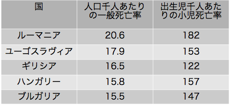
 章表１
章表１戦前のユーゴスラヴィア農民は大量の優れたミルク、バター、チーズ、およびたぶんヨーロッパで最良の鶏肉を生産したがトウモロコシパンと豆で生きていた。税金を払うために生産物を売らなければならず、これらの大部分は住民の大部分には役に立たない輸入品と交換に輸出された。土地の配分は非常に不平等であった。農民家族の95％は合わせて半分以下しか持たず5％の家族が農耕面積の半分以上を持っていた(5)。１人を維持するには２エーカーが必要なのに農民家族の多くは８エーカー以上の土地を持っていなかった。
ルーマニアでは農民が人口の大部分を占めたが農民は大恐慌のピークのときに始めて栄養の良い時代を迎えた。農産物を売る市場が無く農民は自分たちが作った食物を食べた。その結果、税を払うことが出来ず困ったのは政府が雇っていた役人たちであった。
このような状態すべては自然による大災害ではなく人為によるものであった。少数の人たちの利益のために多数の人たちを犠牲にして発展した文明の性質によるものであった。我々の文明は5000年経っても、すべての人たちが必要とする食物を供給できないことは悲しいことである。我々はこのような目的のための科学知識を持っている。土地の生産性を増加させる方法や農作物の量および質を良くする方法を知っている。しかし食物の分配に関しては科学を離れて成り行きに任せているか、救済手段として少量の食物を渡して責任を果たしたと考えている。
食物は人にとって基本的に必要なものであり社会生活に貢献している人は必要とする量および質の食物を要求する権利を持っている。過去において人々は飢饉および低栄養を甘んじて受け人間が制御できない力によるものと信じてきた。啓蒙および民主的政府が２世紀続いた後になると、この考えは急速に変化している。豊富の中で飢えたり栄養不足になる正当な理由が無いことを認め始めている。これは社会体制の避けることができない結果であり変化させることが出来るし変化させねばならないことを知っている。この本を書いているあいだに世界は最大の危機の第２次世界大戦を通過していて、この危機における問題点の１つは疑いもなく社会保障であり働く権利および食べる権利である。
食事の習慣
食物不足が病気の１つの重要な原因であるとすれば過剰もまた健康に悪い。飢餓で死ぬ人より食べ過ぎで死ぬ人が多いと聞いたことがあるだろう。これは非常に表面的な発言で裕福な都市生活者で空腹になったことが無く都市のスラムや貧乏な田舎を見たことの無い人がふつう言うことである。食べ過ぎが胃腸管に有害であり過体重が循環系に負担となることは疑いが無い。しかし過剰の危険がある人たちは低栄養に苦しむ人たちとは比較にならないほど少ない。食事の習慣は大きく改良された。とくに1914-1918年の戦争以後において著しい。戦時経済による制限は多くの例で有利なことが判り栄養科学の要請を確認した。大食はもはや流行ではなく「肉付きのよいこと」が富裕の証拠で社会的な威信を示していた19世紀にくらべると金持ちの食事もずっと質素になった。
一般に金持ちのギリシア人の食事は質素で共和制時代のローマ人の食事はもっと質素であった(6)。帝政時代のローマ人になると状態が変化し古代の全世界から美味なものが輸入された。正式な晩餐はオードブル、アントレ３皿、ロースト２皿、デザートの７コースからなっていた(7)。中世になると多くの修道院や貴族の宮廷は食べ物が豊かなことで知られていた。数世紀にわたって暴食は非難されず金持ちの特権として許されていた。貴族たちは手本を示し中流のものは豊富に暮らせるようになると熱心に真似をし百姓たちや都市の職人たちにとって結婚式や通夜は胃に詰め込めるだけまたはもっと多く食べる機会であった。17世紀のオランダ画家は大量の豊かな食事を画いた（図２）。1768年におけるイギリスの田舎紳士の夕食は次のようであった(8)。
炙った羊肩肉とアンズのプッディング――仔うし肉のカツレツ、焼いたジャガイモ、冷たい舌ハム、冷たい炙り牛肉、殻に入った卵。飲み物として、パンチ、ワイン、ビール、およびリンゴ酒。
同じジェームズ・ウッドフォード牧師が1774年に「素晴らしい」晩餐を出したときには、次の献立であった。
第１のコースは、大きなタラの切り身、ヒツジの背肉、スープ、鶏肉パイ、プッディング、カブなど、第２のコースはハトとアスパラガス。仔うしのヒレ肉と辛いソースをかけたマッシュルーム、炙った膵臓、熱いイセエビ、アンズのタート、中央にはシラバブとジェリーのピラミド。晩餐の後で果物のデザート、ワインとしてマデイラ産の白と赤のポート。
1890年８月にサラトガ・スプリングのユーナイテド・ステイツ・ホテルで出された晩餐は次の通りであった(9)：
殻にのせたカキ
ソーテルヌ（甘口白ワイン）
緑色のカメ・スープ オリーブ
茹でたサケ イセエビ・ソース ジャガイモ・ボール
ソーテルヌ
膵のカツレツ エンドー豆
クラレット（赤ワイン）
ビーフのヒレ肉 マッシュルーム・ソース
インゲン豆 マッシュト・ポテト
シャンパン
ローマン・パンチ
最上の鶏肉 トリッフ・ソース
テラピン（淡水カメ） サラトガ・チップス（ポテトチップ）
トーストにのせたコリン・ウズラ 塩漬けアーモンド
レタス チーズ クラッカー
ロクフォール（羊乳チーズ）とヌーシャテルチーズ
冷菓 メレンゲ 果物
コーヒー シガー ベネディクチン（リキュール）
このような晩餐は今日では御馳走であるよりは拷問と考えられるだろう。人々はカロリーを気にするしスリムなのが流行である。世界全体で何百万の人々が食物不足で飢えているのに多くの金持ちは流行のために意識的に飢えている。
アルコール
大食は社会的な意味のある脅威ではない（＊半世紀以上も前のことである）。しかし、アルコール類の過剰な使用はすべての階級に関係するのでずっと重大な脅威である。アルコール飲料の生産は最古の時代に遡ることができるのは興味深い。この技術は農業そのものと同じくらい古いように思われるし地球上のあらゆる場所で自発的に発明されたのに違いない。麦芽を入れた穀類から作られたビールはエジプトおよびバビロニアで非常に好まれエジプトではブドウから作られバビロニアではナツメヤシから作られたワインも好まれた。しばしば種々の香辛料で味付けをしたブドウ酒はギリシアおよびローマの発酵飲料であった。ギリシア人がこれを水で割ったのは弱くするためだけでなく甘味を減らすだめであった。北ヨーロッパではブドウの木が導入されるまで野蜜から
アルコール飲料への欲求および全般的な人気は種々の理由によるものであった。まず第１に食物として消費された。パンとビールはエジプトで貧乏な人の食物でありバビロニアでビールは賃金の一部として支払われた。これらは味が良くアルコール含量は多くは無かったが抑制を除き刺激的の効果を持つのに充分であった。
アルコール飲料はオシルスの祭儀からディオニソスの祭儀まで古代の祭儀をはじめ後にはキリスト教教会で用いられた。ワインは人の心に作用し舌を軽くし「神懸かり」にする傾向があった。赤ワインは生命物質である血液の色をしているので生命のシンボルになった。死んだ植物や動物の部分が生きた物質になるのは奇跡であり摂食の行為は儀式としての意義があった。食事の前にギリシア人やローマ人は神に犠牲を捧げキリスト教徒は祈りの言葉を述べた。ある種の儀式で見られる聖餐にさいしての食事はギリシア語の「シンポジウム」からキリスト教の「アガペ」に至る古代文明における慣例であった。これらの儀式においてワインは重要な役割を果たした。
アルコール飲料を利用するとしばしば酩酊が起きた。これは当たり前のこととして受け入れられて問題にされなかった。反対があったとしても道徳的や衛生的な理由ではなく美的な理由によるものであった。南方の人たちは一般に控えめであり習慣的な酩酊はワインの諸国ではどちらかと言うと稀である。アルコール中毒が重大な健康問題になったのは「酒精」の蒸留を知るようになった後のことであった。蒸留過程は古代に知られていたが普通に行われるようになり薬品の製造に使われるようになったのは18世紀になってからのことであった。高濃度のアルコール飲料すなわち「ハードリカー」は容易で手早く比較的に安価に不愉快な現実から逃れる方法なので危険なものになった。
私の考えによると飲酒には２つの主な原因がある。１つは社会的および経済的な原因である。不幸、貧しい生活条件、教育および娯楽の設備の不足、は人を飲酒に追いやる。ロシアでは1913年に年間１人あたり8.1リットルすなわち２ガロン以上のウオツカを消費し平均的な労働者は賃金の４分の１以上を酒に使っていた。革命後に労働人口の条件が変わったことによって人口あたりの酒消費量は着実に減った。1931年には4.5リットルで1935年には3.7リットルであった(10)。
不幸や抑圧を感じて打ちひしがれるとますます飲酒で忘れようとする傾向がある。酒を呑めば呑むだけ人々はますます抑圧され悲惨になる。白人による征服は火器による以上に火酒によるものである。アメリカ・インディアンにたいするアルコールの影響はよく知られている。インディアンが使った刺激剤はタバコであって、これで酔うことはない。ウィスキーは抵抗を除き搾取の餌食とした。同じ征服手段は世界の他の部分でも用いられた。
有害な飲酒の原因は民族の習慣やグループの癖に求められる。アルコールは阻害を取り除いて人たちが自由に話すようになるので社交のために人々が集まるときにはアルコール飲料を飲む習慣がある。フランス人が社交性アルコール中毒と呼んでいるものには特に高い教育を受けた階級が罹っている。これはあまり目立つものではないが非常に有害な結果をひきおこす。
禁酒法は予想外に飲酒を美化しアルコール中毒を克服できないことは経験が示してきた。社会条件や経済条件が改善されて社会保障が高度化すると酩酊の主な理由が除かれて習慣や癖の根本的な変化が可能になるであろう。この過程は遅いが実行可能であり実際にすでに進行している。若い人たちは過去にくらべると健康に気を使っており体育をより楽しんでいる。人間は完全にはなり得ない。自分の健康を保持するためだけに生きることはないだろうし生きるべきではない。毎日の生活の単調さと疲労を償うための刺激物をいつでも求めることになるであろう。この要求はビールとかワインのような飲み物で合理的に満足されるであろうし消費が適量ならば有害な影響は存在しない。
世界の他の所では阿片、大麻、ペヨーテがアルコールと同じように使われている。刺激性はあるが中毒性の無い薬品、とくに茶、コーヒー、タバコに含まれるものは世界中でひろく使われるようになった。濫用するとどれも有害であるが、あるものは非常に有益である。中国で一般的な茶を飲む習慣は飲料水を煮沸させることによって多くの腸疾患を予防している。
食養生
食養生は古代に高度に発達した。ヒポクラテスの最高の著作のあるものは種々の食品の質や効能を詳しく述べている。しかし現代の栄養学は非常に若い。この領域の先駆者は化学者リービッヒで彼は有機化学において発見したことを人体生理学が着目する前に農業および牧畜に適用した。1873年に偉大な衛生学者ペッテンコーフェルは次のように独特な言明を行った(11)：
注目すべき事実として今日の殆どすべての教育を受けている農民は一定の成果をあげるためには、ブタ、ヒツジ、雌ウシ、雄ウシ、に、タンパク質その他の物質をどれだけ与えるべきかを知っている。飼育のため太らせるため乳を生産させるため筋を発達させるために餌のどの成分が必要かを知っている。しかし人間は栄養学の昇っている太陽の光明を殆ど受けていない。
植物や動物の栄養を研究する利益はすぐに判るので研究はすぐに奨励された。しかしヒトの栄養学に広げるのには反対があった。動物と違ってヒトは何が有益か知っていると信じられていたのでヒトの栄養の研究は無駄であるように見えた。人類はカロリーの知識が無くても数十万年にわたって生き続けてきた。すべての人々は必要な食物を本能的に探し出し、それは住んでいる環境に最も適当なものであった。動物と人間が似ているものとすることは多くの人々にとって侮辱であった。
このような反対にたいしてペッテンコーフェルは非常に適当な返答を持っていた。彼は言った(12)。「母乳と牛乳は非常に似ていて子供に乳を与えている母親の魂と雌ウシの魂ほど大きな差は無く一方が他方の代わりをすることができる。子供を雌ウシのミルクで養うことができるし子ウシを母乳で育てることができる。金持ちは気に入った食べ物を好きな質のものを好きな組み合わせで買うことができる。しかし貧しい人たちは最低のものしか得ることはできない。どんな食べ物を買ったら良いだろうか？ 選択の自由が殆どまたは全くない兵士や監獄とか施設の入所者の健康を良好に保つにはどのような食物を与えたら良いのだろうか？ 栄養には一定の必要基準があり、これを決定できるのは生理学の研究だけである」と、ペッテンコーフェルは断定した。
リービッヒの弟子でペッテンコーフェルの共同研究者のフォイトはこの領域で先駆的な仕事をした。彼の弟子の１人であるループナーは彼らの仕事を続けて成功した。最近になり栄養学はアメリカで高度に発展した。ビタミンの発見はとくに意味深い。くる病、壊血病、脚気、ペラグラのように恐ろしい病気は欠乏病、すなわちビタミンの欠損によることが判った。治療や予防が可能になった。
多くの例のように経験が科学に先行した。壊血病は航海の呪いであった。航海船の乗組員や乗客を襲い多くの犠牲者を産み、ときには探険員を全滅させた。ビタミンＣが発見される前に新鮮な果物や野菜が壊血病を治し予防した。17世紀に東インドに航海するオランダ船は大量のオレンジを載せ(13)ライム果汁はイギリス船の重要食品になった。1711年にオランダの医師ボゲルトは予言を書いた(14)：
この病気の治療についてくどく論じている同学の士は目立たない野原の草が彼らの想像上の知識や卓越した万能薬よりも強力なことに気がつくことを私は望んだ。
今日では我々は健康に良いバランスが取れた食事は如何にあるべきかを知っている。もしも莫大な数の栄養不良が世界にあるとしたら第１に原因となる社会的および経済的な因子と並んで教育の不足に責任がある。食習慣は古いしきたりによって決定されるものであり従って非常に頑固であって変えるのは困難である。この領域において教育はとくに困難な仕事である。何故かと言うと欠陥のある食事は明白な殺人者ではないしすぐに病気をもたらすものではないからである。これは人々の具合を悪くし病気の発展の下地を作る。習慣的な食事を変える必然性はこのように常に明らかではない。先には長い道が待っている。
衣服およびその健康に及ぼす影響についての歴史では気候を区別しなければならない。熱帯では物理的に衣服を必要としない。人々は裸で暮らすことができる。着るのは防禦のためではない。これと違って極地では防禦のために身体を完全に覆って体熱が失われるのを防ぐ。我々が住んでいる温帯で衣服は種々の役割を果たしている。
聖書は衣服を着るのを原罪によるものとしている(15)。
２人の目は開け、自分たちが裸であることを知り、２人はいちじくの葉をつづり合わせ、腰を覆うものとした（創世記3:7）。
主なる神は、アダムと女に皮の衣を作って着せられた。（創世記3:21）。
主なる神は、アダムと女に皮の衣を作って着せられた。（創世記3:21）。
もともと人は羞恥心を持って居らず羞恥心は文明の２次的な所産であるとした解釈は正しい。しかし身を覆ったために羞恥心を持つようになったとしないで、羞恥心を持ったのでいちじくの葉を思いついたとしたのは順序が逆であり誤りである。
動物界でしばしば雄を雌よりも派手に自然は作っている。ライオンはたてがみを持ち雄鶏は鶏冠や華美な羽毛を持っている。自然がヒトの男子に与えることを拒否したものを文明が進むのにつれて男子は自分で手に入れた。顔料、入れ墨、装飾のための傷は普段の衣服に先がけ男子は女子より早くしかももっとしばしば使用した。目的は明らかに性的刺激を生じさせるためであり時には個人の身分を示すためだったり呪術的な意味を持っていた。
次の段階は異物すなわちネックレス、ブレスレット、リングなどや衣服で身体を飾るようになった。これらは装飾のためで常にとはいわないがしばしば悪い魂や悪い眼から守る魔除けでもあった。衣服は身体のある部分を隠しそれによって注意を惹くためのものであった。第１の目的は性的刺激のためであった。
服装の発展
元来熱帯地方の衣服は帯であって(16)、それが腰巻、スカート、肩にかけてシャツ、マントとなった。人間が北方に移住し衣服が寒気に対する保護として役立つ必要が生じた時、腰巻から多分ズボンが発達した。ズボンは極地に特有な衣服となった。エスキモーでは男女ともにそれを着用している。熱帯アフリカでは男も女も帯とかスカートをつけている。ギリシアやローマでは熱帯の衣服が流行し基本的にはスカートとマント、キトンまたはペプロス、ヒマティオン、テュニカ、パリウムからなっていた（図３）。北方の蛮族だけがズボンをはいていることが知られていた。ヨーロッパでは中世に変化を生じ、家に閉じこめられていた女性は熱帯の衣服を着続け、男子は次第に極地の衣服を採用するようになった。衣服の歴史はヨーロッパの社会的および経済的な歴史を反映している。封建社会で各個人は特定の身分に生まれ、各階級には特有な衣服があった。貴族、聖職、同業者仲間、職人、農民、すべては異なった衣服を着ていた。衣服はスタイルも材料も異なっていた。社会的地位が高いほど材料は高価でありフリルが多かった。最近まで兵隊の制服は派手であった。この目的は他の人たちより兵士を女性に魅力的にするためであり、これは職業上の危険にたいする代償であった。農民のあいだに非常に美しい国民的な衣装が発達した。あるものは宮廷衣服の真似であり、あるものは独自の美術感覚を表現したものであった。これらの衣装は何世紀にもわたってほとんど変化しないで使われた。最近になって多くの国でこれらの衣装は再流行してきた。民族主義が盛んになり農民は昔より尊重されるようになってきたからである。
中産階級の興隆はまた服飾に正確に反映した。フランス大革命で２つの階級が激突したとき、長ズボンが仲間のシンボルになった。貴族は半ズボンすなわち「キュロット」にこだわり、民衆は「サン・キュロット」すなわち半ズボンではなく長ズボンをはいていた。中産階級の勝利と民主主義の興隆は特権的な服装が廃止され、このような服装は封建制度の遺物である宮廷、貴族院、カトリック教会などの場所だけに残った。ますます衣服が工場生産されるようになり魅力ある服装が安価に作られるようになって衣服による階級の区別はほとんど完全に消失した。
女性の解放すなわちそれまで男性の独占的な領域であった生産過程、スポーツその他において女性がますます大きな役割を果たすようになった事実は衣服に深い影響を与えた。さらに進むと女性は時には習慣になっている熱帯的な衣服を捨てて極地の様式を採用して、ゆるいズボン、スラックス、短いズボンさえはくようになった。
衣服が階級差別のシンボルではもはやなくなってしまったので性的な機能がますます明らかになった。また性的な面における「多様性」はまた楽しいことなので民主主義の時代における女性の流行は常に背中、胸、腕、脚、腿を隠したり出したりする努力であった。女らしく見せるか少年らしく見せることによって２次性徴は強調されたり最低に抑えられたりした。マネーの絵にある婦人は「バスル」すなわち「フォー・キュル」すなわちスカートの後ろを大きく張り出させることによって腰の丸みを強調する巧妙なしかけ（図５）をつけていたが、今日ではゴム入りのコルセットを使うことによって主として絹工業やゴム工業を儲けさせている。
最近になってファシズムのような反動的な運動の発展は服装に興味ある反響をひきおこした。この運動は女性を台所に追いやる男子の運動であったので男子の服装にだけ影響を及ぼした。人たちを指導者と被指導者の２つの主なグループに分ける傾向は党のシャツを採用することになった。ファシズムは非民主的で階層的であるので多くの人たちに出来るだけ階級の徽章をつけた制服を着せるようにした。ちょうどロシアの帝政時代と同じである。ファシズムの国粋的な傾向は農民のあいだで民族的な衣装を着ることの復活を最終的にもたらした。
健康への影響
衣服が健康にどのように影響したか影響しているかを見つけなければならない。装飾用の傷、刺青などの装飾そのものは有害ではないが、これによって皮膚の類ガンやガンが起きた例が知られている。白粉は皮膚を保護することもあるが時には刺激物である。身体を損なったり変形させる装飾の習慣は明らかに悪影響を及ぼす。何世紀にもわたって中国の少女に行われてきた西洋では足を縛らなかったが何世紀にもわたって女性の腰を縛った。コルセットはバロック期の産物である。バロック美術は気高いギリシア時代の直線の柱を見限って螺旋状の柱で置き換え、螺旋、曲線、張り出しの建築を作りあげた。女性の身体もこの時期が決定した同じ法則に従わせられた。大きな髪型またはウィッグ、白粉を塗った顔、張り出した胸、狭い腰、「クリノリン」製のスカートによって女性は広い台に載せた花瓶のようであった。フランス大革命はローマ時代の理想に従って女性をコルセットから解放し約20年の短いあいだだけ女性をローマ時代の女性のような衣装をつけて振る舞った。しかし王政復古はコルセットを戻しコルセットはその後における女性の男性への封建的服従の無意識的なシンボルとなった。男子だけに権利を与える民主主義が発達した。しかし何万人もの女性がコルセットを付けずに工場で働いた。彼女たちの労働によって繊維産業その他の工業が発達した。彼女たちが男性と同じ権利を主張する時代が来た。女性が選挙権を得たのとほぼ同じころにコルセットは最終的に投げ捨てられた。
コルセットは18世紀の貴婦人たちが悩んだ憂鬱症、失神および痙攣の多くの原因だったであろう。きつく着れば着るだけ健康に悪い影響を及ぼした。下胸部および腹部の筋を圧迫することによって呼吸を著しく阻害した。コルセットはまた肝臓を変形させ肝臓だけでなく胃その他の腹部臓器を圧迫し移動させた。コルセットは血管を圧迫し、呼吸、消化および循環に悪影響を及ぼした。ほとんどすべての病気はコルセットによるものと言える。これは誇張に思われるかも知れないが、この不運な衣装が女性の一般的な福祉および活力に悪い影響を与え多くの病気の発生に大きく関与したことは疑いがない。兎も角コルセットは美しい性を弱い性にした。
人体で衣服を自然の状態で吊すことができるのは２カ所しかない。腰と肩である。圧迫せずに他の場所に衣装をつけることはできない。ギリシア、ローマ時代のブラジャーは頭が２つある包帯のようなものであり押さえるには非常にぴったりとつけなければならなかった。現在のブラジャーは肩にかけられているので優れている。中世の長靴下は脚全体を覆う一体のもので腰に吊されていた。16世紀に長靴下はストッキングとトランクホーズ（ショートパンツをふくらましたようなズボン）に分けられ、ストッキングを固定するのは衛生学的に困難な問題があった。膝の上または下につけるガーターはきっちりとしていなければならなかった。従って静脈を圧迫するので静脈瘤になりやすい人では静脈瘤発生の原因となった。
清潔
ギリシアやローマ時代の衣服すなわちテュニカや外套は数が少なく、ゆったりと着ることができ、まとうだけであり清潔に保つのが容易であった。13世紀以降になると衣服は仕立てられ生地はますます重くなり個人が身につける衣類の数もまたますます増加した。これらを清潔に保つのはずっと困難になった。汚れた衣服でシラミは増殖し、シラミは発疹チフスや回帰熱などの媒介体である。着る衣服が少なければ少ないほど清潔なのは原則である。熱帯アフリカの原住民は非常に清潔である。ペチコートその他の衣装をつければつけるだけヨーロッパは不潔になった。古代ギリシアやローマではすべての階級はしばしば入浴していた事実はあるが新しく清潔になったのはつい最近のことである。ほんの1878年にペッテンコーファーは多くの人たちは24時間に１クォート（約１リットル）の洗い水で満足しミュンヘン市で入浴設備をもつ家は特例である、と述べた(17)。当時およびその後も大部分の人たちは身体を週に１度、土曜日の晩か教会に行く前の日曜日の朝に洗った。また彼らは下着を週に１度しか洗わなかった。ドイツで行われていることは全ヨーロッパ大陸に当てはまった。イギリスおよびイギリスの影響でアメリカは明らかに例外であった。
このような状態は衣服の主な目的は装飾であることを思い出すと説明が容易である。汚れは美しものとは思われていたわけではなかった。人々が軽快な服装をして皮膚を露出しているときには衛生の理由ではなく美的な理由で身体を洗った。しかし衣服は汚れを覆っていたので外から見える場所の顔と手を洗えば充分と考えられた。絹をまとった女性の脚はその下が汚くても魅力的であった。外から見えない男性のワイシャツはカラーとカフスさえ綺麗であれば洗う必要がなかった。カラーとカフスはワイシャツよりも替えることができるように取り外すことができた。
清潔は19世紀および20世紀における衛生運動の主な目標になった。多くの障碍を乗り越えなければならなかった。とくに石鹸をしばしば使うと皮膚に悪いと主張する人たちの反抗であった。もっと問題だったのは宗教上の反対であった。キリスト教は衣服をつける習慣を原罪と結びつけていたので羞恥心の観念を過度に発達させていた。人間は身体をできるだけ覆うべきであると主張し裸体に病的な魅力を与えた。裸体は個人の浴室でも罪深いものとし今でもカトリックの学校で女子がシャツを着て入浴するところが存在している。アフリカ原住民にたいする宣教師のある種の活動のように悲しい例は無い。アフリカではズボンが十字架と同じようなシンボルになっている。熱帯の住民に極地の服装を強制し羞恥心というこれまで無かった概念を押しつけることによって衝突が起き、その結果として道徳心は高められず真のキリスト教の精神と反することになっている。
衣服の主な目的が飾りであり肉体的な欠陥を隠したり矯正し個人の性的魅力を高めることであるとしても我々の気候で衣服が重要な衛生機能を満たしていることは否定できない。衣服は寒さ、雨、日照のような大気の要因から我々の身体を護っている。この目的に役立つために衣服は身体の生理機能の邪魔をせず冬には熱の不良導体であり夏には良導体である材料からなっていなければならない。材料の多孔性、すなわち織物の空気含量はこの点で重要である。20世紀になって大きな進歩が遂げられた。流行は支配的であり将来も常に支配的であろうがスポーツやますます多くの女性が男性の仕事をする事実、さらには健康の意識および健康の事柄にたいする啓蒙が、流行の権力にたいして一定の限界を与えている。我々は衣服を着て先祖たちよりも気持ち良く動いている。
衣服が量的にも質的にも不適当であると身体は大気からの傷害に暴露され風邪を引いて種々の合併症を伴う。栄養の場合と同じように不適当な衣服の主な原因は貧困である。
これに関連してもう１つの点を述べなければならない。文明によって身体を衣服で覆う習慣が発展した。衣服は健康に役立つが、すでに見たように病気を引きおこすこともある。他方、病気という現象は衣装を作りだしてきた。たとえば中世にハンセン病の患者は健康な人たちが患者に触らないようにすぐ判るサインを身につけるように強制された。
医療従事者の服装
1348年から1349年の黒死病の流行時に医師たちは感染を防ぐためにマスクとガウンを考え出した。彼らの服装は諷刺や漫画のよい材料になった。しかしマスクは1910年から1912年にかけて満州で起きたペストや1918年から1818年にかけてのインフルエンザの流行で有効なことが証明された。無菌法が誕生して外科医の特別な服装が発達し外科医は滅菌したガウンと帽子を身につけゴム手袋をはめ口と鼻の前にマスクをつけて手術し患者を細菌から守っている。病院の医師は「白衣の人」になった。中世に病人や負傷者を看護するために組織された修道会は特殊な徽章をつけた。このようにしてエルサレムの聖ヨハネ病院の「看護者」は８つの尖端をもつ十字架をつけていたし今でもつけている。現在は赤十字がデュナンの作った国際組織のシンボルとなっている（＊イスラム諸国では宗教上から赤新月をシンボルにしている）。聖俗の看護団体は自分たちの会員のための服装を定めている。
旧石器時代の人たちは洞穴に避難所を求めた。洞穴が彼の家であった。彼はここが安全で悪天候や敵にたいして護られていると感じた。火は彼に明るさと暖かさを与え煙は洞穴の口から出て行った。時に壁を絵で飾った。
住宅の発展
文明が進むと人はもはや自然の避難所に頼らないで済むようになった。岩が柔らかいと人工的な洞穴や岩棚住居を造った。前面に石を積み壁を作り丸太や皮で覆って洞穴を拡げることができた。これによって室を追加し、穀物倉、倉庫などの目的に使われた。森の中で住んでいる部族は地面に何本もの棒を差し込んで頂点を結び、藪、カヤ、皮で覆った。１つの小屋は１つの部屋であった。もっと部屋が必要なときにはアフリカの原住民が部落を作るのと同じように小屋を建て増しした。
後期石器時代や青銅器時代には中央ヨーロッパの湖の中に杭の上に長方形の小屋が建てられた。多くの点でこれらは便利であった。床から魚を捕らえることができた。廃棄物は水中に捨てることができ住民は安全と感じていた。同じような住居がタイや種々な部分のメラネシアで今でも建てられている。
このような原始的な小屋は何世紀も何千年も貧乏な人たちの避難所であった。アフリカやアジアでは何千万人の人たちが石器時代と殆ど違わないような小屋に今でも住んでいる。南イタリアのある部分では今でもローマ時代以前の丸小屋が見られ、セヴィリャ郊外のアルバイシンでは山の中腹に掘った洞穴にジプシーたちが岩棚住民と同じように暮らしている。
文明が進んで資産を持つ階級が生まれると古代オリエントでは新しいタイプの家が建てられた。１つの屋根の下に多くの部屋が互いに接続していると便利なので多くの部屋を１つのブロックに含まれせるブロックハウス（角材を組み合わせた家）や、さらに幾つもの部屋がローマのアトリウムやスペインのパティオのような中庭に向かい合っているコートハウスの建築を考え出させた。これらが東洋および西洋の家の原型になった。
石や、太陽または火で粘土を焼いて作った煉瓦やタイル、切断された材木または切断されない材木が、主な建築材料になった。石工と大工が家を建てる職業となった。
家は気候にたいする防禦なので健康に役立つものであるが一定の条件を満たさなければ有害でもあり得る。家は充分な空間を持っていて住んでいる人たちに充分の空気とプライバシーを供給することが必要である。このことは台所、便所、階段その他の設備以外に１人あたり最低でも120-150平方フィート（＊10平方フィートがほぼ１平方メートル）床面積が生活および睡眠に必要なことを意味している。
換気
住居には基本的な矛盾がある。住居は天候から人を防禦しなければならないが、それが含む空気は人の生理的な機能や業務によって汚染されないように常に換気しなければならない。喫煙の習慣は家の空気の汚染にもっとも大きく関与する。換気は暖かい気候においては問題でない。１年中窓を開けておき外気のもとで働くことが出来るからであるが北国で換気は重大な問題である。暖房
家の温度を外部の温度の変化に応じて調節して家の中で生活し働くのに不快感を持たないようにすべきである。部屋を暖めるもっとも簡単な方法は火を置くことであった。ローマ時代の農民は小屋の中心の石張りの部分で焚き火をして屋根の通気口から火の粉や煙は外に出た(18)。煙突の導入は改良であり換気が良くなった。壁付きローマ時代町家の部屋は主として火鉢が暖房であった。今でも南ヨーロッパやオリエントで使われ、もっとも原始的で不適当な暖房である。私は２月にモンテ・カシノの僧院の図書室で過ごした週を忘れることはできない。凍えてこわばった指を火鉢で暖めたが長いあいだは続かず、ひどい風邪をひいてこの場所を離れた。
壁付き暖炉を開放状態にはしないで石や煉瓦の装置に入れることによってローマ時代にストーブが生まれた。古代にストーブは調理とパン焼きだけに使われた。中世初期以後に暖房として使われるようになり、これは作用がゆっくりとしていて安定なので開放状態の焚き火よりも優れていた。いわゆるオランダ・タイルで作られたストーブは既に９世紀にスイスに現れた。鋳鉄製のストーブは14世紀になって始めて使われ鉄製丸形ストーブはもっとも安価なので暖房器具としてもっとも広く使われた。ベンジャミン・フランクリンは壁付き暖炉を換気に使う非常に優れたストーブを作った(19)。鉄製ストーブは熱を極めて急速に出すが同じようにすぐに冷える。換気が充分でないと非常に有毒な一酸化炭素が作られる。したがってストーブは多くの事故を引きおこした。エミール・ゾラは一酸化炭素中毒によって悲劇的に死亡した。
壁付き暖炉やストーブは具合が悪いことに、それぞれの部屋に暖房装置が無いと部屋が暖まらない欠点があった。それぞれの部屋にストーブを置くのは不経済であるし面倒なので、ふつう居間だけが暖められた。その結果、家またはアパートメントは部屋によって温度が違い、１つの部屋から他の部屋に移ったときに温度が急に変化することになった。朝に暖かいベッドから起きると顔を洗う前にときには氷を割らなければならなかった。このような条件はたしかに健康に良いものではなかった。感冒や咳のような呼吸病の多くや、一般的な抵抗の減少、結核にある程度は非常に罹りやすくなること、の原因であった。原始的な炉やストーブはまた、なぜ昔の人たちが春の到来を喜びあふれて歓迎したかを説明する。春の到来は自然の再生として心を動かされる奇跡であるだけでなく冬の多くの辛さと不都合さから解放するものとして祝福された。
集中暖房は均一な温度分布を可能にする点で大きな前進であった。ふつうローマ人が集中暖房を発明したとされた。巧妙な暖房についてのウィトルウィウスの記載は考古学によって証明されたが現在の集中暖房とは全く違うものであった。空気を炉で熱し
家全体を中心にある１つの炉で暖めることは18世紀になって考え出された(21)。1716年以後にイギリスではこの目的で熱水が使われた。この世紀の中頃のロシアやドイツの宮殿では熱気が使われた。1784年にワットは蒸気暖房装置を始めて作った。このシステムは19世紀にイギリスにおいて、主としてパーキンスによって改良された。装置は高価であって長い間にわたって集中暖房はひじょうに贅沢なものと考えられた。次のステップは１つ以上の建物を１つの中央装置で暖めることであった。これはニューヨーク州ロックポートで1877年に行われた。
われわれはみな経験から蒸気暖房もまた欠点を持っていることを知っている。温度調節が困難なために特にアメリカの都市では建物を暖めすぎる傾向があり多くのアパートメントや事務室の熱く乾いた空気は呼吸器官に悪い影響を与えている。これは国民病である「副鼻腔疾患」を起こす原因となっている。しかし冬に暖めすぎることは不充分なのよりは良い。燃料には金がかかるので自分の家を充分に暖めることはできないので寒気の有害な影響に曝されている人は今でも多い。
建物の冷房はひじょうに望ましいことであるが暖房にくらべると重要ではない。暑い気候では人々は暑い日中に眠り早朝および夕方遅くに働く。温帯では寒い季節は長く暑い季節はきわめて短い。しかし住居の温度を下げ湿度を調節する現代の空調は快感を増し労働の能率を上げることは疑いがない。まだこの問題は幼稚な状態であるので技術的には解決できるであろうが空調はまだ経済的には実施できない。空調された家はほんの少数のものしか利用できない贅沢である。
照明
住宅照明の改良は人間の生活様式にひじょうに深い影響を及ぼした。目をさましている間だけわれわれは生きていると言ったのは大プリニウスであった(22)。電球はわれわれの意識ある時間を実際に長くした。すでに見たように過去における人間の生活リズムは自然のリズムに正確に従っていた。大部分の国の農業者は今でもしているように人々は太陽が沈むと床に就き暁になると起きた。古代、中世、その後も長い間、都市の人たちはこの点で農業者と同じように暮らしていた。油ランプは少ししか光を与えなかったし18世紀になってジュネーヴのアルガンが円筒形の灯心を発明するまで、ほとんど改良はされなかった。脂肪や蝋で作られた蝋燭は古代の終わりになって作られたが何世紀にもわたて贅沢品であり教会および金持ちの家でもっぱら使われた。照明は日中にも問題であった。ガラスは紀元前3000年の中頃に作られたが主として半透明または色付きであり花瓶その他の容器に使われた。ガラスや雲母で作られた窓はローマ時代の家で見出されたが決してその使用は一般的ではなかった。金持ちの家で浴室のように密閉しなければならない幾つかの特殊な部屋だけに使われていた。外気が寒いかまたは極めて暑いときに窓は木の板または毛布で塞ぎ室内は暗かった。中世に美しいステンドグラスの窓が作られたが良い透明なガラスが作られるには長い年数がかかり、しかもその時でも資力のある人たちだけがガラスを使った大きな窓を持つことができた。従って幾つかの国ではドアや窓に税金をかけ、そのために安いガラスが容易に手に入るようになっても貧しい人の家は暗く換気が悪かった。
貧弱な照明によって長い冬の夜は人々を苦しめた。昔の人たちは今日にくらべると長いあいだ眠っていたであろう。「夜の楽しみ」は無かったろうし必要で無かったり充分な護衛が無かったら家を離れる者は無かったろう。このように落ち着いた生活は人々の健康に良かっただろうが、不充分な照明で読んだり働く人たちにとって眼にたいする代償はたぶん大きなものであったろう。
19世紀にガス照明が導入されると条件は大きく変化した。まず街路の照明に用いられた。1808年にガス灯のある街路はロンドンに１つしか無かったが1814年に聖マーガレット地区全体にガスが供給され、アメリカでフィラデルフィアは1817年に新しい照明システムを持つようになった。照明用ガスは次第に家庭に導入された。ガスは明るい光を供給し便利であったが、よく知られているように危険が無いわけではなかった。ガスによって火事の新しい危険が起こったが一酸化炭素を含んでいるので毒性が高くガス中毒による多くの死者が出た。住宅では鉱油を使うことによって大きく改良されたランプと競合した。石油ランプは部屋から部屋に移すことができたがやはり火事の危険があった。1879年になってエディソンは電球を発明し、これによって照明の新時代が始まった。
人間は今日では暗黒を征服し夜まで活動範囲を拡げることができ自身の必要や種々の職業の必要に応じて照明を加減するようになった。都市はこれまでと違って暗くなっても陰気な場所ではなくなった。街灯やネオンサインは都市を生き生きとさせた。眼を悪くしないで夜間に社交で会合したりショーに行ったり働いたり遊んだりしている。人工照明は都市の安全性および人間の活動のスピードを速めるのに大きく貢献した。都市の人たちは過去に比べて睡眠時間が短く、しばしば不充分となり健康はそれによって改めて害されるようになった。
上下水
人間の生理的活動や居住によって汚物が作られる。多くの人たちが密集して住むと汚物は非常に速く溜まる。汚物そのものは必ずしも有害ではないが有機物質が分解すると人間にとって脅威となる寄生物の増殖する場所になる。パストゥールは人間のすぐ傍に細菌が大量に存在することを示した。腸の病気の病原は患者の大便とともに排泄され感染源となる。下水と廃棄物は住居から運び出さなければならない。住宅は清潔でなければならない。このためには大量の水とおびただしい労働が必要である。古代のローマ人は新鮮な水を大量に得ることの衛生学的な意義をよく知っていた。ローマ人が足を踏み入れたところには、巨大な水道の廃墟が今でも見ることができる。実際のところ、その多くは今でも元来の目的を果たしている。フロンティヌスによると２世紀には毎日２億2200万ガロン（約100万トン）の水が８本の水道を通してローマに運ばれていた。カルコピノおよびロウウェル(23)によると、この水のうちで個人の家に直接に送られたのは少なく公共の泉から運んだり水運搬者から得なければならなかった。それでも水を得ることができ良質であった。
ローマ人はまた下水をテヴェレ河に流す精巧な下水システムを作った。主要で最古のマキシミリア下水の大きなアーチは今でも見ることができる。しかし、すべての家が公共下水につながっていたと思うのはまたもや誤りであろう。
中世における都市の発達は健康に影響した。衛生は非常に原始的であり主として井戸から得ていた水はしばしば遠距離を運ばなければならなかった。便所はしばしば汚水溜に溢れ掃除人が汲み取らなければならなかあった。ごみは街路に投げ捨てられた。その結果、都市はドブネズミがはびこり14世紀から17世紀にかけてペストが流行して多くの人命が失われた。腸の疾患すなわち腸チフスと赤痢は風土病として繰り返し流行した。都市の当局はその危険性を知っていて中世から改良の方策を取り続けていた。都市が絶えず大きくなっているにも拘わらず住民の死亡率は絶えず低下した。多分、生活水準の向上によるのであろう。1681-1690年のロンドンの一般死亡率は人口1000人あたり毎年42人であった。18世紀には35人に減少し、1845-1855年の期間には25人で現在は約12人である。都市住民のこの死亡率減少には衛生設備すなわち新しい給水と下水システムの建設が重要な役割を果たした。新しい公衆衛生の運動はイギリスで始まり19世紀から衛生状態の改善に大きな成果をあげた。他の国々は次々とイギリスの例に従った。
ついでではあるが水洗便所は詩人でエリザベス女王の廷臣であったジョン・ハリントン卿によって発明されたことを述べよう。このことは彼の「エイジャクスの変身」の付録に彼の執事の名前で出ている。女王はこの発明に感心してリッチモンド宮殿にこれを据え付けさせ「エイジャクスの本を壁に吊した」と言われている(24)。水洗便所は衛生への大きな貢献であったが都市に新しい水道と下水が作られた19世紀より前には大規模に適用することはできなかった。この時にはほとんど新しい公衆衛生運動のシンボルになったが今日でも決して広く一般には利用されていない。
スラム
住宅はとくに都市では重大な問題であった。田舎では農民はある種の避難所を専門家の助けなしに自分で作ることができた。アメリカの開拓者たちは森林に丸太小屋、平原に芝土で作った小屋を建て、後になってもっと永久的な建物で置き換えた。家屋敷が大きくなると農民は家に人々が都市に群がるようになると問題が起きた。ギリシアやローマの都市は場所が注意深く決定された後で計画的に建設された。中世の都市は城や僧院の近くに無計画に発展した。城壁が周りにできると拡張が制限され家は高さが増した。多くのアメリカの都市はやはり計画的に作られた。ペンによるフィラデルフィアの計画はよく知られている。
都市の発展が遅いときには計画が尊重された。19世紀になって工業が急速に発達し、アメリカではまた移民の波とともに状態は変化した。西側世界の全体で人口が増加し財産の無い労働者たちは都市郊外にある工場の近くに住み着いた。田舎で農民たちはふつう自分の家を持っていたが都市で不動産は商品として売買および投機の対象となった。家は高利益の投資対象であった。産業が発展し住居への要求が多いときには、まったく憐れな小屋でも高値で賃貸しすることができた。スラムは急速に広がり、その中で人々はぞっとするような衛生状態で群がった。古典的な「1842年の大英帝国における労働人口の衛生状態についての報告」を書いたチャドウィック、著書「1844年のイギリスにおける労働者階級の条件」を書いたエンゲルス(25)、1840年に「綿、羊毛、絹の製造業に雇用されている労働者の肉体的および道徳的な状態の描写」を書いたヴィレルメ、著書「1846年のベルリン」を書いたドイツのドロンケ――これらすべての権威者は前世紀なかごろにかけての西ヨーロッパにおける生活条件について驚くべき描写を行っている。
産業の大発展以前にすらアメリカの都市の状態はかなり悪くなっていた。ニューヨークについて医師マクレディーは1837年に次のように書いた(26)。
労働者たちと彼らの家族の不健康の大きな原因は、彼らの住んでいた狭くみじめなアパートメントであった。とくにニューヨークは急速に発達したが建物の数は多数の外来者の流入に応じて増加することはなかった。宿泊設備は不充分であって部屋代はその結果むちゃに高い。このことは他のどの階級よりも労働者人口にひじょうな重荷となっている。例をあげてみよう。キャサリン通りの小さい２階建ての屋根裏は木の板で３部屋に仕切られている。屋根裏への階段は壊れて手すりが無く部屋の床板には何カ所にも穴があいている。屋根裏の中央の天井は12から14フィート以下であり家の軒にむかって傾斜している。これらのうち最大で炉がある唯一の部屋には毎週1.5ドルが請求され他の部屋はそれぞれ毎週１ドルおよび1.25ドルである。従って屋根裏だけで毎年195ドルとなる。明かりは１つの壊れた窓だけからとり壁は基礎の裸石であって、そこから湿気が絶えずしみ出ている小さく湿った地下室に、年４回65ドルが前払で請求され払わせられている。これらは特別の例ではない。私が調べたすべての例で、貧しい労働者は同様な部屋代を払っていた。
人口が過密になり部屋賃が法外なために起きるもう１つの禍は我々の社会における貧しい階級の人たちのための家の建て方である。ある例では醸造所や精糖工場に計画された建物が数多くの小さい暗い部屋に分割され、それぞれが一家に貸し出されることである。他の例で家主は強慾で狭い路地に小さい木造の長屋を建て費用は少ししかかけないで多くの家族に貸して莫大な利益を得ている。路地の幅はしばしば６フィートにもならず丸石で舗装され水はけは非常に不完全である。この状態ではそれぞれの家で２つか３つの部屋が地下にあることは稀ではない。このような状態では肉体の病気とともに道徳の病気、病気とともに悪徳、の起きることを不思議と思うことができるだろうか？ 男子が真面目に規則的に生き女性が清潔で家庭的であることを期待できるだろうか？ このような状態では夏期に下痢と赤痢が流行し子供は生命が危くなる。多様な腺病（＊医学用語としては頸部リンパ節結核。ここでは一般用語）が見られ、天然痘、はしか、猩紅熱が灰の下に隠れているが好機を迎えると突然に燃え上がる。
人口が過密になり部屋賃が法外なために起きるもう１つの禍は我々の社会における貧しい階級の人たちのための家の建て方である。ある例では醸造所や精糖工場に計画された建物が数多くの小さい暗い部屋に分割され、それぞれが一家に貸し出されることである。他の例で家主は強慾で狭い路地に小さい木造の長屋を建て費用は少ししかかけないで多くの家族に貸して莫大な利益を得ている。路地の幅はしばしば６フィートにもならず丸石で舗装され水はけは非常に不完全である。この状態ではそれぞれの家で２つか３つの部屋が地下にあることは稀ではない。このような状態では肉体の病気とともに道徳の病気、病気とともに悪徳、の起きることを不思議と思うことができるだろうか？ 男子が真面目に規則的に生き女性が清潔で家庭的であることを期待できるだろうか？ このような状態では夏期に下痢と赤痢が流行し子供は生命が危くなる。多様な腺病（＊医学用語としては頸部リンパ節結核。ここでは一般用語）が見られ、天然痘、はしか、猩紅熱が灰の下に隠れているが好機を迎えると突然に燃え上がる。
スラムは今でも我々の都市のガンである。人々の健康をまもる住宅が多くの場合に病気の主な原因となっている。我々の都市のすべては現在の運輸手段や新しい衛生の必要性にほとんど適応していないので根本的に再建する必要がある。少しは進歩があり最悪のスラムもいくつか取り壊され衛生的で好感のもてる住居が増えている。しかし問題の解決にはほど遠く、高い家賃を払っている中程度の人たちも都市のアパートに群がりプライバシーが無く近所のラジオなどの野蛮な音で絶えず悩まされている。中産階級で離婚が多いのは住居空間が限られていて「自分の部屋」という簡単な贅沢が実際には許されないことによるであろうことは確かである。
健康が人間の福祉に重大なものであるとしたら住居はたしかに主な重要な問題である。もしもそうなら住居は今日のように投機の対象や利益の源であるべきではない。競争ビジネスは現在社会の住居の問題にまじめに立ち向かったり正しく解決することはできない。
病気の現象から特定の衣装が発達したように特別な型の建物が発展した。そのうちの主なものは病院である。西暦の最初の数世紀には
中世初期の修道院で病人用に取っておいた幾つかの部屋から発展して病院は中世後期およびルネッサンスの大きな病室を持った素晴らしい建物になった。これらはミラノのオスペダーレ・マジオーレのように都市の誇りになった。そして遂には大小の病室、日光浴室、検査室、手術室を持ち医学研究のための実験室や設備を充分に備えた高度に複雑な現在の施設になった。現代の病院には死が近くにあることを思い起こさせる過去のような陰気さは無くなっている。今日でも病院は苦痛と病気の場所に変わりはないが重点は生にある。
章挿画
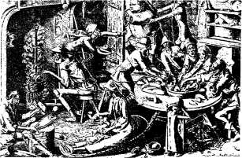
Fig 1 Starvation: Engraving by Peter Breughel the Elder, 1563. 図１ 飢餓：大ピーター・ブリューゲルによる版画, 1563.
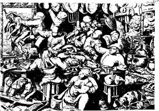
Fig 2 Gluttony: Engraving by Peter Breughel the Elder, 1563. 図２ 大食（大ブリューゲル、1563）
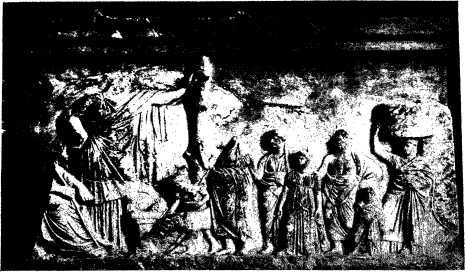
Fig 3 Greek Costumes: Asclepius, Hygeia, and suppliants. 図３ ギリシアの衣服：アスクレピオス、ヒュゲイア、嘆願者たち。
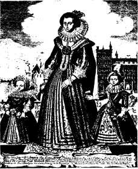
Fig 4 17th Century Costume 図４ 17世紀の服装
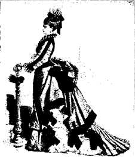
Fig 5 19th Century Costume 図５ 19世紀の服装
章註
(1) See E. Parmalee Prentice, Hunger and History, the Influence of Hunger on Human History, New York and London, 1939, a rather uncritical book that must be used very cautiously.
(2) Jerome Carcopino, Daily Life in Ancient Rome, ed. by Henry T. Rowell, New Haven, 1940, p. 65.
(3) Romesh C. Dutt, Famines in India, 1900.
(4) W. H. Mallory, China: Land of Famine, 1926.
(5) See A. gtampar, Public Health in Jugoslavia, School of Slavonic and East European Studies in the University of London, 1938.
(6) See, for instance, Oribasius, ed. Bussemaker and Daremberg, III, 168 ff.
(7) Ludwig Friedl nder, Darstellungen aus der Sittengeschichte Roms in der Zeit von August bis zum Ausgang der Antonine, 9. Aufl. von Georg Wissowa, Leipzig, 1920, Vol. II, pp. 282-312.--J
nder, Darstellungen aus der Sittengeschichte Roms in der Zeit von August bis zum Ausgang der Antonine, 9. Aufl. von Georg Wissowa, Leipzig, 1920, Vol. II, pp. 282-312.--J r
r me Carcopino, l.c., p. 263 ff.
me Carcopino, l.c., p. 263 ff.
nder, Darstellungen aus der Sittengeschichte Roms in der Zeit von August bis zum Ausgang der Antonine, 9. Aufl. von Georg Wissowa, Leipzig, 1920, Vol. II, pp. 282-312.--Jrme Carcopino, l.c., p. 263 ff.(8) Quoted from J. C. Drummond and Anne Wilbraham, The Englishmans Food, A History of Five Centuries of English Diet, London, 1939, p. 251.
(9) Hugh Bradley, Such Was Saratoga, New York, 1940, p. 203.
(10) V. M. Molotov, The Plan and Our Tasks, Moscow, 1936, p. 63.
(11) The Value of Health to a City, translated by Henry E. Sigerist, Bulletin of the History of Medicine, 1941, Vol. X, p. 603. Reprinted separately by the Johns Hopkins Press, Baltimore, 1941.
(12) L.c.,p.604f.
(13) M. A. van Andel, Der Skorbut als niederlndische Volkskrankheit, Archiv fur Geschichte der Medizin, 1927, Vol. 19, pp. 82-91.
ndische Volkskrankheit, Archiv fur Geschichte der Medizin, 1927, Vol. 19, pp. 82-91.(14) Historische reisen door d'oostersche deelen van Asia, Amsterdam, 1711, p. 92 ff.
(15) Genesis 3, 7 and 21.
(16) C. H. Stratz, Die Frauenkleidung, Stuttgart, 1900.
(17) Max von Pettenkofer, The Value of Health to a City, L.c., p. 607.
(18) J. Carcopino, l.c., p. 36.
(19) An Account of the New-Invented Pennsylvanian Fire-Places, 1744, reprinted in: Nathan G. Goodman, The Ingenious Dr. Franklin, Philadelphia, 1931.
(20) Otto Krell, Altr mische Heizungen, Munich and Berlin, 1901,--Carcopino, lc., p. 36 ff.
mische Heizungen, Munich and Berlin, 1901,--Carcopino, lc., p. 36 ff.
mische Heizungen, Munich and Berlin, 1901,--Carcopino, lc., p. 36 ff.(21) F. M. Feldhaus, Die Technik der Vorzeit, Leipzig and Berlin, 1914.
(22) Naturalis Historic, praefatio 18.
(23) L.C., p. 38.
(24) See the delightful essay on Sir John Harington by Lytton Strachey in Portraits and Miniatures, London, 1931.
(25) First published in German in 1845. The first English translation was published in New York in 1886.
(26) Benjamin W. McCready, On the Influence of Trades, Professions, and Occupations, in the United States, in the Production of Disease--being the Prize Dissertation for 1837, Transactions of the Medical Society of the State of New York, 1837, Vol. m, p. 97 f.
欲望を満たすために人はいつでも働かなければならなかった。熱帯地区でも果物を集め魚を捕まえ鳥獣を獲らなければならなかった。欲望は文明が進むにつれて増加した。植物を栽培し動物を慣らして増やすことは好結果であった。これによって人は安全度が増えたからである。しかし土地を耕し潅漑し収穫物を刈り取り家畜を世話するのは重労働であった。身体を飾り保護する衣服は獣皮から作ったり骨折って繊維から織らなければならなかった。労働によって小屋を建てカヌーを作り石を切って道具を作り火をつけた。次第に原始的な分業が起こった。男子は狩人であり家畜の飼育者であり戦士であった。女性は畑と家の世話をした。
労働の意義
文明の複雑さが増すにしたがって欲望が増加し労働が激しくなった。今日の人たちは欲望を満足させる手段を得るために自分たちの時間の大部分を使い実際に満足するための時間がほとんど残っていないと言うことを聞くことがある。認めるにせよ認めないにせよ、文明化した人間の最大の要求は創造的で社会的に役立つ仕事であることを見逃している限りこのような発言は誤りである。実際、人が孤立した自己中心的な個人ではなく協同社会の有用な一員になることこそ文明の正しい特徴である。農業者の満足は労働によって自己および家族を養い若干の剰余を生んで必要な幾らかの物を買うだけではない。自然を超えた能力を持っていること、すなわち土壌の肥沃度を高めて支配できることである。春に畑は柔らかい緑で覆われ夏には重い穂が収穫を待つようになると、これは自然だけでなく農業者がしたものであることを知って当然のことながら誇りに思う。彼は良き大地を愛し社会的意識に目覚めたときに大地にたいする彼の仕事は社会の基本的な要求に役立っていることを知る。壊れた自動車の修理に成功した工員はモーターの最初の破裂音を聞いたときに儲けになることではなく自分の能力を確かめて優れていることに満足する。
実際のところ労働は人間にとって呪いではなく大きな祝福である。労働は我々の生活を高揚させ、それに意義を与える。欠くと生きる意味が無くなるような物質的および文化的価値を労働は創造することができる。社会が進歩したなら、これはすべての成員の協同の努力によるものである。
労働は健康の有力な要素であり毎日の生活を釣り合わせリズムを決定している。使われていない筋肉は萎縮する。働かない脳は衰える。失業者は生活水準が低下するためだけでなく仕事がなくなるために生活のリズムが乱れることによって肉体的および精神的平衡が損なわれて割当て以上の病気を持つようになる。
人間の強慾さと愚かさが労働を残忍なものにし我々に健康を与える代わりに、しばしば罰として病気を与えたことは人間の歴史の事実が示している。労働は２つの様式、量的および質的に、有害であり得る。休息とレクリエーションで適度に補償されていない過度の労働は身体と心を消耗させることによって人間の自然の抵抗力を少なくする。他方、好ましくない環境条件で行わなければならない多くの職業がある。
すべての古代社会で少数の個人が土地その他の生産手段を独占していた。戦争の捕虜は奴隷にされ古代の経済は主として奴隷経済であった。乱世でしばしば戦争があると労働は容易に得られ個々の奴隷の生命は問題ではなかった。彼らは容易に置き換えることができたからであった(1)。
産業災害と病気
我々は文明を芸術的な成果によって評価する傾向がある。芸術の多くは幾世紀も存在し、当時と同じように今日においても感動的である。エジプトのピラミドは強力な創造的な精神と高度に発展した技術を示しているが、これらは何万人もの奴隷の血と苦悩によって作られたことをあまりにも容易に見逃している。我々は彼らが鞭のもとに働かされたことを、今日でもエジプトの壁画やレリーフに見ることができる。都市労働者の生活もずっと楽だったわけではない。普通にはないようなエジプト文書は反抗の声を伝えている(2)。
鍛冶屋や鋳物屋が派遣団の使節として送られるのを見たことはない。私が見たのは仕事をしている金物屋である。彼は炉口で火にあぶられている。石工はすべての天候ですべての危険のもとに裸で建てている。彼の腕は仕事で疲れ食べ物にはゴミや埃が混じっている、したがって他に食べ物がないので爪をかんでいる。床屋は胃を満たすために腕を傷つけている。家で働いている織工は女性よりも家では不幸である、すなわち膝を折って胃を押さえつけ呼吸することができない。波止場の洗濯夫はワニの近くにいる。染色工は魚の臭いがする。すなわち眼は疲れ手は休み無く働きぼろ布を切って時間を過ごしているので衣類を恐れている。
優美なギリシア人の青銅小彫像は今でも我々を喜ばせるが青銅を作るための銅、錫、石炭は奴隷たちや囚人たちが狭い坑道で熱と煙で窒息して毎日10時間も働いて掘り出されたことを忘れている。
古代の産業は主として小規模であった。職人はしばしば戸外で働いていた、東洋のいたるところで今でも行われているように。したがって工業災害は後の世紀にくらべるとずっと少なかった。しかし職業病は起きていた。鉛中毒はヒポクラテス集典(3)に記載され、鉛、水銀、硫黄を取り扱う人たちにそれらの及ぼす悪影響を大プリニウスは述べている(4)。詩人のマルチアリス、ユヴェナリウス、ルクレティウスはついでながらある種の職業の危険について述べ、硫黄職人(5)や鍛冶屋(6)に特別な病気、占い者の静脈瘤(7)や金採掘者の辛い運命(8)、について述べている。自分でしなければ誰も助けてくれない。たとえば大プリニウス(9)によると鉛丹精製者は顔に膜とか膀胱の皮をマスクとしてつけていた。医療は民衆を楽しませる剣闘士だけにしか用意されていなかった。
中世の終わりに向かう頃およびルネッサンスに金属の需要がかなり増加した。貿易の発達は交換手段としてもっと金が必要となった。14世紀以後に火器がますます使われるようになり、大量の鉛、銅、鉄が必要となり発展しつつある産業に大量の原材料が必要になった。浅いところにある多くの鉱床は使い尽くされ地中深く掘らなければならなくなった。鉱山が深くなればなるだけ採鉱は危険になった。危険は水、ガス、機械的な障害によって起きた。鉱夫の職業病についての最初のモノグラフが16世紀に書かれたのは偶然ではない。鉱山における実際の経験を積んだパラケルススがこの種の著作を始めた。「鉱夫病およびその他の鉱山病」(10)は1533-1534年に書かれ1567年に最初に刊行され、この主題についての長いシリーズの最初のものであった。アグリコラが1556年に刊行した「鉱業冶金」(11)に始まって鉱業（図６）についてのすべての本には鉱夫の病気についての１章があった。
鉱業はこの時代の基本的な産業であり最も危険であった(図7)。他の産業はあまり有害ではなかったがそれぞれ特有の危険があった。金細工師は蒸気や煙にさらされた。ドイツ人医師エレンボクはすでに1473年に「有毒で有害な蒸気と煙について」(12)を書き草稿のまま仕事場で回覧され1524年ごろに最終的に印刷された。
革命以前の健康状態や健康障害については1700年に最初に刊行されたラマッチニ（図８）の職業病についての古典「働くものの病気について」にすばらしく説明されている(13)。この本が丁度この時に刊行されたのもまた偶然ではない。17世紀は機械論の時代で有名な医師たちの多くはイアトロ機械論者であった。ラマッチニ自身が「今では医学は殆どまったく機械学になり大学では絶えず自動機械について話している」(14)と言っている。器官と道具を絶えず比べていた医師たちは労働者たちの道具と機械にしか興味をもつことができなかった。
１つの偶然の観察がラマッチニの注意をこの問題に惹きつけた(15)。
労働者の病気についてのこの本を書こうという考えを起こさせた出来事を話すことにしよう。広さの割には人口が密なこの都市で家は互いに密接していて高さが高く街路をすべての方向に走っている下水道を３年ごとに１軒ずつ掃除する習慣があった。私の家でこの仕事が行われているときに労働者の１人がカロン（地獄の三途の川）で仕事をしていて心配そうにして神経を緊張させているのを見た。このように汚いところで仕事をしている彼を可哀想に思い何故そんなに精を出しているか疲労しないようにゆっくりしないかと尋ねた。憐れな男は洞穴から眼をあげて私を見つめて言った。「経験の無いものはここに４時間以上も居たらどうなるか判らないだろう。眼が見えなくなるのと同じだ。」後に汚物だめから出てきたときに彼の目を注意深く検査して、強く充血し曇っていることをみた。掃除夫にこの病気に何か特別の治療法をいつも使っているか尋ねた。彼は答えた。「これだけしかない。私はすぐに家に帰り暗い部屋に閉じこもり１日中そこに居て時々ぬるま湯で洗う。こうすると痛みがある程度よくなる。」次に喉に焼き付くような痛があったり呼吸に障害があったり頭痛がしないかどうか？ 悪臭が鼻の孔を痛めないか吐き気がしないか？ と私は尋ねた。彼は答えた。「そのようなことはない。この仕事では眼だけで他の場所はやられない。もしもこのまま続けたら他の人たちと同じように眼が見えなくなるだろう。」ここで彼はさよならと言って眼を手でかくして家に帰った。この後で彼と同類の労働者が半盲または全盲になって町で物乞いをしているのを見た。
ラマッチニは41の職業の労働条件と健康障害を調べ、それらに特有の病気とその治療および予防を論じた。彼は「学者の病気」についての論文を加え第２版には12の他の病気によく見られる状態を論じた12章の付録を書いた。職業病を、使用した物質に基づいたものと行った労働に基づくもの、の２大グループに分けたことは実際にひじょうに優れていてその後に職業病について記載した大部分の医師によって受け入れられた。ラマッチニは謙遜して自分の本を「不完全な行為」と考えたが、すぐに権威あるものとなり何回も印刷され種々の言語に翻訳され、産業革命が新しい条件を加えるまで主題にほとんど何も加えられなかった。
アメリカで職業病における文献は1837年にマクレディが書いたニューヨーク州医師会の懸賞論文に始まる(16)。アメリカ経済はまだ主に農業でありマクレディはこの国が工業国になるより農業国のままであるのが国にとって良いのではないかという問題を全く真剣に提案した。この頃は大運河や最初の鉄道が作られているときであった。ニューイングランドには主に水力を用いた紡績工場があったが、その他の工業はまだ手工業の段階であった。したがってマクレディが描いた条件はまだラマッチニが記載したものと大きく違わなかった。マクレディは多くの労働者の不健康の原因を職業そのものとみなさないで、一般的な労働および生活条件、すなわち職場の貧弱な換気、貧しい家、ごみ、多くの職業における運動不足、および大酒、が理由であるとみなした。ある公共工事で労働者は賃金の一部として毎日ウィスキー５杯を受け取っていた。
全文を引用する価値がある興味深い一節でマクレディはアメリカ民衆の不健康の多くは金儲けに努力し過ぎることによるとした。
アメリカの民衆は他の国の民衆に比べて不安な状態でいる。すべての階級は金持ちになろうとしたり金持ちに見えるようにしている。我々全員に植え付けられた模倣の原則により条件が平等なのに励まされ貧しい人たちは出来るだけ金持ちの習慣と様式を真似ている。食料品が安く家賃が安いときには同じ収入で家族は現在よりもっと安楽に裕福に暮らすことができた。職人は今日の状態と以前をくらべている。投機に成功すると短いあいだに莫大な財産の得られることを誰もが見てきて、このような投機への熱狂が社会のすべての階級に感染している。たぶん我が国の政治様式の性質およびそれらの結果によるのであろうが我々はこれらの原因によって不安定な状態で悩み疲れている。このことは我が産業や企業にとって有利かも知れないが健康にとって有害以外のものではない。この有害な影響がどこまで及ぶかは判らない。しかし、このように原因が広く働くと個人にとってその結果がいかに僅かであろうとも全体のことを考えるとかなり重大なことが判るであろう。両親の一般的な健康悪化が子孫たちに伝わる可能性を考えるとこの問題は非常に重要なものになる。青白く不健康なわが国民の様子が恐らく一部はわが国の急激な躍進と他に例が無い繁栄に貢献した原因によるであろうことは疑いもない。
産業革命は初期においては人々の健康に非常に不利に影響した。新しい工業は女性や子供を含む多数の不熟練労働者に雇用を創った。ヨーロッパの人口は増加し、多数の移民はアメリカの都市の郊外に密集し始めた。彼らはぎょっとするような衛生状態で長時間にわたり労働した。彼らは衛生設備が無い最低水準のスラムに生活し、これらの社会的に有用な大衆は経済危機のたびにさらにひどく貧乏になり生きていくためには施しにさらに依存しなければならなくなった。
状態はさらに悪化し社会は大騒ぎになった。病身の労働者階級が全員の健康にとって脅威であることが正しく感ぜられた。リーヅの医師サクラによって公表された非常に優れた小冊子「主要な手工芸、商売および専門職、ならびに都市の状態および生活習慣の健康と寿命におよぼす影響」は驚くべき数字を明らかにした。1821年における工業都市リーヅでは住民55人あたり１人が死亡したが近くの田園地帯では74人あたり死亡者１人であった。「リーヅ市では少なくとも毎年450人が、工場の有害な影響、人口の密集、およびそれから生ずる生活の悪習慣によって、死亡している」というのがサクラの結論であり続いて次のように述べている（第２版、1832）。
自然の運命の女神が助命できたかも知れない１人または時に２人が社会の不自然な状態によって毎日のように犠牲になっている。毎年450人のリーヅ市における死亡は情け深い人にとって些細なこととは考えられない。生存者の９割が不健康、長引く病気がち、精神的および肉体的な早老、はどうでもよいことではない。調査で痛ましい結果を生じたのはリーヅ市だけのことではない。ロンドンとその海港を除くと、シェフィールド、マンチェスター、バーミンガム、実際我が国の大工業都市は同じまたはより大きな死亡率を示し人口が多くなるほど増加していることを、我々は証明することができるであろう。工業、都市状態の影響、およびこれらの状態や職業と関係する大酒によって大ブリテン島で毎年50,000人が死ぬと考えても我々の見積は実際よりかなり低いであろうと確信している。このように余計な死亡率、人命の消耗を冷淡に見ることができるだろうか？ 以前から都市の状態および職業の調査が人道からも科学からも確かに要求されてきた。
サクラは「この問題に人々の注目をひくために」勇気ある本を書いた。上流階級はこの問題を論ずるのを好まないことを知っていたが、この状態を改めることができるし改めなければならないことを信じていた。
この問題をよく考える大部分の人たちは我々の職業は健康にかなり有害なことを認める傾向はあるがこの悪は防ぐことができないと信ずるか信ずるふりをしてこのような悪の調査はただ痛みと不快をつくるだけであると主張している。我々の職業の多くでは有害な要素はすぐに除いたり少なくできると事実および観察に基づいて答えよう。是正する手段が知られ容易に適用できるときでも害悪はそのまま存続している。考えなかったり冷淡なのが成功にたいする唯一の障害である。しかし、たとえ適当な救済方法がすぐには見つからない場合でも観察や討論によってほとんど必ず見つかるであろう。はっきりとした効果があがらなかったら、人はこのような問題に公正で根気強く対処することはできない、と言うことができるであろう。
サクラの観察はチャドウィックが発表した不朽の「1842年の大ブリテンの労働階級の衛生状態についての報告」によって充分に確証された。1831年から繰り返してヨーロッパを襲ったコレラの流行はこの議論の説得的な議論となった。この流行は労働人口に混乱をひきおこしすべての人たちに脅威だったからである。
改善はなされたが非常に遅かった。イギリスの1802年の「見習い工の健康と道徳の法律」は木綿紡績工場における子供の労働時間を12時間に限った。1833年の法律では12歳以下の子供を毎日８時間以上、13から18歳の子供を12時間以上働かせることを禁じた。監督官として工場監察官が任命されたが多くの違反が行われた。1842年には女性および10歳以下の子供が地下で労働することが禁じられた。1847年に女性と子供の毎日10時間労働が導入されたが1874年までイギリスの工場では1874年まで10歳以下の子供の働くことが許可されていた。
1848年の公衆衛生法以後に公共工事が行われ衛生条件が改善された。労働者が労働組合を結成する権利がイギリスで1824-1825年に認められた。１世紀以上にわたる闘争によって彼らは労働および生活条件を次第に改善することに成功した。
イギリスは工業化の完全な衝撃を受けた最初の国でありヨーロッパおよびアメリカは最近まで工業化は完全には成熟しなかった。条件は違ったがすべての国は早かれ遅かれ労働者を労働法によって保護しなければならなかった。
今日では大部分の西欧側の国で我々は工業化社会に住んでいる。商品は工場で大量生産され農業さえもますます工業的になり機械化された。この発展を我々が好むかどうかの問題ではない。事実として受け入れなければならない。中世の手工業に戻ることはできない。現代の機械工業は確立されてしまった。生活水準はかなり高められ、こうして人々の福祉と健康に大きく貢献した。他方、工業労働が多くの新しい健康障害をつくったことは疑いない。労働者は強力な物理力や化学力と絶えず接触している。さらに極端な分業によって労働は単調になり、労働者たちは自分たちが重要な創造過程に関与していることを理解するのは困難である。
国民の富は主として工業および農業労働者の労働によって作られ社会が最小限にできることはあらゆる手段をつくして彼らの
社会が必要とする職業の多くはできるだけ最良の衛生的条件においてですら健康に有害である。この悪い影響を打ち消す唯一の方法は労働時間を減らし休息およびレクリエーションのために有給休暇を与えることである。実際、休暇は充分ではない。塵埃を１年中吸っている炭坑夫、白熱した金属を絶えず取り扱っている鋼鉄労働者、部屋で立って働いている織物工場の女性、骨の折れる季節労働をする果実採取労働者、すべて年次休暇以上のものを必要としている。彼らには医療が不足している。我々は定期的に自動車をオーヴァーホールし完全に壊れて了う前に小さな修理をするのが経済的なことを知っている。なぜ同じ原則を人間の保守に適応させないのだろうか？ 予防医学の合理的なプログラムは労働大衆にたいして年次休暇および休息とレクリエーションの方法を前もって準備するだけではない。それだけでなく定期的検査や重い病気になる前に軽い病気を治すすべての施設を準備しなければならない。
女性の協力が無かったら産業の発達は不可能であったろう。女性の労働は実際に織物工業を作りだし他の何よりも女性の社会的および経済的な解放に貢献した。生産工程において１度確固とした基礎を築くと女性は自分の収入によって男性と同じ権利を要求する資格が得られた。しかし女性は子供を産むという莫大の社会的意義をもつ特別な生理的な重荷を常に担っている。従って社会は労働する女性の健康保護に特別な配慮をするべきである。とくに有害あるいは身体的に大変な職業から女性を除き、出産前後に有給休暇を与え、子供のために育児施設を準備するなどの保護手段を講じなければならない。
工業化は全世界にわたって社会構造を基本から変化させた。100年前に多くの西欧諸国における収入のよい被雇用者の多くは独立生産者であった。今日、大部分は生活を労働市場に依存する賃金労働者や俸給従業員である。資本主義生産の不安定性は、人々の生活水準したがって彼らの健康に非常に深刻に影響する要因である。人々は働く義務を受け入れており、それを当然の権利として主張することができる。可能なかぎり最良の衛生条件、労働、休息、レクリエーションの正しい釣り合い、しかるべき生活水準を保つことができる給料、これらは公衆衛生にとって基本的な重要な要因である。
経済による病気の傾向および社会的な分布
どんな社会でも病気の発生は主として経済的要因に依存する。この要因の幾つかについてはすでにこれまでの章に述べてきた。低い生活水準、食物や衣服や燃料の不足、貧しい住宅条件およびその他の貧困の症状は、常に病気の主要な原因であった。健康条件は少なくとも西欧世界では著しく改善されたが種々の階層の人々がこの改善の同じような利益を得たわけではなかった。この改善の過程は多くの場合に次の通りであった。結核とかマラリアのような病気は総ての階層の人たちを襲った。文明が発達するとともに生活水準が上がり医学は進歩した。高収入層はまずこれらの向上から利益を得たが低収入層の人たちの間ではこれらの病気はそのままであった。いくつかの例はこの経済による疾病の傾向を示している。
結核による死亡率の減少はずばぬけていた。10万人あたりの結核死亡率はマサチューセットで1857年に約450人であった。死亡率は着実に低下し1938年には35.6人になった。アメリカ全土では1900年に190.5人で1938年には35.6人になった。しかし、これは平均であった。これらの数値を解析すると、社会の各層によって大きな違いがあった。数世代前に結核はすべての階級に起きた。今日では主として低収入層とくに不熟練労働者およびその家族に関連している。アメリカで黒人は白人よりも結核の重荷を担っているのはこのためである。
フランスのパリ市における各地区における結核発生を分析すると1923-1926における平均死亡率は豊かな16地区で130であったが労働階級が住んでいる20地区では340であった(17)。この市における違いは1926年にはもっと顕著で8地区では75であったが13地区では306であった。この比率は１対４でアメリカにおいて白人と黒人の間における結核発生率の比とほとんど同じである。1924年に家が4,290軒で人口が185,000であるパリの17地区で死亡率は480であった。言い換えると1924年におけるここの死亡率は1857年におけるマサチューセットの死亡率より高かった。
ブリッテンが1934年に発表したアメリカの統計はこの病気における経済の役割を非常に明らかに示している(18)。25歳から44歳の年齢グループにおける10州の10万人あたりの肺結核死亡率は次の通りであった。
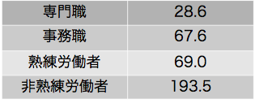
 章表１
章表１これは結核だけでなく他の病気でも言うことができる。ただし他の病気で違いはこれほど顕著ではない。この研究によると、肺炎による死亡率は次の通りであった。
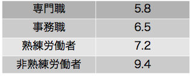
章表２病気の分布が一様でないことは一般死亡率すなわち1000人あたりの毎年の死亡者数に示される。すべての有給被雇用者あたり平均で8.7人のときに次のようであった。
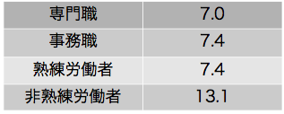
章表３サイデンストリッカー、ウィーラー、ゴールドバーガーの調査「南カロライナ州の７つの紡績工場村における障害と家族の収入の関係」(19)によると成年男子１人当たり半月間の家族の収入と1000人あたりの1916年５月から６月に見られた罹病率との関係は次のようであった。
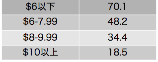
章表４低収入グループで病気の発生率が高いのは経済上の要因によるよりは関連する人々のスタミナが無いことや貧弱な遺伝素質によると我々はしばしば聞かされる。それによるとスタミナの無いことと遺伝素質の貧弱なことが低い経済状態と高い病気発生率の両方の原因であるとされている。最近の経済危機にさいしてアメリカ公衆衛生局が行った「健康と不況の研究」はこのような主張が正しくないことを示している(20)。いろいろな程度の不況に苦しんでいる４万9000人を含んでいる賃金生活家族１万2000の
１．1932年に失業している人の家族は完全に就業している人の家族に比べて障害疾患 が48％高かった。
２．十分の収入がある状態から生活保護状態に落ちた家族は４年のあいだ十分の収入がある家族に比べて障害疾患が78％高かった。
３．十分な収入状態から並の状態に落ちた家族は十分な収入状態のままでいる家族に比べて障害が10％高かった。
４．並の状態から貧しい状態に落ちた家族は並の状態のままである家族より障害が17％高かった。
５．十分の収入状態から貧しい状態に落ちた家族は常に貧しい家族よりも障害が９％高かった。
２．十分の収入がある状態から生活保護状態に落ちた家族は４年のあいだ十分の収入がある家族に比べて障害疾患が78％高かった。
３．十分な収入状態から並の状態に落ちた家族は十分な収入状態のままでいる家族に比べて障害が10％高かった。
４．並の状態から貧しい状態に落ちた家族は並の状態のままである家族より障害が17％高かった。
５．十分の収入状態から貧しい状態に落ちた家族は常に貧しい家族よりも障害が９％高かった。
我々が持っているすべての事実は住民の経済状態と住民が持っている病気の量の間に非常に密接な関係のあることを示した。もっとも進んだ国においてすら低所得グループは病気の蓄積所になっている。文明発達の次の段階は国がある病気の完全な克服に成功したときである。このような場合にこの病気はいわばその国から追い出されるがその病気は他の場所すなわち主として経済が未発達の国で存在し続ける。このことは多くの伝染病について起きる。
ペストは18世紀以降には西欧諸国で問題ではなくなったがアジアやアフリカではまだ存在している。1903年から1921年の間にインドだけで1000万人が死亡した。このように感染性が高い病気においてすら種々の社会―経済グループに違った影響を及ぼす。インドにおける流行の１つで人口100万人あたりの死亡数は次の通りであった(21):
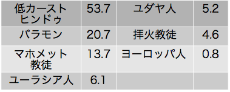
章表５多くの他の伝染病たとえばコレラ、黄熱病、発疹チフス、は同じように経済が発展した国から追い出されたが我々は決して免れたのではない。我々は後進国でそれらを繁殖させていていつでも我々にとって脅威となる。戦争、革命、のように公衆衛生管理の微妙な機構を覆すどんな事件でも激しい流行病を再発させ流行は政治上の境界とは無関係に広がることになる。第１次世界大戦は中世以後に世界が見たことのない流行を引きおこした。そして今日、1941-1942の冬に発疹チフスは始まり東部戦線において燃え上がっている。
これらの事実から引き出される結論は明らかである。どの国でも利用できるあらゆる方策を使ってもっとも病気が流行している低収入グループの所において病気を攻撃しなければならない。しかも現在の交通手段によって世界は非常に小さくなったので、我々は国家的だけではなく、国際的に考えたり計画をしなければならない。健康問題は人間としての連帯責任があり、不真面目に無視することはできない。今日、医学が進歩しているにもかかわらず10億人以上が主としてアジアおよびアフリカで西欧諸国が歴史の上で経験したこ最悪の場合と同じように悪い健康状態で暮らしている。したがって我々の仕事は決して解決されていない。医学的な手段だけでなくもっと広範な社会的および経済的な手段が必要である。このように公衆衛生の問題は最終的に政治的な問題である。
病気による経済損失
この章では問題のもう１つの面すなわち病気による経済の結果を論じなければならない。疾病は苦しみを生むだけではなく経済の損失を生む。病人は働くことができないので賃金を失う。疾病はしばしば永久または長期間にわたり人を無能力にする。病人は失職し全家族は社会のスケールで転落する。このように疾病は貧困を生み貧困は次にもっと疾病を生む。しかし病気による経済障害は病人および彼の直接の扶養者だけでなく、社会全体に及ぶものである。社会は病気にかかった市民の労働力を一時的または永久に失うからである。その上、何万人もの個人が予防や治療によって防ぐことができたであろう病気によって不必要に各国で若死にしている。このような若死はすべての国にとって大変な損失である。病気はこのように個人とグループの労働力および生活手段を破壊することによって社会の経済生活を直接に妨げる。社会が疾病被害者の世話の費用を準備するとなると損失は増加する。すべての救済金の多くの部分が病気によって窮乏した人々を助けるために使われる。
多くの病気は予防できるし多くは治癒できる。しかし予防も治癒も費用がかかる。社会は医師、公衆衛生官、歯科医、看護婦、その他の医療要員の生計を準備しなければならない。これらすべての要員は費用がかかる施設で訓練する必要があるし彼らが能率良く働けるように知識を高めるように研究するために多額の金を使わなければならない。医療のすべての面でますます重要な役割を果たすようになっている病院は、医療費をかなり高くする。最後に薬品や器具のような用品の必要量は急速に増加している。
医療のあるものは公共的な慈善または博愛の基金によって共同的に得られることもあるがふつう大部分は病気によって経済的に不利なときに個人が購入しなければならない。病気の危険は個人にとっては予測できないが大きなグループにとっては正確に推測できる。多くの人たちの間で危険を分散させ資金をプールするために中世のギルドの互恵基金から現代の消費者健康協同組合まで任意保険の原則が採用されてきている。賃金労働者や俸給従業員のための強制健康保険が1888年にドイツで導入されその後は多くの西欧諸国で採用された。1864年にロシアの田舎では税によって医療が公共サービスになりソヴィエト連邦はすべての医療サービスを「社会主義化」した。
ある地域とか国について病気による経済損失の恐ろしさが数的に得られるまで誰もその程度を知ることができなかった。先駆的な努力として、ペッテンコーファーは住んでいるミュンヘンにおける健康の値段を推測し始めた(22)。当時ミュンヘンの人口は17万人で一般死亡率は1000人あたり33人で非常に高かった。言い換えるとこの市では毎年5610人が死亡していた。ペッテンコーファーは人口１人あたり毎年の病気日数であるとみなす充分な証拠を持っていたので全部では340万日となった。非常に低めの推測であるが賃金の損失および医療費を３日あたり１フローリン(23)とみなすと住民は病気によって毎年340万フローリンを失っていることになり、当時としては莫大なものであった。病気は民衆の労働時間に５パーセントの税を課していたのである。早死による重大な損失を含めていないがこれは驚くべき数値であった。
死亡率を33からロンドンの22に減らすことができたらミュンヘン市はどれだけ節約できるか続いてペッテンコーファーは計算した。これによって毎年1870人の人命、６万3580の病気および127万1600病日の節約になることを彼は示した。これは民衆にとって127万1600フローリンの節約を意味した。利率を5%とみなすと資本の額は2543万2000フローリンとなる。ミュンヘンの富は健康状態を改善するだけでこれだけ増加することになる。
60年後にアメリカの「医療費委員会」は国が1929年に医療にたいして36億ドル使ったことを明らかにした。内訳は次の通りであった（単位百万ドル）。
．人員１．医師 1,090
２．歯科医 445
３．看護師
(a)大学出身 142
(b)見習い 60
４．補助人員
(a)助産婦 3
(b)検眼師 50
(c)カイロプラスト 15
５．宗教家 125
人件費総額 1,930
．病院病院経営費 656
建設費用 200
 ．個人実験室 3
．個人実験室 3 ．物品
．物品１．薬品 665
２．ガラス器具 50
３．整形外科器具 2
 ．公衆衛生 121
．公衆衛生 121 ．各種の補助設備 29
．各種の補助設備 29医療費総額 3,656
もちろん疾病による経済的損失は36億ドルどころではない。医療費に賃金の損失と早死による重大な損失を加えなければならない。信頼できる根拠によると、毎年アメリカの人たちは病気によって100億ドルを失っていると推測される(24)。
章挿画
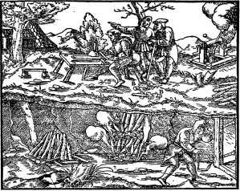
Fig 6 Health Hazards in Mines, 16th Century: from de re metallica 図６ 坑道における、16世紀。「鉱業冶金」から。
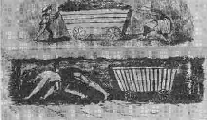
Fig 7 Labor Conditions in Coal Mines, 19th Century: from Report of the Children's Employment Commission, on Mines and Collieries, 1842. 図７ 炭坑における労働条件、19世紀：「鉱山、炭坑における児童雇用委員会報告」ロンドン、1842から
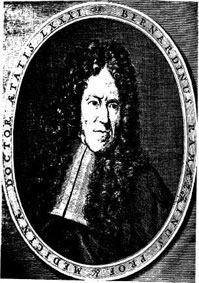
Fig 8 Bernardino Rammazini (1633-1714): Founder of industrial medicine. 図８ ベルナルディノ・ラマッチニ（1633-1714）：産業医学の創始者
章註
(1) See H. E. Sigerist, Historical Background of Industrial and Occupational Diseases. Bulletin of the New York Academy of Medicine, 1936, 2nd Series, Vol. 12, pp. 597-609.
(2) Papyrus Sallier, 2, 4, 6, and f.
(3) Epid. IV, 25; ed. Littre V, 164-166.
(4) Nat. Hist. XXXIV, 50; XXXIII, 40.
(5) Martial, Epig. XII, 57, 14.
(6) Juvenal, Sat. X, 130.
(7) Juvenal, Sat. VI, 397.
(8) Lucretius VI, 811.
(9) Nat. Hist. XXXIII, 40.
(10) On the Miners' Sickness and Other Miners' Diseases. Translated from the German, with an Introduction by George Rosen. In: Four Treatises of Theophrastus von Hohenheim Called Paracelsus, edited, with a preface by Henry E. Sigerist, Baltimore, The Johns Hopkins Press, 1941, pp. 43-126.
(11) An English translation by H. C. Hoover and L. H. Hoover was published in London in 1912.
(12) On the poisonous wicked fumes and smokes. A facsimile of the German original was published by Franz Koelsch and Friedrich Zoepfl in Munich, 1927.
(13) A first English edition was published in 1705 under the title: A treatise of the diseases of tradesmen, shewing the various influence of particular trades upon the state of health; with the best methods to avoid or correct it, the useful hints proper to be minded in regulating the cure of all diseases incident to tradesmen. A new edition of the Latin text of 1713, revised, with translation and notes by Wilmer Cave Wright was published in 1940, University of Chicago Press.
(14) Ed. Wright, p. 11.
(15) L.c., pp. 97, 99.
(16) On the Influence of Trades, Professions, and Occupations, in the United States, in the Production of Disease, Transactions of the Medical Society of the State of New York, 1836-1837, vol. 3, pp. 91-150; new edition by Genevieve Miller, in preparation.
(17) These and the following figures from R. Pierreville, L'ingalit humaine devant la mort et la maladie, Paris, 1936.
galit humaine devant la mort et la maladie, Paris, 1936.(18) Public Health Reports, 1934, Vol. 49, pp. 1101-1111.
(19) Public Health Reports, 1918, Vol. 33, pp. 2038-2051.
(20) G. St. J. Perrott and Selwyn D. Collins, Relation of Sickness to Income and Income Change in 10 Surveyed Communities. Public Health Reports, 1935, Vol. 50, pp. 595-622.
(21) Victor C. Vaughan, Epidemiology and Public Health, St. Louis, 1923, Vol. II, p. 781.
(22) The Value of Health to a City, Two Lectures Delivered in 1873 by Max von Pettenkofer. Translated from the German, with an Introduction by Henry E. Sigerist. Baltimore, The Johns Hopkins Press, 1941.
(23) The exchange value of a florin or gulden was about 40 cents at that time but its purchasing power was much greater.
(24) I. S. Falk, Security Against Sickness, New York, 1936.
誰も１人で生きているわけではない。親戚も友達もいないもっとも貧窮な人でもグループの一員であり社会の一員であり社会にたいして義務を負わされ権利を与えられている。我々は高度に専門化された社会に住んでいて社会は色々な程度の我々の知能、技能、力を利用している。私の部屋を掃除する掃除婦、我々の郵便を運んでくれる配達夫、は特別な知能や訓練を必要としない。しかし我々の仕事は彼らの仕事が無ければ不可能であり彼らの仕事は社会的に有用であり彼らはそれと交換に分相応の健康な生活を送っている。
理想的な協同社会は各個人は各人にもっとも適当な地位につき自己の能力に応じて全体の福祉に貢献し必要に応じて受け取ることができる社会である。このような社会は今日ではユートピアであろう。我々がまだ到達していない一般的および政治的な教育基準を前提としているからである。それはまた我々がまだ持っていない豊富な経済を前提としている。しかし文明はまだ未成熟であり競争社会から協同社会に発展するのが我々の予想より早く起こってならない理由はない。
時代による患者の社会における位置
すでに見たように病気になると人は社会の有用なメンバーではなくなる。言わばその人は落第し仲間に重荷になる。社会が分化すればするほど社会は成員の不健康によってより多くの影響を受ける。しかし協同社会では有用な仕事は身体の障害のある人にも提供される。部分的に障害のある人が仕事をし病気が原因で熟練労働者が不熟練労働者の列に落ちないようにしている、ソヴィエト連邦の大きな努力を見るのは興味深い。私は目の見えない人たちが熟練労働をしているのを見たし他の工場には身体に欠陥のある者の特別な職場がありそこではコンベヤーベルトの速度がその人の能力に合うようにしていた。身体に障害のある人たちは職人協同組合を組織している。このことは我々の観点では非常に不経済である。このような個人の生産性は明らかに正常者より低いからである。これは自分が雇い主である社会でのみ可能である。競争社会では障害がほんの少しだけの労働者でも完全に健康なものと同じようにすることはできないので永久に失業してしまうであろう。医学の目的は単に病気を治すだけではない。むしろ人をその環境に適合させて社会の有用なメンバーにすることであり病気になったときに再び環境に適合できるようにすることである。この仕事は身体を復旧させるだけでは果たせることではなくその個人が社会、できれば以前の場所または必要ならば新しい場所に戻れるまで続けなければならない。医学が根本的に社会科学である理由はこれである。
病人にたいする社会の態度および健康と病気の評価は歴史の経過において大きく変化している。すべての時代に病気はその犠牲者を社会的に隔離してきた。患者の生活は健康人と違っていたからである。病人は生活の調子が狂っていて運動の自由が奪われ無力で他の助力に頼っている。社会における病人の現在の立場は非常に複雑であり歴史的な発展の結果であってこの問題について明白な見解を得ようとしたら我々は簡単に分析しなければならない(1)。
世界で真の原始的な種族は非常に少ない。スマトラ島のクブ族を非常に詳細に研究したファン・ドンゲン、ハーゲン、フォルツその他の人類学者によるとクブ族は綿密な研究に価するように考えられる(2)。クブ族は太古の森林に住んでいる。軽い病気、皮膚の発疹、外傷などは彼らによく見られる。このような病気にかかった人たちは他の部族と違わないとみなされていた。彼らの判定の基準は社会的なものであって身体的なものではないからである。人が部族で生きていくことができる限り彼の状態は個人的にも社会的にも何の反応も起こさない。
重篤な病気のときには話が異なる。この地区にしばしば起きる天然痘の流行のように熱が出る病気は特に異なる。このような病人は部族の生活に参加できないことが自分で判る。彼らは能力が無くなり、部族からも自分の親族からも見捨てられる。全員が彼を死体のように避け、完全に隔離する。病人は肉体的に死ぬずっと前に社会的に死ぬ。
クブは病気の原因を問題にしない。病気を雨や雷と同じようにみなし何の説明もしない。しかしより高い文明段階で生きている部族は病気の原因を確かめようとする顕著な欲望を持っていることが見出された。患者は被害者であって誰かが彼に働きかけたので他の人たちのように生きてゆくことができないと考えている。敵が彼に何かをして
さらに高い段階へ進んで古代オリエントのセム語族の文明を調べてみると病人は決して罪のない被害者ではなくむしろ苦痛によって罪の償いをしている者という考えに出会う。病気は従って罪にたいする罰ということになる。この見方にはバビロニアで出会うし旧約聖書にはっきりと述べられている。神は律法を示したと言われている。敬虔にこれに従うすべてのものは幸福に暮らすがこれに背くものは罰せられる。病気と苦しみは、個人、その両親、または一族の罪にたいする報い、懲罰として課せられる。これは無情な論理であり明白で単純な考えである。このように無慈悲な教義で罪もないのに苦しんだ義人ヨブはとくに悲劇的であった。
このような考えが広く行われたところで病人は自分にたいしてある程度の憎悪を感じていた。病人は苦しんでいるのが当然と思っていた。彼の病気はすべての人に彼の罪を示していた。彼は焼き印を押されていて特別にひどい方法で社会から隔離されていた。しかし病気は単なる刑罰ではなく罪の贖いであり従って贖罪であった。
ギリシア古典時代における病人の地位は全く違っていた。ギリシアの世界は健康者および完全者のものであった。紀元前５世紀およびその後の長い間のギリシア人にとって健康は最高の善であった。病気は従って大きな呪いであった。理想的な人間は身体と精神が完全に釣り合いがとれて発達している高貴で美しい調和がとれたものであった。病気は彼からこのような完全性を取り去って下等なものにする。病人、障害者、虚弱者は、彼らの状態が改善されるときのみ社会から思いやりを期待することができた。虚弱者を処理するもっとも実際的な方法は殺すことであって非常にしばしば行われた。古代人は肢体不自由者を組織的に世話することを知らなかった。病人とか障害者は再び１人前のものとして数えて欲しかったら回復しなければならなかった。医師は彼がこの目標を達するように助け目標である健康は高く評価されたので医師は名工のうちでも最高のものと認められた。しかし病人の状態に希望が無く病気が不治であったら治療は医師にとっても患者にとっても意味が無いように見えた。目標は到達できないように見えたからである。ギリシアの医師は希望の無い患者の世話をすることを倫理的ではないと考えていたであろう。
このようにギリシア社会において病人はまたもや汚名を負わされていた。罪の汚名ではなく劣等の汚名であった。
病人にたいする社会の態度において最も革命的で決定的な変化をもたらしたのはキリスト教であった。キリスト教は治療の宗教として救世主および贖罪の喜ばしい福音として世に現れた。恵まれない人々、患って苦しんでいる人々にキリスト教は話しかけ治癒ならびに精神的と肉体的な回復を約束した。キリスト自身は治療を行わなかっただろうか？ 病気は恥辱ではなかったし病人または他のものの罪にたいする罰ではなかったし患者を劣等にするものでもなかった。逆に苦難は浄化を意味し恩恵となる。病気は苦難であり苦難は受難者を完全にする。病気は魂の友達であり精神の能力を発展させ造物主へまなざしを向けさせる。このようにして病気は主キリストの歩みにならって患者が担う十字架になる。
健康な者は病める者にたいする同情すなわち共に苦しむことによって苦難の恩寵にあずかることができる。「私が病んでいるときに汝らは私を訪れた。汝らは私の兄弟である詰まらない者にしたことは私にしたのである」。キリスト者にとって地域の病人および貧しい者を世話することが義務となった。洗礼の儀式によって自分の家庭において子供が持っているあらゆる義務と特権をもって人はキリスト者家族の一員になった。そしてキリスト教が国の公認の宗教になるとこの家族はすべての社会を包含しそれからは社会が病める成員の世話をする義務を引き受けた。
このようにして病人の社会における地位は以前とは根本的に違ったものになった。それ以後この特権を病人は持ち続けた。病人の世話は紀元の初めから地域社会の基礎の上に組織され何世紀も続けられてきた。動機はその間に変化してきた。初期にはキリスト教の慈愛であり18世紀と19世紀には主として人道主義になった。今日では我々は貧しい病人をまた実際的な理由からも世話している。社会は病んでいる成員をもつことは非常な不利益であり病気の人々は総ての人々にとって脅威であることを認識しているからである。
紀元前に広く行われていた病人にたいする社会の態度は決して全く克服されたわけではない。中世およびルネッサンスにおいて流行病は非常にしばしば神が人類に課した試練とみなされた。ごく最近まで精神病は無秩序な生活にたいする罰であり性感染症は罪を犯した器官に表れるから非常に適切な懲罰であると考える人々が居た。病気についての古い応報の考えはまた自分の苦しみを不当であると考える患者たちの怒りに示されている。
病人は特恵的な地位のあることから多くの義務を免れている。病気の子供は自動的に学校に行かないで済み病気の成人は労働することを期待されず健康な成員に当然のこととして社会が要求している多くの義務を免れている。次の章で病人の責任能力に限界があるという概念に基づいて法律手続きがいかに革命的に変化しているかを論じよう。
病人の特恵地位が明らかになるにつれて生存競争から逃れ病気の状態に逃げ込む傾向が明白であった。これはブロイラーが指摘しているように一般にヒステリーと呼ばれる状態の基礎になっている(3)。ヒステリー性の個人ははっきりとした器質性の障害が無いのに突然に耳が聞こえなくなったり目が見えなくなったり足が不自由になったりして不愉快な現実を避けている。ヒステリーは正常な人間だったら逃避の手段としては利用しない病気である。あるていど同じことは仮病にも当てはまる。病気のふりをしたりつくりだしあるいは長引かせることで義務を逃れる人は誰でも病人に許された特恵的な地位を得たいために元来したのであるがそれを病的状態を基礎にして行っている。仮病は正常の心理的な仕組みではないし少なくとも正常な状況のもとに起きるものではない。
すべての型の病気は常に個人の社会生活に影響する。これまで病気の一般的な社会的な結果を論じた。今度はある特別な病気が社会構造の中における病人の地位に及ぼした影響を簡単に考察することにしよう。
ハンセン病患者
ハンセン病以上に恐ろしい結果を患者の一生にもたらした病気はなかった。この病気は非常にゆっくり進行する慢性病で罹ると最期までこの病気とともに何十年も暮らすことになった。ハンセン病は感染性が非常に強いことは無く結核症より弱く感染力だけでは社会がなぜそんなに激しく反応したか説明することができない。他に理由があるに違いない。そのうちの主なものはたぶんこの病気が被害者の手足を恐ろしく傷つける事実であろう。四肢は次々と腐って壊疽部分から発する悪臭とともに進行したハンセン病患者を恐るべき姿にしている。皮膚病は気分が悪くなる病気であるが結核患者の衰弱した身体は憐れみの感情をひき起こすだけである。比較的に害の無い皮膚病によって人が雇われなくなり単なるにきびが少女の社交生活を悪くする。多くのもっと重大な状態が皮相的な観察者には隠れているのに皮膚病はすべての人に皮膚という器官が病気であることを示している。ハンセン病でなお悪いことに不治なことが知られている。（＊現在、ハンセン病は薬によって完全に治癒する病気になっている。）ハンセン病は熱帯の病気であって熱帯では今でも流行している。中世初期に西ヨーロッパに侵入しとくに貧しい人たちの間では地方病であり14世紀に頂点に達しその後に急激に減少した。ヨーロッパでは次第に無くなり東と北の数カ所に残っているだけである。
中世初期にハンセン病が社会の脅威になり始めた時に人々はそれに対して激しく反応した。身体的な治療法は知られて居らず医師は無力だったので病気に対抗する手段は社会的なものだけだった。従って教会はそれと戦うことにした。レビ記の戒律が使われた。その13章には次のように書かれている（新共同訳）。
１．主はモーセとアロンに仰せになった。
２．もし皮膚に湿疹、斑点、疱疹が生じて、皮膚病の疑いがある場合、その人を祭司アロンのとこころか彼の家系の祭司の１人のところに連れて行く。
３．祭司はその人の皮膚の患部を調べる。患部の毛が白くなっており、症状が皮下組織に深く及んでいるならば、それは重い皮膚病（＊ハンセン病）である。祭司は調べた後その人に「あなたは汚れている」と言い渡す。
45．重い皮膚病にかかっている患者は、衣服を裂き、髪をほどき、口ひげを覆い、「わたしは汚れた者です。汚れた者です」と呼ばわらなければならない。
46．この症状があるかぎり、その人は汚れている。その人は独りで宿営の外に住まねばならない。
２．もし皮膚に湿疹、斑点、疱疹が生じて、皮膚病の疑いがある場合、その人を祭司アロンのとこころか彼の家系の祭司の１人のところに連れて行く。
３．祭司はその人の皮膚の患部を調べる。患部の毛が白くなっており、症状が皮下組織に深く及んでいるならば、それは重い皮膚病（＊ハンセン病）である。祭司は調べた後その人に「あなたは汚れている」と言い渡す。
45．重い皮膚病にかかっている患者は、衣服を裂き、髪をほどき、口ひげを覆い、「わたしは汚れた者です。汚れた者です」と呼ばわらなければならない。
46．この症状があるかぎり、その人は汚れている。その人は独りで宿営の外に住まねばならない。
中世にこの同じ規則が適用された。ハンセン病患者を一生のあいだ隔離することは社会を防禦する唯一の手段と思われた。この病気に罹っていると疑われた者たちは当局に報告しなければならなかった。彼らは検査され診断は恐ろしい社会的な結果になるので検査はとくに厳粛に行われ医師１人ではなく一団の医師が責任を分かち合って診断した。イタリアではしばしば法律家がこのグループに加えられた。診断は法律的な結果を伴うからである。医師たちと患者は宣誓を行った。医師たちは真のハンセン病の症状をよく覚え何度もよく考え１つの症状に頼ることなく症状の組み合わせに頼り特異的な症状と非特異的な症状を区別し注意深く診断するように勧告された(4)。患者にはこの病気は彼の魂の救いを意味し人間社会は患者を排斥したがキリストは彼らを忌み嫌わないことを説明した。
診断が確実でなかったら患者は一時的に「すべての人たちから離れた場所」に隔離され後になって再検査された。しかし診断が確立されるとハンセン病患者は一生のあいだ隔離された。彼は人間社会から追い出され市民の権利を奪われた。ある場所では彼のためにレクイエム（＊死者のためのミサ）が行われ社会に関するかぎり彼は死亡したと宣言された。彼は他のハンセン患者と一緒に都市城壁外のハンセン病療養所に住みすべての人たちは生きて行くのに慈善にのみよった。トレヴス（＊ドイツ西部のトリール）の町では次の指示がされた(5)。
汝らは教会、市場、粉ひき場、製パン場に入ってはならないし、どんな会合にも出席してはならない。
泉で汝らの手や洗いたいと思う物を洗ってはならない。飲みたいときには汝らのコップまたはそのようなもので水をくみ上げなければならない。
どこに行くときでもハンセン病患者用のコートを着て他の人たちがすぐに判るようにし家から外に出るときには裸足にならなければならない。
何かを買いたいときには棒を使ってしか触ってはいけない。
居酒屋または他の家に入ってはいけない。ワインを買うときには汝らの瓶に注ぎなさい。
汝らはどんな婦人とも自分の妻とさえも交わってはいけない。
途中で誰かに会って何か尋ねたら風が吹いている方向から横にそれるまで答えてはならない。
汝らが橋を通るときに手袋をはめる前に手すりにさわってはならない。
汝らは子供あるいは他の若い人たちにさわってはならないし汝らに属するものを与えてはならない。
汝らはハンセン病患者以外の他の人と食べたり呑んだりしてはならず汝らは死んだときには教会に埋葬されないことを知るべきである。
泉で汝らの手や洗いたいと思う物を洗ってはならない。飲みたいときには汝らのコップまたはそのようなもので水をくみ上げなければならない。
どこに行くときでもハンセン病患者用のコートを着て他の人たちがすぐに判るようにし家から外に出るときには裸足にならなければならない。
何かを買いたいときには棒を使ってしか触ってはいけない。
居酒屋または他の家に入ってはいけない。ワインを買うときには汝らの瓶に注ぎなさい。
汝らはどんな婦人とも自分の妻とさえも交わってはいけない。
途中で誰かに会って何か尋ねたら風が吹いている方向から横にそれるまで答えてはならない。
汝らが橋を通るときに手袋をはめる前に手すりにさわってはならない。
汝らは子供あるいは他の若い人たちにさわってはならないし汝らに属するものを与えてはならない。
汝らはハンセン病患者以外の他の人と食べたり呑んだりしてはならず汝らは死んだときには教会に埋葬されないことを知るべきである。
ハンセン病に罹っている患者は２次感染に非常に罹りやすい。1348年と1349年に黒死病が世界に荒れ狂い全ヨーロッパ人口の４分の１を殺したときにハンセン病患者はペストに真っ先にやられた。1349年以降に多くのハンセン病患者収容所は収容者が居なくなったので閉鎖されその後にこの病気は急激に減少した。
キリスト教が優位を占める国ではハンセン病患者は今日なお隔離されている。社会は結核を恐れていないが聖書の言い伝えによってハンセン病を脅威とみなしている。隔離には医学的な適応は無く身近から居なくならないように家族が患者を隠す傾向があるので逆に隔離が有害な可能性がある。これによって家族は患者が医療を受けられなくし監視できなくしている。日本その他の非キリスト教国で患者の治療はするが隔離されない。しかし隔離している国と同じ結果を得ている。（＊らい予防法は日本では1907年に制定されたが規制は時期および地方により異なり大学病院などで外来診療も行われていた。最終的にらい予防法は1996年に廃止された。近年に毎年の新規患者は国外で感染した数人程度であり外来で治療される。）
隔離には経済上の理由がある。ハンセン病患者の大部分は貧しく家で個人的に治療したり乞食として放浪させるよりはハンセン病療養所で一緒にしておくのが安上がりであり効果が高い。さらにハンセン病療養所では仲間の患者と一緒に暮らし病気の段階が進行したときに必然的にふりかかる社会的追放を受けないで済ますことができる。多くの現代の施設は教育やリクリエーションの設備がよく整っている。治療法が改善されたので多くの例で進行が停められ患者は宣誓の上で退院する。世界では国によって大きな違いがある。療養所における隔離は嘗てのように終身のものではなく患者にはなお望みがある。さらに多くの国で取り締まりは厳しくない。患者の経済的状態により一定の衛生基準を保つことができるときには医師の指示のもとに自由にされている。それにもかかわらずハンセン病は今でも人類の大きな呪いでありすべての病気のうちで最も重大な病気の１つである。（＊WHOによると2005年における世界の全患者数は約30万人である。）
性病患者
性病患者にたいする社会の態度はまた過去の数世紀に異なった方向に大きく変化した。ヨーロッパにおける梅毒の起源について私は論ずることはできない。よく判っていないからである。この病気は独立の病気としては認められずに中世に始まったことはあり得るが新世界から輸入されたこともあり得る。この問題は今でも大いに議論のあるところで解決にほど遠い(6)。ともかく梅毒は15世紀末にヨーロッパで明らかに認められ広範囲に広がり今日よりも急性の症状を呈していた。新しい病気と考えられ、急速に増加した刊行物に記載され論じられた(7)。最初は感染の原因が性交であるとはっきり理解されていなかった(8)。他の流行病と同じようにこの病気は災難と考えられた。ある人たちは原因を、自然の要因、沼の悪臭、宇宙の要因、惑星の特殊な構成、によるとした。他の人たちはこれを神の罰とみなした。人々は不信心と涜神にふけり神はそれ以前に他の悪疫を送ったようにこの病気を送って彼らを罰した。この病気は流行病と同じように広がると信じどの国も隣国が原因であるとした。梅毒は恥辱ではなくそれと戦うのに非常な努力が払われた。15世紀の終わり近くにフランクフルト市は梅毒患者にたいして無料の医療を用意し受けさせる特別のはからいとして治療期間中は税を免除した。この病気は皮膚症状があったので主として外科医が治療を行い水銀で治療した。大量の水銀軟膏を使い治療は有効ではあったが拷問そのものであった。
1520年から1530年のあいだの10年間にこの感染の性的な性質が一般に認められ、それ以後にこの病気にたいする態度は主として性にたいする一般的な性質によって決定された。婚姻外の関係が社会によって非難されない限りこの病気は非常に不愉快な災難として受け入れられたのは確かであるが道徳的な非難は含まれなかった。ルネッサンスは性の問題では非常に寛容であった。売春宿は一般に認められた施設であり誰も梅毒に感染したことを隠そうとしなかった。皇帝、王、貴族、聖職者、非聖職者、学者、詩人が梅毒に罹っていたことが知られている。人文学者ウルリッヒ・フォン・フッテンは美しいラテン語で自己の例を詳しく記載して彼の経験が他人に役立つことを希望した(9)。彼はこの病気によってだけでなく水銀療法によってひどく苦しみアメリカから新しく輸入された新しい薬であるグアヤク木を強く推薦した。主な輸入業者であったアウクスブルクのフッガー一家（Fugger、15-16世紀の南ドイツ財閥）は梅毒のアメリカ起源説を強く主張した。アメリカから来た病気は海外からの薬によって最も良く治癒するのは明らかに思われたからであった。グアヤクはこの新しい病気に興味を持った医師たちにとっても好ましい薬品であった。水銀軟膏による治療は汚らしい野蛮な療法であって一般の人たちを治療する外科医にとっては良かったが学問のある医師にとっては好ましくなかった。ルネッサンスは梅毒にたいして真面目な実際的な態度を取り痛ましい病気とは考えたが他の病気と根本的に違うとは考えなかった。性病患者は他の人たちと比べて良くも悪くもなかった。
いわゆる「優雅な世紀」（18世紀）には上流階級の梅毒にたいする態度が明らかに不真面目になった。症状は見かけ上には急性でなく水銀を丸薬で与えることによって治療法は改善された。性的に放縦な世紀には梅毒は避けることができない小事故とみなされた。騎士の病気でありヴィーナス神の投げ槍で傷つけられて罹りマーキュリ神（水銀）が治してくれるものであった。冗談が言われ小唄が作られた。
中産階級の興隆とともに事情は根本的に変化した。梅毒にたいする新しい態度は18世紀に始まり19世紀には有力となった。中産階級は最初から性的な放縦を非難し家族の尊厳を強調した。純潔、少なくとも見せかけの純潔が成員に要求された。このような態度をとることによってブルジョアは貴族より優れており権力を得ることができると主張した。しかしこの努力はまた封建主義の廃墟の上に作った経済組織の無慈悲さを償うためのものでもあった。
性病はふつう婚姻外の性交によって罹る。従って犠牲者は放縦な人間で規則を破ったものとみなされた。彼は恥をかき家族は甚だしい屈辱を感じた。梅毒と淋病は通常の病気ではなかった。大きい声では言えない恥ずかしい病気であり少なくともまともな社会ではそうであった。ばか騒ぎの後で感染したことを知った若者は自分の病気を隠した。適当な医療を受ける金が無いときには父親に助けを求めるよりはエセ医師のところに言った。結婚前に若者の健康を尋ねる習慣が無かったので多くの若い女性はハネムーンで淋病が燃え上がった夫によって感染させられた。
宗教界では性病が罪にたいするしかるべき罰であるという考えが広がっていた。1826年に法王レオ12世はコンドームの使用を禁じた。罪を犯した局部を襲うことによって罪人を罰するという神の意志を無視することになるからであった(10)。20世紀の初めにすらエールリッヒのサルヴァルサンの発見によって深刻に悩んだ教会の人々が居た。
このような考えが有力な場所で性病患者は社会で特別な立場に置かれこの立場は医学がこの病気と闘うのを非常に困難にした。ピューリタンの習慣が強い中産階級の国ではアメリカで充分によく知られているように今日でもこの態度を完全には克服していない。その結果、新しく健康的な態度が出現している他の国にくらべて性病の発生率は高い。
この新しい態度は社会意識の成長によって発達した。性病は個人だけでなく社会全体にたいする脅威で個人および国家の活力を等しくむしばむ悪疫とみなされた。性病は「罪のあるものも無いものも」無差別に襲いアメリカ合衆国では毎年６万人が先天性梅毒による障害もって生まれている。幾つかの国ではこの危険に気がつき防止に国家権力を用いている。デンマーク、ソ連、ドイツは性病を根絶するために厳しい法律を制定した国の例である。治療は無料であるが強制的であり逃れようとするものは法律によって処罰される。もっと罪が重いのは他人にこの病気を感染させて拡げるものである。1927年のドイツの法律によると３年以下の監禁に処せられることになっている。このような態度をとっている国では性病が急速に減少している。このことは多くの人たちが恐れているように人々の道徳に影響するだろうか？ 答えは明らかである。ある国民の社会意識が高くなり、社会的責任を強く自覚しているならば人々の道徳を保つのに病気の助けを借りる必要はない。
結核症患者
ハンセン病は温帯の西欧諸国では事実上に姿を消している。性病は社会的に進歩した国では急速に減少しており結核もまた過去の病気になる日はそれほど遠いことではない。結核の発生に３つの要因が関与する。ロベルト・コッホが1882年に発見した菌、個人の遺伝素質、および社会環境、である。前章で述べたように結核発生率の減少はこの50年間に著しく主として社会状態の改善の結果であることは疑いがない(11)。結核に罹った人たちの生活にたいするこの病気の影響はさまざま異なる。ハンセン病のように恐ろしく感じさせる病気ではないし性病のように道徳的な非難がつきまとうものではなかった。他のどんな病気にくらべても結核患者は悲劇的な人物と思われた。この病気は壮年の人を好んで襲うからである。本質的に慢性病であってふつう徐々に進行する。患者の精神能力は害されない。たぶん体温が軽度に上昇するためだろうか精神能力はかえって刺激される。性衝動もまた刺激される。これが体温によるか病気の化学的な因子によるかは明らかでない。弱って咳をしながら死に近づいているが結核患者は希望を持ち常に将来の生活設計をする。
多くの男女の天才が結核に罹っていたことはよく知られている(12)。この病気が彼らに創造的な能力を与えたと考えるのは理屈に合わない。天分が無いときに世界のどんな病気も才能を与えることはできない。他の面で結核に罹ることは深刻な経験であり創造的な芸術家の仕事に影響を及ぼすことは疑いもない。この問題は後の章で詳細に調べることにしよう。
結核のサナトリウム療法は患者の社会学に新しい特徴を持ち込んだ。サナトリウムの中で患者はどちらかと言うと非現実的な状況で暮らしている。彼は通常の環境から離れて全く新しい環境に移される。ふつうは美しい風景、森や山中に位置する環境である。ここで彼は働くことを期待されないし許されず社会にたいして義務は無く、世話をうけ、看護され、良い栄養を与えられ、ふつう普段より高い水準で生活している。言い換えると病人として非常に高い特権の地位が与えられている。もしも彼が医療を必要とするならば社会の客としてサナトリウムに住んで社会は彼に関心を持ち彼が回復することを望んでいる。多くの場合、家族全体は彼が医療を受けられるように可能な限りの金銭を提供している。患者は病状だけによって重要な人間になっている。患者仲間はすべて同じ病気に罹っていて結核サナトリウムは一般病院とは全く違う雰囲気をもっている。
患者はただ１つだけの仕事を持っている。すなわち回復することである。回復こそ彼がサナトリウムに居るゴールであり目的である。彼は生きること再び健康になって家族のもとに帰ることを希望している。しかし回復したときに特権的な地位を失うのではないか、もはや重要ではなくなる、少なくとも同じ意味では重要でなくなるのではないか、毎日のいやな仕事を続けなければならないのだろうか、と無意識に感じている。それとともに将来についての心配が起きる。回復は続くだろうか？ 仕事は見つかるだろうか？ 医師たちは戸外の軽い仕事を推奨しているが、そのような仕事があるだろうか、それによって家族が相応の暮らしができるだろうか？
しばしば、これらは反抗を生じるので医師は考慮しなければならない。医師の任務は患者の肉体的な回復だけではなく再適応の過程のために心理的に準備しそのことを助けなければならない。結核は極めて社会的な病気であり社会的な処置と組み合わせなければ最良の医療も無駄になってしまう。スラムに送り返すのだったら患者を治す意味が無い。アフターケアはサナトリウム治療と同じくらい重要でありサナトリウム治療は教育、早期発見に始まりリハビリテーションに終わる一連の社会的処置の一環に過ぎない。
イギリスのパップワース村は患者が治療を受けるだけでなく社会復帰し家族とともに暮らして種々の産業で社会の有用な一員として働くことができる１つのセツルメントであって、現在の社会構造でも出来ることを充分に示している。このような施設がもっと多く存在しないのは残念なことである。
精神病患者
「精神病」に罹った人々の歴史は社会の医学史における悲しい一章である。悲しいというのは精神を病んだ人々が何世紀にもわたって言語道断の扱いを受けてきており精神医学があらゆる医学の学科のうちで最も遅れているからである。アメリカ合衆国ではすべての病院ベッドの50％すなわち50万床以上が精神病患者によって占められており、利用できる設備が無いという理由だけで数千人の患者が施設の外に居る。他の病人グループはこのように大量の入院治療を必要としない。大部分の精神病において医学がまだ非常に無力であることをこの違いは誤りなく証明している。心理学は他の科学の諸学科と同じように進歩している。正常な心と病的な心の働きについて今日では50年前よりはるかに多くの事を知っているし過去には絶望的で手に負えなかったような多くの神経症患者を環境に適応させることが可能である。しかし感染とか中毒が原因の精神病以外について我々はなお無力である。多くの精神病は遺伝的な基礎の上に進展する証拠があり、このような場合に我々は精神病を治すのに僅かのことしかできないである。
精神病は患者の社会生活に非常に深刻な影響を与える。精神病患者は正常の人々とは著しく違っている。彼らは違った知覚、感覚、思考、行動、および反応を示す。このことにより彼らはしばしば厳しく孤立させられる。緊張病（緊張型の統合失調症）という精神病の患者は世界から完全に超然として長いあいだ静止して暮らして行ける。
正気と狂気の間には厳然たる境界線はない。精神病の患者の多くは肉体的には正常のように見えるしこのことは当然彼らにたいする社会の態度に影響する。もともと医学は身体の病気に関わりをもったのであって正常に見えるが不合理に行動する人間はもちろん医師の注意をひかなかった。これに反して魂の医師である祭司にその者を押しつけるのが最も理屈に合っていた。多くの精神病患者は疑いもなく教会に治療を求めたが狂気は医師が関心を持つべき病的状態であると認めたのはギリシア医学の大きな名誉である。害のない者はその家族の心遣いに任されたり今日なお東洋におけるように乞食となって街路をさまよったことであろう。多くの者は介護を受けられなくて死んだであろう。
ギリシアの精神医学は中世においても生き残り医学関係者の著作に反映している。しかし宗教が支配していた時代だったので狂気にたいする宗教的な接近は必然的に強かった。他の人々とは違った話しぶりで行動する者は悪魔につかれた者のように見えた。そこでその治療は悪魔払いなどのやり方で悪魔を追い出すことであった。キリストはそれを行い自分の弟子に同じ力を与えた。狂人の治療では原始的な医学のやり方のすべてがキリスト教化された形で用いられた(13)。
悪魔につかれたことそれ自体は不幸であって罪ではなかった。キリストは悪魔につかれた者を罰しないで悪魔を追い払うことによって治療した。しかし妖術が信じられるようになると魔女は悪魔に誘惑されるか悪魔と契約を結んだものと考えられた。魔女は不信心者となりその罪は異教であった。魔女は治療されないで異端者として罰せられた。刑罰は火あぶりであった。1489年に「魔女の槌」が出版されそれに続く数世紀において何千人もの精神病患者が「神の最大名誉のため」に拷問と死で苦しんだ。
「悪魔の槌」が激しく打ち下ろされていた時に多くはなかったが若干の哲学者たちや医師たちは狂人にたいして異なる態度を示した(14)。16世紀に偉大な人道主義者、心理学者、社会改革者であったスペイン人のファン・ルイ・ヴィーヴェスは、狂人を穏やかな取り扱いを必要とする病人とした。医師のパラケルススは魔女の存在を否定はしなかったが精神病を本質的に心的なものと考え、ヨハン・ヴァイヤーは著書「悪魔の妖術について」（1568）で魔女狩りに反対する偏見の無い態度をとった。ヴァイヤーは精神病の治療に非常に熱心であって魔女として迫害されていた女性が明らかに心の病人であり医療を必要としていると認めていた。
数は減少したが18世紀の終わりまで魔女は火あぶりにされ続けた。合理主義の興隆は迫害マニアそのものであるこの態度の克服に役だった。しかし犠牲にならなかった患者たちの治療もひどいものであった。看護してくれる家族がいないとか凶暴で共同社会にたいする脅威であると、彼らは救貧院とか私設救貧院とか監獄に閉じ込まれ何年も野獣のように壁に鎖で繋がれ残忍な看護人に鞭で打たれて住んでいた。狂気の人たちのための特殊な施設が中世末から多くの国で作られたが(15)殆ど監獄と違いが無かった。（図11）
人道主義運動の影響で社会は徐々に精神病患者にたいする責任に目覚めた。フランス大革命にさいしてピネルはパリのビセートル病院で鎖を劇的に断ち切って患者を解放した。イギリスではクエーカー教徒たちが他の多くのことと同じようにこの人道主義的な努力を率先して行った。たとえば、商人のテュークの勧めにしたがって1796年に彼らによってヨーク収容所が創られ患者たちは親切に取り扱われた。
19世紀になると鎖は各国で次々と取り去られたがしばしば鎖を拘束衣で置き換えたのに過ぎなかった。暴力が暴力にたいする治療にならないことを学ぶには時間がかかった。遅れた施設ではなお時には残酷な処置が行われたこともあったが、精神病の患者は無害なときには愉快な対象であり乱暴なときには軽蔑する「頭がおかしい」とはもはや考えなくなった社会からそのような施設は非難されるようになった。使う言葉も変わった。「
注意が足りないために古代に多くの低能力者が生殖年齢に達する前に死んだことは容易に想像できる。虚弱で障害のある子供を遺棄するのはスパルタでは公認の政策であった。生まれつき生存競争に不適であったり能力に恵まれたないと考えられる者を除去するのに役だった。宗教的な見解の影響で異なる態度が発展した。すなわちインドでは魂の輪廻の信仰と万物を憐れむという仏教の根本原理から人間および動物のあらゆる生物の生命が尊重された。西欧の国々では魂の不滅についてのキリスト教的信仰、生の目的は救いであるとの見解、隣人愛および後には人道主義の考え、これらの観念すべては同じ結果をもたらした。その結果、今日の各国は遺伝的な病気や病的な状態によって能力を失った多くの人たちの大きな重荷を負っている。彼らは我々の現在の社会に何の機能も果たすことができず時にはそのことを意識しないで生活している。ドイツは民族に悪影響をおよぼす者の生殖をやめさせるため最近10年間に広範な断種計画に着手した。現在のナチ体制はこれを完全に反動的で非科学的な政治的人種的イデオロギーの手段にしているとはいえ注意深く見守らなければならない社会生物学的実験である。
章挿画
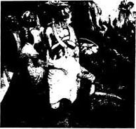
Fig 9 Beginning and End Stage of Leprosy: Painting, 16th century. 図９ ハンセン病の初期および末期。16世紀の絵画（ニコラス・マニュエル・ドイッチュ）
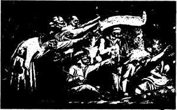
Fig 10 Group of Lepers: from "The Triumph of Death", 14th century. 図10 ハンセン病患者の群。『死の勝利』から、14世紀
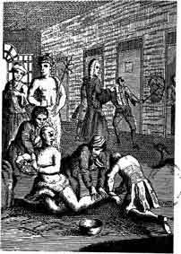
Fig 11 Ward in Bethlehem Hospital about 1745: from Tuke, 1882. 図11 1745年ごろにおけるベスレヘム病院の病室：テュークによる、1882.
章註
(1) See H. E. Sigerist, Die Sonderstellung des Kranken, Kyklos, 1929, VoL 2, pp. 11-20, and Man and Medicine, New York, 1932, chapter II.
(2) A. W. Nieuwenhuis, Die Anfnge der Medizin unter den niedrigst entwickelten Vlkern und ihre psychologische Bedeutung, Janus, 1924, Vol. 28, p. 42 ff.
nge der Medizin unter den niedrigst entwickelten Vlkern und ihre psychologische Bedeutung, Janus, 1924, Vol. 28, p. 42 ff.(3) E. Bleuler, Lehrbuch der Psychiatrie, Berlin, 1916, p. 378 ff,
(4) For this and the following see Examen Leprosorum in Conrad Gesner, Scriptores de chirurgia optimi, Zurich, 1555, fol. 391 b.
(5) O. Schell, Zur Geschichte des Aussatzes am Niederrhein, Archiv f r Geschichte der Medizin, 1910, VoL III, pp. 335-346.
r Geschichte der Medizin, 1910, VoL III, pp. 335-346.
r Geschichte der Medizin, 1910, VoL III, pp. 335-346.(6) G. Sticker, Entwurf einer Geschichte der ansteckenden Geschlechtskrankheiten, Handbuch der Haut- und Geschlechtskrankheiten, Bd. 23, Berlin, 1931.-- E. Jeanselme, Histoire de la Syphilis, Trait de la Syphilis, Vol. I, Paris, 1931.
de la Syphilis, Vol. I, Paris, 1931.(7) Karl Sudhoff, The earliest printed literature on syphilis, Florence, 1925, Monumenta medica, Vol. III.
(8) For this and the following see the very illuminating study of O. Temkin, Zur Geschichte von "Moral und Syphilis", Archiv fr Geschichte der Medizin, 1927, Vol. XIX, pp. 331-348.
r Geschichte der Medizin, 1927, Vol. XIX, pp. 331-348.(9) De guaiaci medicina et morbo Gallico liber unus, Mainz, 1519.
(10) G. Vorberg, Zur Geschichte der persnlichen Syphilisverhung, Munich, 1911, p. 21.
nlichen Syphilisverhung, Munich, 1911, p. 21.(11) See the excellent study of Georg Wolff, Tuberculosis and Civilization, Human Biology, 1938, Vol. 10, pp. 106-123, 251-284.
(12) Lewis J. Moorman, Tuberculosis and Genius, Chicago, 1940.
(13) See e. g. the treatment ad demoniosos in: H. E. Sigerist, The Sphere of Life and Death in early mediaeval manuscripts, Bulletin of the History of Medicine, 1942, Vol. XI, pp. 292-303.
(14) See Gregory Zilboorg, A History of Medical Psychology, New York, 1941.
(15) See George W. Henry, Mental Hospitals, in Zilboorg, l.c., pp. 558-589.
病気と法律の関係を探し求めるのはこじつけに見えるかも知れないが関係があるし歴史の経過でこの関係がいろいろな形で出現したことはことは疑いが無い。私は法律をほとんど知らないしこの章は非常に素人くさく見えるであろう。しかしこれまで非常に無視されてきた興味深い領域の研究を刺激することだけを目的として私はこの発展の筋道を簡単に述べたい。
何らかの形の社会的統制の存在しない社会生活はこれまで無かった。家族にせよ氏族にせよ種族にせよ一緒に住んでいる個人は、ある種の行動規則を守らなければならなかった。動物のあいだにも社会生活があり単に本能的なものであろうがある規則を守っている。森林の中で動物のように人間が生活しているときにはその行動の規則は他の高等動物と同じようなものであった。しかし文明が進むにつれて人と人、人とその環境にある物体との関係は次第に複雑となり社会的な衝突を避け解決をはかる目的から法律が必要となった。禁令と命令が人間の生活を規定した。誰にせよ集団にたいして権力を持っている者、母親、父親、シャマン、または首長によって規則は励行され違反は罰せられた。原始的な人々の宗教的タブーからユスティニアヌス帝の「ローマ法大全」まで、原始文明から高度に発達した文明まで、の道のりは遠かったが達成すべき目標は非常によく似ていた。
法規制の対象としての病人
前章において病気が社会生活をいちじるしく乱すことを見た。病気になって個人自身は害を受けしばしば他人に害を負わせることになる。社会の労働力を失うばかりではなく伝染病のばあいには病人は同僚の健康に直接の脅威となる。従って社会は社会そのものを保護するように努力して病人を法律制定の直接の対象とした。多くの原始人はある種の病気が伝染性であるという非常にはっきりとした考えをもっており死人にたいするタブーと同じように病気に苦しめられている者にもタブーが適用された。古代の宗派では不潔や不浄は伝染する状態と考えられていた。「不浄」な者に触れた者は誰でも不浄になり浄めの儀式を受けなければ寺院に入ることが許されなかった。不浄は月経、出産、死、のような生理的現象やさらに病的状態の結果であった。ハンセン病は不浄でありレヴィ記によると尿道から流出のある者も同様であった。寝床、鞍、「その人が座ったすべて」は汚いと思われ(1)彼は宿営の外に出されなければならなかった(2)。
中世にはレヴイ記の規制がハンセン病の予防に大規模に適用されたことをすでに述べた。14世紀に黒死病（＊14世紀のペスト大流行）すなわち腺ペストと肺ペストがヨーロッパに侵入して恐ろしい惨禍をもたらしたときにペストを征圧する立法が行われた。これらの古い中世の規則は今でも現代の多くの伝染病にたいする対策の基礎となっている。この病気に罹っていると信じられたか見つかった患者は当局に報告しなければならず報告しなければならない病気の数は世紀を重ねると増加した。このような病気はもう個人の私的な事件とは考えられず地域社会が彼らによって脅かされるので公的な関心事である。このような患者が住んでいる家は市民に用心させるように今日も中世と同じように目印がつけられている。このような患者の処置は社会の利益のための防禦措置である。伝染病に罹った患者は中世には市の医師によって処置された。今日では大部分の文明国で伝染病患者は公立病院で無料で処置される。患者が死亡するとペストの家は消毒された。中世でこのことはどちらかと言うと乱暴に行われた。衣服と寝具は焼かれた。家具は石鹸で徹底的に洗われ太陽光線に当てられた。部屋は燻蒸された。今日これらの病気を起こす細菌をわれわれは知っていて化学的や物理的な殺菌法を持っているが基礎になっている考えは同じである。
ペストは外部から地域社会に侵入した。従ってこの疫病流行のときに諸都市は門を閉じて周りの公道を注意深く監視した。非常に注意深い質問と検査が終わるまで入ることは許されなかった。到着郵便はいぶされ貨幣その他の品物は酢に漬けられた。ペストは東洋に起源のあることがよく知られていて公道および特に海路に沿って拡がった。したがって主に危険なのは港湾市であった。1377年７月27日にシチリア島ラグーザの市議会はペスト流行国からの旅行者は「浄める」ためにメルカナ島に１ヶ月過ごさない前に市に入ることを許さなかった。隔離期間は最終的に30日から40日に延期された。したがって検疫停船（＊クワランティーンは40日の意）は中世に始まった１つの最も有効な流行病対策である（図12）。ヴェネチアはこれを手本として海外からの旅行者をサン・ラザロ島に隔離した。16世紀にミラノはスイス領に役人を置いて聖ゴットハルト街道で旅行者を調べた(3)。これは外国の主権にたいする重大な侵害であったがペストにたいする恐れはこのように強力な手段を必要とした。17世紀にイギリスはトルコおよびエジプトの港を出発したすべての船にたいして健康証明書を要求した。
アジアコレラが繰り返して西欧に侵入した19世紀には伝染病情報が大規模に作られた。特に船舶の検疫の面について国際協力を密にするために1851年にパリで12国が参加して国際会議が開かれた。会議では永続性のある組織を作るのに失敗したがその後に同じ会議が開かれその１つは1881年にワシントンで開かれてこのときには黄熱が主な議題であった。最終的に1909年に54国が参加してパリで国際公衆衛生局が設立された。伝染病情報がその主な任務で1921年以降は国際連盟の事務局保健課と仕事を分担している。
ペスト、コレラ、黄熱、およびインフルエンザは突然に多数の者を襲い数年間に数百万人の生命を奪う急性伝染病である。これらが発生すると、どこであろうと強力な攻撃となり戦争と同じように社会が召集できるすべての国家権力の動員を必要とする。それほど劇的でない病気がある。腸チフス、赤痢などや、汚物、汚染された水、悪い食物および一般的に非衛生状態から起こる多くの病気である。これらもまた危険なものであって同じように国家権力による防衛措置を必要とする。人間の環境の衛生設備は政府の重要な機能であったし今でもそうである。
公衆衛生行政は国家の一般行政のうちでますます重要な部分を占めている。法律や条例が制定され警察および法廷によって取り締まりが実施される。医師は立法者への専門顧問および行政官としての二重の資格で必要とされる。人々の健康保護と病気の根絶は国家権力がなくては行うことができない大きな仕事である。公衆衛生は世紀が進むとともに広がり予防医学と治療医学の境界が崩壊するとともに次第に国家医学へ発展している。
公衆衛生行政はいつでも医学の現状と支配的な政治哲学の２つの要因によって影響されてきた。病気の原因、本質、治療方法が多く判るようになるほど政府はより効果的に実行することができた。しかし政府が現在の知識を活用できるかどのような方法によるかを決定するのは政治哲学であった。
西欧諸国において16世紀から19世紀初めまで２つの傾向が並んで進んだ。フランス、プロイセン、オーストリア、ロシア、のような絶対主義政府の国々では公衆衛生行政は中央集権化されて家父長的であったが、一方イギリスのように支配的哲学が自由主義である民主主義国では地方官庁に多くの行動の自由が残されていた。（図13）
絶対主義政府で君主は内閣の助言に従って法律を作った。君主が臣民にたいして家庭において父親が子供にたいするのと同じであった。健康の問題において君主は人々にたいして良いと思うことを命令し彼らに悪いと思うことを禁止した。プロイセンのフリードリッヒ２世、オーストリアのヨゼフ２世、ロシアのエカチェリナ２世のような啓蒙専制君主はその当時の一流の哲学者、科学者、医師、に取り巻かれていた。君主たちは助言を聴き支配権力によって遠大な改革を行った。もちろん臣民たちには君主が啓蒙的である保証は無かった。エカチェリナの後継者は半分気が狂ったパーヴェル１世でありヨゼフ２世の後継者であった弟のレオポルド３世は反動的な方向をとった。
この公衆栄養の傾向の主要な代表者はフランクであった。半ダースの君主の助言者であったフランクは優れた見識をもった医師であり衛生学者であった。６巻の著作において物的環境と社会環境が人間の健康に及ぼす影響を研究しその著作に「完全なる医事警察のシステム」という特徴的な表題をつけた。彼は啓蒙哲学の所産であったが全生涯を絶対主義君主へ奉仕して過ごした。人々の健康の決定における社会的および経済的条件の重要性を完全に確信していたにも拘わらず(4)彼の態度は家父長的であった。彼の理想は優れた保健法律を警察が実施するシステムであった。
イギリスで主権は王、貴族、および下院議員たちにあった。公衆衛生の問題について多くの法令が議会で制定された。19世紀にすべての西欧諸国で有力となった自由主義的傾向は個人の創意および公開の議論を助長し民衆を専横な権力から保護することで大きな利点を持っていた。自由主義は個人の自由を過度に侵害せずに健康を増進するように努力した。この哲学に基づいて19世紀の中頃にかけてイギリスの大きな公衆衛生運動が生まれた。
イギリス風の公衆衛生は教育と説得によるのにたいして、ドイツのやり方は警察によって健康を押しつけているとしばしば言われている。この言い方に若干の正しい点もあるが事実をあまりにも単純化し過ぎている。イギリスの公衆衛生運動は国家権力を充分に利用した。1870年ごろイギリスで住宅を人間の居住に不適と宣告するのはドイツにおけるよりも容易であった。イギリスの地域社会は大いに自由を享受していたが必要ならば中央政府は地域社会に圧力をかけることを躊躇しなかった。従って1870年ごろ過去７年間の平均死亡率が1000人あたり23人以上であった300人以上の納税者がいる地域は納税者の10分の１が衛生状態に苦情を言えばすぐに非常に厳密な調査を行うことが要求された。その結果によって地域はある種の措置をとることを余儀なくされた(5)。他方ドイツはファウストなど健康教育の優れた開拓者たちを誇ることができる。彼の「健康問答集」は英訳されてイギリスで５版、アメリカで４版も出版された。
自由主義的な態度は公衆衛生分野においては重大な限界がある。僅かの人々しか持っていない高い水準の政治教育と社会的責任の認識を前提としているからである。他のどの国よりもイギリスにおいてはニセ医術が盛んである。1896年までドイツでは免許を持つ医師だけが法律の上で医術を行うことができた。しかしこの年の新しい「営業法」によって誰でもやりたいと思ったら自分で医師と呼ばない限り医術を行いそれにたいして報酬を得ることが許された。免許を受けた医師だけが医師という名前を使用することが許された。この頃に盛んに批判されたこの奇妙な規則はウィルヒョウの自由主義によるところが大であって彼は各人が自分の治療者を選ぶ自由を持つべきであると言明しそれが正しいとした。人々は道理をわきまえているので真の医師とニセ医師を区別できるだろうと付け加えた。
自由主義の限界はアングロサクソン諸国およびスイスの幾つかの州において見られた予防接種法にたいする抵抗に明らかであった。本人および他の人たちが後になって重い病気に罹らないようにほんの軽度であり数日であるが人工的に病気にするのは個人の自由を重大な危機に曝すものと考えられた。しかし利益は明らかであり受けた不都合は非常に小さく社会的に進歩した人々は種痘その他の免疫を躊躇せずに受け入れると思われる。性病の強制治療にたいする抵抗は自由主義の誤解による。その結果、このような国における性病患者の数は治療が無料であるが義務的である国よりはるかに多い。
自由はしばしば無政府主義と混同される。我々が住んでいる高度に特殊化された工業社会で全員が互いに依存し本質的な自由を保ち守るためには小さい自由を犠牲にすることを覚えなければならない。公衆衛生においては確かに教育が最も重要なものである。教育はいかにして生活するかを教えるだけでなく人々の健康を保護する法律をどのようにして通過させ遵守するかを教えるものだからである。
補償法
失われた健康にたいする保証するにもまた法律が必要であった。原始においてもすべての古代文明においても仲間を傷つけた者は罰せられた。最も原始的な賠償は「報復権」、すなわち「目には目、歯には歯、手には手、足には足」(6)によって行われた。報復が復讐欲を満足させた。それは失った器官の代わりをしないし、実質的にはそれを補うものでもなかったがハムラビの法典においてもモーセの律法でも社会的に同等の者のあいだでは唯一の許された刑罰であった。したがってハムラビ法典は次のように定めている(7)。
196．自由民の目を傷つけたときは己の目も傷つけられるべし。
197．自由民の骨を折りたるときは己の骨も折られるべし。
198．下層民の目を傷つけ、あるいは下層民の骨を折りたるときは、銀１ミナを支払うべし。
199．他人の奴隷の目を傷つけ、あるいは他人の奴隷の骨を折りたるときは、奴隷の値段の半額を支払うべし。
200．同じ身分の男の歯を打ち落としたるときは、己の歯を打ち落とさるべし。
201．下層民の歯を打ち落としたるときは、銀１ミナの３分の１を支払うべし。
197．自由民の骨を折りたるときは己の骨も折られるべし。
198．下層民の目を傷つけ、あるいは下層民の骨を折りたるときは、銀１ミナを支払うべし。
199．他人の奴隷の目を傷つけ、あるいは他人の奴隷の骨を折りたるときは、奴隷の値段の半額を支払うべし。
200．同じ身分の男の歯を打ち落としたるときは、己の歯を打ち落とさるべし。
201．下層民の歯を打ち落としたるときは、銀１ミナの３分の１を支払うべし。
モーセの律法では自分の奴隷を傷つけた者は奴隷を自由にすることで保証しなければならなかった(8)。
そして、もし人が己の下僕の片目または下女の片目を打ち、これを潰したときは、その目のために彼を自由にすべし。
またもし彼の下僕の歯または下女の歯を打ち落としたときは、その歯のために彼を自由にすべし。
またもし彼の下僕の歯または下女の歯を打ち落としたときは、その歯のために彼を自由にすべし。
金銭による補償は社会的に同等の者のあいだでも次第にふつうとなったが支払うべき額は社会階級によって異なった。たとえばヒッタイト法典で自由市民の手または足の折れは銀20シェケルに値し被害者が奴隷であればその額は半分に過ぎなかった。自由市民の鼻の損傷にたいする罰金は銀１ミナであり奴隷にたいしては３シェケルであった(9)。
謀殺または故殺の場合に刑罰はもともと死であった。しかしここでも非常に早期から補償が認められ奴隷はもちろん他の奴隷で置き換えることができた。ヒッタイト法典によると故意でなく奴隷を殺した者はその代わりに他の奴隷を与えなければならず謀殺のばあいには２人の奴隷を与えなければならない。自由民の謀殺にたいする刑罰は奴隷４人故殺では２人であった。この法典はまたある地方では金銭による補償が慣習になっている、と述べている(10)。多くの中世の法典（＊ゲルマン法、アングロサクソン法）には報復の代わりに「人命金」が見られる。
ある原始種族においては他種族の成員を殺した者は死刑にはならずに被害者の種族に加わらなければならなかった。謀殺者はこのように個人として被害者の代わりになった(11)。
多くの古代の法典には補償金額表が入っている。古代ローマの12表法だけでなくサリカ法（＊ゲルマン法の１つ）にもアングロサクソン法にも見られる。これは身体の各部分の価値を示すので興味深い。たとえばハムラビ法典で骨を折ったり目を損傷すると銀１ミナであり折れた歯は３分の１ミナであった(12)。ヒッタイト法典では耳を切り落とした補償は12シェンケル片手や片足には20シェンケルであるのに鼻を切り落とすと１ミナまたは60シェンケルであった(13)。鼻の場合に罰金がこのように高いのはこの傷害によって被害者はひどく醜くなるからであろう。
アングロサクソン法には非常に詳しい金額表がある。一例としてエセルバート王（＊ケント王、560-616）による判決をあげたい。補償額の順に傷害をあげると次の通りである(14)。
１シリング：打撲、爪はがれ、後臼歯
３シリング：肋骨折れ、骨の露出、第１臼歯、親指の爪はがれ、顔のわずかの変形、外耳の貫通症
４シリング：骨の傷害、中指の切断、犬歯
６シリング：腕折れ、鎖骨折れ、薬指切断、前歯、腕の刺傷、耳の変形、鼻の貫通症、顔のひどい変形
８シリング：人差し指の切断
９シリング：鼻の貫通症
10シリング：足の親指切断
11シリング：小指切断
12シリング：大腿骨折、腹部の傷、耳の切断、言語障害、口または耳の障害
20シリング：顎骨傷害、親指切断、腹部の刺傷
25シリング：片耳切断、他の耳の難聴
30シリング：肩の麻痺
50シリング：足の切断、片目の損傷
３シリング：肋骨折れ、骨の露出、第１臼歯、親指の爪はがれ、顔のわずかの変形、外耳の貫通症
４シリング：骨の傷害、中指の切断、犬歯
６シリング：腕折れ、鎖骨折れ、薬指切断、前歯、腕の刺傷、耳の変形、鼻の貫通症、顔のひどい変形
８シリング：人差し指の切断
９シリング：鼻の貫通症
10シリング：足の親指切断
11シリング：小指切断
12シリング：大腿骨折、腹部の傷、耳の切断、言語障害、口または耳の障害
20シリング：顎骨傷害、親指切断、腹部の刺傷
25シリング：片耳切断、他の耳の難聴
30シリング：肩の麻痺
50シリング：足の切断、片目の損傷
傷害を受けた者は罪人にたいして損害の訴訟を起こしこうして不法行為にたいして賠償を受けることができるという原則は何世紀にもわたって一般に認められていた。この基礎はローマ法にもコモンロー（＊イギリスに発達した判例法）にもあった。この問題は産業の発達に伴って19世紀にはますます切実になった。前章で論じたように新しい工業生産方法によって作業はそれまでに比べて極めて危険になった。産業災害と職業病はかなり増加し傷ついた労働者が雇い主にたいして補償を要求可能かどんな条件で要求可能かの問題が生じた。
雇い主の責任および労働者への補償についての法律の歴史はその時代の政治的および社会的歴史を反映している点で非常に興味深い。最初に法律はすべて雇い主に有利であって労働者は加えられた損害にたいして補償を受ける機会が殆ど無かった。労働者が組合を作り組合が政治的な力になって事情は変化した。組織労働者の力によって法律は徐々に寛大となり労働者の利益を守りその福祉を増進するようになった。しかしこの傾向は完全からほど遠いのが現状である。
コモンローでは受けた傷害が雇い主の怠慢や過失によることを労働者が法廷において証明したときだけ労働者は賠償金を得ることができた(15)。労働組織によって保護されていなければ労働者が確実にこのことを立証するのは著しく困難であった。そして賠償金を得るのに労働者が成功しても金の大部分は弁護士の謝礼に吸い取られた。この状態は所謂「共働者原則」によってさらに悪くなった。これは1837年にイギリスで最初に作られアメリカ合衆国が従った。この原則によると共通の雇い主に雇われている総ての個人は共働者と考えられそのうちの誰か１人の怠慢か過失によって起こった傷害にたいして雇い主は責任が無いとされた。ほんのある程度でも傷害を受けた労働者がその仕事の遂行に不注意があったことを雇い主が証明できれば雇い主はさらにますます無罪になることができた。その上に危険な職業に従事する労働者は雇い主と賃金契約をしたときに普通その仕事に含まれているすべての危険を引き受けていると法律は解釈されていた。最も悪いこととしてイギリスでは1846年まで合衆国ではもっと後まで実施されていた規則があった。これによると最悪の害すなわち災害で死亡した労働者の家族は雇い主に何も要求することができなかった。被害者が死亡するとその事件もまた死んで落着するというのがその解釈であった。
ヨーロッパ各国の法律はローマ法の概念に基づいているので事情はやや良好であった。たとえばフランスの「民法」は共働者原則に従わなかった。雇い主は自分あるいは代理者の不注意が原因の傷害にたいして責任があり死亡災害にたいしてはその損害を賠償しなければならなかった。しかし、このような国々でも労働者はふつう起きるような危険あるいは自分自身の不注意が原因である傷害にたいしては請求することができなかった。工業が発達し危険が増大していた19世紀の中葉に労働者は災害にたいして非常に僅かしか保護されていなかったし職業病にたいしては全く保護されていなかった。
鉄道の発達は新しい状況を生み出した。鉄道は危険な輸送手段であった。事故が頻発しベルリンとポツダムの間に初めて鉄道が開かれた1838年にプロイセンは事故にたいして鉄道会社に責任を負わせた。負傷した者、労働者および乗客、の自身の不注意または「神の行為」（＊不可抗力）によることが証明されない限り会社は賠償しなければならなかった。他のドイツ諸国もこの例にならいドイツ統一の後で1871年に制定された帝国法令は同じ責任を他の産業企業に拡げた。これは保険をつけて保護するように雇い主に強制した。
1880年のイギリスの「雇い主責任法」は、共働者原則の廃止への最初の１歩であった。これは合衆国に強い影響を及ぼし鉄道が事態を変化させるのに役だった。
古い責任法はすべて重大な欠点を持っていた。すなわち普通に起きる災害や自分の不注意による災害にたいして労働者を守らないし法廷に告訴したときだけ損害を認めていた。ふつう労働者はこのような告訴手続きをする余裕を持っていなかった。次第にそして労働組合の圧力によって雇い主および労働者がいかに注意深くてもすべての工業は健康に危険であり労働者の不注意は疲労の結果に過ぎず慈善に頼る傷害労働者が多く居ることは社会のためにならないことが認められるようになった。誰の罪であろうが不注意であろうが傷害にたいする労働者の補償は生産費用の一部とみなすべきであるという考えが次第にはっきりとしてきた。１度この考えが有力になると新しい形の立法の時が熟した。
ビスマルクの社会立法とともにドイツはこの分野で先駆的な仕事をした。1883年の「疾病保険法」は13週のあいだ負傷と病気によって作業能力を失った賃金生活者にたいして医療と現金扶助料を補償した。1884年の「産業災害保険法」は強制保険のシステムを確立しこの基金によって従業員は職業事故によるすべての傷害にたいして補償されるようになった。最初これは工業と鉱業のみに適用されたが次第に建設、運輸、および農業に拡げられた。最初は労働者だけのためであったが1929年の強制保険は事務従業員に拡げられ1925年以降にこのシステムは災害だけでなく職業病にも補償した。保険金を払うのは雇い主だけであって費用は実際には生産費の一部であった。長所として、治療、リハビリテーション、一時的および永続性の廃疾のための補償、寡婦への年金、も含んでいた。
ドイツの災害保険は新しい方式であって幾つかのヨーロッパの国はすぐにこの例にならった。イギリスの1897年の「労働者補償法」はある程度違った原則に基づいている。雇い主の責任をただ拡げただけであって雇い主に傷害の補償を命じたが保険を雇い主の自由に任せた。「労働者の大きな過失」に基づく傷害にたいして補償を用意しなかったので多くの場合に訴訟が避けられなかった。イギリスが1906年に補償法を改訂したときには31の産業病が加えられた。
合衆国が補償法を制定したのは非常に遅くイギリスのやり方を真似して行った。1911年までに９つの州が補償法案を通した。他の州も急いでこれに従ったが今でも職業病に補償しない州があり施行されている法律には重大な欠陥がみられる。（＊現在は総ての州で職業病が補償されており欠陥もかなり改善されている。）
産業労働がいかに危険であるかいまでも毎年いかに多くの生命の犠牲を払っているか多くの人々は認識していない。1939年の合衆国労働省の公式報告によると(16)この年に18,000人の労働者が死亡し106,000人が永久的な廃疾傷害をうけ1,407,000人が一時的に完全な廃疾となった。鉱業のみによって1,800人の死亡があった。農業は最も保護が少ない産業であって死亡は4,800人で永久的な廃疾傷害は18,000人であった。これらの数値は労働の犠牲者が完全に貧民になるのを防ぐためにいかに立法が必要であるかを示している。
社会を医師から守る法律
医師から社会を守るために法律がまた必要であった。社会を助けることを機能とする人間から社会が自身を守らなければならなかったことは逆説のように見えるかも知れない。しかし医師とは医療を行うことを国家によって免許された者とする法的な定義は比較的に新しく中世以前に遡れないことを覚えて置かなければならない。それ以前は誰でも自分を医師と称し従って病人を治療しその仕事にたいして料金を受けることができた。人々の上に立つ大きな権限を医師という職業が医師に与えていることを社会は常に知っていた。治療だけでなく毒物として使うことができる薬品を医師は知っていた。医師はまた患者の秘密も知っていてこれが患者にたいする影響を強くした。社会は医師およびその権限を許容していた。医師を必要としたからである。しかしこの権限の悪用にたいして社会を守るように常に努力していた。原始社会の医師である
社会にとって最も危険だったのは未熟な外科医であった。彼が起こす損害は直接的であり誰の目にも明らかであった。従って我々が知っている最初の法律規定は外科医にたいするものである。ハムラビ法典は外科医に彼の行為について責任を負わせた。彼は成功した手術にたいして報酬を受けたが不成功の手術では罰せられた。手術して奴隷を殺したら別の奴隷で置き換えなければならず手術の結果で奴隷の目を損傷したら奴隷の値段の半分を銀で払わなければならなかった。しかし自由人が手術の結果で死亡したら外科医の右手が切り落とされた(17)。これによって外科医はその仕事を完全にやめることになった。法律はあまりにも過酷だったのでこれが適用されたかどうかは疑わしい。自分の頭いや手にふれかかる脅威を感じながら外科医が患者に手術するとは思われない。
古代ペルシアには外科医にたいする試験と認可の規定があった。外科医は梵天を信ずる異教徒の手術で続けて３度成功しなければマズダ（＊火の神）を信奉するペルシャ人の治療をすることは許されなかった。もしも３回の試験手術に成功しなかったら「将来永久に治療術を行うに適しない」と宣言されこの禁止を破って治療を行い誰かをそのメスによって殺したら「故意の殺人」として罰せられた(18)。
ギリシア人もローマ人も認可について法律上の形式を何も持っていなかった。公衆はニセ医者から保護されていなかったしローマにはニセ医者が多かった。免許に向かっての第１歩は２世紀に取られた。この時にローマ帝国においてかなりの特権が与えられた医師は限られていてその数は地域の大きさによって異なっていた。医師は自己の証明書を提示してこの特権を得る申告をしなければならなかった。このようにして公衆は後に「大医」とか「宮廷医」と呼ばれるようになった特権を持つ医師が知識と技量の点で当局を満足させる真の医師であることを知った。
法律上で医師と定義する現代の医師免許の制度は中世に始まった。ノルマン王ロージェに遡るもので彼は1140年に次のような命令を布告した。
この後に医療を行おうとする者は余の役人と試験官の前に出頭しその審理を受けなければならない。これを無視する不遜な者は投獄し全財産を没収されるであろう。医師の未熟なために臣民が危険に陥らないように余はこのように配慮する。
サレルノの先生方の協議によって適格と認められない限り誰も医療を行うことはできない。
サレルノの先生方の協議によって適格と認められない限り誰も医療を行うことはできない。
古いノルマン法典はホーエンシュタウフェン家の神聖ローマ帝国皇帝フリードリッヒ２世によって復活・拡大された。彼は1231年から1240年に出した「帝国憲法」で医療について詳細に規定した。彼は３年間の論理学と5年間からなる８年間の授業と１年間の追加実習の教育課程を決めた。候補者は国家の代表者の面前で最も有能な医師であるサレルノの先生方によって試験された(19)。このようにして国家は医療の実施にたいして責任を負い人々を医師の無知と無能力から守った。１つの前例が作られ西欧では今日に至るまでこの例は多かれ少なかれ厳密に守られた(20)。
医師の権限の濫用にたいして社会は多くのやり方で法律によって守られている(21)。医師の診察を受ける患者は医師の不注意による損害にたいして医師を訴えることができる。医師が診療過誤について保険をかけるのはこのためである。これにたいして医師は契約の相手として料金の支払いについて患者を告訴することができる。法律は患者の秘密を守りこの規制はヒポクラテスの誓に遡ることができる。患者が自分の医師を完全に信頼して医師に心の秘密を見ることを許さない限り医療は多くの場合に不可能である。しかし多くの国の法律は社会の利益が関連するときには医師が秘密を公表することを許し強制するという強い傾向さえ見られる。
人工流産
法律は成長する生命を保護し妊娠が母親の生存に直接な脅威にならない限り人口流産を禁じている。これはキリスト教の遺産である。古代においてはヒポクラテスの誓いに述べられているにも拘わらずしばしば人工流産が行われていた。人口調節の手段としてプラトンのような哲学者によって推薦さえされた。キリスト教は医学的な適応があった場合でさえ人口流産を禁止し洗礼を受けていない乳幼児よりも洗礼を受けた母親を犠牲にするように医師に要求した。カトリック教会は今でもこの見解を堅持しているが幸いなことに世俗の法律は別の態度をとっている。人工流産の問題は重大である。ヒトラー以前のドイツで結核よりも人工流産後の敗血症で多くの女性が毎年生命を失ったと推定されていた。貧困があり避妊用具が容易に得られず婚姻外の出産に汚名をきせる社会ではどこでも人工流産が内密に行われている。人工流産を合法化したソヴィエトの実験に大きな関心が持たれたのはこのためであった。実際、これは実験ではなく緊急対策であった(22)。1920年におけるロシアの事態は極めて悪かった。内戦と外国からの干渉がまだ続いていた。飢饉がこの国の各所に荒れ狂っていた。女性が労働でも戦争でも積極的な役割を果たしていた。住宅は貧しく賃金は低く避妊用具は入手できなかった。このような条件では人工流産がしばしば行われ女性の健康は著しく害されたと思われる。したがってやむを得ない人工流産は病院の有能な医師の行うのが好ましいと考えられた。
16年後の1936年に状態は根本的に変わった。生活条件と労働条件は大きく改善された。食糧不足は完全に克服され賃金はずっと高くなった。２番目の子供がすでに産院で産まれ1500万人の子供たちを世話するのに充分な育児所があった。産児制限の方法が進歩し女性たちは婦人相談所で容易に情報を得ることができた。従って人工流産はもはや必要が無くなった。これは全く無害とは言えず特に繰り返すのは好ましくないものである。これについての法律は撤回され同時に巨大な資金で多くの産院と育児所が建てられ大家族に経済的援助が行われた。
ソヴィエトの実験から学ぶことが出来るのは次の通りである。医学上の適応が無いときには人工流産は不必要であり次のような社会では有害なものとして間違いなく禁止することができる。すなわち、(1)男も女も成員全部に仕事を保証する、(2)母親と子供に無料で世話する医学的および社会的の施設を準備する、(3)大家族には適当な経済援助を行う、(4)求めるものには産児制限の助言を与える、(5)婚姻外の出産に汚名をきせない、ような社会である。このような条件を実現できない社会では多くの内密な人工流産と多くの災害があるものと考えなければならない。このような場合には人工流産の合法化はささやかな悪である。
断種
もう１つの多く議論されている医学・法学の問題は優生学の理由による断種である(23)。医学的および社会的な援助が発達したことによって前世紀以前なら生存競争で負けてしまったような何十万人もの優生学的に劣った人たちが生き残っている。同時に何百万人もの健康の優れた若者が周期的に戦争で殺された。これは逆淘汰であって結果として人類の劣化を来すに違いない。優生学はダーウィン学説の直接の結果である。不適な個人が子孫を持たないようにするという考えはすでに1886年に実行された。すなわちスイスの精神科医フォレルは性神経症にかかっている女性の断種を行った。1892年まで彼は純粋に優生学の観点から人々を去勢した。しかし去勢手術は内分泌のバランスを乱すので重大な問題であった。新しい断種方法は1897年と1898年にハイデルベルクのケーラーおよびシカゴのオクスナーによって始められた。すなわち女性では卵管を男性では輸精管を、切断、結紮または閉塞する方法で、これらは比較的に小手術であり悪影響を残さないので大きな進歩であった。
医師たちが遺伝病を防ぐ方法として断種を実行し始めるとすぐに法律上の問題が生じた。断種は明らかに悪用が可能であった。社会を保護するためには何らかの立法が必要であった。カトリック教会は常にすべての形の断種に反対して非常に厳しい立場をとってきた。1930年の教皇大勅書「貞淑な結婚」にその最も強い見解が見られる。従って法律は新教の国々で制定されヨーロッパでは1921年におけるスイスのヴォー州が最初であった。公衆保険法の改正案において不治の病気または知能の弱い者は断種されることができる、と宣言された。この手術は医師２人の専門的助言を求め公衆保険会議によって認可されねばならなかった
合衆国でインディアナ州はすでに1907年に断種法を制定した。これは1921年に違憲であると裁定されたが1927年と1931年に新しい法律が通過した。他の州でも事情は同様で問題は1926年に最高裁判所に持ちこまれた。裁判長ホームズの意見は非常に重要なものであった。彼は次のように述べた(24)。
明らかな不適者が生殖を続けないように社会が防ぐことが出来るとしたら子孫の変質者が罪を犯して刑を執行されたり知能が低いために餓死するのを待つよりも全世界にとってより良いことであろう。予防接種の強制を支持する原則は輸卵管の切断にまで拡げることができるものであろう。
この判決にしたがってヴァージニア州の断種法は合憲とされ今日では28の州がこのような法律を持っている。
1933年までに幾つかの国は明らかに不適な個人が子孫を作るのを防ぐ法的な権限を持ったが断種は非常に小規模にしか行われなかった。合衆国では1937年1月1日までに25,408人しか断種が行われず大部分はカリフォルニア州で行われた。ドイツでナチスが権力を握るようになると事情は変化した。断種法は1907年および1925年にドイツ国会に提出されており最終的にはナチ政府（＊政権樹立は1933年1月）が1933年に実施したものではあるがこれは30年にわたる精神医学および遺伝学の研究に基づくものであった。準備作業はヒトラーが権力を得る前に終了していたので(25)法律はたぶん早かれ遅かれ通過していたであろう。しかしナチはこの法律を彼らの健康・人口政策の公認の基礎である人種イデオロギーに合わせた。スカンディナヴィア諸国も類似の法律を制定したが(26)徐々に慎重に適用したのにたいしドイツはすぐに実行し大規模に行った。先天的な低知能、統合失調症、躁鬱病、てんかん、ハンチントン病、先天的な聴覚や視覚の障害、いろいろな遺伝性身体異常、に悩む人たちに法律が適用された。決定は特別の、いわゆる遺伝健康裁判所で行われた。政権の最初の年に25万人以上が断種され動かすことができない科学的事実よりは政治的な理由によるのがたぶんもっと多くこの法律の適用を受けた人の数は60万人を超えたものと推定されている。
納得のゆく結果を求めるには時期尚早であるが現在のドイツ政体とその方法を我々が好まないからといって優生学的な断種をすべてナチのイデオロギーと同一とみなすのは大きな誤りであると思う。兎に角、この問題を最初に取り組んだのは合衆国とスイスでありスカンディナヴィア諸国はドイツと同じように厳格である。問題は重大であり急を要し我々は早かれ遅かれ注目しなければならないであろう。
医学・法学のもう１つの問題で繰り返してなされるのは安楽死の問題すなわち医師によって患者の最期の苦しみを短くすることが許されるか否かの問題である。これは非常に微妙な問題であって法律の言葉で定義することは困難であって医師個人の良心に残すべき問題の１つであろう。我々が知っているよりもはるかに多くの安楽死が良心的な医師によって行われているであろう。
責任
病気と法律の関係について簡単に論じようと思う最後の１つの問題がある。人が他人の財産を盗んだり他人を殺すと彼は逮捕され裁判にかけられ投獄され、ことによると死刑が執行される。一般に受け入れられている規則を破る反社会的な個人にたいして社会は自身を守るように努力していて最近まで判決は懲罰であると考えられていた。社会は復讐し犯人は犯した罪にたいして報復を受けていた。教育の機会を奪われ天性を伸ばし利用する機会を奪われた個人の反社会的な行動にたいして多くの場合に社会に責任のあることが次第に判ってきた。個人が制御できない社会的および経済的な逆境が彼の価値観をゆがめて法律にふれるようにさせた。進歩的な判事は反社会的な者を再教育して彼を社会に有用な者にするように考えて判決をするが悲しく残念なことに大部分を占めている保守的な判事の心のなかには昔ながらの復讐と罰の考えが今でも根強く生きている。自分の行っていることが判らずに多くの者が盗みあるいは殺しあるいは他の罪を犯していることが今では医学的に判っている。病気によって彼らの心は乱されていて罪を犯したときに正しいことと誤りを区別することができない。熱病の経過中に精神錯乱の状態になり精神錯乱のときに暴力的になり熱が下がったときには覚えていないような行為をすることは古くから知られていたに違いない。アルコール、大麻、その他の薬品で中毒した人で同じようなことが観察された。「暗殺者」（アサシン）という言葉はアラビア語のハッシュラッシュ（大麻を食べる人）から来ている。
このような人たちにその行為の責任を負わせ何の知識も持たない行為にたいして罰することが出来るか否かが法的な問題となった。法律は常に平均的な人たち、正邪を区別できる精神が正常な人々、にたいして作られていた。非常に古くから精神が正常でない人は社会の外にあり従って法の外にあると決定されていた。法的な見地から人は２つのグループに分けられていた。精神が正常の人と異常な人であり自分の行為に責任を負う者と負わぬ者であった。精神が異常な犯罪人は罰せられないが社会にとって脅威であるので以前には牢獄、後には精神病院に閉じこめられた。従って法廷は以後の審理を行う前に個人の精神が正常か異常かを多くの場合にまず決定しなければならなかった。
この問題は刑法だけでなく民法においても非常に重要であった。自分の精神能力を完全に制御できない人によって書かれた遺言は明らかに有効とは考えられなかった。異常精神は離婚、君主の退位、個人を後見の下に置くこと、の理由となった。中世には既に法廷は個人の精神が正常か異常か決定するように医師を招聘し医師の専門的な証言は判事の行動を決定した。
そこまでは良いが厄介なのは医学は常に法律よりも少なくとも半世紀は先に進んでいることである。これは全く当然である。法律は先を進むものではなく後から従うものだからである。医学上の発見は最初に医学専門家によって受け入れられ次に社会一般に受け入れられなければならず最後に国の法律に組み入れられるであろう。法の改正はこのように非常に遅い過程である。ここで心理学と精神医学は19世紀と20世紀に大きく発展した。フランス大革命にさいして精神医学に新しい時代を開いたピネルは精神医学の法的な面に大きな興味をもっていた。1817年に彼は「法律上の鑑定の基礎となる精神病例の観察結果」という論文を書いた。彼の弟子エスキロールは更に進んで精神病である罪人の信頼できる弁護人になった。彼は偏執狂についての自説を展開させて抵抗できない衝動によって個人がいかにして盗み、殺し、放火とか性犯罪を犯すかを示した。1835年に英国人J.C.プリチャードは「道徳的な異常精神」(27)の概念を導入し、1876年にイタリア人チェザレ・ロンブロゾは有名な「犯罪人」という本を書きその中で多くの犯罪人が精神病の病人であった事実を論じた。最後にフロイトと精神分析は非常に多くの心理学メカニズムを最終的に明らかにし個人の反社会的行為にさらに光を投げかけた。
ピネルの時代から法律は医師にますます惑わされて憤慨し犯人に適した処罰をしようとするのに医師が邪魔していると法律はしばしば医師を非難する。前に見たように実のところ法律は正常精神と異常精神の２つしか認めておらず、ある男がどちらに属すか単純に宣言するよう医師に要求する。しかし医師はこの２つの状態のあいだにはっきりした境界の無いことを知っていて、現在の「異常精神」は法律的な概念であって医学的には正確に該当するものが無いというところまで来ている。法廷において証言するように喚問された精神科医は専門家であれば現在の精神医学の知識に従って証言するが、法廷は二昔も前の言葉で考え行動する。その結果、明らかに病気の人たちが死刑を宣告され自分に何が起きるか知らずに処刑された。他方、精神科医の意見では社会に重大な脅威である精神病患者たちが異常精神の法律的な定義に合わない理由でしばしば病院に拘束されない。彼らは自由の身になり後になって実際に罪を犯すことになる(28)。
今日、事態は不完全であり長い間このまま続くであろう。しかし１つだけは確かである。すなわち証言に呼ばれる専門家は真の専門家でなければならず医師だけでなく法律問題において訓練された精神科医でなければならない。さらに彼らは中立であるべきでそのためには法廷によって任命されるべきであって当事者の一方によって任命されるべきではない。
章挿画
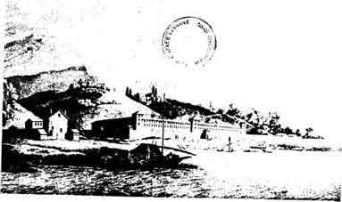
Fig 12 Lazaretto in Genoa: 1789. 図12 ジェノヴァの検疫所：1789.
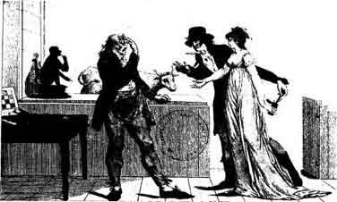
Fig 13 Satircal Picture on Jenner's Vaccinaion: 1801 図13 ジェンナーの種痘についての諷刺画：1801
章註
(1) Leviticus 15, 2 ff.
(2) Numbers 5, 2.
(3) Arnold Treichler, Die staatliche Pestprophylaxe im alien Zrich, Zurich, 1926, p. 40 ff.
rich, Zurich, 1926, p. 40 ff.(4) See e.g. his oration "The People's Misery: Mother of Diseases" translated from the Latin, with an Introduction by Henry E. Sigerist, Bulletin of the History of Medicine, 1941, Vol. 9, pp. 81-100.
(5) Max von Pettenkofer, The Value of Health to a City, Two Lectures Delivered in 1873, Translated from the German, with an Introduction by Henry E. Sigerist. Baltimore, The Johns Hopkins Press, 1941, p. 51.
(6) Exodus 21, 24.
(7) The Hammurabi Code and the Sinaitic Legislation, by Chilperic Edwards, London, 1921, p. 38.
(8) Exodus 21, 26-27,
(9) See Heinrich Zimmern, Hethitische Gesetze aus dem Staatsarchiv von Boghazkoi, Leipzig, 1922, p. 7.
(10) Ibid., p. 5.
(11) See A. S. Diamond, Primitive Law, London, 1935 and E. Sidney Hartland, Primitive Law, London, 1924.
(12) L.c. § 198 and § 201, p. 38.
(13) L.c. § 15, § 11, § 13, p. 7.
(14) Albert Kocourek and John H. Wigmore, Sources of Ancient and Primitive Law, Evolution of Law, Vol 1, Boston, 1915, pp. 516-517.
(15) For this and the following see Edward Herman, Employers' Liability, in Encyclopedia of the Social Sciences, Vol. V, New York, 1931.
(16) U. S. Department of Labor, Bulletin 625.
(17) C. Edwards, The Hammurabi Code, London, 1921, §§ 215-223, pp. 39-40.
(18) The Zend Avesta, I. The Vendidad, ed. by J. Darmesteter, in: The Sacred Books of the East, ed. by F. M. Mller, Oxford, 1880, vol. IV, pp. 83-84.
ller, Oxford, 1880, vol. IV, pp. 83-84.(19) See Huilland-Breholles, Historic diplomatica Friderici Secundi, vol. 4, Paris, 1854: Constitutions Regni Siciliae. English translation in E. F. Hartung, Medical Regulations of Frederick the Second of Hohenstaufen, Medical Life, 1934, vol. 41, pp. 587-601,
(20) See H. E. Sigerist, The History of Medical Licensure, Journal of the American Medical Association, 1935, vol. 104, pp. 1057-1060.
(21) See L. Ebermayer, Der Arzt in Gesetz und Rechtsprechung, in: Der Arzt und der Staat, Vortrge des Instituts fr Geschichte der Medizin an der Universitt Leipzig, vol. 2, Leipzig, 1929, pp. 45-59.
ge des Instituts fr Geschichte der Medizin an der Universitt Leipzig, vol. 2, Leipzig, 1929, pp. 45-59.(22) See H. E. Sigerist, Socialized Medicine in the Soviet Union, New York, W. W. Norton and Co., 1937, pp. 246-253.
(23) See S. Zurukzoglu, Verhtung erbkranken Nachwuchses, Basel, 1938.
tung erbkranken Nachwuchses, Basel, 1938.(24) Quoted from Journal of Heredity, 1927, vol. 18, p. 495.
(25) Marie E. Kopp, Eugenic Sterilization Laws in Europe, American Journal of Obstetrics and Gynecology, 1937, Vol. 34, p. 499.
(26) Denmark in 1929, Sweden and Norway in 1934, Finland in 1935.
(27) A treatise on insanity and other disorders affecting the mind, London, 1835.
(28) See Frederic Wertham, Dark Legend; a Study in Murder, New York, Duell, Sloan and Pearce, 1941.
(29) See Winfred Overholser, Psychiatry and the Courts. Some Attitudes and their Reasons. Virginia Medical Monthly, 1940, VoL 67, pp. 593-599.
我々が何かをするとそれはその時の歴史になる。しかしこの章では歴史という言葉をもっと狭い意味で使い、ある歴史的な事件におよぼす病気の影響を述べることにしよう。
病気は個人にふりかかり個人は歴史という劇における俳優なので権力を持つ人間の病気は彼の行動に影響し歴史的な結果を引き起こすこともあるだろう。流行病が国に侵入したときのように同じ病気が同時に多くの人を襲うこともあろう。全グループの生命を危うくするこのような集団的な病気の結果はもっと明らかである。従って幾つかの流行病の歴史的な結果をまず論ずることにしよう。
ペスト以上に西欧世界の人命を危うくした流行病は疑いもなく無かった(1)。この病気は北里とエルザンが1894年に発見した細菌によって起こされるネズミなどゲッ歯類の病気である。この細菌はノミのような昆虫によって人間に伝えられ人のあいだで勢力を占めると公道に沿って人から人に接触によって伝えられる。年代記によるとペストは大きな自然災害に続いて起きたことを記録している。このような記録は出来事を劇的にするためではなく正しい合理的な根拠を持っている。穀倉が空で地下室が水に浸されるとラットは人間の近くに移り住みゲッ歯類のあいだに流行があると人に感染する機会が大きくなる。
ユスティニアヌスのペスト
ペストは腺ペストと肺ペストの２つの形で起きる。前者ではリンパ節とくに鼠径、脇の下、咽喉、が腫れて、ふつうに「ペスト中世と呼ばれている歴史の期間がヨーロッパの経験したただ２つの大きなペスト流行に始まり終わったことは注目に値する。ふつう中世は４世紀の民族大移動に始まるとされている。蛮族によるローマ帝国の侵入は確かに大事件であった。侵入者は大量に破壊もしたがまた多くのものを保存もした。ローマ文明はまだ充分に強力で侵入者を服従させた。６世紀の初めに東ゴート族がイタリアを支配したがテオドリック王の政治は本質的にローマ流のものであった。彼の宮廷における役所はローマ人が事務をとっていたローマ流の役所であった。ローマ流の元老院がまだ存在しローマ人の執政官がまだ居た。ローマ流の「都市国家」がテオドリックの理想であった。ローマ最後の大学者カシオドルスはこの宮廷に居たしローマ最後の哲学者で科学者のボエティウスはここで死んだ。
次にペストがイタリアに侵入した。これはオリエントから来たものでユスティニアヌスが帝位についていた532年にコンスタンティノープルで流行していた。従ってこのペスト流行はユスティニアヌスのペストと呼ばれている。西に拡がってイタリアに到達し間もなく全ヨーロッパに蔓延した。多くの場所は何回も襲われ流行は天然痘の激しい発生と一緒になったものと思われる。当時の年代記によると惨害はひどいものであった。もちろん統計は無いが数十年のあいだにヨーロッパの人口のかなりの部分が消されてしまった。
ペスト流行の後でイタリアは全く違った様相を呈した。東ゴート族の帝国は滅亡した。ロンバルド族が権力を持った。彼らの政治はドイツ的であり法律もそうであった。教皇の国家が形をとり政治権力になりつつあった。グレゴリー大王は590年に教皇となった。ベネディクト修道院は西ヨーロッパ世界に拡がった。
同じような変化が東方にも起きた。ユスティニアヌスは自分をローマ皇帝と考え実際に最後のローマ皇帝であり彼の政策のゴールは以前の雄大さを持ったローマ帝国を復活させることそのものであった。彼は自分自身をローマ帝国の領土を支配していたすべての蛮族の王たちの当然の支配者であると考えていた。彼は軍事上の栄誉と法的行為とを結びつけることを意図しローマ法の摘要を編纂させた（＊ユスティニアヌス法典）。過去のローマ皇帝と同じように聖ソフィア教会のような巨大な建物で首都を飾った。ペスト流行の後で東ローマ帝国は崩壊した。ユスティニアヌスの後継者はもうローマ人ではなくてビザンティン人で行政の言葉としてギリシア語がラテン語にとってかわった。
さらに東を見ると大きな転換が近づいていた。571年にムハンマドがメッカに生まれた。
このように６世紀は地中海世界の転換点でありユスティニアヌスのペスト大流行は２つの時期のあいだの境界線となる。古い文明は終わりに近づいた。すべての外面の特徴は残っていたが創造力は失われていた。なぜこうなったか我々は知らない。想像するだけである。ペストの度重なる襲来の波は何百万人もの人々を殺し明かされていない損害を起こした。行政機構はぐらついていたので多くの場所でペストによる襲撃で崩壊した。野心的な政策は挫折した。古い世界は崩れ落ち廃墟の上に新しい文明がゆっくりと立ち上がり始めた。
黒死病
中世の世界は何世紀もペストの大流行を見なかった。このことは驚くべきことであった。近東ではしばしばペストの流行が起きていたし東と西のあいだの交通は盛んでとくに十字軍のときには盛んだったからである。中世の町にはネズミが多く衛生状態は決して良くはなかったにも拘わらず散発の例や地方的な流行はあったが決して拡がらなかった。そして次に14世紀すなわち1348年にペストは再び世界をゆさぶる襲撃を行った。今度これは「黒死病」と呼ばれた。1315年から1317年にかけてヨーロッパは最も破壊的な飢饉を経験した。人口が当時２万であったイープル市（ベルギー北西）は1316年の夏に2,794の死体を埋葬した(2)。ようやっと回復したときにペストがヨーロッパに侵入した。再びこれはアジアから来て黒海の方向、小アジアとギリシアの方向、エジプトと北アフリカの方向、の３方向に進んだ。これは南ヨーロッパを襲い西岸に沿って北に動き東に転じ中央ヨーロッパを取り巻き、次にすべての方向から中央ヨーロッパに侵入した。ふつう１つの市が襲われるとこの病気はそこに４ヶ月から６ヶ月のあいだ居座り人口の大部分を殺し市の全生活を混乱させた。
犠牲者の数は2500万人から4000万人と見積もられた。ヨーロッパは全人口の４分の１から３分の１が失われたと思われる。フィレンツェは６万人の住民、ストラスブールは１万6000、バーゼルは１万4000、パドヴァは３分の２、ヴェネチアは４分の３、を失った。2000の村と農地は全く人口が減少した。
このように大きな天災は明らかに影響の大きいものであった。心理学的に言って人々は放恣と浪費に身を持ちくずすか、もっと多くの人々は懺悔して禁欲に頼るか、のどちらかであった。むち打ち苦行者の宗派はとくにドイツで復活し教皇クレメンス６世が禁圧するまで流行した。ユダヤ人は特に南ドイツで迫害され何千人もが家で焼かれた。大災害があると人々はスケープゴートを求める。貴族と市当局はユダヤ人に大きな負債を持っていてペストは貴族や市当局に彼らが軽蔑していた債権者ユダヤ人を取り除く機会を与えた。
ペストが発生したときに戦争は全ヨーロッパに荒れ狂っていたがこの病気によって戦争は少なくとも一時的には中断された。フランスとイギリスは殆ど１世紀も続いた戦争（＊100年戦争）を行っていて両国とも完全に疲れ果てていた。イギリスは新しい火器で装備してクレシーでフランス軍を破りカレーを11ヶ月の包囲の後に攻略した。ペストはイギリス軍を撤退させ休戦の調印を余儀なくさせた。フランスの同盟軍であったスコットランドはイギリス北部に侵入しようとしたがイギリス軍によって打ち破られただけでなくペストによって10人に１人が殺された。ナポリ王国を包囲していたハンガリア軍はペストによって急いで退却せざるを得なくなりナポリ王国は救われた。スペイン、ドイツ、ポーランドとロシア、ビザンティン帝国、のどこでも軍事行動はペスト流行によって中断されるかまたは完全に中止された。
たぶんヨーロッパ大陸の経済生活に最も後まで影響が感じられた。多くの災害の結果として労働力の重大な不足が起きその結果として長期にわたって物価が高騰した。イギリスが1350年に「労働者令」を通し次の年に同じ問題について勅令を出したのはこのためである。両方とも賃金を規制して物価を下げるのを目的とした(3)。多くの国で社会的な不隠状態が起こった。フランスとイギリスでは農民の反乱が発生しフランダースでは手工業者が都市の貴族による支配に立ち上がった。
中世の経済は14世紀まで着実に発展していたがこの頃には停滞し崩壊の徴候を示し始めた。ピレンヌが非常に正しくも示したようにこの世紀に起こった大災害、すなわち飢饉、ペスト、戦争、社会の不穏状態、はこのような出来事の大きな原因であった。このようにこの世紀最大の災難である黒死病はヨーロッパ史新時代の基礎となる新しい経済秩序の勃興に道を開く重要な役割を果たした。
ペストがヨーロッパに侵入したときにペトラルカはアヴィニョンに住んでいてこの町はこの疫病によって大いに悩まされた。哀愁に満ちて彼は叫んだ。「このようなものを見た人はいるだろうか？ 同じような出来事の報告を聞いたことのある人はいるであろうか？ 家が空で町は見捨てられ農地は手入れされず野原に死体が一杯でどこも恐ろしい孤独が拡がっていることを何かの年代記で読んだことがあるだろうか？」(4)
ボッカチオは黒死病のときにフィレンツェに住んでいて「デカメロン」の序文で黒死病をラテン語でなくて土地言葉のイタリア語で非常に生き生きと説明した。言い換えるとイタリア・ルネッサンスの入り口に立っていた人々はペスト流行と同時代人であり、この流行は14世紀に起きて６世紀がヨーロッパ史の転換点であったのと同じように転換点であった。
発疹チフス
ハンス・ジンサーは非常に機知に富んだ本「ネズミ、シラミと歴史」(5)に「政治および軍事の歴史に及ぼす疫病の影響、および将軍たちの比較的な非重要性」という章を設けた。最良の準備をして始めた戦争が疫病の影響および医療の不足で失敗したことを歴史は繰り返して示しているのでこの点は充分に強調することができる。充分に組織された医療部隊が設置されたのはかなり最近のことで将軍たちは軍医を必要悪で邪魔者であり将軍たちの計画をいつでも妨害しようとしている人間とみなしていた。医学が戦術の最も重要な要素の１つであることは非常に最近になって始めて認識されるようになった。ルネッサンス以降に発疹チフスは優れた軍隊を破り多くの国の一般市民を苦しめる最も危険な敵の１つであった。チフスは小さな微生物のリケッチアによって起きるものでリケッチアはシラミの中にいてシラミによって伝播される。従って衛生状態が悪く人々にシラミがたかるときにこの病気は脅威となる。戦争のときには汚物が溜まり兵士は清潔にすることが困難である。発疹チフスはまた経済が不況のときや過去の混み合い非衛生な刑務所では大きな問題であった。従ってこの病気はまた野営熱、囚人熱、飢餓発疹熱と呼ばれた。
この病気はたぶんヨーロッパで新しいものではなかったろうがルネッサンスの頃に新しいものと考えられた。発疹チフスはもともと東洋から来たものでこの病気それ自身は独立のものと認められていなかったが(6)ヨーロッパで中世に病人が発生したに相違ない。フェルディナンドとイサベラのスペイン軍で1489-1490年のグラナダ包囲中に流行が起きたことは疑いも無い。これは「悪性斑点熱」と記されこの病気が地方病であったキプロス島から兵士が持ってきたと考えられた。
発疹チフスはまたドイツ皇帝カルル５世とフランス王フランソワ※１世の間における２回目の戦争で決定的な役割を果たした。教皇クレメンス７世はフランスと同盟を結んだ。カルル５世の帝国軍は勝ち誇ってイタリアを進軍しローマを略奪し教皇を捕虜にした。ペストがローマに発生して侵入者の10人に１人が死亡すると形勢が変化した。同時にフランス軍はイタリアを進軍していた。ついに帝国軍はナポリで包囲された。皇帝軍は飢餓に苦しみ大義名分が失われたように見えたときに包囲軍に発疹チフスが突然に発生してフランス軍は殆ど一掃されてしまった。1530年に教皇はドイツ帝国の支配者カルル５世に戴冠式を行った。教皇によるこの最後のドイツ皇帝戴冠式を「発疹チフスの権力」によるとジンサーが言ったのは正しい(7)。
この病気はこの後の長いあいだ軍隊の常に変わらない恐るべき同伴者であった。もう医師たちはこれを見逃すことはあり得なかった。流行病についてのこの頃の最も有名な著者フラカストロは1546年の「接触伝染と接触伝染病、ならびにその治療について、第３巻」の中で古典的な記述をしている。彼によるとこの病気はイタリアでは1505年と1528年に最初に発生したものであるが東地中海のキプロスその他の島ではふつうのものとして知られていた。人々がもっとも注目したのはこの熱病にかかった患者が胸、背中、腕に赤い斑点を生ずることであった。それ故に人々はこの病気を「レンズ豆または小斑点」と呼んだ。この斑点は小さなレンズ豆またはノミが刺した跡に似ていたからであった。フラカストロの前に他のイタリア医師カルダノがすでにノミ刺し熱について述べているがこれはフラカストロの本と違って権威の無い本に書かれたものであった(8)。
ルネッサンスから我々の時代まで、発疹チフスは歴史的な事件を起こすのに大きな役割を果たした。1552年にはカルル５世の味方ではなく敵となり彼にメス（フランス北東部の都市）の包囲を放棄させた。30年戦争の第１部である1618-1630年には発疹チフスが主な災厄であった。兵士が殺さなかったものをこの病気が殺した。戦争の第２部ではペストが最前面にあったがもちろん赤痢、腸チフス、壊血病が無いわけではなかった(9)。中央ヨーロッパは飢饉、戦争、ペストによる打撃から回復するのに１世紀を必要とした。
シラミは18世紀になっても勝利者でありナポレオンの戦役を含んでこの時期のほとんどすべてのヨーロッパの戦争で戦傷より発疹チフスで死んだ者が多かった。この世紀の後半に事情は変化した。石鹸とシラミの間の戦闘でシラミは始めて後退しなければならなくなった。発疹チフスは大部分の西ヨーロッパ諸国で消失し軍隊は何の妨害も無く殺し合うことができた。しかし発疹チフスは生活水準が低い国のアイルランドや東ヨーロッパでは地方病として残った。メキシコとか合衆国南部でこの病気は何世紀ものあいだ広がり今でも軽微な形で起きている。スペインによる征服の前にアメリカに発疹チフスがあったかどうかはなお議論があるがコロンブス以前に存在したことを支持するしかるべき議論が存在する。
1914-1918年の世界大戦が始まったときに医学は驚くべく進歩していたのでこの病気の大流行が起きずに戦争が戦えると期待されていた。西部戦線ではこの通りであったが東部戦線では僅か３ヶ月で発疹チフスが出現しこの地区において主要な戦略決定者になった。1914年の11月にセルビアに発生し次の年の４月に頂点に達した。死亡率は最初に20％であったが流行の最盛期には60％となり遂に70％にも達した(10)。発疹チフスはセルビア人とオーストリア人の捕虜、兵士、市民を同じように殺してセルビアを荒廃させ長い間にわたって中欧同盟国（＊ドイツとオーストリア・ハンガリー）がセルビアを占領するのを妨げた。戦争中に発疹チフスは東部戦線に流行したが軍隊における強力なシラミ退治によって押さえられていた。ついに1918-1922年に未曾有の流行がロシアを席巻した。
発疹チフスはロシア人にはよく知られていた敵であった。革命前20年間における公式に記録された患者数の毎年平均は８万2447人であった。飢饉とか凶作のときに罹病率は２倍以上になった。戦争の間に発疹チフスはゆっくりではあったが着実に拡がった。1915年に15万4800人が記録されていたが、大流行が1918年の終わりにかけ発生してペトログラード（現在のサンクト・ペテルブルグ）、ルーマニア戦線、ヴォルガ地区、の３つの中心から侵入した。内戦および外国の干渉の結果、国のおおくの地区において保険サービスは壊滅した。飢饉はヴォルガ地区を襲い人口を移動させた。流行は1920年に頂点に達し1921年には下火となったが、1922年に主として飢饉の地帯で再び盛んになった。内戦で国が裂かれていて病気の記録がとれていないのは明らかで正確の数字を出すことは難しいが1918年から1922年の4年間に200万人から300万人が罹患し10％が死亡したと推定しても間違いでなかろう(11)。しばらくのあいだ革命の運命は発疹チフスによって決定されるように見えた。1919年にレーニンは「社会主義がシラミを打ち破るかシラミが社会主義を打ち破るかどちらかである」と言った。外国のボイコットによってもっとも重要な２つの商品、清潔にするための石鹸と消毒のための燃料、が極度に不足したので互角の戦いではなかった。それにも拘わらず驚くべき努力が払われた。鉄道線には見張りが立てられすべての接続駅に検疫所が置かれ旅客は列車から降ろされて入浴・消毒をされ患者は隔離された。「入浴週間」が設けられその間に町の全区域が清掃、消毒された。
同じころ他の伝染病が荒れ狂っていた。再帰熱、コレラ、赤痢、およびマラリアがコーカサスから北極地帯に拡がった。中世以来に世界が見たこともない光景であった。他の病気とともにペストも起きていたらロシア全土は人口が完全に無くなってしまったと思われる。
いまや第２次世界大戦の最中である地域では発疹チフスが地方病的に起きていて大流行の亡霊に常に脅かされている。この文章を書いている1942年の春に局部的な小さい流行が起きているという報告がある。しかし病気はまだ押さえつけられていてしばらくはこのままでいるだろう。すべての軍隊で医療は著しく改善されている。赤軍は９両の車両からなり入浴、洗浄、消毒のあらゆる設備を持った特別な入浴専用列車を準備していて戦線へまっすぐに送られている。
第２次世界大戦が次の段階に来てファシズムが一掃され革命が起こり内戦が勃発すると現実に危険が迫るであろう。そうすると発疹チフスはまた頭を持ち上げ歴史の形成における昔ながらの役割を演ずるかも知れない。
マラリア
これまで論じたものと性質が違うが国民の生活に深い影響を及ぼした他の病気であるマラリアを見てみよう。1880年にアルジェリアでラヴランは血中に入ってこの病気を起こす原生動物を発見した。すぐこの後でこれらはイタリアでマルキアファヴァおよびチェリによって記載されさらにもっと研究された。1895年にロスはアノフェレス蚊が刺すことによってこの寄生虫が人に感染することを見出した。これらの古典的な発見によって多くのことが説明された。彼らは間歇的な熱と蚊の繁殖地である沼の関係を説明し沼の周囲は人が住むのに不健康な場所と常に考えられてきたは何故か明らかにした。彼らはまたこれらの熱病が常に夏と秋にだけ盛んになる季節的な性質を説明した。これらの発見によって刺激され幾つかの興味ある歴史的な研究が行われた。これらのうち２つだけについて論ずることにしよう。
ギリシア医学の最高の研究者の1人であるW.H.S.ジョーンズは非常に注目すべき本の「マラリアとギリシア史」(12)を1909年に発表した。古代ローマの軍団に降伏したギリシア人はその昔ペルシア人の侵入者を撃退したギリシア人と同じではなくこの変化は主としてマラリアによるとこの本はしている。これらの変化を次の言葉で記している(13)。
ギリシア人は健康な若者が持っていた明るい新鮮さの輝きを次第に失った。他の形の芸術は兎も角として悲しいことに文学において明らかである。彼らの創造力は消失した。創造することを止め注解することを始めた。稀な例外を除いて愛国心は空虚な名前となった。国家にたいする義務を行動に移す気力とエネルギーを持っている者は殆ど居なくなったからである。無節操、優柔不断、不健全な活気の気まぐれな噴出に続く臆病な意気消沈、利己的な残虐性、および犯罪的な弱さ、はマケドニアとの戦いからローマ軍による最終的な征服までのギリシアの公的生活の特徴である。マラトンからペロポンネソス戦争までと、アレクサンドロス大王からムンミウス（＊ギリシアを征服したローマの将軍）までの、両期間の大きな違いに総ての人は間違いなく驚くであろう。哲学もまた影響を受け最高で最も立派な代表者の手でも著しく厭世的になった。「感情の欠如」、「関心の欠如」、が人間の努力の最高の目標であった。
ジョーンズはもちろん多民族の混入、怠惰・贅沢・悪徳の増大や、力強い信仰の喪失、などの他の要因が役割を演じていることを否定してはいない。しかし強く健康な人々はこのような要因に反抗し克服する、と彼は考えている。しかしマラリアは全世界で今日も見られるように人々の活力を奪い彼らのスタミナを破壊する。
統計は存在せず保存されている文献が断片的なときにある病気の流行の程度を決定することは非常に困難である。ジョーンズは古代における医学と無関係な著者や医学関係の著者の本を注意深く調べマラリアが以前からギリシア本土に存在したかすかな証拠があるという結論に達していた。この病気はたぶん紀元前500年ごろにはマグナ・グレシア（イタリア南部にあったギリシア植民都市）および小アジアでふつうに見られ紀元前５世紀の後半ごろにに本土に侵入したぶんペロポンネソス戦争の間にアッティカ（アテネを中心とする地方）で激しい発生を見たのであろう。最後に紀元前400年ごろにマラリアはギリシア世界の大部分で地方病になっていたのであろう。
マラリアの住民にたいする影響は再びジョーンズ自身の言葉を引用すると、次の通りであった(14)。
(1)金持ち、有能な者、元気な者、はより健康な土地を求めるのでマラリア地区には貧しい哀れな者たちが居残る。
(2)都市はふつう耕作地域よりマラリアが少ないので都市住民は農民階級を吸収する傾向があり従って国民の体格と福祉は低下する。マラリア地域の囲まれ孤立した都市はしばしば衰微し壊滅する。
(3)この過程は大きな経済的な損失を伴うであろう。マラリアが特に跳梁する肥沃な地域が全く耕作されないようになるからである。農業の破滅はどの国にとっても大きな打撃でありマラリアは特に農民を襲いしかもこれは全力の必要な収穫期に起きることを覚えていなければならない。
(4)若年者はマラリアに最もひどく痛めつけられ度重なる熱の発作で体力は弱くなって幼少年時代が１つの長い病気となり適当な教育が不可能となる。「もしも夏に子供が元気なら充分に学ぶ。」マラリア地区の住民は早く年を取り、若死にする。
(5)マラリア原虫は体内で何ヶ月もあるいは何年も生きていることがあるので過労とか無理によってしばしば再発する。勿論マラリア地区の住民は疲労を避け不精となり進取の気性が無くなる傾向がある。怠惰の性質が次第に作られる。
(6)患者に見られる永続的な精神障碍のほかにこの病気による生命の喪失および身体の障害を考慮しなければならない。
(2)都市はふつう耕作地域よりマラリアが少ないので都市住民は農民階級を吸収する傾向があり従って国民の体格と福祉は低下する。マラリア地域の囲まれ孤立した都市はしばしば衰微し壊滅する。
(3)この過程は大きな経済的な損失を伴うであろう。マラリアが特に跳梁する肥沃な地域が全く耕作されないようになるからである。農業の破滅はどの国にとっても大きな打撃でありマラリアは特に農民を襲いしかもこれは全力の必要な収穫期に起きることを覚えていなければならない。
(4)若年者はマラリアに最もひどく痛めつけられ度重なる熱の発作で体力は弱くなって幼少年時代が１つの長い病気となり適当な教育が不可能となる。「もしも夏に子供が元気なら充分に学ぶ。」マラリア地区の住民は早く年を取り、若死にする。
(5)マラリア原虫は体内で何ヶ月もあるいは何年も生きていることがあるので過労とか無理によってしばしば再発する。勿論マラリア地区の住民は疲労を避け不精となり進取の気性が無くなる傾向がある。怠惰の性質が次第に作られる。
(6)患者に見られる永続的な精神障碍のほかにこの病気による生命の喪失および身体の障害を考慮しなければならない。
ジョーンズの論文はきわめて興味深い。キニーネや類似薬品のような特効薬を持っている今日でもマラリアが住民に悪い影響を及ぼしているのと同じようにギリシア人に影響を及ぼしたことは疑いもない。17世紀まで治療法は無くマラリアは自然の経過をたどっていた。ジョーンズが考えたようにマラリアの影響が遠くまで及ぶものではなかったかも知れないがたしかにギリシアのその後の歴史に重要な要因であった。
マラリアはまた他の地域すなわちローマ市周辺の土地カンパーニャの歴史を決定するのに重要であった。最高のマラリア疫学者の１人でイタリアにおけるマラリアとの戦いに全生涯をかけたチェリはカンパーニャの歴史を詳しく研究した(15)。彼はこの地域がある時は全くの荒れ地でありまた他の時には生命に満ちた栄えた景観であったことに注目した。25世紀のあいだにカンパーニャは４つの時期に人が住み栄えたことを彼は見た。すなわち(1)ローマの前の時代、(2)ローマ帝国の最盛期、(3)中世初期［８世紀と９世紀］、(4)15世紀から17世紀までの近代、である。これらの時期のあいだにカンパーニャは荒廃の場所であって廃墟になり見捨てられた小さな村があり若干の野生のヒツジが永遠の町ローマの城壁の下で草を食っていた。皇帝や教皇はこの地域に再び人々を住ませるように努力して移住者に賞金と補助金を提供したが無駄であった。何が理由だったろうか？
ローマの市を襲った多くの戦争がカンパーニャの荒廃の原因であるとしばしば言われた。しかしこれは非常に不適当な説明であった。戦争が終わると特に大都市の近郊では人々はすぐに戦場そのものに住むようになるからである。カンパーニャの荒廃はマラリアによるとチェリが言ったのは疑いもなく正しい答えであった。時々に生活を不可能にし人々を殺したり弱くしその土地から追い出したのはマラリアであった。他の寄生形態でウマやウシを殺して土地を不毛にしたのはマラリアであった。チェリの歴史研究によるとある地域でマラリアは周期的に起きている。この病気はある地域を襲い拡がり生命を追い払う。「熱の女神」が権力を握る。そして数世紀の後でまだ明らかにされていない理由でこの病気は次第に退却し生命が戻る。マラリアがローマのカンパーニャにおいて歴史を作る要因であったことは疑い無い。
アメリカの植民においてこの病気が大きな役割を果たしたことは最近の非常に優れた研究によって示された(16)。
王の病
これらの僅かの例から慢性あるいは急性の、地方病または流行病の、集団的な病気が人類の歴史において重要な役割を果たしてきたことが判る。しかし、他の病気もまた歴史に影響を及ぼしていた。この関係において「るいれき」（瘰癧＝頸部リンパ節結核）と王位の慣習の奇妙な関係について述べることにしよう。古代の神々は患者に触れることによって奇跡の治療を行った。アスクレピオス（ギリシアの医療神）はその神殿に泊まっている病人に手で触れて病人を治した。ヘロピロス（紀元前300年頃のギリシアの医師）は医薬品を「神々の手」と呼んだ。ローマ皇帝は神の性質を持つ者として神のように尊敬されある者は治療を行ったと聞いている。古代のオリエントにおいて王は油を塗られ神聖な油は神としての性質を彼らに与えた。この儀式はユダヤ教で続けられ中世に至った。メロヴィング朝の小ピピンは塗油された最初のフランス王であった。このようにして彼は神の恩寵によって王となり神としての権力を得た。同じ儀式が８世紀末ごろにイギリスでも行われ間もなく全西ヨーロッパで行われるようになった。
王は塗油されると「君主のキリスト」になり王にたいする罪は神聖を汚すことであった。塗油によって王は神の力を与えられ病人に触ると神は病人を治癒させる。奇跡治療はフランスおよびイギリスの初期の王について語られた。王が触ることによる「るいれき」の治療はフランスではフィリップ１世（1060-1108）、イギリスでは多分ヘンリー１世（1100-1135）に始められたようである(17)。何故に他の病気ではなくて「るいれき」が「王の病」（図15）になったかは不明である。ともかく「るいれき」を治すというフランス王およびイギリスの王の力は王権の象徴として大事に守られた。イギリス王チャールズ１世が牢獄に捕らえられていたときに多くの患者たちが王に触られることを希望し下院は「王の病気を治すために触れてもらうという迷信について民衆に告げる公布」を作る委員会を任命した。王党派は後になってクロムウェルは王から「るいれき」患者に触れる権利を強奪したと非難した。チャールズが斬首されたときにある者はハンカチを血に浸しこの聖なる遺物はなお治療効果を持っていると信じた。
中断しながらもこの儀式はイギリスではアン女王のときまで続いた。1714年４月27日に死去３月前に最後の儀式を行った。イギリスではこの後では行われなかったがフランスでは大革命後にも行われた。王政復古にさいして王権に中世の権威を与えるためにシャルル10世は伝統の儀式を行うように説得された。1825年に10世は１度行ったが、それが最後であった。
イギリス王だけは別の魔法の治療力を持っていた。聖金曜日に王は十字架の下の祭壇に金と銀の供物をし譲り受け指輪を作った。これらは痙攣の指輪と呼ばれすべての種類の痙攣とくに「てんかん」で苦しむ人たちを治す力を持っていた。この儀式は14世紀に始められ前者と同じ運命をたどった。
個人の病
権力の地位にある者が病気に罹ったときに彼の行為はそれによって影響される。歯痛はきわめて腹立たしいし頭痛や感冒は気を重くする。肺炎は人を寝込ませ将来まで影響する決定を下すことが予期される時期にも起きうる。従って身体の病気がふつう我々の考える以上の影響を与えなかったかどうか問題にするのは当然である。トルストイは大作小説「戦争と平和」でこの問題を提起し詳細に論じている(18)。多くの歴史家は1812年のボロジノの戦いでフランス軍が勝てなかったのはナポレオンが風邪に罹っていたためであると主張した。彼が風邪に罹っていなかったら戦闘における配備はもっと巧みでありロシアは破壊され「世界の局面は変わったことであろう。」もしもこのような観点が正しいとしたら９月５日に防水長靴をナポレオンに渡すのを忘れた執事はロシアの救世主とみなさなければならないとトルストイは皮肉に論じている。シャルル９世の胃の具合が悪かったので聖バルトロメオ祭の虐殺が起きたとヴォルテールが冗談に言った言葉にもトルストイは言及している。トルストイがこのような判断力の欠けた考えに反対し嘲笑したのは非常に正しい。歴史における因果関係についての彼の見解は世界における出来事の経過がより高い力すなわち、これらの出来事に関与するすべての個人の意思が共同して働くことによって予定されていて、ボロジノにおけるナポレオンの役割は表面的なものだけであったということである。自分の観点を強調するためにトルストイはこの時におけるフランス軍の心理的立場を詳細に分析している。
歴史が個々の人間によって作られることは確かであり、彼らが健康か病気か、彼らの精神が正常か異常か、によって大きな違いがある。だが個人が占めている地位、与えられている権力、および許された権力の行使、は全く多様な要因すなわち第１に社会的および経済的な状態だけでなく、希望と恐怖、野心と欲求不満、その他の心理学的要因、によって決定される。どこの国でも何時でも、潜在的な天才、潜在的な英雄と悪者が居る。彼らが舞台裏に居るか表面に出るか、彼らの活動をどんな目的でどの規模で行うか、は状況によって定まる。個人の病気および致命的な病気ですら歴史の経過を変化させない。指導者が死んだら１つの動機は崩壊するかも知れないがこれは彼が死んだのが理由ではない。崩壊するのは指導者を支えていた力が勢いを失ったときだけである。そうでないときには歴史が１度ならず示しているように指導者の死は大義を活性化さえしている。
章挿画
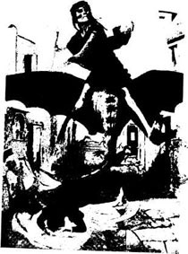
Fig 14 The Plague: Painting. 図14 黒死病：ベックリンの画
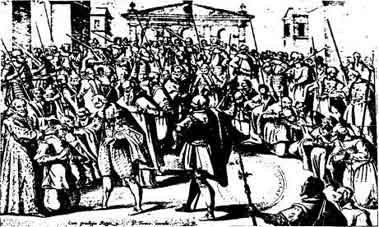
Fig 15 The King's Evil: Henry IV of France touching scrofurous patients, ca 1600. 図15 王の病：フランス王アンリ４世がるいれき患者に触れている。1600年ごろ
章註
(1) The literature on the history of the plague is very extensive. The following are some of the basic books that should be consulted in this connection. Georg Sticker, Abhandlungen aus der Seuchengeschichte und Seuchenlehre, I. Band: Die Pest. Erster Teil: Die Geschichte der Pest. Giessen, 1908.--F. A. Gasquet, The Great Pestilence (A.D. 1348-9), Now Commonly Known as the Black Death, London, 1893.--Anna Montgomery Campbell, The Black Death and Men of Learning, New York, 1931.--Albert Colnat, Les  pidmies et l'Histoire, Paris, 1937.--See also Henry E. Sigerist, Kultur und Krankheit, Kyklos, Jahrbuch des Instituts fr Geschichte der Medizin an der Universitat Leipzig, 1928, vol. 1, pp. 60-63.
pidmies et l'Histoire, Paris, 1937.--See also Henry E. Sigerist, Kultur und Krankheit, Kyklos, Jahrbuch des Instituts fr Geschichte der Medizin an der Universitat Leipzig, 1928, vol. 1, pp. 60-63.
pidmies et l'Histoire, Paris, 1937.--See also Henry E. Sigerist, Kultur und Krankheit, Kyklos, Jahrbuch des Instituts fr Geschichte der Medizin an der Universitat Leipzig, 1928, vol. 1, pp. 60-63.(2) See Henri Pirenne, Economic and Social History of Medieval Europe, New York, n.d. [1937], p. 195.
(3) Ibid., p. 195 f.
(4) Epistulae de rebus familiaribus, VIII, 7.
(5) Boston, 1935.
(6) The early testimonies have been collected by Heinrich Haeser, Lehrbttch der Geschichte der Medicin und der epidemischen Krankfieiten, voL III, Jena, 1882, pp. 357 ff.
(7) L.c., p. 253.
(8) De malo recentiorum medicorum medendi usu libellus, Venice, 1536. It was later incorporated in his De Methodo Medendi Sectioned Tres. The passage appears as Caput XXXVI of Sectio Prima.
(9) Gottfried Lammert, Geschichte der Seuchen, Hungers- und Kriegsnoth zur Zeit des Dreissigjdhrigen Krieges, Wiesbaden, 1890.
(10) See Zinsser, l.c., p. 297.
(11) See L. Tarassevitch, Epidemics in Russia since 1914. Report to the Health Committee of the League of Nations. Epidemiological Intelligence, No. 2, March 1922 and No. 5, October 1922.
(12) Manchester University Press, 1909.
(13) L.c., p. 102.
(14) L.c., pp. 107-108.
(15) Angelo Celli, Storia della Malaria neffAgro Romano, Memorie della R. Accadernia Nazionale del Lincei, Citta di Castello, 1925. An abbreviated English translation was published under the tide The History of Malaria in the Roman Campagna from Ancient Times, London, 1933.
(16) St. Julien Ravenel Childs, Malaria and Colonization in the Carolina Low Country 1526-1696, Baltimore, 1940.
(17) The best critical study on the subject is Marc Bloch, Les Rois Thaumaturges, Publications de la Facult des Lettres de l'Universit de Strasbourg, Fascicule 19, 1924.
des Lettres de l'Universit de Strasbourg, Fascicule 19, 1924.(18) Vol. IV, Part X, Chapter 28.
病気とは何か？ 何故、人は突然に他の人と違って行動し反応し自分の生理的機能を行うのに障害があると感じ苦しむのだろうか？ 我々にとって病気は生物学的な過程である。人の身体に起きてある臓器に局在するが、すべての臓器は相互に連関していて生体全体を形成しているので病気に罹るのは常に全生体である。そして身体と心は１つなので病気は肉体的だけでなく精神的にも経験される。
呪術医療
病気が生物学的過程であるとする考えは比較的に新しくそれまで病気は非常に異なった方法で解釈できたし解釈されてきた。原始人は呪術的世界に居て敵意を持った自然に取り巻かれ自然のすべての現象は神秘的な力を与えられていると考えた。無事に生きるためには絶えず警戒しなければならないし自然や仲間から発せられる邪悪な力から身を守るための複雑な規則や儀式を行わなければならなかった。呪術は周囲に権力を及ぼす方法であり世界と調和して暮らし世界を自分の肉体的および社会的な環境の一部とすることを欲するならば呪術にある程度は習熟しなければならない。人が病気になるには理由があった。何処においてかどのようにしてか彼の警戒が敗れて強い力が支配したのである。仲間が妖術をかけたか魔物が身体を占有したのである。病気の原始的な考えは呪術的なものであった。宗教的な要素も確かにあったが文明のこの段階では宗教と呪術のあいだに線を引くことはできなかった。原始医学はまた合理的と考えられる多くの処置を知っていた。たとえばマッサージ、発汗浴、放血を知っていたし多くの部族の薬物についての知識は広範囲のものであった。しかしこれらの見たところ合理的な治療は呪術的な儀式の一部であった。薬は薬として作用したのではなく薬を授ける儀式やそのときに唱える呪文が病気を治し苦痛を和らげる力を与えた。
このようにして、呪術的、宗教的、経験的な要素は呪術という共通因子のもとで原始医学においては密接に混じり合っている。このことは文明社会の医療組織と根本的に違う性質を原始医学に与えている。同様に原始的な医療師は現代の医師と比較することはできない。医療師は異なりもっと多くの役目を持っていた(1)。医療師は病気を治すだけでなく雨も降らせた。しばしば部族の吟唱詩人でありときには首領でもあった。しきたりを知っており呪術をよく知っていたので部族の誰よりも知識を持ち部族を守り繁栄させるためにその知識を利用した。
文明が進歩するにつれて原始医学の各要素はそれぞれ独自の道をたどった。バビロニアの医学では一緒であったが呪術から宗教へ重点が移っていた。バビロニア医学は宗教医学の精巧なシステムであった(2)。すべての病気は神から来たもので祭司である医師の役割は神々の意志を見つけて解釈して神々をなだめることであった。バビロニア医学は非常に多くの呪術的であり経験的である要素を持っていたが全体としては宗教医学のシステムであった。
古代エジプトでは原始医学の３要素がまだ並んで見出されたが分裂はさらに進んでいた。全く合理的な医書と全く呪術的な医書が存在している。以前の古い原文を紀元前16世紀に写したエドウィン・スミス・パピルス(3)は全く合理的なものである。終わりの呪文は疑いもなく後世の書き入れである。この合理的な性質はこの文書が主として外科の病気を取り扱っていることにある程度はよるのかも知れない。B.C.15世紀に書かれたエベルス・パピルス(4)は内科的な病気を取り扱った純粋な医学書である。この本がイシス女神への祈りで始まっていることはアラビアの医学書が「慈悲深く寛容な神の御名において」の言葉で始まっているのと同じである。呪文もあるが比較的に稀であって全体としてこのパピルスもまた医学の合理的なシステムを記載している。主な内容は病気および病状からなっておりそれに薬物療法の処方が記載されている。この本の重要な１カ所において3種の治療者すなわち医師とサクメット神祭司および悪魔払いをあげている(5)。もっと全く呪術的な近年の本たとえば小ブルグッシュ・パピルスでは悪魔払いが活躍している(6)。この本は女性および子供の病気を論じていて精巧な呪術的な処方を与えている。エジプト人の生活において宗教と呪術が非常に重要な役割を果たしていることは他の文学や考古学的な原典から知っている。
原始医学における要素間の分裂はギリシア時代以後に完全となった。紀元前６世紀は西欧思想史だけでなく医学史においても転換点であった。ここで合理的な医学システムが発展した。このシステムでは症状と処方の羅列のような生の経験的事実だけでなく健康と病気の本質を解釈する努力がなされた。これらは観察と経験に基礎を置いて神話や超自然的なものを除外し医学問題を哲学的、後には科学的に解釈した。どのようにして人々が健康と病気の問題に近づくに当たって呪術および宗教の束縛から抜け出したかは今でも謎である。抜け出すのに成功したという事実は彼らギリシアの天才に他の時代と比較にならない地位が与えられる。ギリシア人から受け継いだ例を習えばよかったので、その後の若い文明にとって仕事は容易であった。
合理的医学が発達しても宗教医学や呪術医学さえも滅びたわけではない。原始医学のすべての要素は今日まで何世紀も何千年も生き残っている。いつでもこの３つのシステムは並んで存在し時には平和に競争し時には公然と衝突した。支配的な哲学が合理的であれば科学は栄え宗教医学は裏で少数者の神秘的な欲望を満足させて科学医学が失敗した患者の最後の隠れ場所になった。このような時代に呪術は教育が無い「無知の」人たちに追いやられていて農民の迷信とか元来の意味は忘れられているが一般には認められている風習とか習慣などに生きていた。多くの国で人々は今でも幸福や不幸な前兆を注意深く気にしているが前兆の解釈が嘗ては高度に発達した学問であったことを知らない。
自然や社会の大変動があったときのように神秘哲学が支配しているときには宗教医学や呪術医学が表面に出る。恐怖が理性を押し殺す。人々は原始的な段階に戻り自分たちを脅かしている災いを呪術によって近づけないように努める。
アスクレピオス祭儀
ギリシアの医師と哲学者が病気の本質について思索している時に多くの人々は病気を宗教の観点から解釈し治療を神殿の中に求めた。災いは神々が送ってきたものであって病気も同様であった。アポロの投げ矢はペストをもたらしヘビの髪をした古代の神はすべて治療力を持っていた。ゼウス神は救いの神ゼウスでロードス島では医神ゼウスとして崇められた。ヘラ女神は救いの神ヘラとして表れローマでは救いの神ユノとして表れた。レムノス島ではヘパイトス神が落ちた地面は「レムノス島封じ土」となりヘビの咬傷と躁病の薬となった。処女アテナはアテネでは健康の神としてキジコスでは医神アテナとして祈られた。スパルタで眼病の神アテナとして眼病の人々に崇められた。アポロは薬の発見者と考えられた。アポロの治療力は、治療、予防、救助、医師、占い医師、医師の、救い主の、など各種の言葉で示された。
こうして病気で苦しむ人は殆どどの神殿にでも行って供物を捧げて健康回復を祈ることができた。しかし宗教医学はアスクレピオスの祭儀(7)に具体化した（図16）。何世紀にもわたってこれは最重要な治療の祭儀でありエピダウロスからギリシア世界全体に拡がり紀元前291年にローマに至った。元来アスクレピオスは医師たちの守護神であったが次第に地位が上がり神として崇められた。彼はアポロの子供で半人半馬ケンタウロスのケイロンの弟子であり神殿は病人や悩みを持つ人々が巡礼する場所になった。
エピダウロスは廃墟であるが今でも堂々としている。パウサニアス（＊２世紀ギリシアの地誌学者）を案内人として廃墟を歩くことによって何代ものギリシアやローマの病人が訪れた当時を再現することができる。聖域の中心は神殿でここには金や大理石のアスクレピオスの像が建っていた。彼は病人の助けをする杖をついて立ち髭を生やした顔は温厚で親切な表情をしていた。彼は生活が純潔で神聖でありギリシアの神々の中で醜聞が無い唯一の神であった。後になって彼はキリストの主な競争相手になった。
今でも巡礼者のための大きな４つの中庭を持った宿泊所の廃墟を見ることができる。巨大な建造物である劇場は最も良く保存されたギリシアの劇場の１つである。音楽堂、競技場、浴場は来訪者の娯楽用に準備されていた。純潔な人々だけが入ることが許されたので神殿は垣をめぐらしていた。純潔でない人々、月経中の女性、産婦、瀕死の人々、のために、ローマの元老院議員アントニウスは境内の外に特別な家を寄付した。
治療行為はいわゆる「孵化」であった。それは「内陣」すなわち神殿からあまり離れていない回廊、で行われる。患者は準備の儀式を受けた後でこの回廊で眠った。アスクレピオスは彼らの夢の中に現れ眼が醒めると少なくとも記録によると彼らは治癒していた。ふつう失敗は公表されなかった。紀元前４世紀以降のこのような奇跡の治癒に関係する多数のエピダウロス奉納額が残っている。片目が盲であったアテネの女性アムブロシアについて書かれている。彼女は脚や眼の不自由な人々が夢を見るだけで治癒するとは信じていなかった。しかし彼女の順番の夜になるとアスクレピオスは彼女の夢に現れた。神は彼女を治癒させると約束したが願かけの供物を神殿に捧げるように要求した。これは彼女の愚かさを表すために銀のブタでなければならなかった。その上で神は彼女の眼を切り開いて香膏をすりこみ翌日になると彼女は治癒した。また眠れないほどひどい頭痛を治してもらったアゲストラトスのことを読むことができる。別の患者ゴルギアスは矢による化膿傷が胸にあった。眼が醒めると皮膚に傷が無く手に矢じりを握っていた。
今日、我々は暗示の心理学的メカニズムを知っていて意識的に使っている。暗示や自己暗示がある種の病気症状を除く可能性のあることは疑いも無い。信心すなわち宗教的熱情の緊張は治療にもっとも好ましい心の状態を生み出す。祭儀によって治癒を願うのはいつでも特定の型の人間である。一般に慢性病患者で多くは神経症患者である。ヒステリーの症状はこのような治療に最も容易に反応するが治癒は永続的ではない。根底にある病的状態はそのまま残る。アムブロシアは両目で物を見て神殿を去っただろうが数月または数年後で耳が聞こえなくなったり脚が不自由になるなど他のヒステリー症状を示すようになることは全くありそうなことである。そしてエピダウロスで頭痛が治ったアゲストラトスはその代わりに胃痛を起こしたかも知れない。
しかし器質性疾患が暗示によって治ることも否定できない。総ての細胞はやはり神経系の影響の下にある。慢性の湿疹で殆ど気が狂うほどになった非常に高名な皮膚科学者を思い出す。彼はこの領域の最高の権威者に相談して考えられるすべての治療を行ったが効果は無かった。ついに絶望してナンシー（フランス北東部）で自己暗示治療法によって当時有名であった非医師のコーエの所に行って治癒した。彼は科学者であったので自分の例の合理的な説明を探した。暗示が病気を治したのではなかったがひどい痒みが無くなったことを見出した。湿疹はかきむしることによる不断の刺激が無くなり自然に治った。
伝染性の病気であるいぼ（疣）は非常によく暗示に反応することが知られている。従っていぼは総ての種類の治療祭儀で好まれている。ヨーロッパの同級生が診療で出会ったのは典型的な例である。彼は小児科医であって指にとくに醜い幾つかのいぼを持った少女を治療していた。彼はこれらのいぼを硝酸で焼灼することに決めていた。その日が来て母親と娘は待合室で待っていた。少女は大変に心配してそわそわしていた。同じ部屋で待っていた婦人が何の病気か尋ねた。いぼのこととこれからの治療を聞いてその婦人は硝酸は痛いし傷跡が残るからその治療を受けないように母親に注意した。その婦人はより良い治療法を知っていた。彼女の指示は「新しいリボンを買いなさい。少女のいぼの数だけ結び目を作りなさい。多くの子供たちが通る学校の近くにそのリボンを落としておきなさい。誰か１人の少女がそのリボンおよび同時に貴方のお嬢さんのいぼを拾うでしょう。」であった。それは非常に慈悲深い忠告ではなかったが有効であった。確かにその子のいぼは無くなった。
この例は20世紀の民間療法に原始的な方法が残っていることを示す良い例である。リボンは新しく絹でなければならなかった。言い換えると幾らか金がかかりそれが捧げ物であった。病気は魔法の結び目によってリボンに縛り付けられる。そして最終的にある個人から他の人に移される。
暗示その他の心理療法によって神経性の病気だけでなくある種の器質性の病気も治らないまでも好転することを現代における経験が示した。エピダウロスその他の治療儀礼で起きる「奇跡治癒」を研究するときにこのことは心に留めなければならない。このような効果が無ければ宗教医学は死滅していただろう。楽しい経験は長いあいだ覚えているが不愉快なものは押さえつけるのと同じように、成功した治癒は注意深く記録されるが失敗はすぐに忘れられる。
ヒポクラテスの医学が栄えていた紀元前５世紀にアスクレピオスの祭儀はまずアテネで確立され続いて他のギリシアの共同体で確立された。合理的医学と宗教医学の２つの間に争いは無く並んで栄えた。帝政ローマの数世紀にわたりアスクレピオス祭儀は広範化し人気があった。神秘主義の波は古代社会を席巻した。奇跡治療はアスクレピオスだけでなく、大地の女神キュベレ、ディオニューソス、幽界の王オシリス、牛神セラピス、太陽の神ミトラスによって行われ患者はそれぞれの神殿に集まった。しかし主な競争相手は治癒と贖罪を約束するシリアの新しい宗派であった。すなわちキリスト教であった。
キリストによる治癒
キリストの時代に総ての祭儀で病人の治癒は重要な役割を果たしていたので新しい宗教であるキリスト教も奇跡治癒を約束しなければこれまでの祭儀に匹敵することはできなかった。福音書は多数の治癒について述べている。もっとも多かったのはキリストが行った奇跡であった。キリストは悪魔に取り憑かれた人たち、眼が見えない人たち、ハンセン病患者、麻痺した者、いろいろな他の慢性病や欠陥で苦しんでいる人たち、を治し死者も蘇生させた。キリストは自己が持っている神の力によって治した。マルコ伝５章25-34節にある挿話はこの点で啓発的である。「12年間も出血の止まらない」女は多くの医師に治療してもらって良くならなかったがキリストの衣服に触れた。「すると直ちに出血が全く止まって病気がいやされたことを体に感じた。イエスは自分の内から力が出て行ったことに気づいて群集の中で振り返り『わたしの服に触れたのはだれか？』と言われた。」同じ考えはルカ伝６章19節に示されている。「群集はみな何とかしてイエスに触れようとした。イエスから力が出てすべての人の病気をいやしていたからである。」彼は「神の霊で」悪霊を追い出したのである(8)。時によると病人に信仰の告白が求められた。ダビデの子（イエス）に治療して貰いたい２人の盲人は尋ねられた。「『わたしにできると信ずるのか？』と言われた。２人は『はい、主よ』と言った。そこで、イエスが２人の目に触り、『あたながたの信じているとおりになるように』といわれると２人は眼が見えるようになった(9)」他の盲人に「見えるようになれ。あなたの信仰があなたを救った(10)」と言って治した。
時によるとキリストは人々に手を触れることによって治した。これは奇跡治療の典型的なしぐさである。彼は盲人の目に触れたり(11)唾をかけて手を彼の上においた(12)。他の例では地面に唾をかけ唾で土をこねて盲人の目に塗った(13)。非常に多くの例では治療は単に命令、言葉の呪術によって行われた。ハンセン病患者にキリストは「清くなれ(14)」と言い麻痺した者には「起きなさい床を担いで歩きなさい(15)」と言い手の萎えた人には「手を伸ばしなさい(16)」と言った。
他の奇跡と同じくイエスによる治療は人々を驚かせた。これらは神の業を現し(17)イエスは救世主すなわちキリストであることを証明した。幾世紀にもわたってキリスト教世界における宗教医学の様式のパターンを福音書は定めた。キリストだけでなくその使徒たちもまたこのような治療を行う能力を持っていた（図17）。「イエスは12人を呼び集め、あらゆる悪霊に打ち勝ち病気をいやす力と権能をお授けになった。そして神の国を宣べ伝え、病人をいやすために遣わした(18)」。ペテロは「ナザレの人イエス・キリストの名によって立ち上がり、歩きなさい(19)」と言って足萎えの人を治しパウロや他の使徒は同じような治療を行った。使徒たちは神の力の最も強力な実証と考えられ異教徒たちの改宗に重要な役割を果たした。古代世界は奇跡を完全に示していた。アスクレピオスや他の神々は奇跡を行い哲学者のプロティノス（３世紀、新プラトン主義者）やテュアナのアポロニオス（１世紀、ピュタゴラス学派）も奇跡を行ったと言われている(20)。ユリウス・カエサルの暗殺直前にその家のすべての扉と窓が自然に開き奇妙な音が聞こえ赤熱した金属のように光る幽霊が互いに戦っているのが見られた(21)。このような話が人々のあいだに伝わり多くの人が信じた。彼らがキリスト教の奇跡を同じように信じない理由はなかった。すべての聖人は奇跡を行った。「聖人伝集」は奇跡治療の報告で満ちている。全く単調に繰り返されている。
初期キリスト教社会で医学は信仰による治療であった。人が病気になったら教会の長老たちは病人について祈り「主の御名において油を塗る。そして信仰の祈りは病人を救い、主は彼を立たせ、もし罪をおかしていれば許すことであろう」と(22)。ギリシア医学は異教徒の術であって初期の教会では受け入れられる余地がなかった。２世紀にガレノスのキリスト教徒学生が破門された。しかし次第に和解が成立した。キリスト教がローマの国の公認宗教になったときに過去の文化的遺産を引き継ぐことによって必要上から妥協せざるを得なくなった。キリスト教信者が医師となり異教徒の医学者の教義を使って患者を治療した。医学書はベネディクト派修道院で医学書が筆写され、異邦人、貧者、病人のために病院が作られた。
古代の合理的医学システムは救われた。幾世紀ものあいだ生き残りキリスト教神学に同化し組み込まれた。ガレノスは支配的な権威者となったが何世紀にもわたってほとんど進歩がなかった。教会が圧倒的な役割を果たし宗教が生活のあらゆる方面に浸透していた世界では宗教医学が人々に密接に接触し一番の表面に出るようになっていた。多くの異教徒の要素を反映してよりはっきりした形を取るようになった。
人は病気になると神に直接ではなく処女マリアや聖人に供物を捧げて仲介を頼み治癒を祈った。奉納の絵でしばしばマリアは神の前に跪いて自分が神の子を産んだことを思い出させようとしている姿で示されている。マリアは、病人の医師、人の病の医師、病気の治療、病人の薬、われらの傷の薬、病気の速やかな治療、あらゆる薬の終わり、我らの治療、我らの薬、として崇められた(23)。フランスだけでも約40の教会がマリアに捧げられた。病人のノートルダム、虚弱者のノートルダム、衰弱のノートルダム、救済のノートルダム、治癒のノートルダム、回復のノートルダム、健康のノートルダム、など(24)。今日もっとも有名なのはルルドにあるノートルダムで1858年２月11日に処女マリアがベルナデット・スビルー（粉屋の娘）に現れ４日後に奇跡の泉がわき出た。毎年ルルドに何十万人もの患者が巡礼し聖なる泉の水は世界各地に送られている。エピダウロスが古代世界に持っていたと同じ意味をルルドはカトリック世界に持っている。
治療の聖人たち
聖人の間で興味深い分業が起きた。前に述べたように聖人たちはすべて奇跡を行い異教徒を改宗させ信仰のために殉教者として死んだ初期の聖人たちは奇跡治療を行って名声が高かった。彼らはみな病人のために祈り神にとりなす力を持っていた。しかし次第に聖人たちは特定の病気のばあいに助力を求められる専門家になった。こうして７世紀以降に聖セバスティアヌスはペストから人を守る守護聖人になった。多くの悲しみと苦しみを招いた６世紀のユスティニアヌスのペストは助け人を求める強い願いを生み出した。伝説の結果としてセバスティアヌスがペストの聖人になった。ディオクレティアヌス皇帝（＊キリスト教徒を迫害したローマ皇帝、284-305）は射手に命じて彼を射たせ伝説によると沢山の矢が刺さって彼はハリネズミのようになった。それでも彼は死ななかった。いつでも投げ矢はペストによる突然の死を象徴するものであった。アポロは矢によって人々にペストを送った。セバスティアヌスは矢による死よりも強かったのでペストからの救助者になった。この祭儀は680年にペストが発生したときに聖遺物がローマからもたされてパヴィアで始まりヴィンコリのサンピエトロ教会に彼に１つの祭壇が作られた(25)。14世紀にペストは再び世界に流行し聖セバスティアヌスの助けによっても何百万人が死亡した。このことから新しいペスト聖人が求められペストで苦しんでいた人々の看護に生涯を捧げた１人のモンペリエの市民が聖ロクスとなった。それ以後ペストの時には両方の聖人に祈ることになった。同様に聖ラザルスはハンセン病患者の守護聖人、聖ウィトゥスはてんかんその他の痙攣性疾患患者の守護聖人であった。聖アントニウスは麦角中毒の人たちを治し、聖ブラシウスは喉の病気で苦しんでいる人たちを治した。このようにして限りない聖人のリストが作られた(26)。彼らが埋葬されている所で最大の助けになった。聖遺物のひとつひとつ、あるいは画像さえも奇跡の力を持っていた。彼らのメダルは護符として身につけられた。彼らの取りなしによって患者が治ると罹っていた臓器を示す供え物が教会に奉納された。丁度、古代の異教徒がしていたのと同じようであった。
中世およびその後の長いあいだ人々は流行病を神の怒りと考えてなだめることに努力した。精神病患者は悪魔に取り憑かれているとし悪魔払いを行った。子宮が体中をさまようことによってヒステリー（ヒステレアはギリシア語の子宮）を起こすことがないように祈った(27)。古代の呪術の儀式が至る所でキリスト教の形式で行われた。
プロテスタントにおける宗教医学
宗教改革はキリスト教の教会に侵入していた異教の要素を捨て去った。目標は福音書および初期キリスト教社会における簡素な生活への復帰であった。処女マリアおよび聖人たちの祭儀、聖遺物および聖像の拝礼、聖なる霊廟への巡礼――これらすべてが捨て去られた。このようにして宗教医学の手のこんだ儀式は捨て去られたがプロテスタント教会においても相当するものが要求された。これは新約聖書の「ヤコブの手紙」に述べられているように簡素な祈りに見出された。病気になると治るように直接に神に祈るかまたは共同体の仲間が来て彼とともに祈った。信仰があれば希望があった。治癒は信仰による治癒であった。宗教医学はプロテスタント教会の中でいろいろな方法によって組織され治療の面を強調した幾つかの教会が発展した。その中でもっとも普及したのはいわゆるクリスチャン・サイエンスである。これはメアリ・ベイカー・エディによって創立されたものである。彼女の一生はよく知られている。ニューハンプシャー州に生まれ種々の病気に苦しみ最後に救済者としてクインビーに出会った。クインビーは全運動の精神的な父とみなすべき人である。メイン州の時計屋で１人のフランス人が磁気治療をしているのを見た。メスマーが作りあげた動物磁気の理論は科学的に見えたが実際はでたらめであった。メスマーは鉱物磁気と動物磁気を区別した。無限に小さな物質が全宇宙に浸透しこの物質は各人の身体で互いに影響するものであるとして彼はこれを動物磁気と呼んだ。病気は磁気が擾乱した結果であり磁気的な方法によって治癒できるとした。メスマーが開発した治療儀式では催眠術と暗示が最も重要な要素でこの学説全体は19世紀初頭に大いに流行した。
クインビーは磁気治療を行ったがふつうに見られる手段は全く不必要であり信仰だけで充分なことをすぐに見つけた。彼はメアリ・ベイカー・エディを治療し彼女は弟子になった。1866年に彼が死去すると彼女は彼の仕事を続け自己の教義を発展させた。1875年に彼女は「科学と健康、聖書への鍵」を刊行した。ボストンに移り「母教会」を設立した。この宗派は成長し今日では合衆国に1000以上の教会と100万に近い信者からなっている。
クリスチャン・サイエンスは治療システムではなく宗教である。しかし人々にとってたぶん最も強い魅力は病気だけでなくすべての種類の禍を治す約束であった。何となれば禍は存在しないからであってあるものはただ精神だけである。精神は神である。神は善良で
アメリカの医学が病気にたいして極端に機械論的に近づき心理学的な要因を無視していたときにクリスチャン・サイエンスは人気が高かった。クリスチャン・サイエンスが入り込む隙間があった。今日では状況が異なっている。医学心理学と精神医学が発達して科学医学においてますます重要な地位を占めている。その結果としてクリスチャン・サイエンスは成長は止まった。この運動は我々の社会には常に見られる少数派の神秘的な要求を満たしているので他の運動によって置き換えるまで残るであろう。
キリストは「神の国を宣べ、病人を治す」ために使徒たちを送った。プロテスタント教会はなお神の国を宣べているが病人の治癒は医師にゆだねている。教会は医術を医師の手に渡して自分の仕事の１つを無視しているとしばしば思われた。クリスチャン・サイエンスはわざと患者を医師から離した。20世紀の初めにエマヌエル教会によって全く異なる種類の運動が始まった。創始者ウースターはこの教会の牧師であってライプチッヒ大学でヴントに心理学を学んだ。彼はフィラデルフィアの神経学者ミッチェルの友人で精神病の領域について興味を持っていた。ボストンのエマヌエル教会の教区牧師としてプラット博士に協力して1905年頃に結核学級を開いてサナトリウムに入る余裕の無い貧民街の病人に呼びかけていた。「治療は結核と闘う折り紙つきの新しい方法『プラス』訓練、友情、激励、希望、すなわち短く言うと身体的および精神的な要素の結合であった(28)」この例にならうものが多く次に「神経と精神の病人」の間にエマヌエル健康学級が作られた。
この運動は決して医学に対立するものではなかった。逆に指導的な医師たちに協力し医師によって検査された後の患者を受け入れた。これは言い換えると医師の代わりに牧師が宗教的な要素を利用して暗示を主として行う心理療法であった。神経症の患者の多くがこのような方法によって治癒または少なくとも好転したことは疑いが無い。この頃のアメリカで平均的な医師は精神医学の経験が殆ど無く良い訓練を受けた心理療法者は多く無かったことを忘れてはならない。
今日、アメリカの医師は身体と精神の両方の医師である。医師の訓練には心理学と精神病学が含まれ多くの専門家が居る。患者が宗教的なときには牧師の協力を高く評価する。信仰は科学への信仰であれ宗教への信仰であれ両方であれ疑いも無く重要な治療要素である。しかし精神病院は教会によって運営されるより医学によって運営される方が安全である(29)。
科学医学はアスクレピオスの時代以降に大きく進歩したがなお重大な限界がある。科学が説明できないような多くの病状があり予防も治療もできない多くの病気がある。多くの人たちは老衰ではなく今でも病気で死亡している。医学が病気を根絶するというゴールに達するまで奇跡を希望し宗教や呪術にさえ助けを求める患者が常に居るであろう。医師が病気の発生や治療において社会的および心理的な要素の重要性を過小評価するとしたらこれらの要素を認める聖職者が競争相手となるであろう。
章挿画
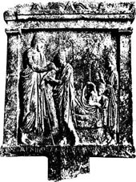
Fig 16 Miracle Cure in a Temple of Amphiaraus. 図16 アムピアラーオス神殿における奇跡治療
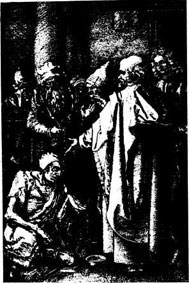
Fig 17 St. Peter Curing the Lame by Albrecht Drer. 図17 聖ペテロによる足不自由者の治療：デューラーの画
rer. 図17 聖ペテロによる足不自由者の治療：デューラーの画章註
(1) See the excellent article of Erwin H. Ackerknecht, Problems of Primitive Medicine, Bulletin of the History of Medicine, 1942, Vol. XI, pp. 503-521.
(2) Henry E. Sigerist, Medicine and Human Welfare, New Haven, 1941, p. 2 ff.
(3) James Henry Breasted, The Edwin Smith Surgical Papyrus, 2 Vols., Chicago, 1930.
(4) The Papyrus Ebers, the Greatest Egyptian Medical Document, translated by B. Ebbell, Copenhagen, 1937.
(5) Papyrus Ebers 99, 2-3.
(6) Adolf Erman, Zauberspriiche fr Mutter und Kind aus dem Papyrus 3027 des Berliner Museums, Berlin, 1901.
r Mutter und Kind aus dem Papyrus 3027 des Berliner Museums, Berlin, 1901.(7) An exhaustive study on Asclepius by Emma and Ludwig Edelstein is in course of publication at the Johns Hopkins Press.
(8) Matthew 12,28.
(9) Matthew 9, 28-30.
(10) Luke 18, 42.
(11) Matthew 20, 34.
(12) Mark 8, 22-26.
(13) John 9, 6.
(14) Matthew 8, 3.
(15) John 5, 8.
(16) Matthew 12, 13.
(17) John 9, 3.
(18) Luke 9, 1-2.
(19) Acts, 3, 6.
(20) R. Reitzenstein, Hellenistische Wundererzhlungen, Leipzig, 1906.
hlungen, Leipzig, 1906.(21) Plutarch, Caesar.
(22) James 5, 14-15.
(23) See Alphonse-Marie Fournier, Notices sur les Saints Mdecins, Solesmes, 1893, p. 17.
decins, Solesmes, 1893, p. 17.(24) Ibid., p. 18.
(25) See Henry E. Sigerist, Sebastian-Apollo, Archiv fr Geschichte der Medizin, 1927, vol. XIX, pp. 301-317.
r Geschichte der Medizin, 1927, vol. XIX, pp. 301-317.(26) See Dietrich Heinrich Kerler, Die Patronate der Heiligen, Ulm, 1905.--Adalberto Pazzini, I Santi nella Storia della Medicine, Roma, 1937.
(27) Werner Bernfeld, Eine Beschwung der Gebrmutter aus dem frhen Mittelalter, Kyklos, 1929, vol. 2, pp. 272-274.
ung der Gebrmutter aus dem frhen Mittelalter, Kyklos, 1929, vol. 2, pp. 272-274.(28) Elwood Worcester, Samuel McComb, Isador H. Coriat, Religion and Medicine, The Moral Control of Nervous Disorders, New York, 1908, p. 1.
(29) See in this connection Charles Reynolds Brown, Faith and Health, New York, 1924.
紀元前６世紀に活躍したミレトスのタレスは最初のギリシア哲学者であった。１冊の本も書かなかったが湿気が万物の本源であるとしたことで記憶されている。この短い命題がヨーロッパ哲学の始めである。単純な観察者は物の実在を認めることで満足したぶんそれらから実際の効用を引き出そうと努力する。しかしタレスは物について熟考した。毎日の経験から万物に原因のあることを知り世界もまた原因を有しているに違いないと結論し世界の解釈を探究した。彼の自然にたいする接近はギリシア人が「洞察する」という言葉で表したものであった。彼の物の見方は当然のこととしてではなく常に新たな驚異の念をもってした。彼が与えた解釈はそれ以前のように神話的なものではなかった。あらゆる生物は湿っていること動物の精液は湿っていること水が無いところには砂漠があることを彼は観察した。旅行して彼はナイル河氾濫の影響を見た。そして湿気は物の本源であるに違いないと結論した。
別の説明をした人もいた。アナクシマンドロスは無限が根源であるとしアナクシメネスは空気が基本的な要素であるとした。２人は「自然について」という本を書いてこの問題を研究しようとしまた実際の問題にも興味を持った。アナクシマンドロスは天球儀を作り世界地図を書きバビロニアから日時計をもたらしたと言われている。アナクシメネスは天文の研究に従事した。
古代における病気の哲学的解釈
次第にこれらの初期の研究者や自然の哲学者は研究を健康および病気の問題に拡げこの発展においてピュタゴラス学派は非常に重要な役割を果たした。政治情勢が原因でピュタゴラスはサモス島から南イタリアに移りクロトンで間もなく弟子たちに取り巻かれた。この学派の人々は魂の輪廻を信じ純潔な生活を送ることによって肉体の形をとるサイクルから救い出されることを求めた。彼らは厳しい精神的および肉体的な養生を行いこれによってあらゆる種類の障害に抵抗できるように考えた。（＊彼らは菜食主義の元祖である。）しかし異常が起きると肉体的には医薬により精神的には音楽によって失われたバランスを回復することを試みた。従って医学と音楽は彼らの研究サークルに取り入れられた。研究の過程においてピュタゴラス学派の人々は、弦の長さと叩いたときにでる音調の間に一定の関係を見出した。彼らは
我々は医学がどの方向に動くか知り始める。紀元前６世紀と５世紀にギリシア植民地、南イタリア、シチリア島、小アジア特にコス島とクニドス島に医師の学派が発達した。これらは我々の現在の意味におけるような建物、研究室、診療所、学則を持つ学校ではなくどちらかと言うと医師と徒弟の自由な共同体であった。彼らが書いたものはコレクションに収められ後にヒポクラテスが書いた物とされた。これらは健康とは何かや病気とは何かというような問題を提供しそれに答えなければならなかった。
答えはそれぞれ大いに異なっていたがすべて共通なものを持っていた。すべては呪術と伝説を締め出していた。病気は妖術の結果ではなかったし復讐に燃えた神の怒りが送る悪霊の仕業ではなかった。病気は自然の過程であって正常の生活過程と基本的に違うものではない。健康な人も病気の人も自然の一部でありソクラテス以前の哲学者が開発した方法によって他の自然現象と同じように研究され解釈されなければならなかった。
健康とは完全な釣り合いの状態と思われていた。健康が良い状態では自由に呼吸し、食物を消化し、尿を排泄し、動き、我々は気がつかずに当然のことと考えている。しかしこの釣り合いは大気の要因、間違った食事、間違った生活様式、その他の条件によって乱されることがある。そしてこの釣り合いの乱れは、痛み、熱、腫れ、機能障害、および病的症状となって現れる。
このような説明は正しいが医学で利用するにはあまりにも漠然としている。従って健康なときに釣り合っている身体の構成成分が何か医師は決定しなければならなかった。ある人によるとそれは体内で「活動的に働く力」であった。他の人によると、血液、胆汁、尿、のような体液であった。初期のヒポクラテス著作「人の自然性について」に2000年以上にわたり医学にきわめて大きな影響を及ぼした理論の萌芽を見出すことができる。これには人間の体内にある４つの重要な体液が書かれている。すなわち、血液と粘液、黄胆汁と黒胆汁であって相反した性質を持つ２組の体液である。ここにはピュタゴラスの影響が認められる。血液は心臓、粘液は脳、黄胆汁は肝臓、黒胆汁は脾臓から出ると言われた。
脾臓はどちらかと言うと目立たないし当時には系統解剖は行われていなかったので脾臓が主要器官の列に並んでいるのは奇妙に見えるかも知れない。説明としてこの理論はマラリア発生地帯で作り出されたことによるのかも知れない。脾臓肥大は慢性マラリアの症状であって非常に大きくなった脾臓は肝臓よりももっと容易に触診することができる。従って腹腔の左にある脾臓は右側にある肝臓と釣り合いが取れているように見えた。
この四体液学説はガレノスおよびさらにアラビア人とくに11世紀初頭のアヴィセンナが発展させた。これは非常に実用的な理論であって多くのことを説明した。それぞれの体液は基本的な性質を持っていた。たとえば血液は空気のように熱く湿っており粘液は水のように冷たく湿っている。黄胆汁は火のように熱くて乾き黒胆汁は土のように冷たくて乾いている。人間は自然の一部であった。自然は４つの元素からなり人体は４つの体液からなり元素と体液はともに基本的な性質を共通に持っていた（＊血液と空気、粘液と水、黄胆汁と火、黒胆汁と土）。それらは小宇宙（＊人間）と大宇宙の間の架け橋であった。
四体液の質と量が正常で良く混ざって「良混合」の状態が優勢のときに人は健康であった。しかし障害の結果、１つの体液が異常に優勢になると釣り合いが崩れて混合が悪くなる、すなわち「悪混合」（ディスクレイジア：悪液質）が優勢となり、個人は病気になった。次に起きたのは、後になって「自然治癒力」と呼ばれた生得の治癒力によって、生体が釣り合いの回復を努力することであった。病気の初期に未熟な体液は成熟、すなわち「調理」の過程を受ける。そして成熟すると不完全な物質すなわち「不健康物質」は尿、大便、痰の中にまたは膿として排出される。これによって釣り合いは回復し患者は治癒する。そうでなくもしも障害がひどく自然がこれに打ち克つことができないと患者は死亡する。
これらの見解から出る非常に重要で実際的な結論は医師が身体の生得の治癒力を助けるように全治療を行いそれに敵対するものを避けるようにと教えられることであった。そのため医師は適当な養生を処方しこの効果は薬物によって促進することができた。そうでなければメスに頼った。医師は膿瘍を切開することによって自然が膿を排出するのを助けこれによって病気の経過を短くし生体の力を節約する。
２世紀にガレノスは元素学説に基づいて精巧な薬理学システムを発展させこのシステムは殆ど1500年にわたって使われた(1)。体液は元素の性質を持っており病気の性質を決定するのでまた支配的な性質を持っていた。薬物は他の自然物と同じように一定の性質を持ちこうして熱く湿っている病気は冷たく乾いた薬物によって治療されるべきであった。彼は薬物を性質が違う４グループからなるとし各グループの薬物を４段階の強さにわけた。彼のシステムは中世およびアラビアだけでなく西欧医学において評判が高かった。医師にはっきりとした指示を与えたからであった。
四体液の学説はまた人のいろいろな体質型を説明するのに用いられた(2)。確かにどの２人の個人も同じではないが幾つかのグループに分けることができる。高い人と低い人、太った人と痩せた人、賢い人と愚かな人、短気な人と陰気な人、がいる。身体的な特徴と精神の性質が一定の組み合わせで起きることは古代に観察されていた。太った人はふつう性格が善良である。悪魔は決して太っては描かれない。こうすると善良な悪魔になるからである。体液学説はこれらの違いを説明するように見える。四体液のうちの１つが病気を起こさずに「生理的に」僅かながら優位を占めることがあると考えられた。それで「黒胆汁」が優位を占めるとその人はアリストテレスが「問題集」(3)の中で記述した
同様に、血液、粘液、黄胆汁が優勢を占めるとアラビア人はそれぞれ多血質、粘液質、胆汁質、と記載した。この見解は長いあいだ続き、知らないとシェイクスピアの劇を理解することができない。（図19、20）
４体質の学説をこのように詳しく論じたのはこれが医学思想に最も長いあいだ影響を及ぼし病気の哲学的解釈を最もはっきりと描いたからである。どの医学学説も観察と推理に基づいておりどの時期もその時に得られうる概念をもって考えている。体液学説は多くの優れた正確な観察の結果であった。この学説は論理的で健康や病気の多くの現象を説明し臨床家にとって価値ある手引きを与えた。この学説は我々の言葉の意味では科学的でない。誰も黒胆汁を見たことはないし、熱、冷、乾、湿、という性質は物理的な概念ではない。海水は乾、胡椒は熱、バラは冷、であった。性質は計ったものではなく観察に基づいて論理的に仮定されたものであった。古代に科学があり高度に発展した数学、物理学、天文学があった。生物学においても科学実験が行われたが健康と病気を解釈できる科学的方法は無くこれらの現象を理解するのに必要なものは哲学的考察によって満足させられた。
四体液の学説は決して古代における唯一のものではなかった。実のところ完全に発展したのはかなり遅く古代よりも中世においてはるかに強い影響を及ぼした。病気ついて別の解釈が行われていた。ヒポクラテス学派の医師たちは病気の発生において体液を最も本質的な要因と考えたが他の人たちは固体粒子をもっと重要とみなした。エピクロスの原子説の影響で紀元前１世紀にアスクレピアデスは新しい学説を発展させ新しい学派の基礎を作った。彼によると人体は原子からなっていて原子は結合して構造部分を作り原子は生体の孔の中で絶えず運動している。原子が自由に動くことができる限り健康は続く。運動が妨害されると病気が起きる。アスクレピアデスの弟子たちはその学説を仕上げ生命過程を２つの根本的な機能、すなわち収縮と弛緩、に帰した。彼らはすべての固体部分は収縮または弛緩の機能を持っていると仮定した。病気は身体のある部分における異常な収縮または弛緩に過ぎなかった。この学説は治療の簡単な方法を示したのでこの学派の弟子たちは方法学派と呼ばれた。古代のもっとも才能のある医師のあるものはこの学派に属した。
哲学的懐疑主義は医学においても反響があった。医師の一学派が紀元前３世紀にアレキサンドリアで生まれ健康と病気の本質を説明することを拒否した。彼らは医学の目的は病人を治すことであり全く異なる学派に属する医師たちでも同じ結果に達することを指摘した。彼らは経験すなわち彼ら自身の経験と文献にある他人の経験を手引きとし経験が不足すると類推によって行動した。彼ら経験学派の中に優秀な臨床医が居た(5)
これらの学派は何世紀にもわたり並んで存在した。中世初期には方法主義があるていど流行したが12世紀以後にアラビアの文献が西欧に知られるようになると四体液学説が支配的となった。四体液説はルネッサンスで極に達したがそのときに最初の恐るべき攻撃を受けた。攻撃はフィリップ・テオフラストゥス・フォン・ホーエンハイム、自称パラケルススによって行われた。
パラケルスス、イアトロ化学、イアトロ物理学
自然科学は大きく進歩していた。探険旅行は地理学の研究を促し長い航海は物理学と天文学に新しい問題を課した。動物界と植物界の新しい目録が作られ採鉱と精錬は新しい化学の研究を呼び起こした。現実主義への一般的な傾向があった。人々は伝統的な権威者を信用しなくなり自分自身で物を見ようとした。仮に自分たちの見た物が伝統に反したとしても自分たちの眼を信頼する勇気を持っていた。パラケルススは医師であったが科学者でもあり特に化学に通じていた。彼は鉱山および製錬所において仕事をし長い遍歴のあいだに多くの経験を積んだ。多くの化学薬剤の導入がたぶん彼の医学への実際的な貢献の最大なものであろう。彼は痛風、関節炎、結石病（彼は酒石酸病と呼んだ）のような病気に大いに興味を持ち人体の生理学過程および病理学過程と自分の研究室で観察した化学反応の間に著しい類似のあることに気がついた。病気のメカニズムを化学の言葉で説明することが出来ないだろうか？ これは伝統の四体液説では説明できなかったので彼は機会があるごとに最も激しく攻撃した。徐々に彼は化学の概念を使って自分自身の学説を発展させた。もちろん体液は存在し誰も存在を否定することは出来ない。しかしガレノス学派がそのせいにしたような役割を演ずることはない。重要なこととしてすべての臓器には、燃えるもの、蒸発するもの、灰として残る燃えないもの、の３つの成分があった。彼はこれらの３つの成分を象徴的に、硫黄、水銀、塩と名付けた。これにより彼は人体を構成する化学物質を得たがこれらの物質を使い化学反応を起こさせる錬金術者として別な概念を追加する必要があった。彼は１つの生命物質が存在することを仮定し「アルケウス」と呼ぶことにした。
パラケルススはルネッサンスの科学者であった。伝統的な医学理論に満足せず独自のシステムを展開した。それは科学的なつもりであった。しかし実際は科学の概念を使っていたにも拘わらず哲学的なシステムでありギリシア人のシステムと同じように思弁的なものであった。
パラケルススは病気のメカニズムを説明することでは満足しなかった。なぜ、どのようにして人は病気になるかを知りたかった。彼はこれらの問題を１冊の本で論じこの本に「パラミルム」という不可解な題をつけた(6)。この本は５つの「もの」（エンス：実体）すなわち健康と病気において人の一生を決定する５つの領域を取り扱っている。
最初のは「星のもの」である。各人は決まった時に生まれ我々が生きている歴史的時機は我々の肉体の一生に大きな影響を持つ。次に「毒のもの」がある。すべて我々は一定の物理的環境に生きていてそれから物質とエネルギーを得ている。しかし自然からはまた毒が来て病気を起こす総ての異常な刺激が来る。自然から来る総てのものは従って、良いものと悪いもの、食物、毒、治療薬、である。効果を決定するのは量である。第３の領域、すなわち「自然のもの」は総て各人が異なることを意味している。各人はそれぞれ独自の天性を持って生まれ従ってその運命は自分の中に持っている。しかし人はまた精神的な存在でありこれにより第４の領域すなわち「精神のもの」から病気の原因が出てくる。
これはパラケルススの図式によると人間が生きている四重の階層である。もしも人がこれに良く適応していると健康状態にある。しかしこれらの４つの領域から病気が起きることがありそのときに人は第５の領域すなわち「神のもの」において正常の状態に戻る。
パラケルスス自身は医学の哲学を求めた科学者であった。彼は患者の治療で満足せず病気の状態と原因を問いただした。彼は観念論者であり生気論者であった。死後になって著書が知られるようになって影響が感じられた。17世紀のファン・ヘルモントなどイアトロ化学者（＊イアトロは医学、医療を意味する）は彼を先駆者とみなした。彼らは健康と病気を化学によって説明しようとしたが基本的には自然哲学者に留まった。ラヴォアジエが化学に定量的な方法を導入するまで生理学を化学的観点で正確に解釈することは不可能であった。
ラヴォアジエは1794年に死亡し化学革命が起きたのは比較的に遅かった。化学は長いあいだ神秘主義の重荷を負わされていた。錬金術は時に宗教運動的な性格を持ち化学物質の引力と斥力はシンボルの意義を持つものとされた。錬金術者は「若返りの秘薬」と１つの金属を他の金属に転換する「賢者の石」を探し求めた。化学的見解と占星術的見解を結びつけるのは興味あり容易なことであった。パラケルススは化学に新しい任務を与えて化学を科学的な学問にしようと試みたが彼自身の神秘主義は多くの追随者を誤らせた。
物理学は数学に基礎をおくので条件は異なった。ガリレイは1642年に死亡し物理学は１世紀以上も化学に先んじていた。ハーヴィは1628年に血液循環を記載し物理学の法則を適用することによって生理学の難しい問題の実験的解決が可能であることを示した。次の章で彼の研究をもっと詳しく述べることにしよう。ハーヴィの発見は１度それが受け入れられると深い感銘を与えた。物理学が血液の運動を説明できるのならば物理学は他の生理学的過程や更に病理学的な過程すらも説明できそうであった。
17世紀を通じて医師たちは健康な時と病気の時の生命機能を物理学の観点から積極的に研究した。デカルトの哲学は彼らに非常に強く影響した。イアトロ物理学者すなわちイアトロ機械論者の欠点は彼らが性急過ぎたことであった。ハーヴィが偉大であったのは大発見をしたことだけではなく自分の限界を知っていたことであった。彼は１つの問題だけを解決し他の問題は未解決のまま残しておく勇気を持っていた。彼は実験的に示しうることだけを説明し他の質問に回答は無いと認めることを恐れなかった。この点で彼は真の科学者であった。
他の追随者たちは違っていた。彼らは健康と病気のすべての現象を隙間なく解釈する完全なシステムを確立することに努力した。歯は食物を切るはさみであり磨りつぶす石臼であると言ったときにこれは容易に確かめられる機能であって真理から離れてはいなかった。しかし肺が１組のふいごであるとか腸が篩であると言うと比喩的に述べているのであり思弁に耽っていたことになる。
こうしてイアトロ化学者に起きたと同じことがイアトロ物理学者にも起きた。彼らは新しい科学である物理学の概念を利用して些細な問題の解決には貢献したが彼らの接近方法は哲学的であり彼らのシステムは短命であった。
唯物論と生気論
医学の進歩は非常に遅く無限に多くの問題が解決されていなかったし今でも解決されていない。これは非常に不満足なことであり従ってすべての時代の医師たちは科学知識を哲学的な思弁で補う傾向があった。医学や科学の経験が哲学に反映したのと同じようにすべての哲学システムは医学に影響した。最近の数世紀に行われた医学の進歩を見ると２つの基本的な近づき方が互いに争っていたことが判る。一方には一般に唯物論者と呼ぶ人たちが居た。科学が進歩するにつれて人体は無機の自然を構成するのと同じ元素からなることが明らかになった。化学者ヴェーラーは1828年に尿素を腎臓を使わずに実験室で合成することに成功した。このようにして有機化学と無機化学の境界を取り払い動物の作る有機物質は他の物質とは根本的に違わないことを示した。生命の多くの機能は物理学的な過程または化学的な反応であることがますます明らかになり知識が増えるに従って物理学と化学の境界は事実上に取り払われた。
この唯物論的な近づき方は極めて実りが多かった。その後になされた多くの進歩に貢献し信心深い科学者すら実験室に入ると観念論を忘れて唯物論の線で研究を行った。生理学や病理学の多くの問題がこのようにして解決されたが１つだけ解決されなかった問題が残った。生命そのものの問題であった。どのようにして死んだ食物が生きている物質になるのだろうか？ どのようにして受精卵から生体が発生するのか？ どんな力によって細胞は失った組織を再生するのか？
性急であるべき理由は無い。科学はまだ非常に年若い。200年前に電気は殆ど知られていなかった。今日では広範囲に利用しているだけではなく物質構造についての観点を革命的に変化させた。100年前に有機化学はほんの初まりだけであったが今日では無数とも言える有機物質に精通しているだけでなくそれらを合成することができる。化学は粗雑なものから微量化学になりつつある。無限に少量、分子１個すらの物質の効果すら見ることができるようになりつつある。病原ウィルス結晶化の最近の研究は新しい視界を広げつつある。実際、いつの日か生命の問題を科学的に解明できない理由は無い。
しかし人々はいつでも性急であり自分たちの知識で解明できなかったものを説明する概念をつくりだしてきた。アリストテレスは生命を持っている自然物と持っていないものを区別した。彼によると生命は自分を養う力および独立した成長と老化であった。物が生きているということはプシケすなわち精神と彼が呼んだ本源物質をそれが持っているからであった。彼は種々な形の精神を区別した。植物性の精神は栄養と生殖に責任をもつものであり動物性の精神は運動と感覚を支配するものであり人に特有な理性の精神は人が意識を持ち知性ある存在にさせるものである。アリストテレスは生気論者であるとともに目的論者でもあった。身体の各部分は一定の目的のため、各器官はそれぞれ異なる機能のため、身体は全体として精神のために、作られたと考えていたからである。ガレノスおよび彼の追随者は生命力を持つ本源物質を信じ霊魂と呼んだ。
アリストテレスとガレノスの権威が衰え機械的な見解が生物学を支配するようになると生気論が生き返ってきた(7)。ラ・メトリは1748年に「人間機械論」を刊行した。この本は身体を可能なかぎり最も幼稚な形で解釈した。ヴォルフは1759年に「発生理論」を書いて機械論者たちを攻撃した。彼は生体を発生させ身体の機械を作りあげ動かす「絶対的な力」を信じた。1789年にブルーメンバッハの「形成本能について」の論文で生気論は頂点に達した。ブルーメンバッハは従来の３つの活力、すなわち収縮性、興奮性、感受性に、第４の「形成力」を加えた。これは生体の形を作り壊れたときに再生する推進力である。
生気論は19世紀初頭のドイツで盛んであった。ロマン主義と自然哲学の時代にあたり医学は哲学的思弁に浮かれていた。フランスの医師たちは患者のベッドサイドで病気を学び研究室で死体解剖を行っていた時にドイツの医師たちは机に向かって病気および全世界の性質について論文を書いていた。彼らのばかげた論文に目を通すことは意味が無い。その当時に刊行された論文の表題はそれらの思想を反映している(8)。
・比較観念論者病理学。病気を生命の低い正常段階への生命概念の逆行として示す、１つの試み
・病気の構造についての考察
・病気の博物学総論についての予報
・土壌病因論体系
・治療術の内部構造について
・医学の現在の改革を行う最も安全な基礎としての医学哲学史の研究についての予報
・パイエオン、医学およびその歴史の通俗哲学
・化学および医学の問題に応用された自然の形而上学からの公理
・医学の二元論体系、生命ある動物体の力におけるアンティテーゼの教義(9)
・病気の構造についての考察
・病気の博物学総論についての予報
・土壌病因論体系
・治療術の内部構造について
・医学の現在の改革を行う最も安全な基礎としての医学哲学史の研究についての予報
・パイエオン、医学およびその歴史の通俗哲学
・化学および医学の問題に応用された自然の形而上学からの公理
・医学の二元論体系、生命ある動物体の力におけるアンティテーゼの教義(9)
これらの本はラエネックがフランスで聴診および胸部疾患についての古典的な論文を発表している頃に書かれた。ドイツは1840年にこの悪夢から脱しヘルムホルツによって医学は実験室へと方向転換した。ドイツ医学は着実に真っ直ぐに発展することはなかった。いつでも１つの極端から他の極端に進んだ(10)。これは弱点であるとともに利点であった。ハラーがイギリス人について「この人たちは引き受けたことを良かれ悪しかれ完成する」と言ったことはドイツ人にもっと良くあてはまる(11)。
哲学の観念論と抑制の無い思弁の時期に続いてドイツは哲学の唯物論の時期を持った。フォイエルバッハ、マルクス、エンゲルス、フォークト、ビュヒナー（生理学者）、がその代表である。医学は極端に科学的になり、世界で指導的地位を得た。次に振り子は逆に振れた。ドリーシュ、フォン・ユクスキュルなどは新生気論を発展させた。新ヒポクラテス主義、新パラケルスス主義など基本的にロマンス主義的および神秘的な運動が正面に出た。これらはヒトラー主義の前駆者であった。ドイツは再び神秘主義の波の中に落ち込んだ。しかし過去に見られたようにドイツはそれから脱出するであろうし反動がどの方向を取るか推測に難くない。
国の政治哲学がその科学に大きな影響を及ぼすことを歴史は教えてくれる。医学は理性的な主題であり従って中世、ドイツのロマン主義時代、および再び現在のようにファシズムのように基礎となる哲学が神秘主義の場合に医学は繁栄することができない。ファシスト諸国において医学を崩壊しないようにしているのはそれらの国の帝国主義プログラムである。現代の戦争は高度に科学的な事柄であり医学からのあらゆる援助を必要とする。総力戦に準備するためにファシスト医学はある程度は地に固着して神秘的な思弁の中に自己を失わないで済んでいる。
これに対し、基礎となる哲学が理性的な所では医学は最上の機会を持っている。18世紀の合理主義の上に築かれたアメリカ合衆国がその例である。ソヴェト連邦もそうでありすべての面において科学の線に沿って社会を組織する試みが史上初めて行われている。
医師は哲学研究に従事するのを恐れてはならない。もし狭い専門家以上の者になりたかったら広い見通しをもって医学を眺め、医学が我々の知識体系において占める位置を知らなければならない。もしも彼が真の科学者であれば思想は訓練され無制限の思弁の中でも自分を見失うことはないであろう。
過小評価するとしたらこれらの要素を認める聖職者が競争相手となるであろう。
 章挿画
章挿画
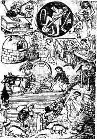
Fig 18 The Children of Saturn: early 15th century. 図18 木星の子供たち：15世紀初頭
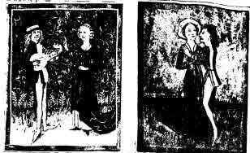
Fig 19 The Four Temperament (left: Phlegmatic & right: Sanguine). 図19 ４つの気質（左：粘液質、右：多血質）
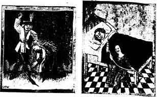
Fig 20 The Four Temperament (left: Choleric & right: Melancholic). 図20 4つの気質（左：胆汁質、右：憂鬱質）
章註
(1) Henry E. Sigerist, Studien und Texte zur frhmittelalterlichen Rezeptliteratur, Leipzig, 1923, pp. 11-16.
hmittelalterlichen Rezeptliteratur, Leipzig, 1923, pp. 11-16.(2) Henry E. Sigerist, Wandlungen des Konstitutionsbegriffs, Internat. rztlicher Fortbildungskursus, 19281 (Karlsbader rztliche Vortrge, Band 10) Jena, 1929, pp. 97-108.
rztlicher Fortbildungskursus, 19281 (Karlsbader rztliche Vortrge, Band 10) Jena, 1929, pp. 97-108.(3) XXX, 1.
(4) E. Panofsky and F. Saxl, Durers "Melencolia I," Leipzig, Berlin, 1923.
(5) Karl Deichgraber, Die griechische Empirikerschule, Berlin, 1930.
(6) Henry E. Sigerist, Paracelsus in the Light of 400 Years, The March of Medicine, New York, Columbia University Press, 1941, pp. 38-40.
(7) See Hans Driesch, Geschichte des Vitalismus, Leipzig, 1922.
(8) See Ernst Hirschfeld, Romantische Medizin, Kyklos, 1930, vol. 3, pp. 1-89 with good bibliography. See also Martin Heun, Die medizinische Zeitschriftenliteratur der Romantik, Diss. Leipzig, 1931.
(9) Full titles in Hirschfeld, l.c.
(10) Henry E. Sigerist, Heilkunde in: Sachwrterbuch der Deutschkunde, Berlin, 1930.
rterbuch der Deutschkunde, Berlin, 1930.(11) Albrecht Hatters Tagebcher seiner Reisen . , . 1723-1727, herausgegeben von Ludwig Hirzel, Leipzig, 1883, p. 139.
cher seiner Reisen . , . 1723-1727, herausgegeben von Ludwig Hirzel, Leipzig, 1883, p. 139.前の２章において病気の宗教的ならびに哲学的な解釈を論じた。科学的な取り扱いは医師に強固な基礎を与える意味で大きな前進の１歩であった。病気は哲学的な言葉で論理的に解釈されて詮索好きな心を満足させたが哲学理論を実地に試そうとすると医師は窮地に捨て置かれることになった。医学は「技術」である。医師の仕事は自分が生きている世界を解釈することではなく仲間の健康を守り回復させることである。医師は種々の現象を関連させるための理論を持たなければならないが理論は実地に応用できるものでなくてはならない。理論は医師に手引きを与えて患者の治療を効果的にできるものでなければならない。
17世紀にイアトロ物理学者の学派はバリヴィにおいて頂点に達した。イアトロ物理学は因果関係に関してバリヴィが必要とするものを与えた。しかし病人を治療するにあたってバリヴィはヒポクラテスの学説すなわちまったく別の学説に基づく原理に従ったと包み隠さずに白状した。学説と理論の間にこのような割れ目があるときには医学は進歩できなかった。医師ができることは経験に基づいて行動することであった。
医学において経験が大きくものを言うことは疑いが無い。薬理学の学説は変化したがヒマシ油は何千年にもわたり有効に使われた。キナやジギタリスは一般的な薬で医師たちによって経験的に使われた。しかし医学が科学的な薬理学の学説を持つに至って認められてきた薬品の効果を説明できるだけでなく新しい薬を組織的に見つけ出すことが出来るようになった。同様に経験はマラリアが沼の近くで発生することを教えた。夏と秋に沼から有毒な蒸気が出るというのが学説であった。これは論理的な仮説であって科学的な事実ではなかった。誰もこの蒸気を捕捉したり分析することが出来なかったからである。この理論は間違っていたが役に立つものであった。これに基づいて16世紀から18世紀にかけて教皇たちはポンティノ湿原の一部を排水して好結果を得た。しかしマラリアは蚊に伝播される微生物によって起こるという科学的事実が確立されてこの病気ともっと組織的に闘うことができるようになった。
医学の進歩は極めて遅かった。医学は他の科学の発達に依存しシンガーが非常に適切にも「機械的な世界」と呼んだ建造物の一部だったからである(1)。１歩１歩非常に徐々に進みどの時代にも古代の学説のように完全で論理的に総合されたシステムを作ることは出来なかった。多くの疑問符は現在でも残っているが科学の１つ１つの進歩が医学をゴールに近づけた。
解剖学
病気は機能障害として出現する。従って新しい科学的な病理学を確立する前に正常な機能の研究が必要であった。言い換えると病理学の前に生理学が先行しなければならなかった。機能は器官の生命力が示すものであるので新しい解剖学の基礎がおかれなければ新しい生理学は発展することができなかった。このことはルネッサンス時代に起き医学の新しい時代の始まりを印しづけた。もちろん解剖学はルネッサンスよりずっと前に存在した。料理や生贄のために動物を解体する人はある程度の解剖学的の知識を持っていた。ギリシア人は他の自然対象を研究したと同じように動物体の構造を研究した。多種多様な動物を解剖ししばらくの間であったがアレキサンドリアでは人間の死体も解剖した。しきたりによって犯罪人の生体解剖も行った。しかし中世に伝えられたギリシアの解剖学は主として動物の解剖学であった。
14世紀初頭から人の死体の解剖は大学の医学校で公開された。これらの解剖は研究が目的ではなく展示のために行われた。伝統となっている権威への信仰はまだゆるがず古代の解剖学は改められなかった。15世紀の終わりから16世紀にかけて懐疑主義が成長するとともに事情が変化し確立されていた権威にたいして公然と反抗する新しい傾向が発展した。古代の解剖学は動物の構造を記載したが人文主義者が興味を持つ人間の構造を記載していなかったことが判った。人文主義者は人間を知りたいと思ったが伝統は果たせなかったので彼らは自分で研究しなければならなかった。美術家と医師たち、レオナルド・ダ・ヴィンチとヴェサリウスのような人たち、が先頭に立って１体また１体と解剖しペンと絵筆をもって所見を記載した。
新しい記述的の人体解剖学が確立された。1548年にヴェサリウス（図21）はバーゼルで「人体の構造についての７章」を刊行した。ヴェサリウスは自分が重要な貢献したことを知っていたが彼の本の意義は彼が認めたよりもずっと大きかった。以前のどの本よりも完全により正確に人体の図を示しただけではなく新しい医学すなわち解剖学に基づく科学的医学の基礎となるものであった。
16世紀を通じて解剖学の研究は活発に行われ人体構造がより詳しく知られるほど個々の器官の目的と機能を明らかにする欲望がより著しくなった。古代の生理学は生命現象を説明したが医師たちはますます解剖学の言葉で考えるようになり身体を各器官を部品とする機械とみなすようになった。解剖学的に見てあり得ないような理論はもはや充分なものとはみなされないようになった。解剖学は静止的なものから次第に動的な科学すなわち「生きた解剖学」になった。
生理学
ハーヴィが1628年に血液循環を記載したとき生理学に転換点が来た(2)。発見の意義を充分に理解するために血液循環についてどのような見解がこれまでとられてきたか思い出さなければならない。すべての生理学の出発点は生きてゆくのに必要な食物と空気のような自然な物質が存在するという基本的な観察であった。食物が無いと生体は飢えて死亡し空気が無いと窒息する。しかし人体には生命に必要な物質がある。これは生体のどこにでも見つかるものでどこの傷からも流れ出る血液である。生理学はこれらの物質のあいだの関係で始まった。ハーヴィー以前に生理学を支配した学説はガレノスが提唱したものであった。ガレノスによると食物は胃で消化され腸に行き静脈を通って肝臓に運ばれる。肝臓で食物は血液に変わり自然精気を加えられる。この自然精気は今日われわれが身体の植物機能と呼んでいるものを調節している。暗赤色である肝臓の血液の一部は全身を流れその一部は大静脈を通って心臓の右心室へ入りさらに分岐する。血液の一部は肺に行きそこで身体の老廃物が取り除かれる。これによって呼気は吸気と違うことが説明される。血液の他の部分は心臓の隔壁を通って左心室に入り肺静脈を通って肺から来た空気と混ざる。この空気と血液の混合物から動物機能を制御する精気が生ずる。これは労働または発熱の結果として身体が非常に熱いと呼吸が増すことを説明する。心臓の左側からの血液は肝臓からの血液と違って明色でありこれは動脈を通って生体内に流れ込み一部は脳に行って神経機能を調節する動物精気で満たされる。
これは食物、血液、および空気のあいだの関係を論理的に説明する非常に総括的な学説であって打ち破るのは困難に見えた。これは質的なものであって非常に正確な観察から思弁によって導かれたものであった。
ハーヴィの接近方法は違っていた。彼は解剖学者であり人体だけでなく種々の動物を解剖していた。伝統に従ってアリストテレス学派であったがガリレイと同時代であり力学の観点から考えた。心臓の隔壁は堅い筋からできていて、たぶん血液は通ることが出来ないだろうことを彼は見出した。彼は心臓の
ハーヴィの学説は１つの重大な欠点があった。毛細管はまだ知られて居らず、動脈から静脈への通路があるに違いないと考えてハーヴィは仮説を使った。彼の理論は数学的な事実に基づいていたので安心してこの仮説を使うことができた。事実、数十年後に毛細管はマルピギによって顕微鏡を使って発見された。
ハーヴィの学説はガレノスのものに比べると遙かに不完全であった。食物と血液の関係も呼吸の機能も説明しなかった。ハーヴィは実験的および数学的に攻撃できる１つの問題だけに限定した。この問題を完全に解決しただけで、他の問題はその後の研究に残した。これは科学的なやり方である。
病理学と臨床医学
解剖学と生理学はすぐに新しい医学のシステムを構成することにはならなかった。17世紀に医師たちが新しい科学の概念を使うようになっても、病気はなお伝統的な、すなわち哲学的な方法によって解釈された。しかし解剖学と生理学が発達して身体の構造と機能がより深く知られるようになって、病気の問題は次第に科学的に取り扱うことができるようになった。1761年にモルガニが「解剖学的に研究した病気の座と原因について」を刊行したときに大きな進歩がなされた。病気で死亡した人の身体を解剖して解剖学者たちは癒着、潰瘍、腫瘍、結石のような異常状態を見出した。モルガニはこれらの所見をその人の致命的な病気の過程で観察された症状と関係づけ始めた。その後になって用いられ非常に大きな成果をあげることになった医学の研究方法を彼は確立した。すなわち臨床症例と剖検記録の資料の比較である。病気が局在し「座」を持ちそれが臓器にあるという結論に彼は到達した。病気になった臓器は正常の臓器とは構造が異なりその構造が異なるので機能もまた異なる。この異常な機能が病気の症状として現れる。解剖学的症状の性質によって主要な病気の種類が決定される。
後になり19世紀初頭になって病気はビシャによって組織に突きとめられさらに後になって1858年にウィルヒョウによって細胞にまでたどられることになった。
生理学と同じように病理学が解剖学に基礎を置くようになり未解決の問題は残っているが大きな進歩がもたらされた。病気の実体はずっと厳密に定義されるようになった。肺炎、胃潰瘍、肝硬変、子宮がん、は単に臨床症状群だけによってではなく典型的な解剖学的変化によって特徴づけられるようになった。病理解剖学は科学的に興味深いだけではなく大きな実際的な成果をあげた。医師は患者にどのような解剖学的変化の起きているか知ることができて過去よりも病気の診断を正確につけることができるようになった。そして正しい診断をつけることによって医師は予後について価値ある手引きを得られるようになった。とくに統計学的な方法が臨床の分野において広く用いられるようになってからこれは顕著になった。また診断はその後の治療を大きく決定することになった。
この新しい傾向は打診と聴診のような理学的診断の進歩に貢献した。胸を叩いたり心音や呼吸雑音を聴くことによって、医師はこれらの臓器の解剖学的状態について見解を持つことができた。眼底鏡、喉頭鏡のように巧みな器具が発明され医師たちは器官の中まで覗いて変化を直接に見ることができるようになった。電球や鏡をすべての体腔に挿入し医師の目を気管支、胃、十二指腸、膀胱、直腸の中まで届かせられるようになった。この進歩における勝利はＸ線の診断目的への応用であった。Ｘ線は人体のほとんど総ての部分を見ることができるようにした。解剖学的な変化を見て写真に記録することが出来た。
治療学
ルネッサンス以後の科学医学の進歩を眺めると新しいシステムで解剖学が中心的な位置を占めていることが判る。解剖学的な方法は17世紀に生理学に、18世紀に病理学に、19世紀に臨床医学に入り込んだ。医学で１つの分野だけにこの新しい方法が入り込んでいなかった。治療学である。病気の治療はなお伝統的な線に従っていて進歩は非常に少なかった。幾つかの新しい薬品が経験的に導入されたが19世紀の初頭でも病気の治療はヒポクラテスの時代よりあまり進歩していなかった。有名なウィーン学派は治療ニヒリズムによって著名であり医師は２回だけ患者に興味を持つと言われた。診断をするときと死体解剖をするときであった。解剖病理学が解剖的な治療を要求することは完全に明らかでありこのことは19世紀中葉以後における外科学の目覚ましい進歩を説明している。外科学は技術であった。古代からの進歩は遅かったが着実であり解剖学および技術の進歩によって恩恵を受けていた。事実、外科学の教授と解剖学の教授はふつう同じ１人の人であった。19世紀の初頭に外科学はまだ少数の古典的な手術に限られ内科治療が不可能であったり良い結果が得られなかった時だけ行われた。しかし医師たちが解剖学の言葉で病気を考えるようになると彼らの外科学にたいする態度は変わった。外科学はもはや最後の手段ではなく治療における主要な地位を得た。潰瘍や腫瘍を切り取ることによって外科医は多分その病気そのものを取り去りそれによってその臓器の解剖学的構造を正しくした。このような外科医にたいする態度の変化は外科学の進歩を妨げていた２つの障害すなわち疼痛と２次感染が全身麻酔と無菌法の導入法によって取り除かれたのは何故かと言うことを説明する。しばしば職人と軽蔑されていた外科医は最も目覚ましく役立つ最も人気ある医学専門家になった。
薬理学すら19世紀の終わり近くになるとある程度は解剖学的になった。薬剤はもはや経験のみによって与えられるのではなかった。ある種の化学物質は人体の特定の細胞にはっきりとした親和性を持つことが見つかっていたからであった。薬剤を与えるに当たって医師たちは特定の臓器や組織を狙うことになった。
１つ１つの医学分野をつぎつぎと攻略した後で解剖学の時代は終わりになった。解剖学はなお医学の基礎であるし将来もそうであり解剖学的な考え方は重要な役割を果たすであろうが我々は今日では主として機能の見方で考え我々は新しい時代すなわち生理学の時代の中にいる。
微生物学
病理解剖学は多くのことを説明することができた。肺炎のときに肺にどのような変化が起きるかこれらの変化が病気の症状をどのように起こすかを説明した。しかし肺炎が何によって起きるかを説明しなかった。急性感染症とくに流行病に人々は注目した。他の病気は個人の誤った食事や生活によるものと理解することができた。しかし流行病のときには全く異なる人々、男と女、若者と老人、強い者も弱い者も、大きなグループが同じ病気に罹った。宗教的な解釈を捨て去った後に医師たちは自然の原因を探し求め、人の環境、とくに宇宙、土地、大気の状態がこの病気の原因であると考えた。ある種の伝染病の性質が自然において優勢になるとこれに曝された人たちは病気になった。
しかし次に流行病は人から人に拡がることもまた見られた。これはペストの流行において特に顕著であった。病人または病人の衣服に触った人自身が病気に罹った。このような観察から得られた結論は病人およびその排泄物や直接の周囲の物体に病気を起こす物質が存在することであった。中世の流行病対策はこの物質を破壊することであった。しかしこの物質は何であったろうか？
寄生虫の現象は最古の時代からよく知られていた。腸内寄生虫はしばしば東洋で人や動物の排泄物に見ることができた。17世紀になって顕微鏡は滴虫やレーウェンフークが自分の舌で見つけた細菌にいたる肉眼でみることが出来ない非常に小さな生物の世界を開いた。伝染性の物質はこのように生きている小動物からなるのだろうか？ この考えは数世紀にわたって解決されなかった。
1840年にドイツの解剖学者ヘンレは病理学の論文を発表しその第１部の「
もしも瘴気と接触伝染源が同一の病気を起こすならこれらは同一でなければならないとヘンレは論じた。そしてさらにこれらは有機物質であるだけでなく生きているに違いないと結論した。もしも生命の無いものなら患者の体内で使い尽くされる筈なのに病気物質は寄生虫のように病人の体の中で成長し増殖するからである。このような物質が知られていた。1885年にカニャールはアルコール発酵を起こす酵母は死んでいる物質ではなく真菌であることを示しこのような真菌は大きな化学変化を起こすことが明らかになった。
20年後にパストゥール（図22）が仕事を始めたのはこの段階であった。種々の発酵を研究して彼は違う種類の菌である「細菌」も酵母と同じような効果を示すことを見出した。彼は細菌がどの場所にも存在していることを示しそのうちの多くは病原性があり生体に侵入して生体内で寄生虫のように生きて病気を起こすことを見出した。1876年にコッホは炭疽病を起こす細菌の生活環を記載した。接触伝染源の性質にはもはや疑いは無く幾つもの微生物が次々と病気の特異的な原因であることが見出された。
細菌学が感染症のすべての問題を解決したわけではなくある病気は非常に細かい目のフィルターを通過するもっと小さな病原体いわゆるウイルスによって起きることが示された。ウイルスは主として核酸（＊構成分としてより重要なので追加）とタンパク質からなっている。まだ未解決の問題は多く残っていて成果をあげることができる。
これらすべての発見の成果は莫大なものであった。感染性の病気の直接の原因がひとたび知られるとそれと根本的に戦うことが可能になった。衛生学と公衆衛生学は新しい基礎の上に置かれた。外科学は２次感染の悪夢から解放された。ワクチンと血清によって数が増加している病気にたいして人々を免疫することが可能となった。最後の章で人々の健康にたいするこれらの発見の意義をもっと詳しく論ずることにしよう。
化学療法学
すでに述べたように18世紀末に化学の大革命が起きて化学は量的な学問となった。これはほんの昨日のことであって150年の短いあいだに化学またはむしろ物理・化学（＊物理と化学？）は我々の生活に革命をもたらした。何千年ものあいだ、人類は基本的に必要なものを自然が供給する原料や農業産物に依存していた。今日では肥料を空気の窒素から作ることができる。我々はもはや原油の自然埋蔵に依存しないでガソリンを合成することができる。我々はゴムをアルコール、油、その他の複雑な化合物から作ることができる。我々は織物のための繊維を実験室で作ることができる。合金やプラスティックは単なる天然物の代用品としてではなく、天然のものより優れた人工のものとして、作ることができる。新しい工業が生まれ、物理・化学研究者の努力には限りが無い。化学は生物学において生理学および病理学の新しい分野を開き健康および病気の生体における代謝の研究を可能にした。いろいろな臓器の機能的状態について知ることができる検査法が考え出された。嘗ては経験によっていた栄養学が生化学によって科学となり、ホルモンやビタミンの機能が関係する多くの非常に稀な病気の原因とメカニズムもまた生化学によって解明された。しかし生化学は病気を説明しただけではなかった。生化学は病気の予防と治療の新しい方法を準備した。
化学はついに新しい薬理学の核心となり薬理学は正常および病気の生体にたいする化学物資の作用を研究した。薬理学は身体のある部分と化学物質のある反応グループの間の親和性を発見して今では期待するような効果をもつ化学物質を系統的に作ることができるようになった。
現在、化学療法は印象的な結果を与えている。細菌学は感染症の原因を説明して個人の防護に重要な方法を与えた。しかし病気が個人に取りつくと医学は多くの場合いまでも無力であって何千人もの人たちが毎年、肺炎、脳脊髄膜炎、産褥熱のような病気で死亡している。20世紀の初めにエールリッヒは患者を殺さないで細菌を殺す化学物質を系統的に探し始めた。1910年にエールリッヒはサルヴァルサンを作ってこれはスピロヘータやトリパノゾーマのようなある種の原虫に非常に有効であることが示された。しかし我々の主な敵である細菌はひとたび体内に入って隠れてしまうと化学物質に頑固に抵抗するように見えた。しかしついにドーマクは薬剤プロントジールの作用を発見した。これは後に発展してサルファニルアミドとして知られるようになった。これは1935年であってほんの昨日のことであるが最近の数年のあいだに何十という高度に有効なサルファ剤が作られた。近い将来にもっと多くのこのような薬剤の発見されることが希望される。（＊ペニシリンは1941年に臨床で有用性が示された。）
細菌学と化学は感染症にたいする主要な武器となったが生化学には多くの病理学の問題の解決が期待できるであろう。今では子供および若者の急性疾患は少なくなり多くの人々は老年になり成人および老人の慢性病すなわち消耗病が前面に出るようになっている。合衆国で心臓および循環器系の病気が主な死因である。我々はこれらの病気をよく知っているが充分ではない。もしも生化学がこれらの詳細なメカニズムを解明できたら出来ない理由は無いだろうが予防したり少なくとも遅くすることが出来るであろう。
ガンは今でも未解決の問題である。ガンの罹病は人口の老齢化に比例して増えている。多くの初期ガンは外科手術、Ｘ線、ラジウムで治癒が可能であるが原因と病因が判らない限り大規模な攻撃はまだ不可能である。まだ我々が気付いていない生物学原理に直面しない限り生化学がまたこの問題を解決するかも知れない。ガン細胞の生物学を理解するのは極めて困難である。反応が他の細胞とは大きく違うからである。分化した生体で細胞は社会的な共同体を作っている。細胞は分化していて完全に共同している。ガン細胞は反社会的である。独自の道を歩み独自の代謝を行い寄生虫のように宿主を犠牲にして増殖し宿主を破壊しそれによって自己も破壊する。これはあらゆる生物の原則に反していて従って理解が困難である。
医学の進歩を眺めると最近100年になされた進歩が莫大なものであることを認めなければならない。この進歩は物理学、化学、または生物学における発見を利用していて他の科学の進歩と並んでいる。この進歩は着実なものであって最近の数十年になされたことを理解しようとしたら1892年にオスラーの内科学教科書第１版を読んで現在の知識と比べるとよい(4)。しかし最近100年の進歩はその前の数世紀の仕事が無ければ不可能であったことを我々は忘れてはならない。最近の進歩は長く困難な発展の頂点である。
100年前には医学研究のセンターは幾つかしか無かった。今日、研究は世界中で何万人もの科学者によって行われている。毎年、何百万もの金が研究に使われている。全体の経済と同じようにこの領域でも多額の金が費やされている。計画性が無く協調性に欠けているが基礎は広いし研究に使われている知能とエネルギーは非常に大きいのでもっと多くの成果を期待することができる。
病気の科学的解釈はまだ非常に若く未熟である。知識にはまだ莫大な間隙があり今日の真理は明日には誤りとなるかもしれないことを知っている。しかし我々は確信をもって将来に直面することができるであろう。我々は知識の間隙を宗教的な夢や哲学的な思弁ではなくて科学的事実によって埋めているからである。いつものように作業仮説を使用してはいるが新しい事実の命令によっていつでも作業仮説を捨てる用意がある。
科学的事実の評価と解釈は時間が経つと疑いも無く変化するであろう。今日には本質的と考えられるものが明日は２次的とみなされるかも知れない。結核感染において体質的な要素が結核菌よりも重要になるかも知れない。しかし結核菌が無ければ結核にならないという事実は残るであろう。
病気に関する我々の現在の学説はまだ非常に原始的であり確かに時間が経つあいだに新しい学説が作られるであろう。物質構造や有機的生命の物理・化学、および神経インパルスの本質をもっとよく知ることによって新しい展望が得られるであろうが将来の学説は現在に得られている科学的事実を用いるものであろう。
病気の宗教的な解釈は夢である。哲学的な解釈は気に入らなくなったら屋根裏に追いやる絵のようなものである。しかし科学的な解釈は個々の石を将来の建設に使うことができる建物である。
医学は若いが将来については楽観的なことが許される。そして病気の根絶という医学の究極のゴールは遠いがもはやユートピアではない。
 章挿画
章挿画
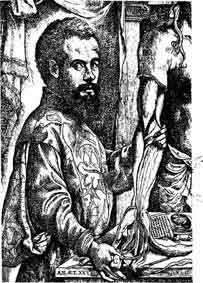
Fig 21 Andreas Vesalius(1514-1564): Founder of modern anatomy. 図21 アンドレアス・ヴェサリウス（1514-1564）：現代解剖学の創立者
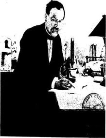
Fig 22 Louis Pasteur(1822-1895). 図22 ルイ・パストゥール（1822-1895）
章註
(1) A Short History of Science to the Nineteenth Century, Oxford, 1941.
(2) William Harvey, Exercitatio Anatomica de Motu Cordis et Sanguinis in Animalibus. An English Translation with Annotations by Chauncey D. Leake. Baltimore, Md. and Springfield, 111., Charles C. Thomas, 1931.
(3) Jacob Henle, On Miasmata and Contagia. Translated by George Rosen. Baltimore, The Johns Hopkins Press, 1938.
(4) William Osler, The Principles and Practice of Medicine. New York, D. Appleton and Co., 1892.
歴史を書くのは芸術的な過程である。歴史家は自分が住んでいる社会の一員であって希望と恐怖、熱望と欲求不満を共有している。歴史家は燃えるような興味や抗しがたい衝動に駆られて過去を調べ始める。過去の全体ではなくて特定な時期、一連の事件、人物または問題を調べ始める。彼はどんな事柄なのかを知ろうと欲しこの目的のために見つけられる総ての文書を集める。これらの文書は彼にとっての資料となる。彼はそれに問いただしそれに語らせ理解し解釈しようと試みる。次第にある時期、事件、遠い昔に死んだ人々が彼にとっては生き返りこの経験を彼は生きた言葉や文章として他の人たちと分かちあうことを欲する。彼は過去を再現させて歴史の叙述を芸術的な過程にする。
作家ゾラは嘗て芸術を「気質によって見た自然」すなわち人の心を媒介として見た自然であると定義した。同様に我々は歴史を「人の心を媒介として見た過去」と定義できるであろう。芸術家が見たり感じたりしたことを他人に伝達するのと同じように歴史家は自分の経験を伝達する。そしてこの経験は人々を行動に駆り立てることもあろう。歴史家の仕事によって気付かれていなかった進歩や傾向が新しい意義を得る。人々はこのことに気がつき彼らの行動の進路が決定されるであろう。これこそ歴史すなわち過去について我々が持っている像が決して死んだものではなく逆にもっとも強い推進力の１つであるのはこのためである。
このことから歴史を書くのは非常に責任の重い仕事になる。歴史家は歴史研究の方法によって自分に課せられた鉄の規律に従わなければならない。歴史研究方法は歴史家の解釈に厳しい制限を課し資料の事実を持たない限りは行為や言葉をある個人のものとすることを禁じている。もしも病気の一例を記載するときには記録に基づいて行わなければならない。過去についての描写は正しくなければならない。真実の歴史のみが実りあるものだからである。無批判にまたは軽々しくまたは宣伝のために書かれた偽りの歴史は常に有害である(1)。現時点で真実でない歴史的考察にもとづき正しいとされた政治哲学から生み出された心の歪みとその破滅的な結果を見ている。
詩人、小説家、それに劇作家はまた世界の諸相を作りかえる。それらは説得力をもつためにまた真でなければならない。しかし彼らは歴史家よりはもっと自由がある。文学者は人々を新しく作ることもありうるだろうが歴史家は人々を再現できるだけである。
作家は見たり感じたり考えたりしたことを記録し常に自分の経験から描いている。彼は病気を見てきて重い病気が人の生涯における転換点となることを観察してきた。彼は自分自身で病気を経験している。誰でもある時に病気に罹っているからである。ほんの一部だけでも、シェリー、キーツ、ウォールト・ホィットマン、モリエール、メリメ、チェーホフ、ドストエフスキーがあげられる(2)。ある人たち、たとえばシラーにとっては不利な条件であって打ち克つのに努力した。他の人たち、たとえばバシュキルツェフにとっては中心的な経験であって著述の性格を決定するものであった。
詩、創作、劇作で有名になった医師は少なくない。ハラー、チェーホフ、シュニツラー、デュアメル、ワイアー・ミッチェル、ジョン・ラズボーン・オリヴァー、A. J. クローニンなど多くをあげることができる。彼らにとって医学の問題を提出したり病気やそれによる苦しみを主題とする以上に自然なことはあり得ないだろう。
これら総ての理由によって遠い昔から今日まで無限の数の文芸作品に病人や病気の記載が存在するのは明らかでありそのリストを作るのは我々の目的ではない。それ以外に医学についての文献はまったく広範囲である。何故かと言うと大部分の古典は教養ある医師によって鉛筆を手に持って読まれているからである。医師たちは医学的に興味ある部分を抽出し論文やモノグラフを書いた(3)。または文学者が罹る病気を調べ彼らの仕事がどのように影響されるかを調べた(4)。この短い章で我々はこの問題についての幾つかの一般的考察に限ることとし作者がその仕事になぜ病気を導入したかどのように描いているかを特に論じよう。
文学の主題としての病気
一般に病気は文学の主題としては適していない。高等学校で個人の経験について作文しなければならないときに先生は麻疹や百日咳や猩紅熱の経験は書かないようにと注意をした。このような病気は本人にとっては重要な経験であるがそれについて詳細に書くことは他の人には退屈で興味が無いと言った。さらにこのことは独創性が無い。何故かと言うと何千人もの他の子も同じ経験をしているからである。これは良い忠告であって後で論じようとしている自然主義派以外では一般に作家は病気の例を簡単に普通の言葉で記述し多くの病気と関係する出血や下痢や嘔吐のように嫌悪を起こすことについて詳しいことは述べない。作家が興味を持つのは個人の生涯に及ぼす病気の影響であって病気そのものではない。
トルストイの偉大な小説「アンナ・カレーニナ」において女主人公は愛人の子供を産んだ後で産褥熱にかかりこの病気が物語りの頂点で動機となった。病気は一般的な言葉であるが間違いなく記載されている。問題なのは症状ではなくアンナが死にかけているという事実である。彼女は社会の掟を破って不義の恋愛に耽った。夫は彼女を離婚したいと思い愛人は立身の道を閉ざされた。社会からの追放が彼女の運命になるところであった。ついで彼女は子供を産み病気になり死にかけている。死に直面して彼女を愛する２人の男すなわち夫と愛人は会って互いに和解する。夫は彼女を許し愛人は家に帰って自分を打つ。これで物語は終わりすることができたであろうが終わらなかったのが小説を偉大にしている。アンナは予想に反して回復し愛人は自殺が未遂に終わって生命は続く。アンナと愛人は外国に逃げ幸福な短期間が過ぎて彼女は生きるのに堪えられなくなって自殺する。
この小説でトルストイは状況を強調するために病気を巧みに利用した。アンナが自殺した後で愛人は絶望して戦争に行くことにする。彼はプラットホームで列車の出発するのを待っていてそのときにひどく激しい歯痛に悩まされる。これは小さなことのようであるが愛人ウロンスキーの精神の苦悩に肉体の苦痛を加えることによって耐え難い立場を可能な限り強調している。
病気は非常に多くの小説で筋の展開または状況の特性を示すのに同じように使われている。小説家は医学者ではないし素人のために書いているのではないので専門家だけに知られている稀な病気を記載するのではなく誰でもよく知っている病気を記載する。どの病気を選択するかは作家が生きていた時代と達成すべき目的による。
13世紀にハルトマン・フォン・アウエは小説「哀れなハインリッヒ」において君主にたいする若い娘の献身的な愛を描くために主人公をハンセン病患者にした。これは中世には論理的であったがハンセン病が西欧で実際上に無くなった今日では適当で無いであろう。これをプフィッツナーが1895年にオペラにしハウプトマンが劇にしたが人間としての価値を考えて中世的な主題を意識して使った純粋なロマン主義であった。現代の写実主義小説では違う条件が選ばれるであろう。たとえばベラマン（1882-1945、アメリカの小説家）の「キングズ・ロウ」（1942）で愛し結婚した男性にたいする自己犠牲的な女性の献身は両足を失い絶望的な障害によって示されている。
中世後期およびルネッサンスでペストは明らかに一般向けの主題であった。ボッカチオは「デカメロン」の序文で写実的にペストを記載し物語を集めたいいわけとしている。エリザベス朝の医師で作家であったビュレインは1564年に「熱疫病への対話」を刊行し教育的なことだけでなくいろいろな人が死に臨んでどのように反応したかを示した。ペストは西欧から無くなった後でも人々の心につきまとった。デフォー（ロビンソン・クルソーの著者）が1722年に刊行した「疫病年代記」は史実に基づく文書と長いあいだ考えられてきたがそうではない。ペストが最後にイギリスを襲ったのはデフォーが５歳のときであった。これは架空の話であるがデフォーの幼い時の思い出が書かせたのかも知れない。ロマン的な小説家はペストのように劇的な題材を使い、ウィリアム・ハリソン・エーンズワース（英国の歴史小説家）の「老いた聖パウロ」のような陰惨な話がその例である。小説家が今日ペストについて書きたかったらA.J.クローニンが1冊の本の中に考えられるすべての災難を詰め込んだ「天国の鍵」で行ったように舞台を中国に持って行かなければならないだろう。
17世紀の創作で痛風は題材として好まれた。特に上流階級では多くの人たちがこの病気に罹っていたようである。シデナムは1681年にこの病気について古典的なモノグラフを書いた。彼自身は長い間この病気に苦しんでいたのでこの病気について非常に詳しかった。痛風は文学や美術でフォールスタフ（シェークスピア劇中の大兵肥満の騎士）型の典型的なぜいたく者に使われた。この病気はワイン、女、歌の濫用によると人々が考えていたからである。痛風はまた他の理由で諷刺作家や諷刺美術家に人気があった。痛風の発作は耐え難い痛みの原因となるので従って決して滑稽なものでは無いがそれによって死亡することは無い。発作が終わると彼は以前の自分に戻って痛みは忘れられる。症状が極めて激しいことと比較的に害が無いことに矛盾があり、このことは滑稽な状態を生み出す。同じことは歯痛で言うことができる。歯痛の患者がもちろん麻酔なしに抜歯されることは17世紀の諷刺画家の好きな主題であった。狭心症の発作は異なった。この発作によって死亡するからであった。この場合に痛みの激しさは患者の危機に比例しこの状態は悲劇的である。
18世紀には熱病がまだ極めて多かった。ヨーロッパやアメリカでマラリアは南部地区だけでなく北部にも拡がっていた。腸チフスは各国で郷土病であった。種々の熱病は当時の非常に多くの創作で見られた。熱病は望む通りの期間に人物を無能力化し話の筋が求めるままに病人の状態を無害にすることも重大にすることもできる最も便利な病気であった。普通それらは漠然とした言葉で記載されている。
ロマン派の人たちが中世のことを詮索しないでその頃のことを取り扱うときには結核や萎黄病（＊鉄欠乏性貧血）のような長患いを非常に好んだ。萎黄病すなわち若い女性の貧血は今日では完全に姿を消している(5)。これは思春期女性にたいするコルセットの影響と考えられてきたが他の要因も関係するのであろう。萎黄病は上流階級の若い女性の病気であった。彼女たちは身体の運動をしないで室内にこもり針仕事をしたり音楽をして救ってくれる夫を待っていた。彼女たちは蒼白い繊細な少女で当時の詩人たちのお気に入りであった。
当時に結核は社会の総てのグループを襲いロマン派作者の多くは罹っていた。ふつう結核は患者たちが生命および性に強い関心を持つあいだに徐々に進行する遺伝病であるとして描写された。しかし結核は容赦のない運命であり従って全く悲劇的であった。小説によって肺結核は急速に患者を死亡させた。たとえばデイヴィッド・カパーフィールド（ディケンズの小説）の若い妻は数週間で死亡した。しかしこれは例外であった。一般にこの病気は慢性で人の生命を容赦なく奪うものとして描写された。
19世紀後半になって自然主義の到来とともに、後に記載するように新しい事情が生じた。しかしいつでも前面に出る病気がありある時期に蔓延した病気とその一般的な性質および様式のあいだにある種の関係があることは興味深い。中世は集産主義（＊生産手段を集団化する主義）の時代であって支配的な病気は全グループを襲うハンセン病、ペスト、または舞踏病のような集団的な病気であった。高度に個人主義的であったルネッサンス期にはすべての人を襲うわけではなく高度に個人的な行為によって罹る病気である梅毒が前面に出た。バロック時代は驚くべき対照と矛盾の時代であった。フランスとスペインでは絶対主義の時代でありイギリスとオランダでは民主主義の時代であった。デカルトの合理主義の時代であるとともにまた反宗教改革による宗教的狂信の時代でもあった。最もしばしば描写された病気は飢餓発疹チフスや麦角中毒のような欠乏病であるとともに痛風や浮腫のような贅沢病であった。
物語の中に病気を導入した創作作者は明らかにその時代によって影響されたが自分の目的によっても左右された。人物を急いで除きたいときには肺炎や心臓病のように青天の霹靂のような急性疾患を利用した。人生における１つの危機を表現したいならば回復はするが重篤な病気を描写した。脳炎、脳膜炎、または何であれ似た病気である。はっきりしない熱病、頭痛、または憂鬱病は人を病人らしくすることができた。19世紀中葉以前に作家たちは病的状態の記載を差し控えた。作家たちは病気の性質を暗示するのに絶対に必要とする以上の症状を描写することはせず美的でなく嫌悪の気持ちを起こさせるものを省いた。しかし自然主義の到来とともに事態は変わった。
自然主義における病気
19世紀における科学の興隆は文化のあらゆる分野に反響を起こした。フランスの生理学者ベルナールは1865年に科学者にも素人にもよく読まれ現在でも読まれている１冊の本を書いた(6)。「実験医学序説」であり新しい医学の原理が非常に説得力のある方法で書かれている。医学は理性に基づく実証科学であった。ベルナールは言った。「一言で言うと他のあらゆる場所と同じように実験的方法において唯一の真の判定条件は理性である。」「知性は常に同じやり方で同じ生理学的過程によって推理する。」しかし推理はある指導原理に従っておりこの指導原理とは「現象の絶対的な決定論である。」「原因の無い事実または少なくとも他の事実と関係が無い事実の存在を認めるのは科学の否定であろう」ベルナールが実験をコレジュ・ド・フランスで行ったときに聴衆は生理学者だけではなくベルトロのような化学者、ジャネのような哲学者、ルナンのような歴史学者も含まれていた。
ほぼ同じ頃1861-1864年にフランスの臨床家トルソーは「オテル・ディユ病院医学臨床講義」を刊行しこの中で新しい科学原理を臨床医学に応用した。これは詳細に記述した病歴だけからなる純粋な医学書であった。しかしこの２冊の本は医学以外の多くの読者を持った。結局、良く書かれた臨床病歴は伝記そのものであった。トルソーの臨床講義およびしばらく後にサルペトリエール病院における神経病学者シャルコの臨床講義には医学学生、医師だけではなく、作家、哲学者、歴史家、科学者およびあらゆる分野の学者が列席した。
すべての科学のうちで医学とくに生理学はたぶん素人に最も強く訴えるものがある。高等数学や天文学に関連がある人は少ないがすべての人は早かれ遅かれ医学とあるていどの関連を持つようになる。医師はすべての人が出会う科学者であり医師の信望は19世紀になって急に高くなった。医師は新しい科学がどのように役に立つかを明瞭に示した。あらゆる面で人生において指導的である医学は物理学や化学よりも人々の心をとりこにした。すべての医学分野のうちで生理学はもっとも哲学的であった。生理学は生命の機能を研究し研究している総ての問題は終局的には哲学の領域に入ってゆくからである。
反響はすぐに感じられた。歴史は化学と同じように科学であるとルナンは宣言した。自然主義派の理論と哲学を系統立てたテーヌは悪徳と徳は硫酸塩や砂糖のような産物であるとまで言った。テーヌはコントとベルナールから環境による個人の決定論という学説を導き出した。コントはこの概念を引き継ぎ拡大して「生体が浸っている液体だけでなく一般にすべての特定の生体が存在のために必要とするあらゆる種類の外部環境の全体」を示した。ベルナールはこれに内部環境の概念を加えた。すべての生物は全体として外部環境を持っているがすべての細胞はその発達を決定する内部環境を持っている。科学とくに医学の影響は文学において最も強く感じられた。ユゴーは既に1859年の「世紀の伝説」において博物学者が動物学の事実を取り扱うのと同じように詩人と哲学者の使命は社会的な事実を取り扱うことであると宣言した。小説は科学的でなければならないとフロベールは述べた。
自然主義派の初期の小説は多かれ少なかれ臨床病歴であった。ゴンクール兄弟は1861年の「フィロメヌ姉妹」で病院と診療所における生活を1865年の「ジェルミニ・ラセルトゥ」においては下層階級の一夫人の生活を描写した。後者は次のような独特の序文で始まっている。これは著者たちが読者に警告する声明書であってこの小説は架空の話ではなく真実の話でありハピー・エンドでは終わらず「愛の臨床」という研究であるとしている。同様にエミール・ゾラの初期の小説である1867年の「テレーズ・ラカン」は原始的な個人の動物本能を記載した記録であった。ゾラはクロード・ベルナールの本に似せた題の「実験小説」という論文を1880年に書いた。彼の論文によると小説は科学的で実験的であり環境によって条件付けられているままに人間を記載し人の熱情メカニズムを解析することによって応用社会学の研究とならなければならなかった。
自然主義派の信奉者は人生の残忍にして醜悪な面の描写を恐れなかった。それどころかこれによって喜びを覚えていたようであった。これが過去において文学が無視していた人生の一面であると感じていたからである。このことは彼らが医学に興味を持ち医学書を読み臨床講義に出席したかを説明している。病気はしばしば彼らの作品に現れ非常に写実的に描写された。フロベールの小説でボヴァリ夫人がヒ素を呑んだときにどんな症状も省略されていない。彼女の脈、呼吸、痙攣、嘔吐、は詳細に記載されている。作者は学術語を使うのを恐れていない。薬剤師のオメーが診察した医師に次のように報告した。
最初、のどに乾燥感を覚え、続いて、腹部の堪えられない痛み、下痢、昏睡、でした。
エミール・ゾラの小説ではどんな種類の病気も可能な限り残酷に論じられている。「ルルド」は吐き気を催すような詳細に満ちているがこれこそ人生である。「多産」は母性と大家族を賛美した小説で人工流産の悪が冷酷に烙印されている。「居酒屋」はアルコール中毒の惨害を描写しこの本の終わりでクポーを殺した「アルコールせん妄」の発作は正規の臨床病歴である。ゾラはルーゴン＝マッカール叢書（＊ルーゴン夫人と愛人マッカールの子孫についての作品群）として書いた20の小説を「第二帝政時代における一家族の自然および社会の歴史」と呼んだ。彼は社会学の研究に科学的な方法を適用しようと努力した。この叢書の最後の小説が１人の医師の話「パスカル博士」であることは特徴的である。医師は全シリーズを総括し家族の遺伝を研究している。
私はゾラが好きである。彼は勇敢な闘士だったからである。彼はフロベールのように人生にたいして超然とした態度は取らなかった。彼は熱烈に取り組んだ。描写したあの沢山の汚物と獸的行為を通じて彼の最後の小説の題である「多産、労働、真実、正義」の基礎の上に築かれたより良く美しく健康な世界を求める絶え間ない叫びがある。
自然主義派には病気と関連して何の抑制も無かった。ルネッサンスやバロックの著作であからさまに述べられていた梅毒は高尚な文学では姿を消していた。これが戻って来た。先天的な病気の呪いを描写したイプセンの「幽霊」や結婚に及ぼす梅毒の影響を描写したブリューの宣伝劇「梅毒病み」として上演されるようになった。
医学にたいする興味は医師とくに医学研究者が小説や劇においてしばしば主人公として現れる事実によって示された。キュレルは1899年の「新しい偶像」で自分の患者に実験する誘惑に屈して最後に自分が発見した新しいウイルスで自殺する以外に逃れることが出来なくなった偉大な医師の心の葛藤を戯曲化した。
文学に対する精神病学の影響
19世紀と20世紀に大きく発展した医学の一分野である精神医学が文学によって大きく刺激されたのと同じように、精神医学は文学に影響しないわけにはいかなかった。事実、両者のあいだには絶えることの無い交流と交換があった。ドストエフスキーは精神医学者ではなかったが精神病質者、てんかん患者、犯罪人、を巧みに記述した。彼自身が精神病質者であり、てんかん患者であった事実は彼の感覚を鋭くしたかも知れない。同じことがデンマークの作者ストリンドベリについて言える。彼の小説は多くの点において精神病理学の資料である。文学と精神医学のあいだの関係はまったく明らかである。作家は自分を取り巻く生活を研究する。すなわち、人々、思想、情緒、激情、葛藤、および行動である。人々はすべて異なりある者たちは異常であって彼らおよびその行動は作家の注意をとくに惹きつける。精神の健康と病気のあいだにははっきりとした境界は無いし大多数の神経症の人たちは施設に収容されていないので作家は彼らを研究する機会は充分にある。書くにあたって作家は彼らを再現させ立派な作家であれば描写は真実である。彼らを理解し解釈するにあたって意識しているにせよ意識していないにせよ、その時代の心理学および精神医学の観点によって影響される。
精神医学者もまた個人を研究するが別の目的を心に持っている。精神医学者は個人を治療し少なくとも改善しようとする。症例の記述はもちろん外科医による記述より詳細であり小説の主人公についての記載に近い。文学作品で時には精神医学者が参考にするほど完全に記載した典型的な心理学的な状態が見られる。エディプス・コンプレクスはその例である。
19世紀における神経症の発見および特にパリのサルペトリエル病院におけるシャルコーとその学派とナンシーにおけるベルネームとその学派によるヒステリーの研究は新しい範囲を開き広範囲に影響を及ぼした。科学は心の正常および病的な機能の研究に応用された。シャルコーの毎週の臨床講義がパリの広範な知識人のサークルを惹きつけたことをすでに見た。小説へ及ぼした影響は疑いもない。19世紀の最後の20年間に文学において展開された心理学的傾向の代表者はポール・ブルジェである。彼は洗練されたスタイルで書き彼の小説はすべてフランス人が「上流」と呼んでいる保守的なカトリック上流階級に限られていた。しかし、1889年に刊行された「弟子」のような本は手法においてゾラの小説のように獸的であった。若い心理学者が自分の師の学説を応用して試すために冷酷にも１人の少女を計画的に如何にだますかを描写している。
ヒステリーの治療と研究は精神分析学の出発点であった。1980年代にシャルコーの所で研究していた２人のウィーン医師、ブロイアーとフロイトは他の多くの人たちと同じようにヒステリーの治療に催眠術を使っていた。古典的な治療は催眠術をかけられていた患者に暗示をすることによって自由に話すことを勧め催眠状態において患者は病的な状態を説明する過去の経験の記憶を再現することができた。このように自発的に話すことによって患者はかなりの量の情緒を放出し救われたと感じた。フロイトとブロイアーは自分たちの方法を「浄化法」と呼び1895年にこの主題についての本を刊行した。これには潜在意識の発見と神経症の発生における意義を含んでいた。
フロイトは催眠術を捨て去った。潜在意識に接近する他の良い方法を見出したからである。自由連想によって手当たり次第に患者が話したことの解析または夢の解釈である。そして次第に心を解析するシステムを展開した。彼は広範に反対されるとともに熱心な追随者がいた。しかし彼のシステムを全体として受け入れるかどうかは別として彼が心理学と精神病理学を著しく豊かにしたことを誰も否定することはできない。彼は広い新しい視界を開いた。潜在意識の存在とその意義、隠れ忘れてはいるが今でもなお我々に作用している大量の経験、幼児・少年時代における性欲の意味、これらおよび多くの他の発見が共有財産になった。
このように広くなった心理学の見通しが文学に大きな影響を持つことは明らかである。作者が実際にフロイトの著作を研究したか否かは重要で無い。多くの作家は直接にせよ間接にせよフロイトの魅力に捕らわれた。プルーストの「失われた時を求めて」のような一連の小説はフロイト無しには考えられず、ジョイス、ウルフ、オニールなど多くの作家の作品においてもフロイトの影響は強く感じられる。
医学小説と諷刺
「病気と文学」という主題はこれまで述べてきた僅かの意見では語り尽くされていないがもっと展開することはスペースが許さない。これと関連して考慮すべき幾つかの点だけを述べよう。創作の多くの作品で病気は筋の展開と付随的に起こっている。しかし、他の作品で病気や病弱は重要な役割を果たしている。モームの偉大な小説「人間の絆」で主人公が内反足であるのは付随的ではなく全く重要である。これは彼のインフェリオリティ・コンプレックスおよび彼の行為の多くを説明する。彼が肢体不自由の理由で学校長が鞭打ちを拒んだことほど人を動かす情景は無い。トマス・マンの「魔の山」で結核は高山のサナトリウムに閉じこめられた結核患者の道徳的および知的な悪ふざけをもっとも生き生きと描写している。
しばしば小説や戯曲は主義主張を宣伝する目的で医学を主題として書かれることがある。前に述べたことがあるブリューの「梅毒病み」はこの部類に属する。ハガードの「サーン博士」は予防接種への訴えであった。数年前にニューヨークで行われた「医学展覧会」は医療の社会化を訴える「生きた新聞の劇」であった。このような作品の美術的価値は非常に大きくはなかったろうが重要な機能を果たした。
ローマ時代の詩人からショーに至るまで医学は非常にしばしばひどく皮肉られた。モリエールの「気で病む男」のように時には攻撃が患者に向けられたがしかしふつうはもっとしばしば医者に攻撃が向けられた。バトラーが1872年に書いたエレウォンは犯罪者が治療を受け病人が罰せられるユートピアであってロマン主義者によく見られる苦痛の賛美に反対する健全な反応であった。
現在、とくにアメリカでは医学の問題についての小説が流行している。大衆はこれらにたいして無限の吸収能力を持っているようである。この流行はシンクレア・ルイスの「アロウスミス」（1925）（＊研究所の資本主義体制と闘う良心的で研究熱心な科学者）に始まったようである。最新の病院や研究室は人々を魅惑し絶えず死と向き合っている男女の生活と仕事に強い劇的な要素があることは疑いも無い。これらの本のあるものは医師によって書かれあるものは一般人によって書かれている、あるものは優れておりあるものは月並みなパターンで書かれて非常に貧弱である。あるものは単にセンチメンタルなラヴストーリーの背景として病院を使っており、他のものは医学の問題を取り扱っている。ジョンス・ホプキンス大学の私の研究室ではこれらの本をすべて買っているがこれらの本を我々は稀にしか読まない。しかしこれらの本はいつか興味深い文書になるだろうと思っている。そして創作が医学史の源になるかどうかの問題が提起される。
答えは「イエス」である。もしもこれらの本を批判的に考慮し識別能力をもって使うならである。ホメロス（紀元前９世紀ごろ）は医学書を書くつもりはなかった。しかし彼の叙事詩は明らかに傷、病気、およびその治療について述べておりその時代の医学的見解を反映している。医学が専門化した科学ではなく教育された階級の共通財産である限り詩人たちが医学について述べている考えは入念に考慮しなければならない。したがってギリシアの悲劇詩人たちは医学史の重要な史料である。
風刺作家たちの著作を読むにあたって彼らは誇張していることを思い起こさなければならない。モリエールの時代の医師たちは描写されているほど悪者ではない。しかし彼が述べていることは正しく諷刺は完全にもっともなものである。新しい科学は17世紀に発達したが大学は中世の性質を残していた。平均的な医師は中世の医師と同じように行動し判断して新しい科学を知らなかった。モリエールは医業にたいする個人的な恨みをこれに加えたので滑稽な状況を生み出している(7)。
回顧録、日記、書簡、などの文書は資料として非常に意味深い。ピープスの日記やセヴィニエ侯爵夫人の手紙には病気やその治療について多くのことが書かれている。これらは患者の立場からの医学像を我々に提供する。
 章註
章註
(1) See Benedetto Croce, Theory and History of Historiography, London, 1921.
(2) Lewis J. Moorman, Tuberculosis and Genius, Chicago, 1940.
(3) Dr. Herbert Silvette, of the University of Virginia, is preparing a bibliography of works dealing with medicine in English literature which will be found extremely useful.
(4) See e. g. George M. Gould, Biographic Clinics, 6 vols., Philadelphia, 1903-1909.
(5) Axel Hansen, Om Chlorosenst den aegte Blegsots, Optraeden i Europe, Kolding, 1928.
(6) About him see the excellent book of J. M. D. Olmsted, Claude Bernard Physiologist, New York, 1938.
(7) See O. Temkin, Studien zum "Sinn"-Begriff in der Median, Kyklos, 1929, VoL n,p.66ff.
病気はダイナミックな過程である。徐々にまたは突然に始まり進行し多くのばあいに峠に達し回復あるいは死亡によって終わる。従って病気は言葉で記載することができる。病気は高度に叙事詩的でありときに劇的な題目であるが、絵や彫刻で病気を表現しようとする美術家は病気の過程のほんの一瞬しか再現できない事実によって大きなハンディキャップを負わされている。
映画は造形芸術と文学を合わせているもので病気を時間とともに描写することができる。この線に沿って興味ある実験がなされていてスイスの映画「永遠の仮面」はその一例である。しかし映画が安価な娯楽の提供を唯一の目的と考えている限りでは多くを期待することはできない。しかし生涯の重大な瞬間に病気に襲われた人の熱による幻覚のような異常に興味ある問題を思い出すことが出来るであろう。振戦せん妄（アルコールせん妄）による幻覚はどんな殺人の話よりも恐ろしいし断酒会の優れた宣伝になる。
病人の肖像
美術家がどのような時にどのような理由で病気を描くのだろうか？(1) 病気を描く１つの理由は常に肖像画の要求があるからである。人々は家族や友達や子孫に自分の肖像画を保存しておきたいと思う。もちろん美術家は急性病に罹っている個人の肖像画は描かない。しかしその人が慢性病に罹っていたり病弱であったら仕方が無い。美術家は病的状態の個人を描くことになる。このようにして種々の病気に罹っている人たちの多数の肖像画が存在している。紀元前2700年ごろに王家の衣装係だったクノウム―ホテプはこびとであって、カイロ博物館にある小彫像は間違いなく軟骨形成不全（図23左）の結果であることを示している。18王朝の頃に生きていた祭司ルマの墓石で右脚が高度に萎縮している（図23右）。このような萎縮はしばしばポリオで見られるが神経系の他の病気でも起きることがある。美術作品から病名診断をするときには慎重でなければならない。美術家は対象を非常に写実的に描いただろうが見ることができる症状が全く典型的でない限り仮の診断以上を下すことは不可能である。しかし医学的な文書がほとんど無いような古代の美術作品のときには診断をすることが極めて望ましい。そのような時に絵や彫像がある病気の存在を示す唯一の事実となるであろう。たとえば古代エジプトには結核についての記載が存在しないが結核が確かに存在したことを知っている(2)。高度に痩せ猫背の人の墓碑が存在しこの人は結核の１つの型であるポット病（脊椎カリエス）に罹っていることはほとんど間違いない(3)（図24左）。しかしこの場合にはもっと証拠がある。同じような状態のエジプトのミイラがあり顕微鏡で調べると脊柱に沿って潰瘍の痕跡がありこれによって診断が確定される。肖像画家はもちろんモデルが病弱であることを強調しようとはしないが病気が顔に表れると避けることはできない。ライデン市のルカスはスペインのフェルディナンドを描くにあったってアデノイドが外貌にどのように影響するかを素晴らしく示している（図24右）。鼻瘤や鼻硬化症のような鼻の病気は17世紀のオランダ画家によって非常に生き生きと描かれている。肖像画の写実主義は身体の外形も変化させないような内臓の疾患さえも明らかにしている。逸話としてナポレオンの侍医であった大臨床家のコルヴィザールは肖像画を見て「もしもこの絵が信頼できるものならもとの人は心臓病で死んだに違いない」と言い実際にその通りであった。
キリストおよび聖人による治療
聖書および教会の伝説は美術家に種々の病理的な対象を提供した。病人を治しているキリストは数限りなく描かれ美術家に盲人、脚の不自由な者、ハンセン病患者、悪魔につかれた者、治して貰う望みでキリストを訪ねたすべての病人、を描く機会を与えた。しかしキリストだけでなく使徒および総ての聖人は奇跡治療を行った（図25）。宗教が美術家にとって霊感の主な源であり主題の大部分を提供する限り病人の治療は非常に好まれる画題であり美術家は病人たちを自分の周りで見た通りに描いた。多くの聖人は人を特殊の病気から守る守護者だったので特殊の性質をもつものまたは特殊の病気に罹った患者を治療しているところが描かれている。聖ロクスはふつう自分の股の付け根にできたペスト横痃を見せている（図26）。聖ラザロはハンセン病患者として描かれている。聖エリサベトは病人の看護に一生を捧げたので多くの絵や彫刻で彼女はハンセン病患者を看護している。このような絵は聖人に仲立ちを祈る民衆に霊感を与え信仰を強固にした。中世では貧困と疾病が賛美されこれらは人々が救いに向かうのを助ける賞賛に値する状態とみなされた。病人と貧困者の世話は賞賛されこの傾向の結果として中世の美術には乞食、肢体不自由者、および心と肉体の病人の描写が多い。キリストや聖人が悪魔にとりつかれた人を治療しているのは中世の美術家が好む画題でありその後も長いあいだ続いた。狂気で怒号する人から悪霊が突然に逃げ出すのは特に目覚ましい治療であった。凶暴になった精神病患者は束縛されていて狂気であることを示すために手錠をかけられていたり鎖に繋がれたり何人かに押さえつけられているのように美術家はふつう描いた。患者に触れたりもっと多くの場合は悪霊を追い払うことによって治療がなされた（図27）。このような場合に聖人は呪術の言葉を述べながら手を患者の頭上に置いている。もっと原始的な方法もとられた。サン・ミニアトにある14世紀のフレスコ画で聖ベネディクトは悪霊を追い出すために悪霊につかれた修道士を鞭打っている。
中世には悪魔が患者の口からあるいはしばしば頭から逃れ出ることを描いて治療の結果を示した。５世紀から６世紀にかけての初期の絵はギリシア人が魂を表現した小さく翼をもった人間または時には鳥として悪魔を示した。後になって悪魔がギリシアの牧羊神の特徴を身につけるようになると、蹄、角、尾とコウモリの翼を持ってもっと絵画的になった。ルネッサンスになって悪魔が絵画に現れることもあったが絵のデザインを損なわないように患者の身体を離れるときは描かれなかった。悪魔は空を飛んでいるかまたは地獄への帰り道として絵の隅に描かれた。しかしふつう治療の決定的な瞬間は患者の身体の激しいよじれによって示された。
このような劇的な光景はバロック期の画家にとって非常なお気に入りであった。ルーベンスはアントワープでイエズス会士について勉強しており聖イグナティウス・ロヨラ（＊イエズス会の創立者）が悪魔払いをして死んだ小児を蘇生させている２枚の大きな絵と数枚のスケッチを残している（図25）。特にウィーンにある絵は息を吹き返した子供の母親の平穏な幸福と悪魔に取り憑かれた子供の恐ろしくねじれた身体を対比させている。同様に聖聖マルティヌスが悪魔に憑かれた者を治しているブリュッセルの博物館のヨルダンスの絵で、聖人の落ち着き、この奇跡によって改宗することになったローマ総督の強い好奇心、および４人の強い人たちにようやっと押さえつけられた取り憑かれた者の痙攣が非常に芝居がかった対比をなしている。
ブリューゲルによる踊っている舞踏病患者のスケッチは少し違う種類のものである。聖ウィトゥス舞踏病は14世紀と15世紀にとくにラインランド地方で繰り返して流行した集団ヒステリーのようである(4)。何百もの人々が男子も女子もこの奇妙な狂気に襲われバグパイプの音楽にあわせて絶え間なく踊ってツァベルンの聖ウィトゥス礼拝堂またはエヒテルナハ（＊ルクセンブルク東部）の聖ウィリブロト礼拝堂に向けて巡礼を始めた（図28）。彼らは悪魔に取り憑かれていると考えられて悪魔払いが行われたが15世紀以降にも舞踏病は繰り返して燃え上がった。毎年この思い出として聖霊降誕節に続く火曜日に舞踏行列が行われる。ブリューゲルはこの出来事を見たに違いない。１人の女性を真ん中に２人の男性が横に並んで３人１組で酔ったようにダンスの歩調で進んでいるところを彼は描いた。
聖人だけが奇跡治療者ではなくフランス王とイギリス王もこのような治療とくに
トビアスの話もしばしば絵画に現れる（図26右）。ある時トビトは壁のそばのツバメの巣の下で寝ていてツバメの熱い排泄物がその目に落ちた。神は彼をヨブと同じように試すために目が見えないようにした。しかし天使ラファエルは息子の若いトビアスに魚の胆汁が父親の視力を元に戻すことを教えた。
『そこでトビアスは魚の胆汁をとって父の目につけた。父親は殆ど半時間もそのままにした。それから卵の薄皮のような白いものがその目から出始めた。トビアスはこれを見ると父の目からそれを除き父の視力はすぐに回復した(5)。』
レンブラントの銅版画は治療を始めた場面が描かれている。目が見えない父親は息子が近づくのを聞いて迎えようと急ぐが目が見えないのでドアが判らない。しかし多くの絵は治療を描いている。息子のトビアスが老人の目に魚の胆汁をすりこんでいたり眼科医が白内障を取り除くのと同じように目から薄膜を除いている。
そして最後にこれと関係して聖書にある光景を描くにあたって美術家が出産時や産褥の婦人を描いたことを述べたい。イエス誕生は奇跡的なのでもちろん問題外としてアンナが聖母メアリを産んだときのことは非常に好まれた画題であった。これらの絵は種々の時代において出産の部屋がどうであったか非常によく教えてくれる。これらは産婦の姿勢、働いている助産婦、新生児のために準備された浴槽、および当たり前のこととして本にはほとんど記載されていない詳細なことを示している(6)。
ハンセン病とペスト
聖書や聖職者の伝承を描こうとすることが長いあいだ病人を美術で取り扱う主なモティーフであったがこれとは別に独立に種々の理由で病気の状態が描かれてきた。ハンセン病のような禍やペスト流行のような大災害は美術家の想像力をかき立てない筈はなかった。この本のほとんどすべての章でこの２つの病気を述べなければならなかったのは決して偶然ではない。数世紀にわたる人間とのかかり合いは文明のあらゆる面に影響するほどであった。ハンセン病の症状は明白であった。この病気は皮膚に作用し顔と四肢を損ない、人々はこれらの徴候で何十年も焼き印を押されゆっくりと腐って行った。このように恐ろしい状態は人生の暗黒面を描こうとした美術家たちを惹き付けた。しかしハンセン病患者を多くの絵画の主題にしたのは、患者の運命の容赦なさであり、生涯の深刻な悲劇であった。嘗てオルカーニャ作と言われたピサの共同墓地にある「死の勝利」（図10）で醜い翼を持った死神は哀れなハンセン病患者たちの脇を通って若い男と女の他のグループに近づいている。彼らは死が近づいているのに気がつかず歌い音楽を奏でて青春を謳歌している。ハンセン病患者たちは崩れたかぎつめの腕を伸ばして死神に救いを求めているが無駄である。死神は無視し患者たちの悲惨な状態は今後何年も続くであろう。
これほど劇的ではないがもっと悲惨なのはバーゼルの博物館にあるドイッチュの絵である（図9）。前景には着飾った美しい若い女性がいる。彼女は見たところ完全に健康である。しかし左前腕には小結節すなわちレプローマがありこの病気の始まりである。彼女の後ろには痩せた身体をボロで包んだ男が立っている。脚は象皮病のように膨れ腕はくずれ顔は変形して典型的なライオン顔をしている。この病気の初期と末期である。この若い婦人を待ち受けている運命を知るとぞっとする。
ペスト患者は美術家にとって良い画題ではなかった。急性病患者はいつでもそうである。このように感染性が高い患者の病室はできるだけ避けられた。聖ロクスは股の付け根にペスト横痃があるとしてふつう描かれているが、これはシンボルの価値を持つものであり単なる属性に過ぎない。そうでなければ、この聖人は致命的な病気で衰弱した人には見えない。ラファエロやとくにバロックの美術家によって描かれたペストの絵がある。これらの絵はふつう群集を描いたもので人々が道で死んでいたり他の人々は恐怖にかられて逃げて行っている。このような絵に示されているのは人々の身体的特徴ではなくこの病気の社会的および心理的な面である。
ペストの美術におよぼした影響は全く別な方法ではるかに強く現れている。それは大きな衝撃であった。地域社会におけるペストの流行は衝撃的な集団経験であった。このような時に人々はペストが終わったら聖セバスティアヌスと聖ロクスの祭壇を建てたりヴェネチアのサンタマリア・デラ・サルーテのような誓願の教会を建てるというような誓いを行った。多くのバロック教会がこのような誓いの結果としてヨーロッパの各地に作られた。オーストリアは特殊な記念碑「ペストの柱」が建てられた。もっとも有名なのはウィーンにある三位一体に捧げられたものである。これは1679年のペスト流行のときの誓願を果たすために建築家で劇場技師であったブルナチニのスケッチに従って1687-1698年にエルラッハによってザルツブルクの大理石で作られた。同様な柱はバーデン、ハイリゲンクロイツ、など幾つかの他のオーストリアの町に見られる。これは南ドイツ・バロックの最も目立つ表現物の１つである。
ハンセン病とペストは２つの主な対象であったがこの他にも美術家を惹き付ける人体の異常な状態があった。スペイン学派のベラスケスその他の画家は考えられる総ての種類の精神薄弱者を飽くことなくしかも写実的に描いたので多くのばあいにどのような種類の精神薄弱者を描いたか診断することができる。17世紀のオランダの画家たちは日の生活のあらゆる楽しみや悲しみを再現することに熱中した。彼らの絵には良く贅沢な食べ物、強い酒、ダンス、歓楽、殴り合い、などで満ちている。心や身体の病気が取り扱われているが決して本格的には描かれていない。スティーン、メッツ、ホーフストラーテン、ミエリス、ダウなど多くの人たちによる絵において患者はふつう若い婦人で蒼白く活気がない（図29）。医師は彼女の脈を触れたり尿を検査するのを楽しんでいたように見える。婦人たちの悩みが萎黄病（＊鉄欠乏性貧血）や鬱病によるのか明らかに恋愛の結果であるかは確かめることができない。これらの絵の多くに皮肉な筆致があるし苦い薬を飲んでひどい顔をした男や歯を抜かれている哀れな人を多く描いているブローウェルの絵などはさらにそうである。これらの絵からホーガースやローランドソンの刺すような皮肉に発展する直線の道がある。医学は常に欠陥と失敗があった。誰でも生涯で「庭園にはもう薬草は無い」最後の病気がいつかはやってくる。いつでも強慾な医師は患者の苦しみを食い物にし皮肉な美術家はもぐり弁護士や他の職業人にしたように医師を打ちのめした。このような絵で患者は肥ったもの、痩せたもの、浮腫や痛風その他に罹ったもの、として示された。しかし攻撃は患者に対してではなく医師に対してなされた。
供え物およびペルーの呪物
患者がアスクレピオスに治癒して貰うとしばしば誓願の供物を神殿に捧げて感謝の意を表明した。財産のある人たちはときには大理石で有名な美術家に浮き彫りを作ってもらった。それには神が単独であったり子供のヒュゲイアまたはテレスポロスが一緒に描かれていた。その前にはずっと小さく誓願者とその家族および供物を運ぶ召使いがいた。ときには治療の行為も描かれた。アテナイのアスクレピオス神への誓願浮彫には患者が枕に頭を載せ寝椅子に寝ているところが示されている。アスクレピオスは杖をついて傍に立っていて彼の召使いが患者の頭に手術している。これはたぶん病人が見た夢をそのまま描いたものであろう。あまり資力が無い患者はこのような豊かな贈り物をすることはできなかった。患者は自分が悩まされた身体の部分たとえば頭、眼、胸、腸、四肢、などを示す手頃な値段の彫刻を捧げた。それらは当時一般の解剖学の知識に従って粗雑に作られたもので大量生産されて神殿近くの店に運び込まれていた。ときにこれらの誓願供物は金や銀で作られていて神殿にはこれらの高価な贈り物の目録が保存されていた。アテナイのアスクレピオス神殿の碑には眼だけでも100以上の供物が記録されている。貴金属で作られた供物は当然のこととして消えてしまったが大理石や土器で作られた何千ものものは保存されておりギリシア・ローマの収集品を持つ博物館では見ることができる。これらはアスクレピオスだけでなく他の神の神殿でも古代世界のすべての場所で見つけ出されている。イタリアではエトルリアの発掘物に多くのものが見られる。
この章で我々にとくに興味あるのはこれらの誓願供物の多くが正常の臓器ではなく病気の臓器を示していることである。あるものは極めて粗雑で単に大ざっぱに腫瘍または潰瘍を示しているに過ぎないが物によっては非常に精巧であって特定の患者のために作られたものに違いない。アテナイのアスクレピエイオンからの誓願浮彫では患者と思われる男性が静脈瘤のある大きな脚を抱えている（図30左）。他の誓願浮彫で皮膚発疹、指の変形、その他の病的状態が同様に示されている。
このような供物を捧げる習慣は古代文明が没落しても続けられてキリスト教教会に持ち込まれた。過去に異教徒が行ったようにキリスト者は教会に行き治癒を祈って犠牲を捧げ治ったと感じたら誓願供物を奉納した。今日でもこれらが多くの教会で見られる。安価なものは蝋で作られ、心臓、肺、眼、脚を表現していた。アルプスの諸国でヒキガエルは子宮の象徴であって赤や白のヒキガエルがしばしば誓願供物に見られこれらは婦人科疾患から治ったり長い不妊のあとで妊娠した婦人が捧げたものであった。これらの誓願供物には刺繍や絵がしばしば見られ寝台に横たわった病人や聖人の取りなしが無ければ死んだであろう怪我を表現しているこれらは民衆美術の素朴な表現である。
これらは民衆芸術の素朴な表現である。古代ペルーから持ち来された非常に豊富な資料であるワコもまた民衆の手工芸である。ワコはインカ人が使っていた土器の水飲みである。インカ人はエジプト人と同じように死者が使うであろう総ての器具を用意した。それらの中にはこのような土器があり古代の墓地で何百と発掘されて今日では博物館で見ることができる。これらのワコは生活のすべての面を示している。あるものは美女の頭の形をしていて他のものは全身を示している。あるものは好色的な光景または出産を示しており他の多くは種々の病的状態を写実的に示していてあたかも美術家が異常状態に病的な興味を持っていたかのようである。嘗て研究したことがあるベルリン民族博物館には顔面が麻痺した男の頭や発疹が全身に広がっていて患者が自分で掻いているワコがある。他の多くは
医学のイラスト
医学の図版もまた美術でありその時期のスタイルを反映しているのでこのことを一言しなければならない。解剖学の勃興は美術家の協力が無ければ不可能だったろう。すぐにレオナルド・ダ・ヴィンチの解剖図を思い起こされるだろうが彼だけではなかった。名前が知られているにもせよ知られていないにもせよ多くの図版画家たちがふつう私たちの思っているより遙かに多く医学に貢献してきたであろう。ルネッサンス時代は専門主義の時代ではなかった。人体の構造は征服すべき新しい分野と考えられた。医学者は確かに美術家よりも書物上の知識を持っていたが重要なのはレオナルドが「見ることを知る」と言ったことでありしばしば美術家は医師が見たよりもっと多くを見たに違いない。ヴェサリウスは画家のカルカーが居なければ考えられないことである。２人の名前は常に結びついている。ハラーと彼の画家からケリーとブレーデルに至るまで、何世紀経った後まで医学者は美術家の助けを受けていることが繰り返して聞かされる。ケリーとブレーデルはジョンスホプキンス大学に立派な学派（＊1911に医学図版製作の学科）を作って半世紀にわたり合衆国に医学図版を描く専門家を供給した。解剖学は医学の他の分野よりも図版が必要であった。解剖学的構造は言葉よりも図によってもっと明白に記載できたからである。しかし非常に早くから他の医学状態も図版にする要求が感じられた。すでに紀元前１世紀にキティオンのアポロニオスはヒポクラテス集典の関節についての論文への注釈として脱臼した関節の種々の整復方法を絵で示した。植物の共通な名称が無く国および地方によって違う名前がつけられていたので図版は同定するのに大きく役に立った。２世紀にギリシアの医師ソラノスは外科の手当用品と包帯についての論文を書き図版を掲載した。図版は本文を理解するのに大きく役だった。
中世になると外科の本はしばしば図解されるようになった。どこに焼灼を行うべきかどこで静脈切開をすべきかは文章で書くよりは図解するのがずっと容易であった。17世紀以降の病理解剖学の発展とともに図版の必要性は正常解剖学と同じように絶対的なものになった(7)。医師たちが皮膚病をますます細かく区別するようになると美術家の助けを借りなければ不可能になった。発疹を言葉ではっきりと記載するのは極めて困難であるが色がついた絵はすぐに意味することを示すであろう。多くの新しい診断方法は美術家の助けが無かったら発展しなかったであろう。医師の眼が検眼鏡、膀胱鏡、胃鏡、その他の同様な器具で見たものは教授目的のためにアトラスに描かなければならなかった。さらにＸ線検査は全く絵である。
今日では多くの場合に写真家が図版製作の美術家の代わりとなりとくにカラー写真の発展は写実的な描写を可能にしている。動画は医学教育でますます重要な役割を果たしている。眼のように小さい物体の手術は手術室よりもカラーフィルムで良く示すことができる。
医学図版に写真を使うのは写真レンズが嘘をつかないから確かに大きな利点であるが欠点もある。重要な点が強調されて重要でないことは背景に退くように光を当てることはいつでも可能ではない。写真は常に自然に忠実であるが時には詳細過ぎて混乱させる。従って特に教育的な出版には今でも医学図版製作者が必要である。
精神病患者の芸術
1921年にドイツの精神医学者ハンス・プリンツホルンは「精神病患者の絵、造形心理学と精神病理学への寄与」と題した極めて興味深い著書を出版した(8)。彼はハイデルベルクの精神科臨床で研究していて精神病患者とくに精神分裂症（綜合失調症）患者の何千ものデッサン、絵、彫像を調査した（図34）。誰でも自分自身を表現する衝動を持っている。我々は働き、会話、著作、ダンス、その他の行動によって表現する。しかしそれとともに鉛筆を使って何の意味も全く無い直線や曲線を引くことがある。しかしこれらは実際に意味が無いわけではない。このような図の分析は他の行動の分析と同じように個人の心を理解する手掛かりにになる。手当たり次第に描いた図は何気ない話とか夢と同じように個人の無意識の衝動を明らかにする。
精神分裂症（綜合失調症）患者の絵や彫像を調べると美術の訓練を受けたことのない人たちが精神病の時期に美術の価値がある作品を創造したことが示された。さらにもっと興味あることとしてこのような絵の多くが歴史上のある時期の絵にスタイルや概念が似ていることが観察された。個人の過去の経験や追憶がある場合はこの現象を説明できそうである。しかし或る場合には精神病によって患者の精神過程がもっと原始的な型に戻り従って彼の美術的な表現がもっと原始的なスタイルを示した可能性が高い。同様な観察が子供たちの絵でも観察されている。このような絵の研究は患者の心を理解するのに大きな助けになる点で医学的に重要であり精神分析学はこの方法を広範に利用している(9)。しかしこの方法は創造的な美術過程のメカニズムに光を与える点でもまた重要である。
才能が無いのに病気が美術家を創ることはない。病気は抑制を取り除き価値観を変え前には隠れていた力を自由にするかも知れない。美術家が精神病に罹るとこの病気は明らかに彼の創造物に反映される。ゴッホは典型的な例である（図35）。彼の病気の性質には異論がある。彼はアルコール中毒であっただけでなく激しい幻覚発作で苦しみ健忘症を伴っていた。このような発作で自分の耳を切断し他の発作では自殺を試みた。ゴッホの生活記録を見ないでも自画像は精神障害の充分な証拠であろう（図35左）。フランスの精神医学者は彼が典型的なてんかん発作が無いてんかんの１つの型に罹っていたということで意見が一致している。ヤスパースは精神分裂症（綜合失調症）であると考えクライストらは彼らが「一過性もうろう状態」と呼んでいるものと考えた(10)。初期から「黒い鳥」までのゴッホの作品の進展を研究すると我々は彼の天才すなわち彼の病気の進展を１歩１歩あとづけることができる。
身体の慢性疾患もまた美術家の創造に影響したであろう。グレコは乱視であってこのことによって彼の描いた絵の歪みが説明できると言われている。言い換えると彼は我々の正常の眼とは違った眼で自然や自分の作品を見ていたことになる。
病気は美術家が主題を選択することに影響したであろう。画家ワトーは一生のあいだ結核患者であった。彼が描いた、多くの楽しく遊んでいる優雅な婦人たち、イタリアの喜劇役者たち、勇ましい兵隊たち、は無情にも締め出されたある男の生活への憧れの表現であり生命の終わりが運命づけられたことを知っているある病人の爆発だったのかも知れない。
重病は常に人の生涯に深い影響を及ぼす。死の接近は深く感動的であり他の人々より敏感であり感じたことを表現するのが仕事である画家はそのような経験に非常に強く反応せずには居られない。
 章挿画
章挿画
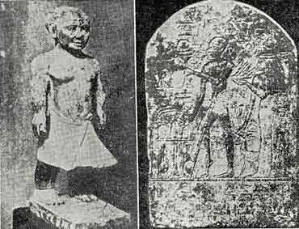
Fig 23 Achondroplasia (left) & Poliomyelitis? (right). 図23 軟骨形成不全（左）、ポリオ？（右）
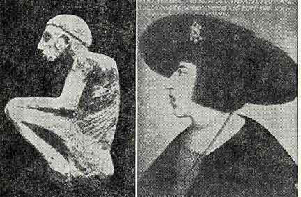
Fig 24 Pott's Disease (left) & Adenoids (right). 図24 脊椎カリエス（左）、アデノイド（右）
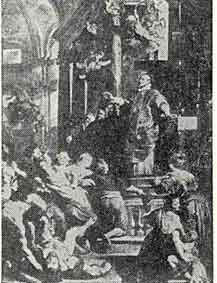
Fig 25 St.Ignatus Curing he Possessed and Reviving the Children by Rubens. 図25 聖イグナティウスが狂人を治し小児を蘇生させる（ルーベンス）
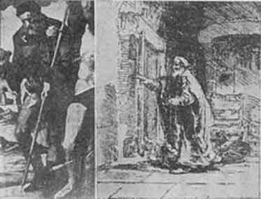
Fig 26 St.Roche with Plague Bubo, 1528 (left) & The Blind Tobias by Rembrandt (right). 図26 ペスト横痃のある聖ロクス（1568）（左）、盲人トピアス（レンブラント）（右）
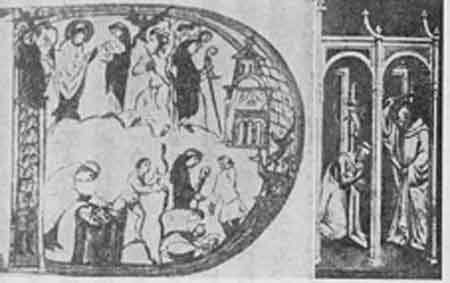
Fig 27 Exorcising Demons (left) & St.Benedict Exorcising a Demon (right). 図27 悪魔払い（左）、聖ベネディクトが悪魔払いをする（右）
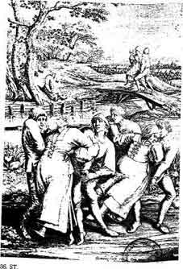
Fig 28 St. Vitus Dancers by Peter Breughel the elder. 図28 聖ウィトゥス舞踏病患者（大ブリューゲル）
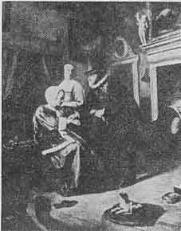
Fig 29 Physician and Patient by Jan Steen. 図29 医師と患者（ヤン・スティーン）
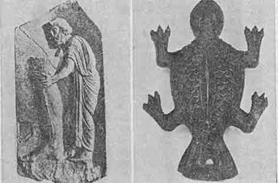
Fig 30 Varicose Leg from the Asclepius temple (left) & Wax Toad Representing Uterus (right). 図30 静脈瘤の脚（アスクレピオス神殿）（左）、子宮を表現する蝋のヒキガエル（右）
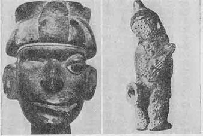
Fig 31 Peruvian Huaco: Facial paralysis (left) & Skin disease (right). 図31 ペルーのワコ：顔面麻痺（左）、皮膚病（右）
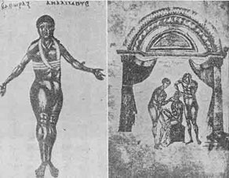
Fig 32 Surgical Dressing(left) & Reduction of the Dislocated Jaws(right). 図32 外科の包帯（左、ソラノス）、脱臼した顎の整復（右、キティオンのアポロニオス）
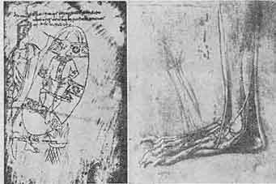
Fig 33 Medieval Cauterization(left) & Anatomical Drawing by da Vinci (right). 図33 中世の焼灼術（左、11世紀）、レオナルド・ダヴィンチによる解剖図（右）
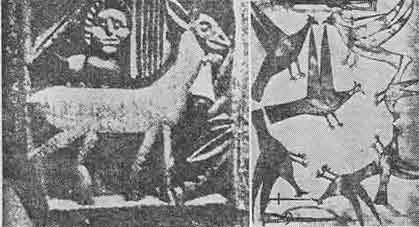
Fig 34 Relief(left) & Painting(right) by Mental Patients. 図34 精神病患者による作品：浮き彫り（左）、絵（右）
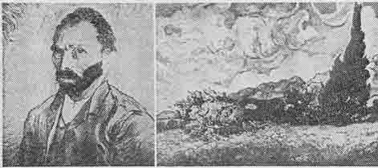
Fig 35 Self Portrait(left) & Landscape(right) by Van Gogh. 図35 ファン・ゴッホの作品：自画像（左）、風景画（右）
章註
(1) The relations between medicine and art have been studied very extensively by Charcot and his co-workers, particularly Paul Richer. In 1888 they launched a serial publication devoted to the subject, Nouvelle Iconographie de la Salpetiere artistique de la Nouvelle Iconographie de la Salp ti
ti re. A number of valuable monographs came from the same school, such as Charcot and Paul Richer, Les Demoniaques dans l'Art, Paris, 1887; Charcot and Paul Richer, Les Difformes et les Malades dans l'Art, Paris, 1889; Paul Richer, L'Art et la Medecine, Paris, n.d. [1902] In Germany these studies were cultivated particularly by Eugen Hollander, Die Medizin in der klassischen Malerei, Stuttgart, 1903; Die Karicatur und Satire in der Medizin, Stuttgart, 1905; Plastik und Medizin, Stuttgart, 1912. See also H. E. Sigerist, The Historical Aspect of Art and Medicine, Bulletin of the Institute of the History of Medicine, 1936, Vol. IV, pp, 271-296.
re. A number of valuable monographs came from the same school, such as Charcot and Paul Richer, Les Demoniaques dans l'Art, Paris, 1887; Charcot and Paul Richer, Les Difformes et les Malades dans l'Art, Paris, 1889; Paul Richer, L'Art et la Medecine, Paris, n.d. [1902] In Germany these studies were cultivated particularly by Eugen Hollander, Die Medizin in der klassischen Malerei, Stuttgart, 1903; Die Karicatur und Satire in der Medizin, Stuttgart, 1905; Plastik und Medizin, Stuttgart, 1912. See also H. E. Sigerist, The Historical Aspect of Art and Medicine, Bulletin of the Institute of the History of Medicine, 1936, Vol. IV, pp, 271-296.
tire. A number of valuable monographs came from the same school, such as Charcot and Paul Richer, Les Demoniaques dans l'Art, Paris, 1887; Charcot and Paul Richer, Les Difformes et les Malades dans l'Art, Paris, 1889; Paul Richer, L'Art et la Medecine, Paris, n.d. [1902] In Germany these studies were cultivated particularly by Eugen Hollander, Die Medizin in der klassischen Malerei, Stuttgart, 1903; Die Karicatur und Satire in der Medizin, Stuttgart, 1905; Plastik und Medizin, Stuttgart, 1912. See also H. E. Sigerist, The Historical Aspect of Art and Medicine, Bulletin of the Institute of the History of Medicine, 1936, Vol. IV, pp, 271-296.(2) Schrumpf-Pierron, Le mal de Pott en Egypte 4000 ans avant notre re, Aesculape, 1933, Vol. 23, pp. 295-299.
re, Aesculape, 1933, Vol. 23, pp. 295-299.(3) Marc Armand Ruffer, Studies in the Palaeopathology of Egypt, Chicago, 1921, pp. 3-10.
(4) Hellmuth Liebscher, Ein Kartographischer Beitrag zur Geschichte der Tanzwut, Leipzig Thesis, 1931.
(5) Liber Tobiae, XI, 13-15.
(6) See Robert Miillerheim, Die Wochenstube in der Kunst, Stuttgart, 1904.
(7) Edgar Goldschmid, Entwicklung und Bibliographie der pathologisch-anatomischen Abbildung, Leipzig, 1925.
(8) Berlin 1921; 2nd ed., 1923.
(9) See M. G. Baynes, Mythology of the Soul, a Research into the Unconscious from Schizophrenic Dreams and Drawings, Baltimore, 1940.
(10) V. Doiteau and E. Leroy, La Folie de Vincent van Gogh, Paris, 1928.--K. Jaspers, Strindberg und van Gogh, Berlin, 1926.-- W. Riese, Vincent van Gogh in der Krankheit, Grenzfragen des Nerven- und Seelenlebens, Heft 125, Munich, 1926.
（聖歌および民謡は松藤元訳による）
病気と音楽は非常に少ししか共通なものが無いように見える。しかし歴史を非常に大ざっぱに見ても常に密接な関係のあることが判る。ある人たちは立派な音楽家であり他の人たちはそうでない。しかし音楽によって全く影響されない人は居ない。すべての人がベートーヴェンの後期弦楽四重奏曲やドビュッシーの歌曲を鑑賞できるわけではないがブラスバンドが演奏する軍隊行進曲またはウィーンワルツの楽しい歌曲またはホットジャズまたはジャングルの太鼓を聴いて何か感じない人は少ない。我々の多くにとって音楽は絶大な感動と深い幸福の源である。
古代における音楽療法
もしも音楽が健康な人々に影響を与えるならば感情の釣り合いが不安定で外からの刺激により感じやすい病人たちにはさらに強い印象を与えるに違いない。「神の霊がサウルを襲うたびに、ダビデが傍らで竪琴を奏でると、サウルは心が安まって気分が良くなり、悪霊は彼を離れた。」(1)（サムエル記上16:23）。アスクレピオスは薬、ナイフ、鎮静させる歌で病人の手当をした。呪文は呪術の言葉が続いているだけではなかった。旋律があり「歌いかける」（インカンタチオ＊語源：向かって＋歌う）という言葉が意味するように病人に向かって歌わなければならなかった。古代を通じて音楽は病気の治療に用いられた(2)。
章で述べたように音楽はピュタゴラス学派で重要な位置を占めていた。またアウレリアーヌス（カエリウス、５世紀ごろ）(3)によるとシチリア医学派の医師によって使われていた。「他の人たちも歌の使用を認めている。フィリスティオンもまた『医療』XXII巻に述べている。その中である笛吹が身体の痛む部分の上でメロディーを奏したところその部分は震え脈動し痛みが無くなった後で楽になった、と彼は書いている」。この哲学者たちはまた音楽を治療に使うことを述べている。この問題についてゲリウスは随筆「アッティカの夜」に次のように書いている(4)。「テオフラストゥスの本『霊感』中に腰の痛風のような痛みが最も厳しいときにフルート奏者が苦痛を和らげるリズムを奏でると良くなることを多くの人が信じているとの記述に最近めぐりあった。またヘビの咬み傷がフルートを上手に調子よく奏でると治ることもデモクリトスの『致命的な感染症』に述べられていてフルート音楽は肉体が受ける多くの病気にとって薬になることを示している。人の心と身体のつながりは非常に密接であり従って身体や精神の病気とその薬とのあいだの関係もそうである」。これらの著者のあるものにとって音楽は心を媒介として身体に作用する一種の心理療法であった。後の医師たちはもっと懐疑的でソラノスは２世紀に次のように考えていた(5)。「これらの人たちが病気の重荷を『メロディーと歌』で追い出すことができると考えるとは愚かである」。しかし音楽療法が適用され続けられたことは疑いもない。医者が行わないでも数多くのいかさま医師や祭司や呪術者は古代ローマとその周辺に多くの顧客を持っていたであろう。中世とルネッサンス
音楽が祭儀で重要な役割をし宗教医学が著しく前景にあった中世でこの習慣が続いたことは明らかである。ディアコヌス作と言われる洗礼者ヨハネ降誕の有名な賛美歌(6)はたぶん歌詞からみて風邪を治す力があると信じられていた(7)。
そなたの下僕たるわれらが
そななと奇跡の薬をとげたる咽喉もて賛美し得るよう
汚れたる唇の罪を許したまえ
おお聖なるヨハネ（松藤訳）
そななと奇跡の薬をとげたる咽喉もて賛美し得るよう
汚れたる唇の罪を許したまえ
おお聖なるヨハネ（松藤訳）
身分の高い人が病気になると宮廷楽人は治らないにしても元気づけるように特別の作曲をした。教皇ボニファティウス８世が下剤を服用して放血する場合があった。学がある楽人で詩人であったボナイウトゥス・デ・カセンチノは２曲を作ってこれを記念した。彼は宮廷医マギステル・アクルシヌスに次の手紙を添えてこの２曲を教皇に見せるように送った。「教皇が作者の献身を褒めるかまたはもっとありそうなこととして作者の思いつきを笑うであろうから」。この２曲はヴァティカンの写本書庫に保存され最近になり出版された(8)。第１のものはバラードの一種であって長い歌詞に医学上のことと精神的なことが自由に混ざっている(9)。
願わくばかくて臓腑は洗われ
心の汚物溜めより
すべての禍の清められんことを
人の双方に健康の贈物をもたらすゆえ
皮膚の手入はたいせつなり
感情と知性が健やかに保たるる時
慰めのよき望みあり（松藤訳）
心の汚物溜めより
すべての禍の清められんことを
人の双方に健康の贈物をもたらすゆえ
皮膚の手入はたいせつなり
感情と知性が健やかに保たるる時
慰めのよき望みあり（松藤訳）
第２の賛美歌は次の歌詞で始まる教皇の放血にかんするものである(10)。
古き血汐の除かれ新たに生まるる時
喜びあり
かくて永えの天の望みの望み
与えられんことを（松藤訳）
喜びあり
かくて永えの天の望みの望み
与えられんことを（松藤訳）
教皇ボニファティウス８世は必ずしも病気ではなかった。中世に人々は特に春には衛生のために期間を置いて下剤をかけ放血したからである。しかしマントヴァのゴンザガ侯爵の場合は違った。彼はエステ家のイサベラの夫でその宮廷はイタリア・ルネッサンスで最も素晴らしいものであった。しかし侯爵は非常に病身で長年にわたって梅毒に罹っていた。当時のイタリア人は梅毒をフランス病と呼びフランス人はナポリ病と呼んで報復していた。侯爵は1519年に死去しその２年前1517年に楽人で友人であったカラは主君の病気について四声のフロットラを作曲した(11)。フロットラはトスカネラ、モレスコ、ヴィラネラのようにルネッサンス・イタリアで流行していた歌の形式であった。民謡に由来するものなのでカラの小品は主題がぞっとするにもかかわらず旋律は非常に簡単で面白く侯爵を非常に喜ばせたに違いない。歌詞は次のように始まる(12)：
いかに激しく荒れ狂う病なるか、なんたる悪疫ぞ
いかなる力が心を悩まし
いかなる悪の広
いかに心地よき毒の髄を食むか（松藤訳）
いかなる力が心を悩まし
いかなる悪の広
いかに心地よき毒の髄を食むか（松藤訳）
もちろん音楽はまた人間を病気から守護する聖人の祭儀でも使われた。私は嘗て古物屋で無名の作曲家による聖セバスティアヌスを賛美した音楽の興味深い本を見つけた。これには次のように格好の悪い題（ラテン語とドイツ語）がついていた。
ペストの特別の守護者、神聖にして光栄ある殉教者セバスティアヌスの生涯と行為。ラテン語とドイツ語の賛辞つきの銅版画にてあまねく説明されている。それに終りには多数の銅版画の後で総譜つきの音楽の小歌曲が添えられている。高貴の方々のお許しを得て、アウグスブルクの製本業者ウィルヘルム・パネガーにて入手できる、1702年。
本文にはセバスティアヌスの誕生から殉教までの話がラテン語とドイツ語で書かれている。音楽にはイタリアの影響が見られる。嘗てジョンスホプキンス大学医学史研究所で演奏して貰ったことがあった。
タラント病（舞踏病）の歴史
この章でとくに論じたいのは唯一の治療法が音楽である不思議な病気すなわちタラント病（舞踏病）の歴史である。この病気はアプリアに起きて数世紀のあいだ留まっていたように見える。医学文献にしばしば見られるが、それは主として風聞で知った人々によるものである。しかし幸運なことにアプリアに住んで自分の眼で病例を見て病歴を含む詳細な記載を書いた信頼できる２人の医師がいた。１人はフェルディナンドゥスであって医学的観察を収録したものを刊行するまでにアプリアに住んで開業していた(13)。もう1人は17世紀の指導的なイアトロ機械学者であったバリヴィであった。バリヴィはスイスの医師マンジェに依頼されて「医学臨床文庫」にタラント病についての短い報告を書いたが、これでは満足せずに1695年にこの主題についての学術論文を書いた(14)。フェルディナンドゥスの本と同じように多くの興味ある病歴が記載されている。
この主題への第３で重要な資料は好学のイエズス会士キルヒャーの「マグネスあるいは磁気学についての３巻の著書」でありこれは1641年にローマで始めて出版された(15)。本書ではあらゆる種類の磁気が取り扱われ「音楽の強力な磁気」のうちで最も長い章は「タラント病またはアプリアのタランチューラ蜘蛛、その磁気および音楽との奇妙な
個々の病例はイタリアの他の部分やスペインにもあったようであるがそれ以外にはアプリアに局在していた。アプリアはイタリアの長靴の踵にあたる非常に暑い地域である。バリヴィは次のように書いている。「上に述べたアプリアは東部にあって東風と北風を受けている。夏には夕立が非常に稀であって一言で言うとアプリアは土地が乾いていることと東に近いことから太陽の焼き付ける光線にさらされ住民は焼けたオーヴンから来た様な空気を吸っている……この気候の気質は住民の気質と合っている。一般に言って住民は熱狂し、激しい気質であり、黒い髪で、皮膚は褐色または蒼白く、痩せ、気が短く、気難しく、用心深く、理解が早く、推論が機敏で、非常に活動的である。彼らは激しい熱、狂乱、肋膜炎、狂気、その他の炎症性疾患に罹りやすい。否、あの地方では何人もの住民が暑熱に駆り立てられて非常に短気になって狂うのを見た(16)。」別の場所でバリヴィは強調している(17)。「イタリアの他の地方よりアプリアでは鬱病や狂気の人たちが多い……狂った犬が非常に多いことからもこのことは確認される。この狂気は大気の焦熱によるのであろう。しかし狂った犬に噛まれた人たちはレッチェから40マイルほど離れた聖ウィトゥスの墓に行くと急速に治癒するのは神の恩恵でありここで聖人の取りなしによって全能の神から回復の望みを得る。」
海岸線にギリシア人が植民しマグナ・グラエキアの一部であった。この頃でも内陸における住民の生活程度は向上しなかった。アプリアの農民はローマ以前の形式の円い小屋に住んでいた。主な市はタラントでギリシャ名はタラス、ローマの名前はタレントゥムであった。タラントの民俗舞踊は「タランテラ」でありこの地区にいるクモが「タラントゥラ」である。病気はクモに刺されると起きるので「タランティスモ」と呼ばれた。この病気に罹っている人たちが「タランタティ」であるがもっと一般的に「折られた、へし折られた、木っ端みじんにされた、壊された、打ち壊された(18)」人たちと呼ばれた。（＊イタリア語の訳は松藤元による）。タラントゥラはイタリア全土および南ヨーロッパの国々に居るが全く無害のクモと考えられている。したがってバリヴィはタラントゥラはアプリアのみで有毒で他の地域ではそうでないことを指摘した(19)。
この病気は夏の最高の暑さのとき７月および８月とくに猛暑のときに起きた。人々は眠っていようが起きていようが、ミツバチに刺されたような痛みを感じて突然に起き上がる。ある人はクモを見たが他の人は見なかった。しかしタラントゥラに違いないことを知っていた。彼らは家から街路に走り出し非常に興奮して踊りながら市場に行った。すぐに同じように咬まれたばかりの人たちや過去の年に咬まれた人たちが加わった。この病気は決して全治しないからであり毒は身体に残って夏の暑さで毎年ぶり返した。30年にわたって毎年ぶり返した人たちが知られていた(20)。どの年齢の人たちでもおかされ５歳の子もいたし嘗て１度さされた94歳の人もいたがタランタティの多くは若い人だった。この病気は両性を襲ったが男性より女性が多かった。大部分の患者は「田舎の男と女たち(21)」であったが、貴婦人と紳士、修道士と修道女すらも逃れることはできなかった。すべての人種が襲われた。フェルディナンドゥスはアルバニア人、ジプシー女、黒人が咬まれてダンスしていたことを知っていた(22)。
このように患者グループは集まり奇妙な服装をして踊った。「ときに気まぐれによって贅沢な衣服、奇妙な肌着やネックレスなど……主に赤、緑、黄色のような華やかな色を喜ぶ。逆に黒は我慢できない。見るとため息をつく。もしも近くに立っている人が黒を着ていると去れと言って打ちかかろうとする(23)。」他のものは節度を失ない衣服を破って裸体になる。ほとんどの人たちは赤い切れを手にし振ってこれを見て喜ぶ。「踊っているあいだにブドウの緑の大枝や芦を手に持って振ったり水に浸けたり顔や首に巻き付けて喜ぶ(24)。」あるものは剣を求めて剣士のように振り回し他は鞭を求めて互いに打ち合った。女性は鏡を求め淫らな様子をしてため息をついたり泣いた。あるものはもっと変わった好みを持っていて空中に投げあげられるのを喜び地面に穴を掘ってブタのようにゴミの中を転がって喜んだ(25)。すべての人たちはブドウ酒をたらふく呑んで酔っぱらいのように歌い話した。そして音楽に合わせて気が狂ったように踊りに踊った。
音楽と舞踏が唯一の効果がある治療法で音楽が得られないと１時間以内または数日後に死ぬことが知られていた。フェルディナンドゥス博士一家の１人であった従兄弟のフランチェスコ・フランコは咬まれた後で楽士たちが得られないので24時間内に死亡した。しかしふつう楽士たちは近くに居た。事実、楽士たちが近くに居るとクモは特に攻撃的になり音楽は夏の酷暑よりも以前の患者の体内にある毒を活性化した。バイオリン、各種の笛、チター、ハープ、タンバリン、小太鼓を持った楽士団が夏のあいだ国中を廻っていた(26)。彼らはタランテラを限りなく旋律を繰り返し早いテンポで演奏した。バリヴィは言った(27)。「しかし、個々の曲はいくら違っても考えられる最大の早さで演奏することで一致していた。（このように早い曲は一般にタランテラと呼ばれている。）」楽士たちは１カ所に数日ときには１週滞在し次の村に行った。この季節は彼らによい儲けとなった。
音楽は楽器によるものだけでなく声楽もありキルヒャーは幾つかの歌を残している。歌は恋歌であって次のようにイタリア方言で書かれていた(28)。
わが苦しみを柔らげんとならば
われを伴え海へ
海へ、海へ
かくてわがいとしの者はわれを愛す
海へ、海へ
命の限り汝を愛す（松藤訳）
われを伴え海へ
海へ、海へ
かくてわがいとしの者はわれを愛す
海へ、海へ
命の限り汝を愛す（松藤訳）
次のようなものもあった(29)。
タランチュラ蜘蛛には非ず、大なるも
そはびんより出づるぶどう酒
そは汝のいずこを咬みしや、わがいとしの者よ
われに示せ、そはいずこ
おお汝の足ならば、おお乳房ならば（松藤訳）
そはびんより出づるぶどう酒
そは汝のいずこを咬みしや、わがいとしの者よ
われに示せ、そはいずこ
おお汝の足ならば、おお乳房ならば（松藤訳）
他の人たちは歌詞を限りなく繰り返した(30)。
タランチュラは汝のいずこを刺したるか
スカートの縁の下を（松藤訳）
スカートの縁の下を（松藤訳）
これらの歌を引用するのは既に述べたこの病気の性的な性質をさらに示すためである。
音楽の調子に合わせて舞踏病患者は引き続き何日間も踊り物狂おしく行動した。４日間ときには６日間もつづけるのが普通であった。フエルディナンドゥスは２週間あるいはときによると１年間も踊った人さえ知っていたがこれは普通ではなかった。
バリヴィが書いたものを再び引用する(31)。「彼らはしばしば日の出とともに踊り出しそしてある者は午前11時頃まで休み無しに続ける。しかし中断がありそれは疲れたからではなく楽器の調子が狂ったのを見つけたからである。それが見つかると信じられないほど激しい溜息と心臓の苦しみに襲われる。この苦しみは楽器の調子が良くなるまで続きまた踊りは始まる……正午ごろに踊りは終わり汗を出すために寝台で包まれる。これが終わると汗を拭き取り薄いスープ（ブロス）または軽い食事をとって元気をつける。食欲が著しく無いのでもっとたくさん食べることができないからである。午後１時または遅くても２時には踊りはじめて前とおなじように夕方までつづける。それから汗を出すためにもう１度寝床へ行く。そして軽い食事をとって眠る。」
このように数日のあいだ踊った後で人々は疲れ―少なくともしばらくは治った。しかし身体に毒は残っていて夏になるとタランテラの音楽によって狂気が戻ることを知っていた。おおくの者とくに女性は気にせずむしろ好んだ。恋愛中の女性や孤独に感じている女性は舞踏に加わろうとして仮病になることも知られていた。もっと「狂乱」しもっと熱狂的であるように舞踏のときがくると性交をわざと控える者が多かった(32)。全体的に「女性の小カーニバル」と笑って呼ばれた(33)。
医師たちは明らかにこの不思議な病気に興味を持った。この病気がタランチュラに咬まれたためという一般の説を受け入れたが説明を必要とする困難があった。クモはアプリアだけで有毒であった。このクモをこの国の他の地域に送ると毒の大部分は失われ残った毒は違った作用をした。バリヴィはナポリでウサギをアプリアのクモで咬ませた。ウサギは5日目に死んだが、楽士を呼んで種々の音楽を奏でさせたがウサギは踊らなかった(34)。アプリアでは咬まれたスズメバチや雄鶏は踊るので不思議なことであった。タランチュラのクモそのものは音楽を聴くといつでも踊った(35)。ナポリの疑い深い医師は1698年８月に６人の証人と１人の公証人の前で２匹のアプリアのクモに左腕を咬ませた。彼はちくりと感じて腕はいくらか腫れたがそれ以上に悪い影響は無かった(36)。従って毒を活性化して特殊の効果を与えるのはアプリアの酷暑であるように思われた。しかしアプリアと同じように暑く同じタランチュラが居るのにタラント病が無かった。これらはすべて不思議なことであった。
説明が必要なもう１つの難点は夏の短期間を除いてなんら症状を現すことがなく毒が患者の体内で時によると何十年も留まっていることである。しかしこれは梅毒の毒と同じとして説明できた。見かけ上に梅毒が治っても長い年の後で病気が再発しこれは毒がまだ体内にあることを意味した。タラント病の場合に毒は体内にあって周期的に毒を活性化するのは酷暑および音楽であった。
医師たちはかなり沢山の患者を診察したが症状は非常に漠然としたものであった。実際に咬まれた場所には局所に傷があって他の虫に咬まれた場合と同じような腫脹があり周りに青黒または黄色っぽい輪で囲まれていた。別に患者は頭痛、呼吸困難、心臓の痛み、気絶、渇き、食欲不振、骨の痛み、を訴えた。彼らは骨が折れたように感ずるとしばしば言っていた。彼らはすべて踊ったので激しい運動によって以上の症状を充分に説明することができた。
医師たちはまた各種の治療を試みた。他の有毒動物による傷と同じようにメスで乱刺したり吸い玉を使って傷を治すように勧めた。バリヴィは傷を赤熱した鉄で焼灼することを勧めたがそれを確かめる機会がなかった。内科的には解毒剤や糖蜜とかブランディのような解毒物質が与えられた。
結果は希望があるものではなくその他に患者の大部分は傷が無かった。彼らは咬まれたがそれは昔のことであった。タラント病患者が真夏に踊るともちろん汗をたくさん出し医師たちは発汗が多いと毒を追い出して治癒すると医師たちは考えた。医師たちは患者たちに発汗剤を与えて踊らないで発汗するようにしたが効果は無かった。最終的に医師は音楽だけが治療効果を持ち一般にアプリアで何世紀もタラント病の治療に使われた旋律だけが有効であった。この音楽とそれによる舞踏およびその結果の発汗が永続的ではないにしても少なくとも真夏に１次的に患者を治癒させた。
バリヴィは優れたイアトロ機械主義者だったのでこの病気の病因と治療メカニズムを説明するのに困難はなかった。彼は書いた(37)。「この毒それ自身は最高の亢進状態にあるに違いない。しかし人の体質はいろいろと異なるので種々の効果を生ずる。このうちで主なものは凝縮と凝固であり
このような理論を基礎にして音楽の効果を楽に説明できた。「健康な人が音楽にうっとりとし聞いた音楽を真似するようなことができるのは明らかである。従ってタランチュラに咬まれた人の治療に音楽が有効であるという考えを容易にまとめることができる。楽器によって非常に速い運動が空気に伝えられ空気から皮膚へさらに精気と血液に伝えられ凝固をあるていど溶解させ消散させることが考えられる。音そのものが増加すると溶解の効果は増加する。動揺と振動が繰り返されると体液は最終的に元来の液体状態を取り戻すであろう。これによって患者は次第に元気を取り戻し四肢を動かし立ち上がりうめき激しく飛び回り、遂には汗が出て毒の種子が流れ出す。」
18世紀のあいだにタラント病はだんだんと減少してきたように見えた。バリヴィのこの問題についての論文が全医学界の注目をひいた後になってとくになおこの症例の報告が続いた。彼の名前は重要視され医師も素人もこの奇妙な病気が自分たちの地方でも起きないか見回した。「紳士の雑誌」1753年９月号はトレ・デラ・アヌンチアタで一例を見て患者のためにタランテラを奏したイタリアの音楽学生ストラチェの手紙をのせている(38)。彼は手紙に楽譜を添えている。偶発的な報告が他の地方からも来たが概してこの病気は消滅した。さらにアプリアのタランチュラは他の地方のものと決して違わないし刺されて起こる症状も完全に無害なことがわかった。タラント病は架空の話として捨て去られた。しかし何世紀ものあいだ多数の人たちが罹った実在の病気であったことは疑いも無い。もしもクモの毒で起きたのでないとしたら正体は何だったろうか？
フェルディナンドゥスが手掛かりを与えてくれている(39)。ある人々はタラント病が病気では全く無いと言っているが、もしも単なる作り事であるなら多くの貧しい人々とくに貧しい女性たちが有り金すべてを音楽に使い切ることはあり得ないと彼はすぐに反論して言った。彼らがそうするのは音楽とダンスが無かったら非常に悪い状態になることを知っていたからである、と。フェルディナンドゥスはさらに加えて、ある人たちはタラント病が「ある種の鬱病または狂気」と考えていると言った。これは疑いなく正しい説明であった。タラント病は病気であったがタランチュラが咬んだために起きたものではなく奇妙な神経症であった。
しかしここでなぜ人々はこの神経症をタランチュラ蜘蛛と結びつけたかなぜこんなに奇妙な症状を呈したか説明しなければならない。ここでフェルディナンドゥスは何気なく手掛かりを与えている。タラント病の音楽療法について論じその理由は判らないと言ったがアプリアではギリシアの伝統がずっと強かったと加えた。アプリアは嘗てマグナ・グラエキアの一部であって２人のギリシャ大学者ピュタゴラスとアルキュタスが教えていた(40)。
自分で気がついていなかったがフェルディナンドゥスは正しい点を抑えていた。ピュタゴラス学派では音楽が重要であったことは既に見た。同じ地域でディオニュソス、キュベレ、デメテルなどの祭儀、とくにディオニュソスの祭儀すなわち明らかに肉欲的な性質の興奮性の礼拝が行われていた。ブドウの葉でできた花輪のついた派手な衣服を着てバッコス酒神の杖を振り、猥褻な言葉を発し、衣服を破り、互いに鞭打ち、ブドウ酒を飲んで、人々は音楽に合わせて狂ったように踊った。これらの儀式とタラント病は驚くほど似ている。どのような関係があるのだろうか？
キリスト教は遅くなってアプリアに来てそこで古代の信仰と慣習が深く根を下ろしていた原始的で保守的な住民を見た。異教と争うに当たって住民のあいだで勝つためにキリスト教はいろいろの点で順応しなければならなかった。古い祝日を保存してキリスト教の出来事を記念するようにした。神殿の廃墟のあいだにある古い礼拝遺跡の上に教会が造られた。聖人は異教の神の役割と特徴を取り入れた。古代の基本的な祭儀たとえば行列はキリスト教的な形で引き継がれた。しかし限界があって教会はそれを乗り越えることはできなかった。ディオニュソス祭儀の底抜け騒ぎを同化することは出来ずそれと闘わなければならなかった。しかしもっとも原始的な本能に訴えるこれらの礼拝は最も根が深いものであった。それは存続し民衆は昔からの踊りや踊りに伴う総てのことを行うためにこっそりと集まってきたものと想像される。これをやることによって彼らは罪を犯すことになり遂にあるとき何時のことか判らないが多分中世だったろうが舞踏の意味が変わった。古い礼拝は病気の症状として現れた。これによって音楽、舞踏、総ての野蛮な底抜け騒ぎが正当化された。これらの礼拝を楽しむ人々はもはや罪人ではなくタランテュラの哀れな犠牲者であった。
すべての医学的な証拠によりアプリアの住民は近親結婚が多く精神病に罹るものが多くタランタティの大部分が神経症であったことは疑いが無い。タランティスムはこの地域に特有な神経症であった。同時にこれはキリスト教世界に異教の風習が残っていたもう１つの例であり医学および音楽の両方の意味でとくに興味深い。
 章挿画
章挿画

Fig 36 Tarantella(left) & Tarantula(right). 図36 タランテラ舞踏（左）、タランチュラ蜘蛛（右）
章註
(1) I Samuel, 17, 23.
(2) See L. Edelstein, Greek Medicine in its Rektion to Religion and Magic, Bulletin of the Institute of the History of Medicine, 1937, vol. V, p. 234 ff. where the following passages have been collected.
(3) De morbis acutis et chronicis, ed. I. C. Amman, 1709, p. 555.
(4) Loeb Classical Library, 1927, vol. I, pp. 352-354, translation by J. C. Rolfe.
(5) Caelius Aurelianus, L.c.
(6) Liber Usualis Missae et Officii, Festa Junii 24.
(7) In order that thy servants may sing with relaxed fibers the marvels of thy deeds, absolve, oh St. John, the guilt of the polluted lip.
(8) Johannes Wolf, Bonaiutus de Casentino, ein Dichter-Komponist um 1300, Acta Uusicologica, 1937, vol. IX, fasc. I-II, pp. 1-5. I am indebted to Mr. L. Ellinwood of the Music Department of Michigan State College for drawing my attention to this piece.
(9) May the bowels thus be washed and the cesspool of the mind purge itself of every evil. Care of the skin is worthy when it brings the gift of health to both aspects of man. When the sensitive and intellectual faculties are preserved there is good hope for consolation.
(10) Blood taken and redeemed may keep us joyful. May the eternal glory of the heavens thereby be wished for and granted.
(11) First published in a collection entitled Frottole libro tertio, a copy of which is preserved in the Biblioteca Marucelliana in Florence. See Emii Vogel, Bibliothek der gedruckten weltlichen Vocalmusik Italiens, Aus den Jaliren 1500-1700, 1892, vol. II, p. 374 ff. The text of the Frottola was reprinted by L. Joseph, Schweizerische Medizinische Wochenschrift, 1937, p. 1004.
(12) What violence and rage of so great a disease, what plague, what force harasses the mind, what evil creeps, sweet poison devours the marrow.
(13) Epiphanius Ferdinandus, Centum Historiae seu Obsercationes et Casus Medici, Venetiis, 1621. Historia LXXXI, seu casus octuagesimus primus, De morsu Tarantulae, pp. 248-268.
(14) Dissertatio de Anatome, Morsu, et Effectibus Tarantulae, reprinted in the various editions of the Opera Omnia Medico-practica et Anatomica. An English translation, A Dissertation of the Anatomy, Bitings and other Effects of the venemous Spider, call'd Tarantula was published with The Practice of Physick. The passages quoted in the following are from the 2nd English edition, London 1723.
(15) The edition I have been using is the Editio secunda post Romanam multo correctior, Colordae Agrippinae, 1643.
(16) L.c., p. 317.
(17) L.c., p. 365.
(18) Ferdinandus, l.c., p. 258.
(19) L.c., p. 335.
(20) Ferdinandus, l.c., p. 258.
(21) L.c., p. 264.
(22) L.c., pp. 261-262.
(23) Baglivi, L.c., p. 347.
(24) Baglivi, L.c., p. 346.
(25) Baglivi, L.c., pp. 331, 346.
(26) The instruments are described in Kircher's book, L.c., p. 765.
(27) L.c., p. 348.
(28) Carry me to the sea if you wish to cure me. To the sea, to the sea, thus my beloved loves me. To the sea, to the sea, as long as I live I shall love thee. Kircher, L.c., p. 763.
(29) It was neither a big nor a small tarantuk; it was the wine from the flask. Where did it bite you, tell me, beloved, where it was. Oh, if it was your leg, oh mamma! Kircher, L.c., p. 760.
(30) Where did the tarantula bite you? Under the fringe of the skirt. Kircher, ibidem.
(31) L.c., p. 344.
(32) Ferdinandus, l.c., p. 260.
(33) Baglivi, l.c., p. 335.
(34) L.C., p. 350.
(35) Ferdinandus, I.e., p. 261.
(36) Baglivi, Z.c., p. 361.
(37) See I.e., pp. 366-373.
(38) A German translation of the letter was published in Hamburgisches Magazin, oder gesammelte Schriften, Aus der Naturforschung und den angenehmen Wissenschaften berhaupt, Des dreyzehnten Bandes erstes Stck, pp. 3-8, Hamburg and Leipzig, 1754.
berhaupt, Des dreyzehnten Bandes erstes Stck, pp. 3-8, Hamburg and Leipzig, 1754.(39) L.c., p. 254.
(40) L.c., p. 266: cum enim nos semper grecissenms, nam haec nostra Regio dicebatur Magna Graecia, in qua olim Pythagoras et Archytas, praestantissimi Graecorum, summa ac admirabili auditorum frequentia docuerunt.
人類はいつでも病気によって痛めつけられてきた。寄生体は人を攻撃してきた。環境の物理学的および科学的な力は絶えず人生の正常過程を邪魔してきた。人は老化するとこれらの敵対力への抵抗力は弱くなりついには負けてしまう。しかし人は敵対力に常に抵抗し自然は他の動物に与えたと同じように人にたいしても自己の生命を保持し種族を永続させるという最も強力な衝動を常に与えてきた。
他の動物と同じように人もまた最初に病気にたいして本能的に反応し痛む四肢をこすり痒い傷をかき背中の痛みを軽くするために火のそばに行った。本能的に自分を強くする食物を求め病気になったと感じると治してくれる薬草を探した。本能的に脅威となる危険を避けた。
しかし自然は人類に本能以上のものを与えた。他の動物に与えたよりも優れた脳、観察し物事を判断し記憶し言葉を使って経験を他に渡す能力、を与えた。非常に初期に大発見がされたに違いない。数千年にわたり人々は森で狩猟をして足を折った。このような事故が起きると犠牲者は匍って自分の洞窟に戻るかまたは仲間に運んでもらった。数週間すると骨折は治るが脚は短くなり肢体不自由となって狩猟はできなくなり仲間の世話になった。或る日、誰かが折れた脚を延ばして短くならないようにするアイディアを得た。痛いので犠牲者には辛かったが折れた端を引っ張ってみた。しかし離すと脚は再び短くなることに気がついた。次に１片の樹皮または木切れを副木として折れた脚につけて延びた状態にした。この結果、犠牲者は肢体不自由にならないで回復した。人間は観察および発明の能力を持っているのでこのことは全世界で自然発生的に１度ならず何度も起きたに違いない。
文明は次第に発展した。人類は自然に打ち克つ力を得て自己の生活をより安全にするために自然の力を利用することを学んだ。土地を耕し動物を飼いジャングルに道を切り開き砂漠を潅漑した。健康を保持し健康を回復する医学は人間の文明の一面である。農業と同じように生活を保持し生活をより安全にする努力である。この本のすべてのページに記されているように医学の歴史は文明の一般史を反映している。文明が進歩するに従って人類はますます能率良く病気と闘うことができるようになりこの闘いにおいて医学は主な武器であった。
技術および科学としての医学
医学という言葉を私は最も広い意味で使っているが、医学には常に２つの要素（＊手技と科学）がある。最初から医学は手技であって手を使って仕事をし立派な仕事をするには熟練していなければならない職人によって行われた。手技はしばしば文献とは関係が無しに実地修練によって父から子へマイスターから弟子に伝えられる。外科医は軍隊に従い他の医師よりも常に旅をした。そして外国で新しい手術技術を見たり仲間から教わったりして持ち帰り自分の弟子に教えた。従って外科手術の歴史を追うのはしばしば困難である。手術の知識は１つの国から他の国に跳んでいるように見えて文献上の関係を見つけるのは困難なようである。職人わざは外科学に限ったことではない。古代の医師たちは薬として必要な薬草や鉱物を集め自己特有の処方薬を準備し、膏薬、錠剤、練り薬、シロップを作った。患者を燻したり洗浄したりし眼で検査するだけでなく手で脈を触れたり皮膚の緊張を調べたり腫瘍を探したりした。後になりますます複雑な診断器具や装置を使うことを学ぶ。
医学の手技は確かに理論と関係が無いわけではなかった。しかしあるていど別の発展方向すなわち経験的方向に発展した。傷の縫合、脱臼した関節の整復、骨折した骨への副木あて、頭蓋骨の穿孔、などの多くの外科手術は何千年もほとんど変更なく行われた。これらは解剖学の知識が乏しいときに経験的に工夫された。しかしこれらの方法は有効に働らき目的を達し理論とは関係なく使われた。同様に多くの薬物は何千年のあいだ経験を基礎にして与えられた。ヒマシ油、ルバーブ（大黄）、またはコロシント（熱帯アジア・アフリカ原産）の下剤としての効果や阿片の麻酔効果が１度観察されるとその時代の薬理学の学説がどうであろうともこれらの薬物は用いられて効果をあげた。学説自身が事実に適合させなければならなかった。ヒポクラテス学派の医師たちが患者に用いた食事は基本的には同じ組成で今日でも用いられている。ギリシア人はこれらの食事が役に立つことを知っていた。我々は何故これらが役に立つかを知っている。そして患者たちは数世紀のあいだこれらによって利益を受けてきた。
医学の手技とその時代の技術のあいだには常に関係があった。手術は青銅のメスでも可能であったが鋼鉄のメスはもっと優れていた。頭蓋は手動のトレフィン（円筒状鋸）で開くことができるが電動のトレフィンはもっと早くもっと正確である。
しかし医学は手技だけではない。医学はまたその時代の一般的な学問の一部であり生活についての一般的な見解すなわち「世界観」を反映している。病気は自然の一過程であって他の自然現象と同じように研究すべきものであった。古くからの手順に従うだけでなく病原と病因、病気の原因とその発生メカニズムを知るのが病気と闘うのにずっと効果のあることを原始的な人々はすでに知っていた。病気の原因がひとたび判ると個人は自己防衛ができるようになった。病気が起きると治療は原因を除くことに向けられた。「原因が除かれると結果は終わる」からである。病気の発生メカニズムがひとたび知られると治療および生体の治癒能力を正しい方向に向けるのが可能となった。
病気はその時に得られるあらゆる知的な財産の助けをかりて解釈されこれまでの章で呪術から宗教、哲学、そして最後に科学に至る医学の長い道のりを述べた。医学は自然科学の大きな進歩に充分に関与しそうすることによって医学は過去よりも限りなく効果的になった。病気という古い昔の束縛から人間を解放するのに使える武器を文明は新しい医学において作りあげた。
到達した進歩
文明は非常に複雑な現象である。物質的な面と精神的な面の両方を持っている。ある国で偉大な画家、詩人、哲学者が生まれたとしても子供たちがハエのように死に多くの人々が悲惨と飢餓で生きている限り真に文明化したとは言えない。これに対してある国で生活水準が高く健康条件が優れただけでは誰もこの社会が文明的であるとは言わない。人生を真に人間らしくしそれによって生きる価値があるようにするあらゆる精神的な価値を養うことが文明には必要である。医学が演ずることのできる役割は限られている。しかし医学は人類の福祉に大きく貢献し文化発達の条件作成を援助するので重要である。文明一般と同じように医学は非常に若い。歴史を眺めると5000年はほんの短い。しかしそれにもかかわらず少なくとも西欧では多くのことが達成された。なおもっと頼もしいのは進歩が過去よりも遙かに速くなった事実である。過去100年の進歩はそれ以前の4,900年よりも大きかった。従ってもっと驚くべき成果が期待できるであろうし病気は今から数世紀すると消失するかも知れない。
しかし健康状態の改善すべてを医学によるとするのは大きな誤りであろう。他の要因は同じように重要な役割を果たしてきた。恐れられたハンセン病が西欧からほとんど無くなったのは黒死病がハンセン病患者を一掃したからである。ペストは18世紀初めにヨーロッパから消えたがその理由は明らかでない。広く採用された検疫のような衛生的な手段が役だったことは疑い無いが都市の一般的な衛生状態はまだ非常に悪かった。すべての都市にネズミが多かった。
一般死亡率は17世紀から着々と低下した。医学はこの頃にはまだ発達していなかった。ロンドンのように急速に膨張した都市で死亡率の低下はとくに顕著であった。このことはすでに以前の章で述べている(1)。
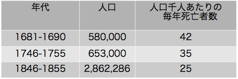
 章表１
章表１衛生施設だけによってこれらの数値を説明することはできない。改善された条件は主として生活水準と結果であるに違いない。工業化は新しい健康障害を生み長いあいだ悪い労働と生活の条件の原因となっているが最終的には何百万人の人々の生活水準を上昇させ今日では多くの国で健康条件は農村の人たちよりも工業の人たちの方がずって勝っている。
文明は色々な方法で病気と闘っているが医学はそのうちで最も強力な武器である。天然痘は嘗て最大の殺し屋であり全民衆を消すほどであったが接種方法が取り入れられジェンナーの種痘法の発見によって完全に予防できるようになった。狂犬病、ジフテリア、破傷風、腸チフス、コレラ、黄熱病その他の多くの病気に免疫法が有効に働きこれらの病気は著しく減少し最終的には完全に征服されるであろう。結核の恐怖はほとんど無くなり少なくとも経済的に進んだ国ではあまり遠くない将来に死に絶えるであろう。性病の病因と病原が明らかになり効果的な治療法が開発されたので急速に勢いを失っている。結核と性病は民衆が社会的に充分に進歩していて厳格な法律を受け入れるならば急速に征服される。肺炎はほんの昨日までも死の大きな原因であったが今日では化学療法によって治すことができる。産褥熱その他の連鎖状球菌による致死的な感染も間もなく過去の病気と考えられるようになるであろう。
大きな進歩がなされたのは感染症だけではない。糖尿病のインスリン療法や悪性貧血の肝臓療法（ビタミンＢ12療法）はほんのしばらく前だったら確実に死亡していた何千人もの人たちを救っている。ビタミンの発見はくる病、壊血病、ペラグラ、脚気を治し予防することをできるようにした。ホルモンの本態および機能が判るようになって、内分泌系疾患は抑えることができるようになった。外科学は手術結果が著しく良くなり資格ある外科医なら誰でも安全に手術できるように主な手術方法が標準化された。輸血方法が改良されて多くの人命が救われ災害が死亡の大きな原因となっている機械時代にはとくに重要なことである。
ある国家の一般的健康状態は測定できるし数字で示すことができる。一般死亡率は1000人あたり１年間に死亡する人数で示す。これは着々と減少している。18世紀に多くの国で50以下になることは殆ど無かったが今日では西欧諸国で8と15の間である。合衆国で1900年には17.6であったが1936年には11.5であった。この数値は1900年に死亡した75万人が合衆国で1936年には救われたことを意味している。これは確かに感動的な数字である。
過去において乳児の死亡率はとくに高かったのでこの分野における改善はとくに目覚ましい。乳児死亡率すなわち出生児1000人あたり生後１年以内に死亡する小児の数は今日多くの文明国で30と70の間である。18世紀にこれは10倍も高かった。
健康状態の改善および特に乳児死亡率が低下したことによって平均余命がかなり増加した。15世紀にヨーロッパで生まれた子供の平均余命は20から25歳であったが経済的に進歩した国で今日は60から66歳である。
未解決の問題
文明は人生を過去にくらべて非常に危険が無いものにしたことは疑いも無い。しかしこの任務は完全に成し遂げられたわけではない。前にも述べたように改善されたのは比較的に少数の国だけであって世界の人口の半分以上は未だ酷い健康状態で暮らし医学の進歩の恩恵を受けていない。この人たちを低い生活水準のままにしておいて健康を外から持ち込むことは出来ないから彼らの問題は特に困難である。片手で植民地の人たちを病気にたいして免疫する一方で他の手で搾取して飢えさせるとはひどい冗談である。経済の自由と教育はあらゆる公衆衛生の仕事の基礎である。これらが無いとあらゆる努力は無駄である。医学はなお多数の未解決の問題に直面している。最も顕著な進歩をとげた感染症や接触伝染病の分野においてさえ答えが得られない多くの問題がまだ存在している。1918-1919年におけるインフルエンザの世界大流行では数千万人が死亡しインフルエンザは１世代に１度は非常に規則正しく世界を襲うのでいつかまた同じようにひどい世界流行が予想される。我々は1918年当時よりも良く準備されてはいない。近年になりポリオ（小児麻痺）が増加し若者が肢体不自由になるのを防ぐことがほとんど出来ない。感冒およびその合併症で死ぬことはないが他の病気よりも一時的に作業能力を失い我々はそれを予防し治療することはなお不可能である。
過去にくらべてますます多くの人が年を取るのでますます多くの人々が成年および老年の病気で死亡する。合衆国でガンが死亡原因の２位であることを既に見た。心臓・循環器病が１位で死亡率は非常に高い。この２種の被害者の死亡率が高いだけでなく、関節炎、リュウーマチその他の慢性疾患と同じように長期間にわたって障害をきたし働けなくする。
これらの慢性病はときに「消耗病」と呼ばれる。これらの病気は年を取ると進行しこの経過は現代生活のストレスおよび過労によって速くなる。人間機械は簡単に壊れる。これを完全に防ぐことはできないだろうが遅くするのを学ぶことはできるであろう。既にこのような患者の一生をかなり延ばすことができる。
このように医学は解決しなければならない大きな問題を既に抱えている。しかし研究室や患者のベッドサイドで研究が進められている。医科大学はもはや単なる教育機関ではなく活発な研究センターである。若い学生たちは医師としての訓練を受けるとともに研究をしている医科学者と密接に関連している。彼自身は科学者になる。ニューヨークやプリンストンのロックフェラー医学研究所と同じような独立の研究所が幾つかの国で今世紀に作られた。それらは公共資金または個人の寄付によって保持されている。現代の科学研究は金がかかるが医学研究に使われた金は配当の多いすぐに回収できる投資であることを政府は認めるべきである。すべての医学の進歩は病気に罹ることを少なくし人の一生を長くすることによって社会の経済支出をかなり節約する。病気の予防は治療よりずっと安いことは自明の理であるがどの政府もこの簡単な原則の通りには行動しないのであるからいくらこのことを繰り返して言っても多すぎることはない。
充分に良くない健康状態
経済が発達した国では健康状態が大きく改良されこのことは非常に喜ばしい事であるが達成された成果に満足すべきではない。失敗と欠点を常に心に留めなければならない。昨年は一昨年よりも結核例が少なかったことに喜ぶべきではない。今でもこのように病例が多いことを問題としなければならない。ただ率だけで考えるべきでなく絶対数を考えなければならない。合衆国では乳児死亡率が低いようであるが何千人もの子供が死なないでもよいのに死亡していてこれは非常に悲しいことである。母性死亡率は比較的に低いが何千ものアメリカの家庭では死なないでもよいと思われる妻や母親を失っている。単に率で考えることをやめてこれらの母性死亡によって多くの家庭で起きる苦悩と悲しみをしばらく思い浮かべるならば今でも多くのことをすべきであるのに喜ぶ理由など無いことを知る。健康状態が良いとは言うべきではない。むしろ可能であるかぎり良い状態かどうか自分自身に絶えず尋ねなければならない。答えは断固として否である。我々が持つ病気の知識には大きなギャップがあり多くの病気には有効な治療方法が無い。そのような場合には大きな結果を期待することは出来ず研究に努力を集中すべきである。しかし我々はすでに多くのことを知っている。多くの病気の原因と病原を知っていてそれらにたいする有効な治療法を持っている。しかし病気は身の回りにある。すべての社会は今でも必要でない重荷を負っている。合衆国で全死亡の３分の１は早死であって医学のすべての恩恵が得られたならばもっと長生きしただろうと考えられている。１隻か２隻の軍艦の費用で性感染症を無くすことができるであろうが、そのようなことをしてはいない。まだ天然痘やジフテリアの病例があることを弁解できない。腸チフスや赤痢の流行はもはや天災ではなくてスキャンダルである。
我々は小さな病気に注目しなければならない。すなわち死ぬほどではないが働けなくなる病気である。合衆国で労働者は病気によって平均して毎年約８日を失っている。これは過去にくらべるとかなり少ない。1878年にペッテンコーファーはミュンヘンの住民が病気によって平均して毎年20日を失っていると見積もった(2)。しかし８日としてもアメリカの工業は延べ４億人・日を失っていることになる(3)。
進歩はしているものの1914-1918年の戦争で健康状態は決して満足でない事実が注目された。現在の第２次大戦で検査を受けた若者の殆ど半分は厳格な健康条件を満足しないことが判った。欠陥は多くのばあい些細であり容易に治癒できたがこのような欠陥があり個人がそれに注意していないという事実は必要な人員と装備を持っている国の状態として悲しいことである。
将来の課題
医学は進歩し健康状態は改善されたがこれらは決して同じ割合ではなかった。人々が実際に受け取っているものよりもずっと多いものを持っていた。この不一致の原因は容易に明白であり多く論じられているのでここでは議論を非常に短くまとめることにしよう。健康状態はいろいろの要因によって決定される。要因のうちで非常に重要なのは社会的および経済的な要因である。貧困は人類にとって呪いである。人々が消費できるであろうすべての食糧を生産することができる世界で科学が充分に進歩して自然の資源を組織的に活用し使用できる商品をすべて生産できるようになってもそれでも地球上の全住民の大部分は健康な生活を行えないレベルにあるであろう。
貧困は病気の主な原因として残り医学が直接に制御できない要因である。その救済方法は明らかである。生活水準を上げなければならない。西欧の若干の国だけでなくインド、中国、アフリカなどの全世界である。国民は他の国民を犠牲にして繁栄できず集団が他の集団を犠牲にしては繁栄できない。世界は非常に小さくなりある国の悲惨な状態は他の国に影響を与える。我々が科学の原則を社会生活の基本的な過程すなわち生産、分配および消費に応用することを最終的に覚えるとし科学的な方向に全世界の規模で社会生活を計画するとしたら生活水準を上げることができる。
健康状態はまた教育水準によって決定される。無知はまた病気の大きな原因である。健康は外から人々にもたらすことはできないし強いることはできない。革命後にロシアが医療を再編成したときに「人民の健康は人民自身の関心事である」のスローガンのもとにすべての保健事業を人民の広範な関与によって実行された。民衆が有能で医師の勧告を受け入れて協力する意思が無かったら我々の努力は失敗するであろう。しかし教育は読み書きの知識や病気についての若干の生半可な知識より以上のものである。健康にたいする積極的な態度や社会にたいする個人の責任を受け入れることを教えなければならないし伝統によって認められてはいるが健康な生活に深刻に妨げになるような慣習や偏見を克服しなければならない。これは困難な仕事であって心理的な理解と才能を必要とする。しかし教育一般および健康教育はすべての保健事業の基礎である。
健康状態、これは最終的には医療の有効性によって決定される。医学は無条件で受け入れられない限り無駄である。総ての者、健康な者と病人、金持ちと貧しい者、が利用できる保健サービスのシステムが必要でありこのようなシステムを作れない理由は無い。特に戦時下ではもっと大きな組織の問題が解決され解決されつつある。
必要なのは可能な限り病気の束縛が無い健全で健康な国民になるという鉄のような決意である。またこの100年のあいだに状態が大きく変化した事実を知らなければならない。２回の産業革命を経て社会構造は過去と大きく変化した。医学もまた進歩の結果として大きく変化した。医学は高度に技術的になり開業医と専門医の協同や診療所と病院の広範な使用が要求されるようになった。新しい社会に奉仕する新しい医学は新しい形のサービスを必要とする。我々は予防医学と治療医学のあいだの人為的な境界を打ち破らなければならない。人々に手を差し伸べ診察を行うが治療の必要な重要な時になると「掛かり付けの医師の所に行きなさい」と言って追い払うのは無駄なことである。多くの人はそのような掛かり付けの医師を持ってはいない。
医学の任務は健康を促進し病気を予防し予防できなかったときには病人を治療し治癒したらリハビリテーションを行うことである。これらは高度に社会的な機能であり医学は根本的には社会学とみなすべきである。医学はすべての文明国が発展させなければならない社会福祉施設の鎖における１つの環に過ぎない。今日、不釣り合いがあるとしたらこれは主として医学の社会学を無視してきた事実によっている。長いあいだ我々は科学研究に努力を集中しその結果の適用はひとりでに行われると思ってきた。このようには行かなかった。医学の技術は医学の社会学を追い越してしまった。
ここでは医学サービスの再編成(4)について論ずる場所ではないが明日の文明社会ではすべての家庭は家庭医の他に家庭の保健センターを持って公共サービスとして必要なあらゆる忠言と援助をこれから受けそれとともに国民の健康の保持に協力することになるであろう。医師は科学者、ソーシャルワーカー、教育者として公僕となり医学はますます病気から健康へ重点を移すことになるであろう。
このような保健サービスへの資金の問題は２次的なものである。ずっと困難な経済問題も解決されてきた。残酷な敵が襲ってきたときに必要なすべての金を我々は持っている。病気も敵である。攻撃は目覚ましいものではないかも知れないが実際の戦争で起こるのと同じように悪質であるしこの戦いで勝つのに必要な比較的に少ない資金は確かに見つけることができる。すべての個人の健康と福祉は社会の関心事であり、国籍、人種、宗教の境界を越えた人間の連帯は文明の真の基準である。
章註
(1) See Pettenkofer, The Value of Health to a City, Baltimore, 1941, p. 30.
(2) L.c., p. 21 ff.
(3) The figures are from a memorandum of Medical Administration Service in New York, by Kingsley Roberts and Martin W. Brown, issued in 1941.
(4) I have done it in a number of publications such as Medicine and Human Welfare, Yale University Press, New Haven, 1941.
文明が崩壊しているように見えるとき、地球を包んで戦争が荒れ狂っているとき、知性、人類の技能、および自然の富、の資源が破壊のために利用されているように見えるときに、文明について書くのは無益のように見える。そして我々は常に覚えていなければならないのは文明は人類の歴史において非常に若い現象であり原始的な野蛮な状態への逆行があり得ることである。5000年という短期間に多くのことがなされた。どんな爆弾も破壊できないような文化的価値が創られた。過去に比べて多くの自由、多くの正義、多くの健康が世界に存在しているが、充分ではなくこれが戦争の原因である。
医学の限られた領域で起きたことが世界全体で起きているように見える。技術が社会学を追い越した。精巧な機械が創られたが工業社会が必要とする社会組織および経済組織は創られていない。大陸間を繋ぐ輸送手段が得られるようになったが国家のあいだの平和な協働を確保する機構は創られていない。我々は世界の大きさを小さくしたが狭い利己的な国家主義でしか考えることをしない。機械時代は医学領域だけではなく総てのところで社会的および経済的な調節を必要としている。
この戦争は恐ろしいがこの非常な破壊は新しい世界の産みの苦しみの症状になっている。これは革命戦争である。圧迫されている国民や圧迫されているグループは政治的および経済的な独立のため、自由と正義のため、働く権利および過去において拒否されてきた安全を労働を通して獲得する権利のため、に戦っているし戦うであろう。
この戦争がどれほど続くか20世紀の初めに激烈となった紛争の最後のものになるかもう１つのエピソードに過ぎないかは我々は知らない。寿命は短いので我々はせっかちであるし結果を知りたいと思う。しかし歴史は人間の心臓よりも長いあいだ動いている。
歴史を研究すればするだけ人間の将来により多く期待し現在の戦争の最終結果への疑いがより少なくなっている。競争の社会から科学的原則の上に民主的に支配される協同的な社会へ、紙の上だけでなく事実として全員が平等の義務と平等の権利を持つ社会へ、歩むことになるであろう。我々はそれを見ることが出来ないかも知れないが子供たちまたは彼らの子供たちは見ることができるであろう。争っているあいだに新しいもっと良い文明の基礎が築かれている。
「ア行」
アウレリアーヌス（Caelius Aurelianus、５世紀ごろ）
アヴィセンナ（Avicenna、980-1038）
アグリコラ（Georgius Agricola、1494-1555）
アクルシヌス（Magister Accursinus）
アスクレピアデス （Asclepiades of Bithynia、124-40? B.C.）
アスクレピオス（Asclepius）
アナクシマンドロス（Anaximander、611-547 B.C.）
アナクシメネス（Anaximenes of Miletus、585?-528?B.C.）
アポロニオス（Apollonius of Citium、キティオン、紀元前１世紀）
アポロニオス（Apollonius of Tyana、テュアナ、１世紀、新ピタゴラス学派）
アリストテレス（Aristotle、384-322 B.C.）
アルキュタス（Archytas of Tarentum、紀元前４世紀）
イサベラ（Isabella d'Este、1474-1539、文芸の保護者、才色兼備）
イプセン（Henrik Ibsen、1828-1906）
ウィトルウィウス（Vitruvius、紀元前１世紀）
ウィルヒョウ（Rudolph Virchow、1821-1902）
ウィーラー（G.A.Wheeler）
ウェーラー（Friedrich W
hler、1800-82）ウルフ（Virginia Woolf、1882-1941）
ヴァイヤー（Johann Weyer、1515?-1588）
ヴィレルメ（Louis-Ren
Villerm、1782‐1863）ヴィーヴェス（Juan Luis Vives、1492-1540）
ヴェサリウス（Andreas Vesalius、1514‐1564）
ヴォルフ（Caspar Friedrich Wolff、1733-94）
ヴント（Wilhelm Wundt、1832-1920）
ウースター（Elwood Worcester、1862-1940）
エスキロール（Jean E.D. Esquirol、1772-1840）
エディ（Mary Baker Eddy、1821-1910）
エディソン（Thomas Alva Edison、1847-1931）
エピクロス（Epikuros、341?-270?B.C.）
エルラッハ（Fischer von Erlach）
エレンボク（Ulrich Ellenbog、1440-99）
エンゲルス（Friedrich Engels、1820-95）
エンペドクレス（Empedocles、490?-430?）
エールリッヒ（Paul Ehrlich、1854?-1915）
エーンズワース（William Harrison Ainsworth、1805-82、英国の歴史小説家）
オクスナー（Albert John Ochsner、1858-1925）
オシリス（Osiris）
オニール（Eugene O'Neill、1888-1953）
オリヴァー（John Rathbone Oliver、1872-1943）
オルカーニャ（Andrea Orcagna、1308?-68?）
オルライ（Bernaert van Orley、1492?-1542）
「カ行」
カッシオドルス（Flavius Magnus Aurelius Cassiodorus、490?-?585）
カニャール（Charles Cagniard de la Tour、1777-1859）
カラ（Marchetto Cara、1470?-1525?）
ガリレイ（Galileo Galilei、1564-1642）
カルカー（Jan Stephan van Calcar（Kalkar）、1499?-1545以後）
カルコピノ（Carcopino）
カルダノ（Geronimo Cardano、1501-76）
ガレノス（Claudius Galen, 130?-200?）
キュベレ（Cybele、大地の女神）
キュレル（Fran
 ois de Curel、1854-1928）
ois de Curel、1854-1928）キルヒャー（Athanasius Kircher、1602‐80、ドイツの万能学者）
キーツ（John Keats、1795-1821）
クインビー（Phineas Parkhurst Quimby、1802-1866）
クノウム-ホテプ（Chnoum-hotep）
クライスト（Karl Kleist、1879-1960）
グレコ（El Greco、1541-1614）
クローニン（A.J. Cronin、1896-1981）
ケリー（Howard Kelly、1858-1943、産婦人科学者）
ゲリウス（Aulus Gellius、125?-180?）
ケーラー（Erwin Kehrer、 1874-1959）
コッホ（Robert Koch、1843-1910）
ゴッホ（Vincent van Gogh、1853-90）
コルヴィザール（Jean Nicolas Corvisart des Marest 1755-1821）
ゴンクール兄弟（Goncourt、兄1822-96、弟1830-70）
ゴンザガ侯爵（Francesco Gonzaga、1466-1519）
コント（Auguste Comte、1798-1857）
コーエ（
 mile Cou）
mile Cou）ゴールドバーガー（Joseph Goldberger、1874-1929）
サイデンストリッカー（Edgar Sydenstricker、1881-1936）
「サ」行
サクラ（C. Turner Thackrah、1795?-1833）
シェリー（Percy Bysshe Shelley、1792-1822）
シデナム（Thomas Sydenham、1624-89）
ジャネ（Paul Janet、1823-99）
シャルコ（Jean Martin Charcot、1825-93）
シュニツラー（Arthur Schnitzler、1862-1931）
ジョイス（James Joyce、1882-1941）
ショー（George Bernard Shaw、1856-1950）
ジョーンズ（William Henry Samuel Jones、1876-1963）
シラー（Friedrich von Schiller、1759-1805）
シンガー（Charles Singer、1876-1960）
ジンサー（Hans Zinsser、1878-1940）
スティーン（Jan Steen、1626-79）
ストラチェ（Stephan Storace）
ストリンドベリ（August Strindberg、1849-1912）
聖アントニウス（St. Anthony、251?-?356、僧院制度の創始者）
聖エリサベト（St.Elisabeth、ヨハネの母）
聖ベネディクト（St. Benedict、480?-?543、ベネディクト会を創設）
聖イグナティウス・ロヨラ（St.Ignatius、1491-1556、イエズス会創設者）
聖ウィトゥス（St. Vitus、4世紀初頭の少年殉教者）
聖セバスティアヌス（St. Sebastian、?-288）
聖ブラシウス（St.Blaise、?-316、のどの痛みと家畜の病気）
聖ラザロ（St. Lazarus、蘇生したハンセン病の乞食）
聖ロクス（St. Roch、14世紀）
セヴィニエ侯爵夫人（Madame de S
vign（1626-1696）、30年間に約1120の手紙を娘宛に書いた）セラピス（Serapis）
ソクラテス（Socrates、470?-399 B.C.）
ゾラ（
mile Zola、1840-1902）ソラノス（Soranus、２世紀初）
「タ」行
大プリニウス（elder Pliny、23-79）
ダウ（Gerard Dou、1613-75）
タレス（Thales of Miletus、640?-546?B.C.）
チェリ（Angelo Celli、1857-1914）
チェーホフ（Anton Pavlovich Chekhov、1860-1904）
チャドウィック（Edwin Chadwick、1834-46）
ディアコヌス（Petrus Diaconus）
ディオニュソス（Dionysos、酒の神）
ディオニューソス（Dionysus）
ディケンズ（Charles Dickens、1812-70）
テオフラストゥス（Theophrastus、371?-?287 B.C.）
デカルト（Ren
Descartes、1596-1650）デフォー（Daniel Defoe、1660-1731、ロビンソン・クルソーの著者）
デメテル（Demeter、農業や結婚の女神）
デモクリトス（Democritus、460?-?370 B.C.）
デュアメル（Georges Duhamel、1884-1966）
デュナン（Henri Dunant、1828-1910）
テューク（William Tuke、1732-1822）
デューラー（Albrecht D
rer、1471-1528）テレスポロス（Telesphorus）
テーヌ（Hippolyte Taine、1828-93）
ドイッチュ（Nicolas Manuel Deutch）
ドイッチュ（Nicolaus Manuel Deutsch）
ドストエフスキー（Fyodor Mikhaylovich Dostoevski、1821-81）
トビアス（Tobias、トビト（Tobit）の息子）
ドビュッシー（Claude Achille Debussy、1862-1918）
トルストイ（Lev Nikolayevich Tolstoi、1828-1910）
トルソー（Armand Trousseau、1801-67）
ドロンケ（Ernst Dronke、1822-91）
ドーマク（Gerhard Domagk、1895-1964）
「ハ」行
パウサニアス（Pausanias）
ハウプトマン（Gerhard Hauptmann、1862-1946）
ハガード（Sir Henry Rider Haggard、1856-1925、ソロモン王の洞窟などの著者）
バシュキルツェフ（Marie Bashkirtseff、1860-84）
パストゥール（Louis Pasteur、1822-95）
バトラー（Samuel Butler、1835-1902）
パラケルスス（Philippus Aureolus Paracelsus、1493-1541）
ハラー（Albrecht von Haller、1708-77）
バリヴィ（Giorgio Baglivi、1668-1706）
ハリントン（Sir John Harington、1561-1612）
ハルトマン・フォン・アウエ（Hartmann von Aue、1170頃-1210頃、ドイツ叙事詩人）
ハワード・ケリー（Howard Kelly、1858-1943、産婦人科学者）
ハンス・ドリーシュ（Hans Adolf Eduard Driesch、1867-1941）
ハーヴィ（William Harvey、1578-1657）
パーキンス（James Perkins）
ハーゲン（B. Hagen）
ビシャ（Marie-Fran
ois-Xavier Bichat、1771-1802）ピネル（Philippe Pinel、1745-1826）
ヒポクラテス（Hippocrates、460?-375?B.C.）
ヒュゲイア（Hygeia）
ピュタゴラス（Pythagoras、580?-500?B.C.）
ビュヒナー（Ludwig B
chner、1824-99）ビュレイン（William Bullein、1515?-1576）
ピープス（Samuel Pepys （1633-1703）、英国の海軍大臣、1660-69年に暗号を使って書いた日記は有名）
ファウスト（Bernhard Christoph Faust、1755-1842）
ファン・ドンゲン（G.J. van Dongen）
フィリスティオン（Philistion、427-347B.C.）
フェルディナンドゥス（Epiphanius Ferdinandus、1569-1638）
フォイエルバッハ（Ludwig Andreas Feuerbach、1804-72）
フォイト（Carl Voit、1831-1908）
フォルツ（W. Volz）
フォレル（August Forel、1848-1931）
フォン・ユクスキュル（Jacob Johann von Uexk
ll、1864-1944）フォークト（Karl Vogt、1817-95）
フォールスタフ（John Falstaff、シェークスピア劇中の大兵肥満の騎士）
フッガー一家（Fugger、15-16世紀の南ドイツ財閥）
フッテン（Ulrich von Hutten、1488-1523）
プフィッツナー（Hans Pfitzner、1869-1949）
フラカストロ（Girolamo Fracastoro、1478?-1553）
プラット（Joseph H.Pratt）
フランク（Johann Peter Frank、1745-1821）
プリチャード（James Cowles Prichard、1786-184）
ブリッテン（Rollo H. Britten）
ブリュー（Eug
ne Brieux、1858-1932）プリンツホルン（Hans Prinzhorn、1886-1933）
フリードリッヒ・エンゲルス（Frederick Engels、1820-95）
ブルジェ（Paul Bourget、1852-1935）
ブルナチニ（Burnacini）
プルースト（Marcel Proust、1871-1922）
ブルーメンバッハ（Johann Friedrich Blumenbach、1752-1840）
ブレーデル（Max Broedel、1870-1941、画家）
ブロイアー（Josef Breuer、1842-1925）
フロイト（Sigmund Freud、1856-1939）
ブロイラー（Eugen Bleuler、1857-1939）
プロティノス（Plotinus： 3世紀、新プラトン主義）
フロベール（Gustave Flaubert、1821-80）
ブローウェル（Adriaen Brouwer、1605-38）
ペッテンコーファー（Max von Pettenkofer、1818-1901）
ベラスケス（Diego Rodriguez de Silva y Velasquez、1599-1660）
ベラマン（Henry Bellamann、1882-1945、アメリカの小説家）
ベルトロ（Marcelin Berthelot、1827-1907）
ベルナデット・スビルー（Bernadette Soubirous：粉屋の娘）
ベルナール（Claude Bernard、1813-78）
ベルネーム（Hippolyte Bernheim、1840-1919）
ヘルムホルツ（Hermann Ludwig Ferdinand von Helmholtz、1821-94）
ヘルモント（Jean Baptista van Helmont 1577?-1644?）
ペン（William Penn、1644-1718）
ベンジャミン・マクレディー（Benjamin McCready）
ヘンレ（ Friedrich Gustav Jakob Henle、1809-85）
ベートーヴェン（Ludwig van Beethoven、1770-1827）
ホィットマン（Walt Whitman、1819-92）
ボエティウス（Anicius Manlius Severinus Boethius、480-?524）
ボゲルト（Abraham Bogaert）
ボッカチオ（Giovanni Boccaccio、1313-75）
ボナイウトゥス・デ・カセンチノ（Bonaiutus de Casentino、14世紀）
ホメロス（Homer、紀元前9世紀ごろ）
ホーガース（Hogarth、1697-1764、英国の画家）
ホーフストラーテン（van Hoogstraaten、1627-1678）
ホームズ（Oliver Wendell Holmes、1841-1935）
「マ」行
マルキアファヴァ（Ettore Marchiafava、1847-1935）
マルクス（Karl Marx、1818-83）
マルチアリス（Marcus Valerius Martialis、40?-104?）
マルピギ（Marcello Malpighi、1628-94）
マン（Thomas Mann、1875-1955）
マンジェ（J.J.Manget、1652-1742）
ミエリス（van Mieris、1635-81）
ミッチェル（Weir Mitchell、1829-1914）
ミトラス（Mithras）
メスマー（Franz Mesmer、1734-1815）
メッツ（Gabriel Metsu、1629-67）
メリメ（ Prosper M
rime、1803-70）モリエール（Moli
re、1622-73）モルガニ（Giovanni Battista Morgagni、1682-1771）
モーム（Somerset Maugham、1874-1965）
「ヤ」行
ヤスパース（Karl Jaspers、1883-1969）
ユヴェナリウス（Decimus Junius Juvenalis、60?-140?）
ユゴー（Victor Hugo、1802-85）
ヨルダンス（Jacob Jordaens、1593-1678）
「ラ」行
ラヴォアジエ（Antoine Laurent Lavoisier、1743-94）
ラヴラン（Charles-Louis-Alphonse Laveran、1845-1922）
ラエネック（Ren
Thophile Hyacinthe Laennec、1781-1826）ラファエロ（Raphael Santi、1483-1520）
ラマッチニ（Bernardino Ramazzini、1633-1714）
ラ・メトリ（Julien Offroy de La Mettrie、1709-51）
リービッヒ（Justus von Liebig、1803-1873）
ルイス（Sinclair Lewis、1885-1951）
ルクレティウス（Titus Lucretius Carus、97?-54 B.C）
ルナン（Ernest Renan、1823-92）
ルマ（Ruma）
ループナー（Max Rubner、1854-1932）
ルーベンス（Peter Paul Rubens、1577-1640）
レオナルド・ダ・ヴィンチ（Leonardo da Vinci、1452-1519）
レンブラント（van Rijn Rembrandt、1606-69）
レーウェンフーク（Anton von Leeuwenhoek、1632-1723）
ロウウェル（Rowell）
ロス（Ronald Ross、1857?-1932）
ロンブロゾ（Cesare Lombroso、1836-1909）
ローランドソン（Rowlandson、1756-1827、英国の風刺画家）
「ワ」行
ワット（James Watt、1736-1819）
ワトー（Jean Antoine Watteau、1684-1721）
1842年の大英帝国における労働人口の衛生状態についての報告（Report on the Sanitary Condition of the Labouring Population of Great Britain of 1842）
1844年のイギリスにおける労働者階級の条件（The Condition of the Working Class in England in 1844）
1846年のベルリン（Berlin of 1846）
「ア」行
愛の臨床（la clinique de l'amour）
悪魔の妖術について（De Praestigiis Daemonum）
新しい偶像（La Nouvelle Idole）
アロウスミス（Arrowsmith）
哀れなハインリッヒ（Armer Heinrich）
医学展覧会（Medicine Show）
医学臨床文庫（Bibliotheca Medico-Practica）
生きた新聞の劇（Living Newspaper Play）
居酒屋（L’Assommoir）
失われた時を求めて（A la Recherche du Temps Perdu）
エイジャクスの変身（Metamorphosis of Ajax ＊ajax（a jakes）は便所の古い英国俗語。）
疫病年代記（Journal of the Plague Year）
エレウォン（Erewhon）
老いた聖パウロ（Old St. Paul）
オテル・ディユ病院医学臨床講義（Le
ons de Clinique Mdicale de l'Htel-Dieu）音楽の強力な磁気（De Potenti Musicae Magnetismo）
「カ」行
解剖学的に研究した病気の座と原因について（De Sedibus et Causis Morborum per Anatomen Indagatis）
科学と健康、聖書への鍵（Science and Health with Key to the Scriptures）
完全なる医事警察のシステム（System einer Vollst
ndigen Medicinischen Polizey、＊日本においても敗戦まで医事行政の末端は警察が行っていたようである。）気質によって見た自然（La nature vue par un temp
rament）気で病む男（Le Malade Imaginaire）
キングズ・ロウ（Kings Row）
健康問答集（Catechism of Health）
鉱業冶金（De re metallica）
鉱夫病およびその他の鉱山病（Von der Bergsucht und andern Bergkrankheiten）
「サ」行
サーン博士（Doctor Therne）
ジェルミニ・ラセルトゥ（Germinie Lacerteux）
実験医学序説（Introduction
 l'tude de la mdecine exprimentale）
l'tude de la mdecine exprimentale）実験小説（Le Roman Exp
rimental）主要な手工芸、商売および専門職、ならびに都市の状態および生活習慣の、健康と寿命におよぼす影響（The Effects of the Principal Arts, Trades, and Professions, and of Civic States and Habits of Living, on Health and Longevity）
人体の構造についての７章（De Corporis Humani Fabrica Libri septem）
世紀の伝説（La Legende des Si
cles）聖人伝集（Legenda Aurea）
精神病患者の絵、造形心理学と精神病理学への寄与（Bildnerei der Geistes-kranken, ein Beitrag zur Psychologie und Psychopathologie der Gestaltung）
接触伝染と接触伝染病、ならびにその治療について、第３巻（De contagione et contagiosis morbis eorumque curatione libri III）
「タ」行
第二帝政時代における一家族の自然および社会の歴史（Histoire Naturelle et Sociale d’une Famille sous le Second Empire）
多産（F
condit）デカメロン（Decameron）
弟子（Le Disciple）
テレーズ・ラカン（Th
rse Raquin）天国の鍵（The Key of the Kingdom）
「ナ」行
人間機械論（L'homme machine）
人間の絆（Of Human Bondage）
ネズミ、シラミと歴史（Rats, Lice and History）
熱疫病への対話（A Dialogue Against the Feuer Pestilence）
「ハ」行
梅毒病み（Les Avari
s）パスカル博士（Le Docteur Pascal）
働くものの病気について（De morbis artificum diatribe）
犯罪人（L’ulomo delinquente）
人の自然性について（On the Nature of Man）
フィロメヌ姉妹（Soeur Philom
ne）法律上の鑑定の基礎となる精神病例の観察結果（R
sultats d'observations pour servir de base aux rapports juridiques dans les cas d'alination mentale）「マ」行
マグネスあるいは磁気学についての３巻の著書（Magnes sive de Arte Magnetica Opus Tripartitum,）
魔女の槌（Malleus Maleficarum）
魔の山（Zauberberg）
南カロライナ州の７つの紡績工場村における休業を来す病気と家族の収入の関係（Disabling Sickness among the Population of Seven Cotton Mill Villages of South Carolina in Relation to Family Income）
綿、羊毛、絹の製造業に雇用されている労働者の肉体的および道徳的な状態の描写（Tableaux de l’
t t Physique et Moral des Ouvriers Employs dans les Manufactores de Coton, de Laine et de Soie of 1840）
t Physique et Moral des Ouvriers Employs dans les Manufactores de Coton, de Laine et de Soie of 1840）「ヤ」行
有毒で有害な蒸気と煙について（Von den gifftigen besen tempffen und reuchen）
「ラ」行
ルルド（Lourdes）
「ア」行
アガペ（agape＊初期キリスト教徒が同胞愛を示した会食）
悪混合（dyskrasia）
悪性斑点熱（malignant spotted fever）
悪魔（devil）
アルケウス（archaeus）
アルコールせん妄（delirium tremens）
ある種の鬱病または狂気（melancholiae seu amentiae quaedaｍ species）
イアトロ化学（iatrochemistry）
イアトロ物理学（iatrophysics）
生きた解剖学（anatomia animata）
一過性もうろう状態（Episodische D
mmerzustnde）田舎の男と女たち（homines rustici similesque femelle）
医療費委員会（Committee on the Costs of Medical Care）
歌（cantilenae ）
歌いかける（incantatio）（＊語源：in向かって、cantare歌う）
ヴィラネラ（vilanella）
営業法（Gewerbeordnung）
エディプス・コンプレクス（Oedipus complex）
エドウィン・スミス・パピルス（Edwin Smith Papyrus）
エベルス・パピルス（Ebers Papyrus）
王の病（King's Evil）
「カ」行
活動的に働く力（dynameis）
神の行為（act of God、＊不可抗力）
神の最大名誉のため（ad maiorem Dei gloriam）
神のもの（ens dei）
神盟裁判（ordeal ＊中古チュートン民族の裁判）
看護者（Knights Hospitaller、エルサレムの聖ヨハネ病院）
完全なる医事警察のシステム（System einer Vollst
ndigen Medicinischen Polizey、＊日本においても敗戦まで医事行政の末端は警察が行っていたようである。）技術（techne）
黄胆汁（yellow bile）
キトン（chiton）
宮廷医（archiatri）
救貧法（Poor Law System）
キュロット（culottes）
狂乱（deliramenta）
クリスチャン・サイエンス（Christian Science）
クリノリン（crinoline、馬毛を入れた堅い布）
黒胆汁（melaina chole）
経験学派（Empiricist）
形成本能について（
 ber den Bildungstrieb）
ber den Bildungstrieb）形成力（nisus formativus）
原因が除かれると結果は終わる（causa remota cessat effectus）
賢者の石（lapis philosophorum）
国際公衆衛生局（Office International d'Hygi
ne Publique ）故殺（manslaughter、＊一時的な感情激発によって人を殺すこと）
コレジュ・ド・フランス（Coll
ge de France）「サ」行
最初、のどに乾燥感を覚え、続いて、腹部の堪えられない痛み、下痢、昏睡、でした。（Nous avons eu d'abord un sentiment de siccit
au pharynx, puis des douleurs intolrables pigastre, superpurgation, coma.）サリカ法（Lex Salica）
サルペトリエール病院（Salp
trire）産業災害保険法（Industrial Accidents Insurance Act）
サン・キュロット（sans-culottes）
自然治癒力（vis medioatrix naturae）
自然のもの（ens naturale）
疾病保険法（Sickness Insurance Act）
社交性アルコール中毒（alcoholisme mondaine）
シャマン（＊巫女、シャーマン）
集産主義（collectivism、＊生産手段を国営化する主義）
呪術（magic）
呪文（incantation）
瘴気（miasma）
小ブルグッシュ・パピルス（Papyrus Brugsch Minor）
女性の小カーニバル（Il Carnevaletto delle Donne）
振戦せん妄（delirium tremens、アルコールせん妄）
人命金（wergeld）
ストロフィオン（strophion）
すべての人たちから離れた場所（loco remoto a toto populo）
生気論（vitalism）
精神のもの（ens spirituale）
生理的に（dia physin）
世界観（Weltanschauung）
接触伝染源（contagium）
絶対的な力（vis essentialis）
ゼノドキウム（xenodochium 宿屋）
前兆（omen）
「タ」行
大医（valde docti）
多血質（sanguine）
多様性（variatio delectat）
タランタティ（tarantati）
タランティスモ（tarantismo）
タランテラ（tarantella）
タラントゥラ（tarantula）
胆汁質（choleric）
チフス（＊英語でtyphusは発疹チフス、typhoidが腸チフス。日本語でチフスと言うと腸チフス）
調理（coction、ギはpepsis）
ツァラート（zara'ath 重い皮膚病）（＊ハンセン病）
庭園にはもう薬草は無い（nulla herba in hortis）
帝国憲法（Constitutiones Imperiales）
貞淑な結婚（Casti connubii ）
テュニカ（tunica）
洞察する（theorein）
道徳的な異常精神（moral insanity）
毒のもの（ens veneni）
都市国家（civitas）
トスカネラ（toscanella）
共働者原則（fellow servant doctrine）
「ナ」行
内陣（abaton）
軟骨形成不全（achondroplasia）
肉付きのよいこと（embonpoint＊婉曲に肥満を表現するフランス語）
粘液質（phlegmatic）
「ハ」行
バスル（bustle）
発生理論（Theoria Generationis）
鼻硬化症（rhinoscleroma）
鼻瘤（rhinophyma）
母教会（Mother Church）
パラミルム（Volumen Paramirum）
パリウム（pallium）
犯罪人（L’ulomo delinquente）
パンと娯楽（panem et circenses）
ビセートル病院（asylum Bic
tre）ヒポカウストゥム（hypocaustum 床下暖房室）
ヒマティオン（himation）
病因（pathogenesis）
病原（etiology）
フォー・キュル（faux-cul）
孵化（incubatio）
不健康物質（materia pecans）
プシケ（psyche）
フランス病（morbo gallico）
フロットラ（frottola）
ペスト
ペスト（＊英語ではplague、独仏ではpest。昔は流行病全般を呼んだが、現在はペスト菌による感染に限定）
ペストの柱（Pestsdulen）
ペプロス（peplos）
ペヨーテ（peyote ＊一種のサボテンからとる幻覚剤）
謀殺（murder、＊あらかじめ思慮をめぐらして殺人の意思を遂行して人を殺すこと）
報復権（ius talionis）
方法学派（methodist）
ボヴァリ夫人（Madame Bovary）
星のもの（ens astrale）
「マ」行
魔女（witch）
マミラーレ（mamillare）
見習い工の健康と道徳の法律（Health and Morals of Apprentices Act）
見ることを知る（saper vedere）
民法（code civil、＊フランス法）
メロディーと歌（modulis et cantilena）
木星（Saturn）
目的論（teleologism）
もの（entia ＊ensの複数形。存在する物、原理、領域。ドイツ語ではDing。英語のentityの語源）
モレスコ（moresco）
「ヤ」行
雇い主責任法（Liability Act）
憂鬱質（melancholic）
優雅な世紀（si
cle galant）妖術（witchcraft）
養生（ディエテティックス：＊ディエテティックスはふつう食餌療法と訳されるが、食事だけでなく運動もふくめ毎日の生活様式一般の指導が元来の意味なので、養生または食養生と訳した）
ヨーク収容所（York Retreat）
「ラ」行
良混合（eukrasia）
霊魂（spirit）
レンズ豆または小斑点（lenticulae or puncticula）
労働者の大きな過失（gross carelessness of the worker）
労働者補償法（Workmen's Compensation Act）
労働者令（Statute of Labourers）
ローマ法大全（Corpus Iuris Civilis）
「ワ」行
若返りの秘薬（elixir）
ワコ（Huaco）
本書はヘンリー・Ｅ．シゲリスト（1891-1957）が1940年11月-12月にコーネル大学で６回にわたって行った特別講義の記録：「文明と病気」を飜訳したものである。シゲリストは世界最高の医学史家であるとともにヒューマニストであり労働保障や医療保障に身を挺して努力した人である。この講義の約10年前に刊行された「偉大な医師たち」は医師の立場で医学の理論や哲学を論じているのにたいし本書は全民衆の立場に立って患者と医師の関係や社会を論じている。彼の歴史観を良く示している文章として本書第９章の始めを引用しよう。「……歴史家は自分の経験を伝達する。そしてこの経験は人々を行動に駆り立てることもあろう。歴史家の仕事によって、気付かれていなかった進歩や傾向が新しい意義を得る。人々はこのことに気がつき、彼らの行動の進路が決定されるであろう。」この書が医学史書としても高く評価されていることを川喜田愛郎著「近代医学の史的基盤」（岩波書店）からの次の引用で示す。「この書物は一般向きの読物の形をとってはいるが、この学殖深く視野の広い医学史学者がそこに揃えている話題は、他に求めにくいものも多く、正確なレファレンスも挙げられていて、学問的な用意にも欠けていない。」本書は岩波新書（1973）に松藤元訳が既に刊行されていて非常に良心的な訳である。細かい相違は別としてこの訳文は松本訳に負うところが非常に多い。原著が2008年末でパブリック・ドメインになったこともあり原文も加えて対訳の形式にした。原文はアメリカのウェブ（http://www.archive.org/details/CivilizationAndDisease）でも読むことができる。
シゲリストはヨーロッパとアメリカの２つの最高の医学史研究所長としてアッケルクネヒト、テムキンなど一流の医学史専門家を多く育てた医学史研究者の最高峰である。1891年にドイツ系スイス人貴金属細工師の子としてパリに生まれてパリで初等教育を受け、10歳のときにチューリッヒに帰って古典ギムナジウムでギリシャ語、ラテン語、サンスクリット、アラビア語を学びチューリッヒ大学の東洋学科に入学した。この夏にロンドン大学で中国語を学び、ここで医学史専門家になる決心をして帰国後にはチューリッヒ大学およびミュンヘン大学で医学を学んだ。ミュンヘンにおける病院実習の途中では博物館、美術館、劇場、音楽会に通いイタリアに滞在した時代があったそうであり「文明と病気」の基礎となっているのであろう。第１次世界大戦に際してはスイス軍に加わって臨床医学の経験も積んでいる。1918年からライプチヒ大学医学史研究所（世界最初の医学史研究所）において研究を行い1921年から25年まで私講師、25年から31年は師ズードホフ教授の後任として教授・医学史研究所長であった。31年にアメリカに渡り32年からウェルチの後任としてジョンスホプキンス大学の医学史教授・医学史研究所長になり多数の弟子を育て、この研究所を医学史研究のメッカにしたが1947年に辞職してスイスに帰り医学史８巻の著作に専念した。1951年に第１巻（原始医学など）を出版したが1957年に死去した。友人の医学史学者たちの編集委員会によって第２巻（初期ギリシャ医学など）が死後の1961年に刊行されたが第３巻以降は刊行されていない。
シゲリストは医学史を単なる研究対象としてだけでなく医学の社会的な問題を解決する方法と考えていた。彼は何回もソヴェトに旅行して社会主義医学を研究して37年には「ソヴェトの社会と医学」（日本語版は1952刊行）を出版した。彼は全国民のための健康保険制度をアメリカに導入することを自分の任務と考えて熱心に運動を行ったが医師会などから強い反対を受けるようになり、40年代になると親ソヴエトであるとして政府関係から好ましからざる人物とみなされるようになり、47年にスイスに帰国しなければならなくなった。
医療制度にたいするシゲリストの考えは本書からも知ることができる。ここでは、時の人として雑誌タイムの表紙を飾った1939年の記事（http://www.time.com/time/magazine/article/0,9171,760717,00.html）およびカナダ公衆衛生雑誌に掲載された Medical Care for All the People（1944）（http://www.ajph.org/cgi/content/full/93/1/57?ck=nck）を引用する。アメリカでは成功しなかったがカナダおよびインドにおける健康保険制度の確立に大きく貢献した。彼について次のようなウェブページが参考になる。Bibliography of Henry Ernest Sigerist（日本語）（http://www.cscd.osaka-u.ac.jp/user/rosaldo/sigeristbib.html）、An Early Apostle of Socialized Medicine（http://www.jhu.edu/jhumag/0400web/25.html）、Flawed Apostle（http://www.hopkinsmedicine.org/hmn/W99/annals.html）、Henry E. Sigerist and the politics of medical reform（http://www.pubmedcentral.nih.gov/articlerender.fcgi?artid=1380705）、Medical Historian and Social Visionary（http://www.pubmedcentral.nih.gov/articlerender.fcgi?artid=1447692）。